Québec (Registre de la Population du Québec Ancien 1630-1750), robustness analyses
Loading details
source("0__helpers.R")
opts_chunk$set(warning=TRUE, cache=F,cache.lazy=F,tidy=FALSE,autodep=TRUE,dev=c('png','pdf'),fig.width=20,fig.height=12.5,out.width='1440px',out.height='900px',cache.extra=file.info('swed1.rdata')[, 'mtime'])
make_path = function(file) {
get_coefficient_path(file, "rpqa")
}
# options for each chunk calling knit_child
opts_chunk$set(warning=FALSE, message = FALSE)Analysis description
Data subset
The rpqa.1 dataset contains only those participants where paternal age is known and the birthdate is between 1630 and 1750.
Model description
All of the following models are the same as our main model m3, except for the noted changes to test robustness.
r1: Relaxed exclusion criteria
For the four historical populations, we imposed quite stringent exclusion criteria to ensure sufficient data quality for our intended analysis. This was not necessary for the modern Swedish data, because there were no exclusion criteria to relax.
model_filename = make_path("r1_relaxed_exclusion_criteria")
if (file.exists(model_filename)) {
cat(summarise_model())
r1 = model
}Model summary
Full summary
model_summary = summary(model, use_cache = FALSE, priors = TRUE)
print(model_summary)## Family: hurdle_poisson(log)
## Formula: children ~ paternalage + birth_cohort + male + maternalage.factor + paternalage.mean + paternal_loss + maternal_loss + older_siblings + nr.siblings + last_born + (1 | idParents)
## hu ~ paternalage + birth_cohort + male + maternalage.factor + paternalage.mean + paternal_loss + maternal_loss + older_siblings + nr.siblings + last_born + (1 | idParents)
## Data: model_data (Number of observations: 77515)
## Samples: 6 chains, each with iter = 800; warmup = 300; thin = 1;
## total post-warmup samples = 3000
## WAIC: Not computed
##
## Priors:
## b ~ normal(0,5)
## sd ~ student_t(3, 0, 5)
## b_hu ~ normal(0,5)
## sd_hu ~ student_t(3, 0, 10)
##
## Group-Level Effects:
## ~idParents (Number of levels: 12619)
## Estimate Est.Error l-95% CI u-95% CI Eff.Sample Rhat
## sd(Intercept) 0.25 0.00 0.24 0.26 1116 1
## sd(hu_Intercept) 0.66 0.01 0.63 0.68 1221 1
##
## Population-Level Effects:
## Estimate Est.Error l-95% CI u-95% CI Eff.Sample
## Intercept 2.15 0.08 1.99 2.32 117
## paternalage 0.00 0.01 -0.01 0.02 1623
## birth_cohort1635M1640 0.15 0.10 -0.04 0.34 218
## birth_cohort1640M1645 0.16 0.09 -0.01 0.33 141
## birth_cohort1645M1650 0.03 0.09 -0.14 0.20 146
## birth_cohort1650M1655 0.05 0.09 -0.13 0.21 123
## birth_cohort1655M1660 0.07 0.08 -0.11 0.23 111
## birth_cohort1660M1665 0.04 0.08 -0.14 0.20 111
## birth_cohort1665M1670 0.02 0.08 -0.15 0.18 110
## birth_cohort1670M1675 -0.03 0.08 -0.20 0.13 109
## birth_cohort1675M1680 0.00 0.08 -0.17 0.15 109
## birth_cohort1680M1685 0.02 0.08 -0.15 0.18 108
## birth_cohort1685M1690 0.03 0.08 -0.14 0.18 109
## birth_cohort1690M1695 0.02 0.08 -0.15 0.18 109
## birth_cohort1695M1700 0.01 0.08 -0.17 0.16 108
## birth_cohort1700M1705 -0.01 0.08 -0.18 0.15 109
## birth_cohort1705M1710 -0.03 0.08 -0.20 0.13 109
## birth_cohort1710M1715 -0.03 0.08 -0.20 0.12 109
## birth_cohort1715M1720 -0.04 0.08 -0.21 0.11 108
## birth_cohort1720M1725 -0.04 0.08 -0.21 0.11 108
## birth_cohort1725M1730 -0.04 0.08 -0.22 0.11 108
## birth_cohort1730M1735 -0.02 0.08 -0.20 0.13 107
## birth_cohort1735M1740 -0.03 0.08 -0.20 0.12 108
## male1 0.11 0.00 0.11 0.12 3000
## maternalage.factor1420 -0.01 0.01 -0.02 0.01 3000
## maternalage.factor3550 0.01 0.01 -0.01 0.02 3000
## paternalage.mean -0.02 0.01 -0.04 0.00 1579
## paternal_loss01 -0.02 0.02 -0.05 0.02 1482
## paternal_loss15 -0.03 0.01 -0.06 0.00 1028
## paternal_loss510 -0.02 0.01 -0.04 0.01 957
## paternal_loss1015 -0.02 0.01 -0.04 0.00 920
## paternal_loss1520 -0.02 0.01 -0.04 0.00 1058
## paternal_loss2025 -0.02 0.01 -0.04 0.00 1040
## paternal_loss2530 -0.02 0.01 -0.04 0.00 1125
## paternal_loss3035 -0.03 0.01 -0.04 -0.01 1281
## paternal_loss3540 -0.02 0.01 -0.04 -0.01 1619
## paternal_loss4045 -0.01 0.01 -0.03 0.01 2165
## paternal_lossunclear -0.05 0.01 -0.07 -0.03 1059
## maternal_loss01 -0.05 0.02 -0.09 -0.01 3000
## maternal_loss15 -0.03 0.01 -0.05 0.00 1754
## maternal_loss510 0.00 0.01 -0.02 0.03 1548
## maternal_loss1015 -0.02 0.01 -0.04 0.00 1699
## maternal_loss1520 0.00 0.01 -0.02 0.02 1753
## maternal_loss2025 -0.02 0.01 -0.04 0.00 1675
## maternal_loss2530 -0.01 0.01 -0.03 0.00 2104
## maternal_loss3035 -0.01 0.01 -0.03 0.01 1817
## maternal_loss3540 0.00 0.01 -0.02 0.01 2116
## maternal_loss4045 0.00 0.01 -0.01 0.02 3000
## maternal_lossunclear -0.03 0.01 -0.05 -0.01 1416
## older_siblings1 -0.01 0.01 -0.02 0.00 3000
## older_siblings2 -0.02 0.01 -0.04 -0.01 2387
## older_siblings3 -0.03 0.01 -0.04 -0.01 1986
## older_siblings4 -0.02 0.01 -0.04 0.00 1859
## older_siblings5P -0.03 0.01 -0.05 0.00 1735
## nr.siblings 0.01 0.00 0.00 0.01 1583
## last_born1 0.00 0.01 -0.01 0.02 3000
## hu_Intercept -1.85 0.38 -2.64 -1.13 101
## hu_paternalage 0.15 0.04 0.08 0.23 1136
## hu_birth_cohort1635M1640 0.20 0.53 -0.86 1.25 239
## hu_birth_cohort1640M1645 0.38 0.45 -0.50 1.26 144
## hu_birth_cohort1645M1650 0.71 0.43 -0.12 1.57 125
## hu_birth_cohort1650M1655 0.61 0.41 -0.19 1.43 116
## hu_birth_cohort1655M1660 0.71 0.39 -0.01 1.51 108
## hu_birth_cohort1660M1665 0.78 0.38 0.05 1.56 102
## hu_birth_cohort1665M1670 1.01 0.38 0.28 1.79 102
## hu_birth_cohort1670M1675 1.02 0.38 0.31 1.81 100
## hu_birth_cohort1675M1680 1.09 0.38 0.37 1.87 100
## hu_birth_cohort1680M1685 1.24 0.38 0.53 2.02 98
## hu_birth_cohort1685M1690 1.34 0.38 0.61 2.11 100
## hu_birth_cohort1690M1695 1.06 0.38 0.34 1.83 99
## hu_birth_cohort1695M1700 1.07 0.37 0.37 1.86 98
## hu_birth_cohort1700M1705 1.23 0.37 0.52 2.01 99
## hu_birth_cohort1705M1710 1.11 0.37 0.39 1.88 99
## hu_birth_cohort1710M1715 1.35 0.37 0.63 2.13 99
## hu_birth_cohort1715M1720 1.17 0.37 0.47 1.94 99
## hu_birth_cohort1720M1725 1.15 0.37 0.43 1.92 99
## hu_birth_cohort1725M1730 1.44 0.37 0.75 2.22 99
## hu_birth_cohort1730M1735 1.48 0.37 0.78 2.25 98
## hu_birth_cohort1735M1740 1.33 0.37 0.63 2.09 98
## hu_male1 0.41 0.02 0.38 0.44 3000
## hu_maternalage.factor1420 0.07 0.04 0.00 0.14 3000
## hu_maternalage.factor3550 0.02 0.03 -0.03 0.08 3000
## hu_paternalage.mean -0.17 0.04 -0.25 -0.09 1255
## hu_paternal_loss01 0.57 0.07 0.44 0.71 3000
## hu_paternal_loss15 0.34 0.05 0.23 0.44 1590
## hu_paternal_loss510 0.33 0.05 0.24 0.42 1533
## hu_paternal_loss1015 0.18 0.04 0.10 0.27 1257
## hu_paternal_loss1520 0.29 0.04 0.21 0.37 1373
## hu_paternal_loss2025 0.20 0.04 0.13 0.27 1254
## hu_paternal_loss2530 0.20 0.04 0.13 0.27 1254
## hu_paternal_loss3035 0.16 0.04 0.08 0.22 1251
## hu_paternal_loss3540 0.11 0.04 0.04 0.18 1474
## hu_paternal_loss4045 0.09 0.04 0.01 0.16 1654
## hu_paternal_lossunclear 0.33 0.04 0.26 0.40 1188
## hu_maternal_loss01 1.11 0.07 0.97 1.25 3000
## hu_maternal_loss15 0.42 0.05 0.33 0.51 3000
## hu_maternal_loss510 0.29 0.04 0.21 0.37 1695
## hu_maternal_loss1015 0.27 0.04 0.19 0.35 3000
## hu_maternal_loss1520 0.21 0.04 0.13 0.29 3000
## hu_maternal_loss2025 0.18 0.04 0.10 0.26 3000
## hu_maternal_loss2530 0.09 0.04 0.01 0.16 1478
## hu_maternal_loss3035 0.12 0.03 0.05 0.19 3000
## hu_maternal_loss3540 0.09 0.03 0.03 0.16 3000
## hu_maternal_loss4045 0.02 0.03 -0.04 0.08 3000
## hu_maternal_lossunclear 0.17 0.04 0.09 0.24 1589
## hu_older_siblings1 -0.08 0.03 -0.13 -0.02 2139
## hu_older_siblings2 -0.12 0.03 -0.18 -0.05 1554
## hu_older_siblings3 -0.18 0.04 -0.25 -0.11 1383
## hu_older_siblings4 -0.20 0.04 -0.28 -0.12 1235
## hu_older_siblings5P -0.29 0.05 -0.39 -0.20 1056
## hu_nr.siblings 0.02 0.00 0.01 0.03 1815
## hu_last_born1 0.01 0.03 -0.04 0.06 3000
## Rhat
## Intercept 1.04
## paternalage 1.01
## birth_cohort1635M1640 1.02
## birth_cohort1640M1645 1.03
## birth_cohort1645M1650 1.03
## birth_cohort1650M1655 1.04
## birth_cohort1655M1660 1.04
## birth_cohort1660M1665 1.04
## birth_cohort1665M1670 1.04
## birth_cohort1670M1675 1.04
## birth_cohort1675M1680 1.04
## birth_cohort1680M1685 1.04
## birth_cohort1685M1690 1.04
## birth_cohort1690M1695 1.04
## birth_cohort1695M1700 1.04
## birth_cohort1700M1705 1.04
## birth_cohort1705M1710 1.04
## birth_cohort1710M1715 1.04
## birth_cohort1715M1720 1.04
## birth_cohort1720M1725 1.04
## birth_cohort1725M1730 1.04
## birth_cohort1730M1735 1.04
## birth_cohort1735M1740 1.04
## male1 1.00
## maternalage.factor1420 1.00
## maternalage.factor3550 1.00
## paternalage.mean 1.00
## paternal_loss01 1.00
## paternal_loss15 1.00
## paternal_loss510 1.01
## paternal_loss1015 1.01
## paternal_loss1520 1.00
## paternal_loss2025 1.00
## paternal_loss2530 1.00
## paternal_loss3035 1.00
## paternal_loss3540 1.00
## paternal_loss4045 1.00
## paternal_lossunclear 1.00
## maternal_loss01 1.00
## maternal_loss15 1.00
## maternal_loss510 1.00
## maternal_loss1015 1.00
## maternal_loss1520 1.00
## maternal_loss2025 1.00
## maternal_loss2530 1.00
## maternal_loss3035 1.00
## maternal_loss3540 1.00
## maternal_loss4045 1.00
## maternal_lossunclear 1.00
## older_siblings1 1.00
## older_siblings2 1.00
## older_siblings3 1.00
## older_siblings4 1.00
## older_siblings5P 1.00
## nr.siblings 1.00
## last_born1 1.00
## hu_Intercept 1.06
## hu_paternalage 1.01
## hu_birth_cohort1635M1640 1.02
## hu_birth_cohort1640M1645 1.04
## hu_birth_cohort1645M1650 1.05
## hu_birth_cohort1650M1655 1.05
## hu_birth_cohort1655M1660 1.06
## hu_birth_cohort1660M1665 1.06
## hu_birth_cohort1665M1670 1.06
## hu_birth_cohort1670M1675 1.06
## hu_birth_cohort1675M1680 1.06
## hu_birth_cohort1680M1685 1.06
## hu_birth_cohort1685M1690 1.06
## hu_birth_cohort1690M1695 1.06
## hu_birth_cohort1695M1700 1.07
## hu_birth_cohort1700M1705 1.06
## hu_birth_cohort1705M1710 1.06
## hu_birth_cohort1710M1715 1.06
## hu_birth_cohort1715M1720 1.06
## hu_birth_cohort1720M1725 1.06
## hu_birth_cohort1725M1730 1.06
## hu_birth_cohort1730M1735 1.06
## hu_birth_cohort1735M1740 1.07
## hu_male1 1.00
## hu_maternalage.factor1420 1.00
## hu_maternalage.factor3550 1.00
## hu_paternalage.mean 1.00
## hu_paternal_loss01 1.00
## hu_paternal_loss15 1.00
## hu_paternal_loss510 1.00
## hu_paternal_loss1015 1.00
## hu_paternal_loss1520 1.00
## hu_paternal_loss2025 1.00
## hu_paternal_loss2530 1.00
## hu_paternal_loss3035 1.00
## hu_paternal_loss3540 1.00
## hu_paternal_loss4045 1.00
## hu_paternal_lossunclear 1.00
## hu_maternal_loss01 1.00
## hu_maternal_loss15 1.00
## hu_maternal_loss510 1.00
## hu_maternal_loss1015 1.00
## hu_maternal_loss1520 1.00
## hu_maternal_loss2025 1.00
## hu_maternal_loss2530 1.00
## hu_maternal_loss3035 1.00
## hu_maternal_loss3540 1.00
## hu_maternal_loss4045 1.00
## hu_maternal_lossunclear 1.00
## hu_older_siblings1 1.00
## hu_older_siblings2 1.00
## hu_older_siblings3 1.00
## hu_older_siblings4 1.01
## hu_older_siblings5P 1.01
## hu_nr.siblings 1.00
## hu_last_born1 1.00
##
## Samples were drawn using sampling(NUTS). For each parameter, Eff.Sample
## is a crude measure of effective sample size, and Rhat is the potential
## scale reduction factor on split chains (at convergence, Rhat = 1).Table of fixed effects
Estimates are exp(b). When they are referring to the hurdle (hu) component, or a dichotomous outcome, they are odds ratios, when they are referring to a Poisson component, they are hazard ratios. In both cases, they are presented with 95% credibility intervals. To see the effects on the response scale (probability or number of children), consult the marginal effect plots.
fixed_eff = data.frame(model_summary$fixed, check.names = F)
fixed_eff$Est.Error = fixed_eff$Eff.Sample = fixed_eff$Rhat = NULL
fixed_eff$`Odds/hazard ratio` = exp(fixed_eff$Estimate)
fixed_eff$`OR/HR low 95%` = exp(fixed_eff$`l-95% CI`)
fixed_eff$`OR/HR high 95%` = exp(fixed_eff$`u-95% CI`)
fixed_eff = fixed_eff %>% select(`Odds/hazard ratio`, `OR/HR low 95%`, `OR/HR high 95%`)
pander::pander(fixed_eff)| Odds/hazard ratio | OR/HR low 95% | OR/HR high 95% | |
|---|---|---|---|
| Intercept | 8.584 | 7.331 | 10.18 |
| paternalage | 1.005 | 0.9862 | 1.022 |
| birth_cohort1635M1640 | 1.166 | 0.9579 | 1.405 |
| birth_cohort1640M1645 | 1.175 | 0.9856 | 1.389 |
| birth_cohort1645M1650 | 1.035 | 0.8671 | 1.224 |
| birth_cohort1650M1655 | 1.053 | 0.8774 | 1.237 |
| birth_cohort1655M1660 | 1.07 | 0.8988 | 1.253 |
| birth_cohort1660M1665 | 1.039 | 0.8707 | 1.217 |
| birth_cohort1665M1670 | 1.023 | 0.863 | 1.194 |
| birth_cohort1670M1675 | 0.9725 | 0.8162 | 1.135 |
| birth_cohort1675M1680 | 0.998 | 0.8395 | 1.16 |
| birth_cohort1680M1685 | 1.024 | 0.8597 | 1.192 |
| birth_cohort1685M1690 | 1.028 | 0.8656 | 1.199 |
| birth_cohort1690M1695 | 1.022 | 0.8598 | 1.193 |
| birth_cohort1695M1700 | 1.008 | 0.8471 | 1.173 |
| birth_cohort1700M1705 | 0.9928 | 0.8351 | 1.157 |
| birth_cohort1705M1710 | 0.975 | 0.8206 | 1.137 |
| birth_cohort1710M1715 | 0.9693 | 0.8153 | 1.132 |
| birth_cohort1715M1720 | 0.9574 | 0.8082 | 1.115 |
| birth_cohort1720M1725 | 0.9601 | 0.807 | 1.12 |
| birth_cohort1725M1730 | 0.9572 | 0.8062 | 1.115 |
| birth_cohort1730M1735 | 0.9763 | 0.8227 | 1.135 |
| birth_cohort1735M1740 | 0.9717 | 0.8185 | 1.132 |
| male1 | 1.121 | 1.113 | 1.13 |
| maternalage.factor1420 | 0.9922 | 0.976 | 1.008 |
| maternalage.factor3550 | 1.005 | 0.9915 | 1.019 |
| paternalage.mean | 0.9781 | 0.9586 | 0.9979 |
| paternal_loss01 | 0.9816 | 0.9466 | 1.018 |
| paternal_loss15 | 0.9718 | 0.944 | 0.9992 |
| paternal_loss510 | 0.9849 | 0.9612 | 1.011 |
| paternal_loss1015 | 0.9789 | 0.9567 | 1.002 |
| paternal_loss1520 | 0.9794 | 0.9585 | 1.001 |
| paternal_loss2025 | 0.9818 | 0.9622 | 1.003 |
| paternal_loss2530 | 0.9786 | 0.9599 | 0.997 |
| paternal_loss3035 | 0.9738 | 0.9578 | 0.9907 |
| paternal_loss3540 | 0.9765 | 0.9608 | 0.9924 |
| paternal_loss4045 | 0.9915 | 0.975 | 1.009 |
| paternal_lossunclear | 0.9503 | 0.9293 | 0.9718 |
| maternal_loss01 | 0.949 | 0.9101 | 0.9913 |
| maternal_loss15 | 0.9751 | 0.9489 | 1.001 |
| maternal_loss510 | 1.003 | 0.9803 | 1.027 |
| maternal_loss1015 | 0.9818 | 0.961 | 1.004 |
| maternal_loss1520 | 0.9982 | 0.978 | 1.02 |
| maternal_loss2025 | 0.9769 | 0.9578 | 0.9965 |
| maternal_loss2530 | 0.9864 | 0.9689 | 1.004 |
| maternal_loss3035 | 0.9897 | 0.9744 | 1.006 |
| maternal_loss3540 | 0.9972 | 0.9825 | 1.012 |
| maternal_loss4045 | 1.004 | 0.9896 | 1.019 |
| maternal_lossunclear | 0.9726 | 0.9518 | 0.9926 |
| older_siblings1 | 0.9888 | 0.9763 | 1.002 |
| older_siblings2 | 0.9762 | 0.9618 | 0.9906 |
| older_siblings3 | 0.9745 | 0.9577 | 0.9915 |
| older_siblings4 | 0.9835 | 0.9649 | 1.002 |
| older_siblings5P | 0.9729 | 0.95 | 0.9953 |
| nr.siblings | 1.006 | 1.004 | 1.009 |
| last_born1 | 1.004 | 0.9906 | 1.016 |
| hu_Intercept | 0.157 | 0.07153 | 0.3242 |
| hu_paternalage | 1.164 | 1.082 | 1.256 |
| hu_birth_cohort1635M1640 | 1.224 | 0.4235 | 3.501 |
| hu_birth_cohort1640M1645 | 1.468 | 0.6089 | 3.537 |
| hu_birth_cohort1645M1650 | 2.032 | 0.8846 | 4.829 |
| hu_birth_cohort1650M1655 | 1.839 | 0.8278 | 4.183 |
| hu_birth_cohort1655M1660 | 2.036 | 0.9904 | 4.525 |
| hu_birth_cohort1660M1665 | 2.183 | 1.054 | 4.766 |
| hu_birth_cohort1665M1670 | 2.74 | 1.325 | 5.982 |
| hu_birth_cohort1670M1675 | 2.781 | 1.363 | 6.108 |
| hu_birth_cohort1675M1680 | 2.962 | 1.45 | 6.471 |
| hu_birth_cohort1680M1685 | 3.473 | 1.697 | 7.567 |
| hu_birth_cohort1685M1690 | 3.801 | 1.847 | 8.24 |
| hu_birth_cohort1690M1695 | 2.892 | 1.411 | 6.225 |
| hu_birth_cohort1695M1700 | 2.924 | 1.448 | 6.396 |
| hu_birth_cohort1700M1705 | 3.416 | 1.685 | 7.44 |
| hu_birth_cohort1705M1710 | 3.034 | 1.472 | 6.533 |
| hu_birth_cohort1710M1715 | 3.862 | 1.884 | 8.395 |
| hu_birth_cohort1715M1720 | 3.217 | 1.599 | 6.974 |
| hu_birth_cohort1720M1725 | 3.15 | 1.538 | 6.82 |
| hu_birth_cohort1725M1730 | 4.234 | 2.107 | 9.17 |
| hu_birth_cohort1730M1735 | 4.406 | 2.172 | 9.507 |
| hu_birth_cohort1735M1740 | 3.763 | 1.874 | 8.086 |
| hu_male1 | 1.508 | 1.462 | 1.556 |
| hu_maternalage.factor1420 | 1.077 | 1.004 | 1.155 |
| hu_maternalage.factor3550 | 1.022 | 0.9694 | 1.079 |
| hu_paternalage.mean | 0.8452 | 0.7798 | 0.9139 |
| hu_paternal_loss01 | 1.769 | 1.553 | 2.027 |
| hu_paternal_loss15 | 1.4 | 1.258 | 1.552 |
| hu_paternal_loss510 | 1.395 | 1.274 | 1.526 |
| hu_paternal_loss1015 | 1.202 | 1.108 | 1.305 |
| hu_paternal_loss1520 | 1.335 | 1.232 | 1.442 |
| hu_paternal_loss2025 | 1.221 | 1.133 | 1.313 |
| hu_paternal_loss2530 | 1.22 | 1.137 | 1.31 |
| hu_paternal_loss3035 | 1.169 | 1.088 | 1.252 |
| hu_paternal_loss3540 | 1.117 | 1.043 | 1.197 |
| hu_paternal_loss4045 | 1.089 | 1.008 | 1.173 |
| hu_paternal_lossunclear | 1.395 | 1.295 | 1.498 |
| hu_maternal_loss01 | 3.029 | 2.644 | 3.483 |
| hu_maternal_loss15 | 1.52 | 1.386 | 1.668 |
| hu_maternal_loss510 | 1.336 | 1.229 | 1.45 |
| hu_maternal_loss1015 | 1.311 | 1.211 | 1.419 |
| hu_maternal_loss1520 | 1.233 | 1.139 | 1.33 |
| hu_maternal_loss2025 | 1.198 | 1.109 | 1.292 |
| hu_maternal_loss2530 | 1.09 | 1.013 | 1.171 |
| hu_maternal_loss3035 | 1.128 | 1.054 | 1.207 |
| hu_maternal_loss3540 | 1.1 | 1.034 | 1.17 |
| hu_maternal_loss4045 | 1.02 | 0.9587 | 1.085 |
| hu_maternal_lossunclear | 1.182 | 1.098 | 1.271 |
| hu_older_siblings1 | 0.9264 | 0.876 | 0.9817 |
| hu_older_siblings2 | 0.8905 | 0.834 | 0.9516 |
| hu_older_siblings3 | 0.8334 | 0.7755 | 0.896 |
| hu_older_siblings4 | 0.8178 | 0.7561 | 0.8873 |
| hu_older_siblings5P | 0.7454 | 0.6769 | 0.8203 |
| hu_nr.siblings | 1.022 | 1.014 | 1.029 |
| hu_last_born1 | 1.008 | 0.9566 | 1.063 |
Paternal age effect
pander::pander(paternal_age_10y_effect(model))| effect | median_estimate | ci_95 | ci_80 |
|---|---|---|---|
| estimate father 25y | 7.35 | [6.12;8.79] | [6.48;8.2] |
| estimate father 35y | 7.22 | [5.95;8.68] | [6.32;8.09] |
| percentage change | -1.67 | [-4.39;0.62] | [-3.42;-0.13] |
| OR/IRR | 1 | [0.99;1.02] | [0.99;1.02] |
| OR hurdle | 1.16 | [1.08;1.26] | [1.11;1.22] |
Marginal effect plots
In these marginal effect plots, we set all predictors except the one shown on the X axis to their mean and in the case of factors to their reference level. We then plot the estimated association between the X axis predictor and the outcome on the response scale (e.g. probability of survival/marriage or number of children).
plot.brmsMarginalEffects_shades(
x = marginal_effects(model, re_formula = NA, probs = c(0.025,0.975)),
y = marginal_effects(model, re_formula = NA, probs = c(0.1,0.9)),
ask = FALSE)
 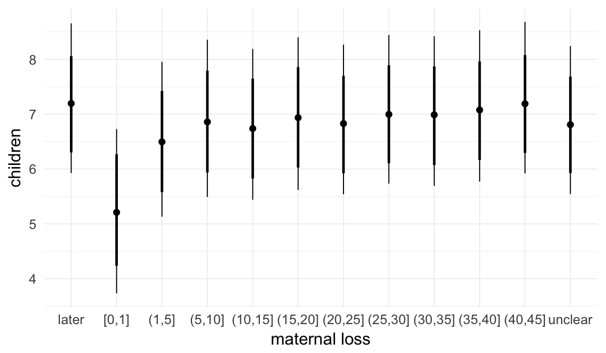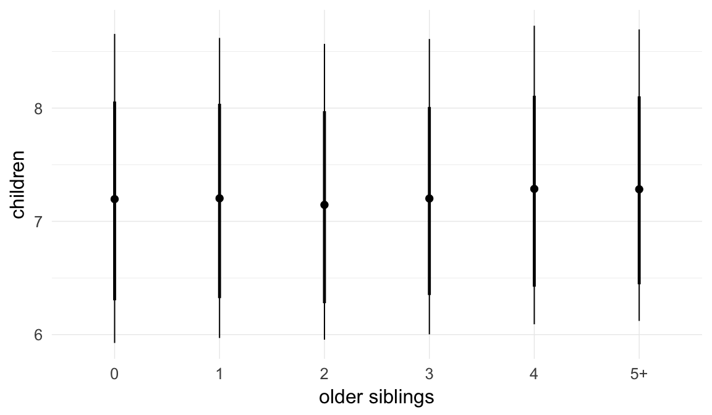
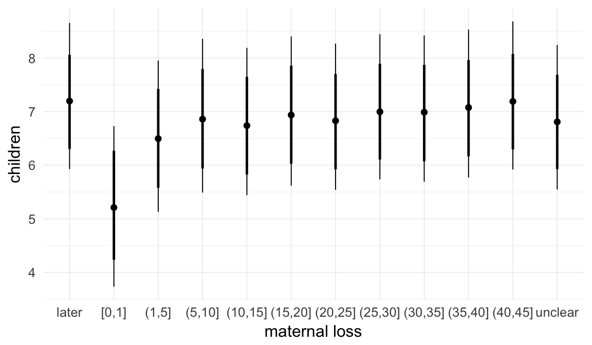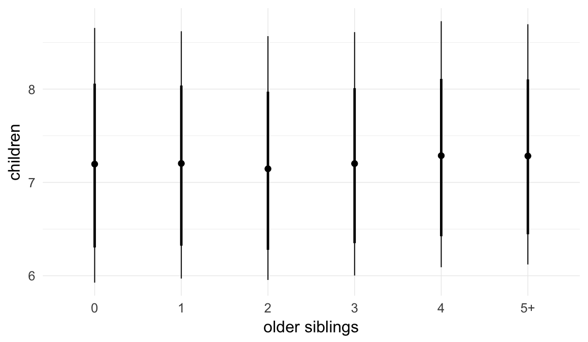
Coefficient plot
Here, we plotted the 95% posterior densities for the unexponentiated model coefficients (b_). The darkly shaded area represents the 50% credibility interval, the dark line represent the posterior mean estimate.
mcmc_areas(as.matrix(model$fit), regex_pars = "b_[^I]", point_est = "mean", prob = 0.50, prob_outer = 0.95) + ggtitle("Posterior densities with means and 50% intervals") + analysis_theme + theme(axis.text = element_text(size = 12), panel.grid = element_blank()) + xlab("Coefficient size")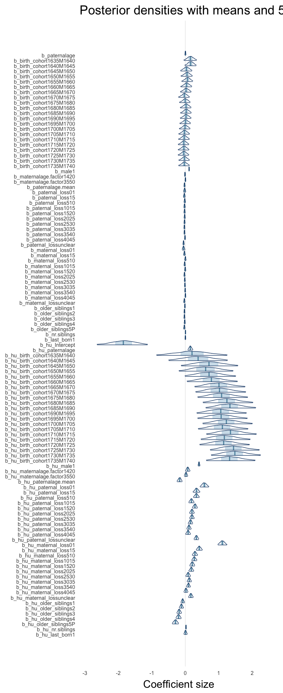
Diagnostics
These plots were made to diagnose misfit and nonconvergence.
Posterior predictive checks
In posterior predictive checks, we test whether we can approximately reproduce the real data distribution from our model.
brms::pp_check(model, re_formula = NA, type = "dens_overlay")
brms::pp_check(model, re_formula = NA, type = "hist")
Rhat
Did the 6 chains converge?
stanplot(model, pars = "^b_[^I]", type = 'rhat')
Effective sample size over average sample size
stanplot(model, pars = "^b", type = 'neff_hist')
Trace plots
Trace plots are only shown in the case of nonconvergence.
if(any( summary(model)$fixed[,"Rhat"] > 1.1)) { # only do traceplots if not converged
plot(model, N = 3, ask = FALSE)
}File/cluster script name
This model was stored in the file: coefs/rpqa/r1_relaxed_exclusion_criteria.rds.
Click the following link to see the script used to generate this model:
opts_chunk$set(echo = FALSE)
clusterscript = str_replace(basename(model_filename), "\\.rds",".html")
cat("[Cluster script](" , clusterscript, ")", sep = "")r2: Fewer covariates
Adding covariates increases the complexity of the model and makes it harder to interpret. We chose to adjust for many potential confounds because we are interested in causal isolation of the paternal age effect. Here we show what happens when only birth cohort and average paternal age in the family are adjusted for.
Model summary
Full summary
model_summary = summary(model, use_cache = FALSE, priors = TRUE)
print(model_summary)## Family: hurdle_poisson(log)
## Formula: children ~ paternalage + birth_cohort + paternalage.mean + (1 | idParents)
## hu ~ paternalage + birth_cohort + paternalage.mean + (1 | idParents)
## Data: model_data (Number of observations: 68724)
## Samples: 6 chains, each with iter = 800; warmup = 300; thin = 1;
## total post-warmup samples = 3000
## WAIC: Not computed
##
## Priors:
## b ~ normal(0,5)
## sd ~ student_t(3, 0, 5)
## b_hu ~ normal(0,5)
## sd_hu ~ student_t(3, 0, 10)
##
## Group-Level Effects:
## ~idParents (Number of levels: 12205)
## Estimate Est.Error l-95% CI u-95% CI Eff.Sample Rhat
## sd(Intercept) 0.28 0.00 0.27 0.28 1051 1
## sd(hu_Intercept) 0.64 0.01 0.61 0.67 1476 1
##
## Population-Level Effects:
## Estimate Est.Error l-95% CI u-95% CI Eff.Sample
## Intercept 2.12 0.02 2.07 2.17 799
## paternalage -0.01 0.00 -0.02 -0.01 3000
## birth_cohort1675M1680 0.02 0.02 -0.01 0.05 912
## birth_cohort1680M1685 0.06 0.02 0.03 0.09 809
## birth_cohort1685M1690 0.06 0.02 0.03 0.09 763
## birth_cohort1690M1695 0.07 0.02 0.03 0.10 548
## birth_cohort1695M1700 0.05 0.02 0.02 0.08 533
## birth_cohort1700M1705 0.04 0.02 0.01 0.07 519
## birth_cohort1705M1710 0.02 0.02 -0.02 0.05 320
## birth_cohort1710M1715 0.01 0.02 -0.02 0.04 494
## birth_cohort1715M1720 -0.02 0.02 -0.05 0.01 357
## birth_cohort1720M1725 -0.02 0.02 -0.05 0.01 362
## birth_cohort1725M1730 -0.04 0.02 -0.07 -0.01 354
## birth_cohort1730M1735 -0.03 0.02 -0.06 0.01 362
## birth_cohort1735M1740 -0.04 0.02 -0.07 0.00 334
## paternalage.mean 0.00 0.01 -0.01 0.02 1795
## hu_Intercept -0.12 0.08 -0.27 0.04 488
## hu_paternalage 0.13 0.01 0.11 0.16 3000
## hu_birth_cohort1675M1680 0.05 0.07 -0.08 0.19 521
## hu_birth_cohort1680M1685 0.22 0.07 0.08 0.35 493
## hu_birth_cohort1685M1690 0.33 0.07 0.19 0.47 524
## hu_birth_cohort1690M1695 0.08 0.07 -0.05 0.21 477
## hu_birth_cohort1695M1700 0.09 0.07 -0.04 0.21 396
## hu_birth_cohort1700M1705 0.24 0.06 0.11 0.36 401
## hu_birth_cohort1705M1710 0.11 0.06 -0.02 0.23 410
## hu_birth_cohort1710M1715 0.40 0.06 0.27 0.52 365
## hu_birth_cohort1715M1720 0.26 0.06 0.13 0.38 375
## hu_birth_cohort1720M1725 0.27 0.06 0.14 0.39 372
## hu_birth_cohort1725M1730 0.64 0.06 0.51 0.75 363
## hu_birth_cohort1730M1735 0.69 0.06 0.57 0.80 357
## hu_birth_cohort1735M1740 0.52 0.06 0.40 0.63 345
## hu_paternalage.mean -0.17 0.02 -0.21 -0.13 1881
## Rhat
## Intercept 1.01
## paternalage 1.00
## birth_cohort1675M1680 1.01
## birth_cohort1680M1685 1.01
## birth_cohort1685M1690 1.01
## birth_cohort1690M1695 1.01
## birth_cohort1695M1700 1.01
## birth_cohort1700M1705 1.02
## birth_cohort1705M1710 1.02
## birth_cohort1710M1715 1.02
## birth_cohort1715M1720 1.02
## birth_cohort1720M1725 1.02
## birth_cohort1725M1730 1.02
## birth_cohort1730M1735 1.02
## birth_cohort1735M1740 1.03
## paternalage.mean 1.00
## hu_Intercept 1.01
## hu_paternalage 1.00
## hu_birth_cohort1675M1680 1.01
## hu_birth_cohort1680M1685 1.01
## hu_birth_cohort1685M1690 1.01
## hu_birth_cohort1690M1695 1.01
## hu_birth_cohort1695M1700 1.01
## hu_birth_cohort1700M1705 1.01
## hu_birth_cohort1705M1710 1.01
## hu_birth_cohort1710M1715 1.01
## hu_birth_cohort1715M1720 1.01
## hu_birth_cohort1720M1725 1.01
## hu_birth_cohort1725M1730 1.01
## hu_birth_cohort1730M1735 1.01
## hu_birth_cohort1735M1740 1.01
## hu_paternalage.mean 1.00
##
## Samples were drawn using sampling(NUTS). For each parameter, Eff.Sample
## is a crude measure of effective sample size, and Rhat is the potential
## scale reduction factor on split chains (at convergence, Rhat = 1).Table of fixed effects
Estimates are exp(b). When they are referring to the hurdle (hu) component, or a dichotomous outcome, they are odds ratios, when they are referring to a Poisson component, they are hazard ratios. In both cases, they are presented with 95% credibility intervals. To see the effects on the response scale (probability or number of children), consult the marginal effect plots.
fixed_eff = data.frame(model_summary$fixed, check.names = F)
fixed_eff$Est.Error = fixed_eff$Eff.Sample = fixed_eff$Rhat = NULL
fixed_eff$`Odds/hazard ratio` = exp(fixed_eff$Estimate)
fixed_eff$`OR/HR low 95%` = exp(fixed_eff$`l-95% CI`)
fixed_eff$`OR/HR high 95%` = exp(fixed_eff$`u-95% CI`)
fixed_eff = fixed_eff %>% select(`Odds/hazard ratio`, `OR/HR low 95%`, `OR/HR high 95%`)
pander::pander(fixed_eff)| Odds/hazard ratio | OR/HR low 95% | OR/HR high 95% | |
|---|---|---|---|
| Intercept | 8.349 | 7.957 | 8.753 |
| paternalage | 0.9871 | 0.9797 | 0.9946 |
| birth_cohort1675M1680 | 1.023 | 0.9919 | 1.056 |
| birth_cohort1680M1685 | 1.059 | 1.025 | 1.094 |
| birth_cohort1685M1690 | 1.061 | 1.027 | 1.098 |
| birth_cohort1690M1695 | 1.067 | 1.033 | 1.103 |
| birth_cohort1695M1700 | 1.053 | 1.019 | 1.087 |
| birth_cohort1700M1705 | 1.04 | 1.007 | 1.074 |
| birth_cohort1705M1710 | 1.016 | 0.9846 | 1.05 |
| birth_cohort1710M1715 | 1.008 | 0.9761 | 1.043 |
| birth_cohort1715M1720 | 0.9816 | 0.9502 | 1.014 |
| birth_cohort1720M1725 | 0.9796 | 0.9477 | 1.012 |
| birth_cohort1725M1730 | 0.9575 | 0.9281 | 0.9886 |
| birth_cohort1730M1735 | 0.9748 | 0.9442 | 1.007 |
| birth_cohort1735M1740 | 0.9654 | 0.9354 | 0.9968 |
| paternalage.mean | 1.002 | 0.9893 | 1.016 |
| hu_Intercept | 0.8858 | 0.76 | 1.037 |
| hu_paternalage | 1.143 | 1.111 | 1.176 |
| hu_birth_cohort1675M1680 | 1.053 | 0.923 | 1.21 |
| hu_birth_cohort1680M1685 | 1.242 | 1.084 | 1.416 |
| hu_birth_cohort1685M1690 | 1.397 | 1.211 | 1.592 |
| hu_birth_cohort1690M1695 | 1.08 | 0.9471 | 1.233 |
| hu_birth_cohort1695M1700 | 1.095 | 0.9604 | 1.239 |
| hu_birth_cohort1700M1705 | 1.271 | 1.117 | 1.439 |
| hu_birth_cohort1705M1710 | 1.117 | 0.9784 | 1.263 |
| hu_birth_cohort1710M1715 | 1.487 | 1.305 | 1.679 |
| hu_birth_cohort1715M1720 | 1.291 | 1.136 | 1.46 |
| hu_birth_cohort1720M1725 | 1.31 | 1.154 | 1.475 |
| hu_birth_cohort1725M1730 | 1.887 | 1.673 | 2.122 |
| hu_birth_cohort1730M1735 | 1.993 | 1.764 | 2.235 |
| hu_birth_cohort1735M1740 | 1.682 | 1.488 | 1.885 |
| hu_paternalage.mean | 0.843 | 0.8085 | 0.8799 |
Paternal age effect
pander::pander(paternal_age_10y_effect(model))| effect | median_estimate | ci_95 | ci_80 |
|---|---|---|---|
| estimate father 25y | 4.91 | [4.65;5.16] | [4.74;5.08] |
| estimate father 35y | 4.58 | [4.33;4.83] | [4.42;4.75] |
| percentage change | -6.62 | [-7.96;-5.24] | [-7.51;-5.73] |
| OR/IRR | 0.99 | [0.98;0.99] | [0.98;0.99] |
| OR hurdle | 1.14 | [1.11;1.18] | [1.12;1.17] |
Marginal effect plots
In these marginal effect plots, we set all predictors except the one shown on the X axis to their mean and in the case of factors to their reference level. We then plot the estimated association between the X axis predictor and the outcome on the response scale (e.g. probability of survival/marriage or number of children).
plot.brmsMarginalEffects_shades(
x = marginal_effects(model, re_formula = NA, probs = c(0.025,0.975)),
y = marginal_effects(model, re_formula = NA, probs = c(0.1,0.9)),
ask = FALSE)Coefficient plot
Here, we plotted the 95% posterior densities for the unexponentiated model coefficients (b_). The darkly shaded area represents the 50% credibility interval, the dark line represent the posterior mean estimate.
mcmc_areas(as.matrix(model$fit), regex_pars = "b_[^I]", point_est = "mean", prob = 0.50, prob_outer = 0.95) + ggtitle("Posterior densities with means and 50% intervals") + analysis_theme + theme(axis.text = element_text(size = 12), panel.grid = element_blank()) + xlab("Coefficient size")
Diagnostics
These plots were made to diagnose misfit and nonconvergence.
Posterior predictive checks
In posterior predictive checks, we test whether we can approximately reproduce the real data distribution from our model.
brms::pp_check(model, re_formula = NA, type = "dens_overlay")brms::pp_check(model, re_formula = NA, type = "hist")
Rhat
Did the 6 chains converge?
stanplot(model, pars = "^b_[^I]", type = 'rhat')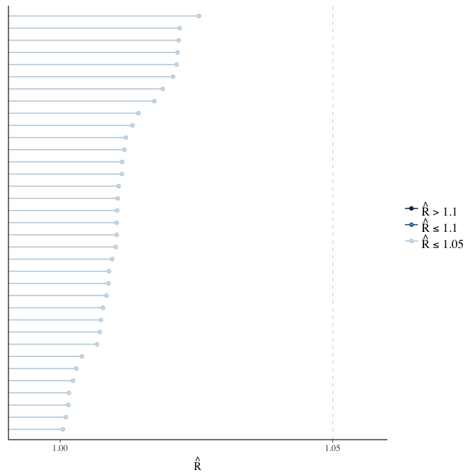
Effective sample size over average sample size
stanplot(model, pars = "^b", type = 'neff_hist')
Trace plots
Trace plots are only shown in the case of nonconvergence.
if(any( summary(model)$fixed[,"Rhat"] > 1.1)) { # only do traceplots if not converged
plot(model, N = 3, ask = FALSE)
}File/cluster script name
This model was stored in the file: coefs/rpqa/r2_few_controls.rds.
Click the following link to see the script used to generate this model:
opts_chunk$set(echo = FALSE)
clusterscript = str_replace(basename(model_filename), "\\.rds",".html")
cat("[Cluster script](" , clusterscript, ")", sep = "")r3: Continuous birth order control
We chose to control for birth order/number of older siblings as a categorical variable, lumping all those who had more than 5 in the category 5+. Because a continuous covariate is also plausible, we tested this alternative model as well.
Model summary
Full summary
model_summary = summary(model, use_cache = FALSE, priors = TRUE)
print(model_summary)## Family: hurdle_poisson(log)
## Formula: children ~ paternalage + birth_cohort + male + maternalage.factor + paternalage.mean + paternal_loss + maternal_loss + older_siblings + nr.siblings + last_born + (1 | idParents)
## hu ~ paternalage + birth_cohort + male + maternalage.factor + paternalage.mean + paternal_loss + maternal_loss + older_siblings + nr.siblings + last_born + (1 | idParents)
## Data: model_data (Number of observations: 68724)
## Samples: 6 chains, each with iter = 1000; warmup = 500; thin = 1;
## total post-warmup samples = 3000
## WAIC: Not computed
##
## Priors:
## b ~ normal(0,5)
## sd ~ student_t(3, 0, 5)
## b_hu ~ normal(0,5)
## sd_hu ~ student_t(3, 0, 10)
##
## Group-Level Effects:
## ~idParents (Number of levels: 12205)
## Estimate Est.Error l-95% CI u-95% CI Eff.Sample Rhat
## sd(Intercept) 0.27 0.00 0.27 0.28 1111 1
## sd(hu_Intercept) 0.63 0.01 0.60 0.66 1131 1
##
## Population-Level Effects:
## Estimate Est.Error l-95% CI u-95% CI Eff.Sample
## Intercept 2.11 0.03 2.06 2.17 1001
## paternalage 0.04 0.02 0.01 0.07 1589
## birth_cohort1675M1680 0.02 0.02 -0.01 0.05 1224
## birth_cohort1680M1685 0.05 0.02 0.01 0.08 1035
## birth_cohort1685M1690 0.05 0.02 0.02 0.08 1033
## birth_cohort1690M1695 0.05 0.02 0.01 0.08 838
## birth_cohort1695M1700 0.03 0.02 0.00 0.06 826
## birth_cohort1700M1705 0.02 0.02 -0.01 0.05 716
## birth_cohort1705M1710 0.00 0.02 -0.03 0.03 714
## birth_cohort1710M1715 -0.01 0.02 -0.05 0.02 715
## birth_cohort1715M1720 -0.04 0.02 -0.07 -0.01 633
## birth_cohort1720M1725 -0.04 0.02 -0.08 -0.01 667
## birth_cohort1725M1730 -0.07 0.02 -0.10 -0.04 625
## birth_cohort1730M1735 -0.05 0.02 -0.08 -0.02 660
## birth_cohort1735M1740 -0.06 0.02 -0.09 -0.03 625
## male1 0.11 0.00 0.10 0.12 3000
## maternalage.factor1420 0.00 0.01 -0.02 0.02 3000
## maternalage.factor3550 0.01 0.01 -0.01 0.02 3000
## paternalage.mean -0.06 0.02 -0.09 -0.03 1516
## paternal_loss01 -0.04 0.02 -0.08 0.00 1230
## paternal_loss15 -0.02 0.02 -0.05 0.01 990
## paternal_loss510 -0.01 0.01 -0.04 0.02 1118
## paternal_loss1015 -0.01 0.01 -0.04 0.01 1018
## paternal_loss1520 -0.02 0.01 -0.05 0.00 1044
## paternal_loss2025 -0.02 0.01 -0.04 0.00 1047
## paternal_loss2530 -0.01 0.01 -0.03 0.01 1181
## paternal_loss3035 -0.02 0.01 -0.04 0.00 1211
## paternal_loss3540 -0.02 0.01 -0.04 0.00 1401
## paternal_loss4045 0.00 0.01 -0.02 0.01 3000
## paternal_lossunclear -0.05 0.01 -0.08 -0.03 929
## maternal_loss01 -0.05 0.02 -0.10 -0.01 2310
## maternal_loss15 -0.03 0.02 -0.06 0.00 1492
## maternal_loss510 0.01 0.01 -0.01 0.04 1550
## maternal_loss1015 -0.01 0.01 -0.03 0.02 1426
## maternal_loss1520 0.01 0.01 -0.02 0.03 1330
## maternal_loss2025 -0.02 0.01 -0.04 0.00 1653
## maternal_loss2530 -0.01 0.01 -0.03 0.01 1657
## maternal_loss3035 -0.01 0.01 -0.03 0.01 1374
## maternal_loss3540 0.00 0.01 -0.02 0.02 2016
## maternal_loss4045 0.00 0.01 -0.01 0.02 3000
## maternal_lossunclear -0.02 0.01 -0.04 0.01 1183
## older_siblings -0.01 0.00 -0.02 0.00 2258
## nr.siblings 0.01 0.00 0.01 0.01 1921
## last_born1 0.00 0.01 -0.01 0.02 3000
## hu_Intercept -0.80 0.09 -0.98 -0.63 702
## hu_paternalage 0.20 0.07 0.07 0.33 1446
## hu_birth_cohort1675M1680 0.06 0.07 -0.07 0.20 722
## hu_birth_cohort1680M1685 0.21 0.07 0.08 0.35 710
## hu_birth_cohort1685M1690 0.32 0.07 0.18 0.46 620
## hu_birth_cohort1690M1695 0.07 0.07 -0.06 0.21 626
## hu_birth_cohort1695M1700 0.09 0.07 -0.04 0.23 594
## hu_birth_cohort1700M1705 0.24 0.06 0.12 0.37 530
## hu_birth_cohort1705M1710 0.14 0.06 0.02 0.27 508
## hu_birth_cohort1710M1715 0.42 0.06 0.30 0.55 519
## hu_birth_cohort1715M1720 0.28 0.06 0.16 0.41 559
## hu_birth_cohort1720M1725 0.30 0.06 0.18 0.43 497
## hu_birth_cohort1725M1730 0.66 0.06 0.55 0.78 508
## hu_birth_cohort1730M1735 0.72 0.06 0.60 0.84 482
## hu_birth_cohort1735M1740 0.56 0.06 0.44 0.68 483
## hu_male1 0.44 0.02 0.40 0.47 3000
## hu_maternalage.factor1420 0.09 0.04 0.02 0.15 3000
## hu_maternalage.factor3550 0.07 0.03 0.02 0.13 3000
## hu_paternalage.mean -0.21 0.07 -0.34 -0.08 1382
## hu_paternal_loss01 0.58 0.07 0.44 0.72 3000
## hu_paternal_loss15 0.31 0.06 0.20 0.42 1450
## hu_paternal_loss510 0.30 0.05 0.20 0.39 1229
## hu_paternal_loss1015 0.18 0.05 0.09 0.27 1130
## hu_paternal_loss1520 0.29 0.04 0.20 0.37 1023
## hu_paternal_loss2025 0.18 0.04 0.10 0.26 999
## hu_paternal_loss2530 0.17 0.04 0.10 0.25 1028
## hu_paternal_loss3035 0.13 0.04 0.06 0.21 1226
## hu_paternal_loss3540 0.10 0.04 0.03 0.17 1325
## hu_paternal_loss4045 0.06 0.04 -0.01 0.14 1792
## hu_paternal_lossunclear 0.37 0.04 0.29 0.45 1011
## hu_maternal_loss01 1.07 0.07 0.93 1.21 3000
## hu_maternal_loss15 0.40 0.05 0.30 0.50 3000
## hu_maternal_loss510 0.26 0.05 0.17 0.35 3000
## hu_maternal_loss1015 0.26 0.04 0.18 0.34 3000
## hu_maternal_loss1520 0.20 0.04 0.12 0.28 3000
## hu_maternal_loss2025 0.17 0.04 0.09 0.25 3000
## hu_maternal_loss2530 0.06 0.04 -0.02 0.13 3000
## hu_maternal_loss3035 0.09 0.03 0.02 0.16 3000
## hu_maternal_loss3540 0.08 0.03 0.01 0.15 3000
## hu_maternal_loss4045 -0.01 0.03 -0.08 0.06 3000
## hu_maternal_lossunclear 0.22 0.04 0.15 0.30 2386
## hu_older_siblings -0.04 0.01 -0.07 -0.02 1576
## hu_nr.siblings 0.03 0.01 0.01 0.04 1640
## hu_last_born1 0.00 0.03 -0.05 0.06 3000
## Rhat
## Intercept 1.00
## paternalage 1.00
## birth_cohort1675M1680 1.00
## birth_cohort1680M1685 1.00
## birth_cohort1685M1690 1.00
## birth_cohort1690M1695 1.00
## birth_cohort1695M1700 1.00
## birth_cohort1700M1705 1.01
## birth_cohort1705M1710 1.01
## birth_cohort1710M1715 1.00
## birth_cohort1715M1720 1.01
## birth_cohort1720M1725 1.01
## birth_cohort1725M1730 1.01
## birth_cohort1730M1735 1.01
## birth_cohort1735M1740 1.01
## male1 1.00
## maternalage.factor1420 1.00
## maternalage.factor3550 1.00
## paternalage.mean 1.00
## paternal_loss01 1.00
## paternal_loss15 1.00
## paternal_loss510 1.00
## paternal_loss1015 1.00
## paternal_loss1520 1.00
## paternal_loss2025 1.00
## paternal_loss2530 1.00
## paternal_loss3035 1.00
## paternal_loss3540 1.00
## paternal_loss4045 1.00
## paternal_lossunclear 1.01
## maternal_loss01 1.00
## maternal_loss15 1.00
## maternal_loss510 1.00
## maternal_loss1015 1.00
## maternal_loss1520 1.00
## maternal_loss2025 1.00
## maternal_loss2530 1.00
## maternal_loss3035 1.00
## maternal_loss3540 1.00
## maternal_loss4045 1.00
## maternal_lossunclear 1.00
## older_siblings 1.00
## nr.siblings 1.00
## last_born1 1.00
## hu_Intercept 1.00
## hu_paternalage 1.00
## hu_birth_cohort1675M1680 1.00
## hu_birth_cohort1680M1685 1.00
## hu_birth_cohort1685M1690 1.01
## hu_birth_cohort1690M1695 1.00
## hu_birth_cohort1695M1700 1.00
## hu_birth_cohort1700M1705 1.01
## hu_birth_cohort1705M1710 1.01
## hu_birth_cohort1710M1715 1.00
## hu_birth_cohort1715M1720 1.01
## hu_birth_cohort1720M1725 1.01
## hu_birth_cohort1725M1730 1.01
## hu_birth_cohort1730M1735 1.01
## hu_birth_cohort1735M1740 1.01
## hu_male1 1.00
## hu_maternalage.factor1420 1.00
## hu_maternalage.factor3550 1.00
## hu_paternalage.mean 1.00
## hu_paternal_loss01 1.00
## hu_paternal_loss15 1.00
## hu_paternal_loss510 1.00
## hu_paternal_loss1015 1.00
## hu_paternal_loss1520 1.00
## hu_paternal_loss2025 1.00
## hu_paternal_loss2530 1.00
## hu_paternal_loss3035 1.00
## hu_paternal_loss3540 1.00
## hu_paternal_loss4045 1.00
## hu_paternal_lossunclear 1.00
## hu_maternal_loss01 1.00
## hu_maternal_loss15 1.00
## hu_maternal_loss510 1.00
## hu_maternal_loss1015 1.00
## hu_maternal_loss1520 1.00
## hu_maternal_loss2025 1.00
## hu_maternal_loss2530 1.00
## hu_maternal_loss3035 1.00
## hu_maternal_loss3540 1.00
## hu_maternal_loss4045 1.00
## hu_maternal_lossunclear 1.00
## hu_older_siblings 1.00
## hu_nr.siblings 1.00
## hu_last_born1 1.00
##
## Samples were drawn using sampling(NUTS). For each parameter, Eff.Sample
## is a crude measure of effective sample size, and Rhat is the potential
## scale reduction factor on split chains (at convergence, Rhat = 1).Table of fixed effects
Estimates are exp(b). When they are referring to the hurdle (hu) component, or a dichotomous outcome, they are odds ratios, when they are referring to a Poisson component, they are hazard ratios. In both cases, they are presented with 95% credibility intervals. To see the effects on the response scale (probability or number of children), consult the marginal effect plots.
fixed_eff = data.frame(model_summary$fixed, check.names = F)
fixed_eff$Est.Error = fixed_eff$Eff.Sample = fixed_eff$Rhat = NULL
fixed_eff$`Odds/hazard ratio` = exp(fixed_eff$Estimate)
fixed_eff$`OR/HR low 95%` = exp(fixed_eff$`l-95% CI`)
fixed_eff$`OR/HR high 95%` = exp(fixed_eff$`u-95% CI`)
fixed_eff = fixed_eff %>% select(`Odds/hazard ratio`, `OR/HR low 95%`, `OR/HR high 95%`)
pander::pander(fixed_eff)| Odds/hazard ratio | OR/HR low 95% | OR/HR high 95% | |
|---|---|---|---|
| Intercept | 8.271 | 7.835 | 8.731 |
| paternalage | 1.04 | 1.009 | 1.076 |
| birth_cohort1675M1680 | 1.018 | 0.9888 | 1.049 |
| birth_cohort1680M1685 | 1.046 | 1.014 | 1.079 |
| birth_cohort1685M1690 | 1.05 | 1.016 | 1.084 |
| birth_cohort1690M1695 | 1.047 | 1.013 | 1.08 |
| birth_cohort1695M1700 | 1.034 | 1.001 | 1.067 |
| birth_cohort1700M1705 | 1.019 | 0.9877 | 1.05 |
| birth_cohort1705M1710 | 0.9958 | 0.9667 | 1.028 |
| birth_cohort1710M1715 | 0.9862 | 0.9558 | 1.018 |
| birth_cohort1715M1720 | 0.9588 | 0.9306 | 0.9888 |
| birth_cohort1720M1725 | 0.9566 | 0.9276 | 0.9868 |
| birth_cohort1725M1730 | 0.9346 | 0.9063 | 0.9646 |
| birth_cohort1730M1735 | 0.9509 | 0.9233 | 0.9806 |
| birth_cohort1735M1740 | 0.9403 | 0.9123 | 0.9699 |
| male1 | 1.117 | 1.109 | 1.127 |
| maternalage.factor1420 | 1.001 | 0.9821 | 1.019 |
| maternalage.factor3550 | 1.007 | 0.9911 | 1.023 |
| paternalage.mean | 0.9431 | 0.9119 | 0.9745 |
| paternal_loss01 | 0.9636 | 0.925 | 1.002 |
| paternal_loss15 | 0.9832 | 0.9521 | 1.015 |
| paternal_loss510 | 0.9913 | 0.9641 | 1.02 |
| paternal_loss1015 | 0.9854 | 0.9604 | 1.011 |
| paternal_loss1520 | 0.9772 | 0.9536 | 1.002 |
| paternal_loss2025 | 0.9781 | 0.9563 | 1 |
| paternal_loss2530 | 0.9879 | 0.9664 | 1.009 |
| paternal_loss3035 | 0.9773 | 0.9578 | 0.9971 |
| paternal_loss3540 | 0.9777 | 0.9602 | 0.9956 |
| paternal_loss4045 | 0.9967 | 0.9787 | 1.015 |
| paternal_lossunclear | 0.9478 | 0.924 | 0.9719 |
| maternal_loss01 | 0.9506 | 0.9076 | 0.9942 |
| maternal_loss15 | 0.9733 | 0.9453 | 1.003 |
| maternal_loss510 | 1.012 | 0.9877 | 1.039 |
| maternal_loss1015 | 0.992 | 0.9677 | 1.017 |
| maternal_loss1520 | 1.006 | 0.9828 | 1.03 |
| maternal_loss2025 | 0.981 | 0.9581 | 1.004 |
| maternal_loss2530 | 0.9878 | 0.9667 | 1.009 |
| maternal_loss3035 | 0.9924 | 0.9737 | 1.011 |
| maternal_loss3540 | 1.001 | 0.9848 | 1.018 |
| maternal_loss4045 | 1.004 | 0.9873 | 1.021 |
| maternal_lossunclear | 0.9809 | 0.9563 | 1.005 |
| older_siblings | 0.9909 | 0.9849 | 0.9966 |
| nr.siblings | 1.01 | 1.007 | 1.014 |
| last_born1 | 1.002 | 0.9869 | 1.017 |
| hu_Intercept | 0.4474 | 0.3744 | 0.5343 |
| hu_paternalage | 1.217 | 1.07 | 1.389 |
| hu_birth_cohort1675M1680 | 1.066 | 0.9336 | 1.221 |
| hu_birth_cohort1680M1685 | 1.234 | 1.08 | 1.425 |
| hu_birth_cohort1685M1690 | 1.379 | 1.203 | 1.582 |
| hu_birth_cohort1690M1695 | 1.077 | 0.9414 | 1.235 |
| hu_birth_cohort1695M1700 | 1.097 | 0.964 | 1.253 |
| hu_birth_cohort1700M1705 | 1.277 | 1.126 | 1.454 |
| hu_birth_cohort1705M1710 | 1.154 | 1.023 | 1.304 |
| hu_birth_cohort1710M1715 | 1.526 | 1.352 | 1.73 |
| hu_birth_cohort1715M1720 | 1.322 | 1.171 | 1.5 |
| hu_birth_cohort1720M1725 | 1.349 | 1.197 | 1.53 |
| hu_birth_cohort1725M1730 | 1.938 | 1.726 | 2.183 |
| hu_birth_cohort1730M1735 | 2.056 | 1.827 | 2.315 |
| hu_birth_cohort1735M1740 | 1.75 | 1.557 | 1.977 |
| hu_male1 | 1.545 | 1.494 | 1.597 |
| hu_maternalage.factor1420 | 1.089 | 1.017 | 1.166 |
| hu_maternalage.factor3550 | 1.073 | 1.016 | 1.135 |
| hu_paternalage.mean | 0.8083 | 0.7087 | 0.922 |
| hu_paternal_loss01 | 1.784 | 1.549 | 2.048 |
| hu_paternal_loss15 | 1.368 | 1.227 | 1.525 |
| hu_paternal_loss510 | 1.345 | 1.222 | 1.482 |
| hu_paternal_loss1015 | 1.193 | 1.094 | 1.307 |
| hu_paternal_loss1520 | 1.331 | 1.225 | 1.453 |
| hu_paternal_loss2025 | 1.192 | 1.1 | 1.291 |
| hu_paternal_loss2530 | 1.191 | 1.105 | 1.285 |
| hu_paternal_loss3035 | 1.144 | 1.062 | 1.233 |
| hu_paternal_loss3540 | 1.102 | 1.027 | 1.184 |
| hu_paternal_loss4045 | 1.067 | 0.9853 | 1.149 |
| hu_paternal_lossunclear | 1.446 | 1.338 | 1.566 |
| hu_maternal_loss01 | 2.918 | 2.534 | 3.365 |
| hu_maternal_loss15 | 1.49 | 1.345 | 1.644 |
| hu_maternal_loss510 | 1.301 | 1.191 | 1.423 |
| hu_maternal_loss1015 | 1.295 | 1.192 | 1.406 |
| hu_maternal_loss1520 | 1.221 | 1.123 | 1.327 |
| hu_maternal_loss2025 | 1.189 | 1.098 | 1.287 |
| hu_maternal_loss2530 | 1.058 | 0.9799 | 1.143 |
| hu_maternal_loss3035 | 1.093 | 1.021 | 1.172 |
| hu_maternal_loss3540 | 1.085 | 1.015 | 1.162 |
| hu_maternal_loss4045 | 0.9875 | 0.9247 | 1.059 |
| hu_maternal_lossunclear | 1.251 | 1.161 | 1.348 |
| hu_older_siblings | 0.9567 | 0.9347 | 0.9789 |
| hu_nr.siblings | 1.028 | 1.015 | 1.041 |
| hu_last_born1 | 1.003 | 0.9484 | 1.06 |
Paternal age effect
pander::pander(paternal_age_10y_effect(model))| effect | median_estimate | ci_95 | ci_80 |
|---|---|---|---|
| estimate father 25y | 5.72 | [5.4;6.06] | [5.51;5.94] |
| estimate father 35y | 5.63 | [5.33;5.93] | [5.44;5.82] |
| percentage change | -1.68 | [-6.18;3.55] | [-4.69;1.63] |
| OR/IRR | 1.04 | [1.01;1.08] | [1.02;1.06] |
| OR hurdle | 1.22 | [1.07;1.39] | [1.12;1.32] |
Marginal effect plots
In these marginal effect plots, we set all predictors except the one shown on the X axis to their mean and in the case of factors to their reference level. We then plot the estimated association between the X axis predictor and the outcome on the response scale (e.g. probability of survival/marriage or number of children).
plot.brmsMarginalEffects_shades(
x = marginal_effects(model, re_formula = NA, probs = c(0.025,0.975)),
y = marginal_effects(model, re_formula = NA, probs = c(0.1,0.9)),
ask = FALSE)Coefficient plot
Here, we plotted the 95% posterior densities for the unexponentiated model coefficients (b_). The darkly shaded area represents the 50% credibility interval, the dark line represent the posterior mean estimate.
mcmc_areas(as.matrix(model$fit), regex_pars = "b_[^I]", point_est = "mean", prob = 0.50, prob_outer = 0.95) + ggtitle("Posterior densities with means and 50% intervals") + analysis_theme + theme(axis.text = element_text(size = 12), panel.grid = element_blank()) + xlab("Coefficient size")Diagnostics
These plots were made to diagnose misfit and nonconvergence.
Posterior predictive checks
In posterior predictive checks, we test whether we can approximately reproduce the real data distribution from our model.
brms::pp_check(model, re_formula = NA, type = "dens_overlay")brms::pp_check(model, re_formula = NA, type = "hist")Rhat
Did the 6 chains converge?
stanplot(model, pars = "^b_[^I]", type = 'rhat')
Effective sample size over average sample size
stanplot(model, pars = "^b", type = 'neff_hist')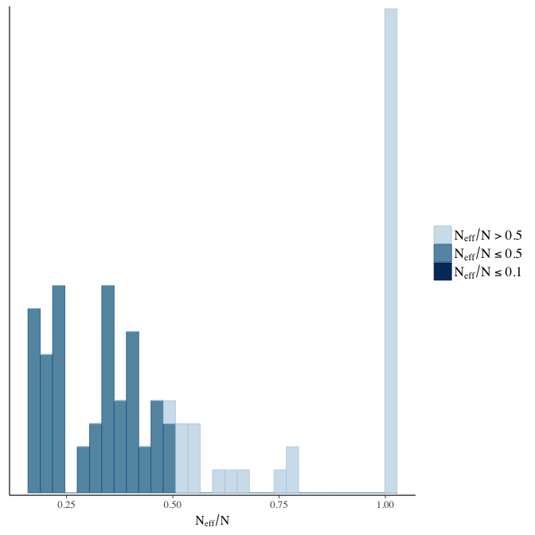
Trace plots
Trace plots are only shown in the case of nonconvergence.
if(any( summary(model)$fixed[,"Rhat"] > 1.1)) { # only do traceplots if not converged
plot(model, N = 3, ask = FALSE)
}File/cluster script name
This model was stored in the file: coefs/rpqa/r3_birth_order_continuous.rds.
Click the following link to see the script used to generate this model:
opts_chunk$set(echo = FALSE)
clusterscript = str_replace(basename(model_filename), "\\.rds",".html")
cat("[Cluster script](" , clusterscript, ")", sep = "")r4: Control number of dependent siblings
Birth order is usually used as a proxy variable for parental investment, the assumption being that older siblings require parental attention. However, there are are reasons to doubt this, as fully-grown siblings probably do not compete for the same resources. To compute a clearer proxy variable of competing siblings, we computed and adjusted for the number of siblings who were alive and younger than five at the time of birth of the anchor child.
Model summary
Full summary
model_summary = summary(model, use_cache = FALSE, priors = TRUE)
print(model_summary)## Family: hurdle_poisson(log)
## Formula: children ~ paternalage + birth_cohort + male + maternalage.factor + paternalage.mean + paternal_loss + maternal_loss + nr.siblings + dependent_sibs_f5y + (1 | idParents)
## hu ~ paternalage + birth_cohort + male + maternalage.factor + paternalage.mean + paternal_loss + maternal_loss + nr.siblings + dependent_sibs_f5y + (1 | idParents)
## Data: model_data (Number of observations: 68724)
## Samples: 6 chains, each with iter = 1000; warmup = 500; thin = 1;
## total post-warmup samples = 3000
## WAIC: Not computed
##
## Priors:
## b ~ normal(0,5)
## sd ~ student_t(3, 0, 5)
## b_hu ~ normal(0,5)
## sd_hu ~ student_t(3, 0, 10)
##
## Group-Level Effects:
## ~idParents (Number of levels: 12205)
## Estimate Est.Error l-95% CI u-95% CI Eff.Sample Rhat
## sd(Intercept) 0.27 0.00 0.27 0.28 876 1
## sd(hu_Intercept) 0.65 0.01 0.63 0.68 895 1
##
## Population-Level Effects:
## Estimate Est.Error l-95% CI u-95% CI Eff.Sample
## Intercept 2.11 0.03 2.06 2.16 863
## paternalage 0.00 0.01 -0.02 0.01 1106
## birth_cohort1675M1680 0.02 0.02 -0.01 0.05 835
## birth_cohort1680M1685 0.05 0.02 0.01 0.08 738
## birth_cohort1685M1690 0.05 0.02 0.02 0.08 614
## birth_cohort1690M1695 0.05 0.02 0.01 0.08 557
## birth_cohort1695M1700 0.04 0.02 0.00 0.07 503
## birth_cohort1700M1705 0.02 0.02 -0.01 0.05 466
## birth_cohort1705M1710 0.00 0.02 -0.03 0.03 439
## birth_cohort1710M1715 -0.01 0.02 -0.04 0.02 418
## birth_cohort1715M1720 -0.04 0.02 -0.07 -0.01 410
## birth_cohort1720M1725 -0.04 0.02 -0.07 -0.01 412
## birth_cohort1725M1730 -0.06 0.02 -0.10 -0.03 446
## birth_cohort1730M1735 -0.05 0.02 -0.08 -0.02 377
## birth_cohort1735M1740 -0.06 0.02 -0.09 -0.03 381
## male1 0.11 0.00 0.10 0.12 3000
## maternalage.factor1420 0.00 0.01 -0.02 0.02 3000
## maternalage.factor3550 0.00 0.01 -0.01 0.02 3000
## paternalage.mean -0.01 0.01 -0.03 0.00 1502
## paternal_loss01 -0.04 0.02 -0.09 0.00 1450
## paternal_loss15 -0.02 0.02 -0.05 0.02 813
## paternal_loss510 -0.01 0.01 -0.04 0.02 813
## paternal_loss1015 -0.01 0.01 -0.04 0.01 746
## paternal_loss1520 -0.02 0.01 -0.05 0.00 653
## paternal_loss2025 -0.02 0.01 -0.04 0.00 787
## paternal_loss2530 -0.01 0.01 -0.03 0.01 886
## paternal_loss3035 -0.02 0.01 -0.04 0.00 978
## paternal_loss3540 -0.02 0.01 -0.04 0.00 1405
## paternal_loss4045 0.00 0.01 -0.02 0.02 1769
## paternal_lossunclear -0.05 0.01 -0.08 -0.03 806
## maternal_loss01 -0.06 0.02 -0.10 -0.01 3000
## maternal_loss15 -0.03 0.02 -0.06 0.00 1538
## maternal_loss510 0.01 0.01 -0.01 0.04 1824
## maternal_loss1015 -0.01 0.01 -0.03 0.02 1348
## maternal_loss1520 0.01 0.01 -0.02 0.03 1750
## maternal_loss2025 -0.02 0.01 -0.04 0.00 1431
## maternal_loss2530 -0.01 0.01 -0.03 0.01 1525
## maternal_loss3035 -0.01 0.01 -0.03 0.01 1779
## maternal_loss3540 0.00 0.01 -0.02 0.02 2061
## maternal_loss4045 0.00 0.01 -0.01 0.02 3000
## maternal_lossunclear -0.02 0.01 -0.04 0.01 1173
## nr.siblings 0.01 0.00 0.00 0.01 1610
## dependent_sibs_f5y -0.01 0.00 -0.01 0.00 3000
## hu_Intercept -0.95 0.09 -1.12 -0.77 842
## hu_paternalage -0.03 0.02 -0.08 0.01 1444
## hu_birth_cohort1675M1680 0.06 0.07 -0.07 0.19 1078
## hu_birth_cohort1680M1685 0.22 0.07 0.09 0.35 948
## hu_birth_cohort1685M1690 0.34 0.07 0.22 0.48 927
## hu_birth_cohort1690M1695 0.09 0.07 -0.03 0.22 793
## hu_birth_cohort1695M1700 0.11 0.06 -0.01 0.24 808
## hu_birth_cohort1700M1705 0.26 0.06 0.14 0.38 736
## hu_birth_cohort1705M1710 0.16 0.06 0.04 0.28 716
## hu_birth_cohort1710M1715 0.44 0.06 0.32 0.56 707
## hu_birth_cohort1715M1720 0.30 0.06 0.19 0.42 730
## hu_birth_cohort1720M1725 0.32 0.06 0.20 0.43 701
## hu_birth_cohort1725M1730 0.68 0.06 0.57 0.80 699
## hu_birth_cohort1730M1735 0.74 0.06 0.63 0.86 706
## hu_birth_cohort1735M1740 0.57 0.06 0.46 0.69 665
## hu_male1 0.44 0.02 0.40 0.47 3000
## hu_maternalage.factor1420 0.13 0.04 0.06 0.21 3000
## hu_maternalage.factor3550 0.11 0.03 0.06 0.17 3000
## hu_paternalage.mean 0.02 0.03 -0.04 0.08 1683
## hu_paternal_loss01 0.62 0.07 0.47 0.76 3000
## hu_paternal_loss15 0.32 0.06 0.21 0.42 1262
## hu_paternal_loss510 0.29 0.05 0.19 0.38 1179
## hu_paternal_loss1015 0.17 0.04 0.08 0.25 1264
## hu_paternal_loss1520 0.28 0.04 0.19 0.36 1328
## hu_paternal_loss2025 0.17 0.04 0.09 0.25 1093
## hu_paternal_loss2530 0.17 0.04 0.09 0.24 1302
## hu_paternal_loss3035 0.13 0.04 0.05 0.20 1227
## hu_paternal_loss3540 0.09 0.04 0.02 0.16 1407
## hu_paternal_loss4045 0.06 0.04 -0.02 0.13 3000
## hu_paternal_lossunclear 0.37 0.04 0.29 0.44 1222
## hu_maternal_loss01 1.11 0.07 0.97 1.26 3000
## hu_maternal_loss15 0.41 0.05 0.31 0.50 3000
## hu_maternal_loss510 0.25 0.04 0.16 0.33 3000
## hu_maternal_loss1015 0.25 0.04 0.17 0.34 3000
## hu_maternal_loss1520 0.20 0.04 0.12 0.29 3000
## hu_maternal_loss2025 0.18 0.04 0.10 0.26 3000
## hu_maternal_loss2530 0.06 0.04 -0.02 0.13 3000
## hu_maternal_loss3035 0.09 0.04 0.02 0.15 3000
## hu_maternal_loss3540 0.08 0.03 0.01 0.14 3000
## hu_maternal_loss4045 -0.02 0.03 -0.09 0.05 3000
## hu_maternal_lossunclear 0.22 0.04 0.14 0.30 2290
## hu_nr.siblings 0.00 0.00 -0.01 0.00 3000
## hu_dependent_sibs_f5y 0.05 0.01 0.03 0.06 3000
## Rhat
## Intercept 1.00
## paternalage 1.00
## birth_cohort1675M1680 1.00
## birth_cohort1680M1685 1.00
## birth_cohort1685M1690 1.01
## birth_cohort1690M1695 1.00
## birth_cohort1695M1700 1.01
## birth_cohort1700M1705 1.01
## birth_cohort1705M1710 1.01
## birth_cohort1710M1715 1.01
## birth_cohort1715M1720 1.01
## birth_cohort1720M1725 1.01
## birth_cohort1725M1730 1.01
## birth_cohort1730M1735 1.01
## birth_cohort1735M1740 1.01
## male1 1.00
## maternalage.factor1420 1.00
## maternalage.factor3550 1.00
## paternalage.mean 1.00
## paternal_loss01 1.00
## paternal_loss15 1.01
## paternal_loss510 1.01
## paternal_loss1015 1.01
## paternal_loss1520 1.00
## paternal_loss2025 1.00
## paternal_loss2530 1.00
## paternal_loss3035 1.00
## paternal_loss3540 1.00
## paternal_loss4045 1.00
## paternal_lossunclear 1.01
## maternal_loss01 1.00
## maternal_loss15 1.00
## maternal_loss510 1.00
## maternal_loss1015 1.00
## maternal_loss1520 1.00
## maternal_loss2025 1.00
## maternal_loss2530 1.00
## maternal_loss3035 1.00
## maternal_loss3540 1.00
## maternal_loss4045 1.00
## maternal_lossunclear 1.00
## nr.siblings 1.00
## dependent_sibs_f5y 1.00
## hu_Intercept 1.01
## hu_paternalage 1.00
## hu_birth_cohort1675M1680 1.01
## hu_birth_cohort1680M1685 1.00
## hu_birth_cohort1685M1690 1.00
## hu_birth_cohort1690M1695 1.01
## hu_birth_cohort1695M1700 1.01
## hu_birth_cohort1700M1705 1.01
## hu_birth_cohort1705M1710 1.01
## hu_birth_cohort1710M1715 1.01
## hu_birth_cohort1715M1720 1.01
## hu_birth_cohort1720M1725 1.01
## hu_birth_cohort1725M1730 1.01
## hu_birth_cohort1730M1735 1.01
## hu_birth_cohort1735M1740 1.01
## hu_male1 1.00
## hu_maternalage.factor1420 1.00
## hu_maternalage.factor3550 1.00
## hu_paternalage.mean 1.00
## hu_paternal_loss01 1.00
## hu_paternal_loss15 1.00
## hu_paternal_loss510 1.00
## hu_paternal_loss1015 1.00
## hu_paternal_loss1520 1.00
## hu_paternal_loss2025 1.00
## hu_paternal_loss2530 1.00
## hu_paternal_loss3035 1.00
## hu_paternal_loss3540 1.00
## hu_paternal_loss4045 1.00
## hu_paternal_lossunclear 1.00
## hu_maternal_loss01 1.00
## hu_maternal_loss15 1.00
## hu_maternal_loss510 1.00
## hu_maternal_loss1015 1.00
## hu_maternal_loss1520 1.00
## hu_maternal_loss2025 1.00
## hu_maternal_loss2530 1.00
## hu_maternal_loss3035 1.00
## hu_maternal_loss3540 1.00
## hu_maternal_loss4045 1.00
## hu_maternal_lossunclear 1.00
## hu_nr.siblings 1.00
## hu_dependent_sibs_f5y 1.00
##
## Samples were drawn using sampling(NUTS). For each parameter, Eff.Sample
## is a crude measure of effective sample size, and Rhat is the potential
## scale reduction factor on split chains (at convergence, Rhat = 1).Table of fixed effects
Estimates are exp(b). When they are referring to the hurdle (hu) component, or a dichotomous outcome, they are odds ratios, when they are referring to a Poisson component, they are hazard ratios. In both cases, they are presented with 95% credibility intervals. To see the effects on the response scale (probability or number of children), consult the marginal effect plots.
fixed_eff = data.frame(model_summary$fixed, check.names = F)
fixed_eff$Est.Error = fixed_eff$Eff.Sample = fixed_eff$Rhat = NULL
fixed_eff$`Odds/hazard ratio` = exp(fixed_eff$Estimate)
fixed_eff$`OR/HR low 95%` = exp(fixed_eff$`l-95% CI`)
fixed_eff$`OR/HR high 95%` = exp(fixed_eff$`u-95% CI`)
fixed_eff = fixed_eff %>% select(`Odds/hazard ratio`, `OR/HR low 95%`, `OR/HR high 95%`)
pander::pander(fixed_eff)| Odds/hazard ratio | OR/HR low 95% | OR/HR high 95% | |
|---|---|---|---|
| Intercept | 8.255 | 7.82 | 8.71 |
| paternalage | 0.995 | 0.9821 | 1.008 |
| birth_cohort1675M1680 | 1.02 | 0.9885 | 1.052 |
| birth_cohort1680M1685 | 1.048 | 1.015 | 1.081 |
| birth_cohort1685M1690 | 1.051 | 1.017 | 1.087 |
| birth_cohort1690M1695 | 1.049 | 1.015 | 1.083 |
| birth_cohort1695M1700 | 1.036 | 1.003 | 1.071 |
| birth_cohort1700M1705 | 1.022 | 0.9908 | 1.055 |
| birth_cohort1705M1710 | 0.9996 | 0.9678 | 1.032 |
| birth_cohort1710M1715 | 0.9892 | 0.9571 | 1.021 |
| birth_cohort1715M1720 | 0.962 | 0.9322 | 0.9926 |
| birth_cohort1720M1725 | 0.9606 | 0.9322 | 0.9901 |
| birth_cohort1725M1730 | 0.9374 | 0.9085 | 0.9675 |
| birth_cohort1730M1735 | 0.9526 | 0.9232 | 0.982 |
| birth_cohort1735M1740 | 0.9421 | 0.9132 | 0.9715 |
| male1 | 1.118 | 1.108 | 1.127 |
| maternalage.factor1420 | 0.9961 | 0.9779 | 1.015 |
| maternalage.factor3550 | 1.003 | 0.9876 | 1.019 |
| paternalage.mean | 0.9855 | 0.9696 | 1.002 |
| paternal_loss01 | 0.9584 | 0.9177 | 0.9995 |
| paternal_loss15 | 0.9829 | 0.9515 | 1.016 |
| paternal_loss510 | 0.9919 | 0.9645 | 1.02 |
| paternal_loss1015 | 0.9853 | 0.9598 | 1.011 |
| paternal_loss1520 | 0.9767 | 0.9534 | 1.001 |
| paternal_loss2025 | 0.9777 | 0.9566 | 1 |
| paternal_loss2530 | 0.9874 | 0.9676 | 1.008 |
| paternal_loss3035 | 0.9767 | 0.9581 | 0.9965 |
| paternal_loss3540 | 0.9775 | 0.959 | 0.9962 |
| paternal_loss4045 | 0.9967 | 0.9777 | 1.016 |
| paternal_lossunclear | 0.9479 | 0.925 | 0.9733 |
| maternal_loss01 | 0.9445 | 0.9023 | 0.9884 |
| maternal_loss15 | 0.9717 | 0.943 | 1 |
| maternal_loss510 | 1.014 | 0.9888 | 1.039 |
| maternal_loss1015 | 0.9934 | 0.9699 | 1.017 |
| maternal_loss1520 | 1.007 | 0.9841 | 1.031 |
| maternal_loss2025 | 0.981 | 0.9587 | 1.003 |
| maternal_loss2530 | 0.9876 | 0.9675 | 1.009 |
| maternal_loss3035 | 0.992 | 0.974 | 1.01 |
| maternal_loss3540 | 1.001 | 0.9839 | 1.018 |
| maternal_loss4045 | 1.004 | 0.9882 | 1.021 |
| maternal_lossunclear | 0.9812 | 0.9579 | 1.006 |
| nr.siblings | 1.007 | 1.005 | 1.009 |
| dependent_sibs_f5y | 0.9948 | 0.9904 | 0.999 |
| hu_Intercept | 0.3867 | 0.3249 | 0.4608 |
| hu_paternalage | 0.9661 | 0.9218 | 1.012 |
| hu_birth_cohort1675M1680 | 1.059 | 0.9327 | 1.208 |
| hu_birth_cohort1680M1685 | 1.245 | 1.096 | 1.426 |
| hu_birth_cohort1685M1690 | 1.411 | 1.242 | 1.613 |
| hu_birth_cohort1690M1695 | 1.098 | 0.9677 | 1.252 |
| hu_birth_cohort1695M1700 | 1.116 | 0.9894 | 1.27 |
| hu_birth_cohort1700M1705 | 1.298 | 1.15 | 1.466 |
| hu_birth_cohort1705M1710 | 1.17 | 1.037 | 1.323 |
| hu_birth_cohort1710M1715 | 1.552 | 1.378 | 1.752 |
| hu_birth_cohort1715M1720 | 1.353 | 1.206 | 1.526 |
| hu_birth_cohort1720M1725 | 1.371 | 1.223 | 1.535 |
| hu_birth_cohort1725M1730 | 1.976 | 1.77 | 2.218 |
| hu_birth_cohort1730M1735 | 2.1 | 1.877 | 2.352 |
| hu_birth_cohort1735M1740 | 1.774 | 1.586 | 1.991 |
| hu_male1 | 1.55 | 1.499 | 1.605 |
| hu_maternalage.factor1420 | 1.142 | 1.063 | 1.23 |
| hu_maternalage.factor3550 | 1.119 | 1.058 | 1.184 |
| hu_paternalage.mean | 1.02 | 0.9638 | 1.079 |
| hu_paternal_loss01 | 1.852 | 1.606 | 2.142 |
| hu_paternal_loss15 | 1.371 | 1.233 | 1.525 |
| hu_paternal_loss510 | 1.333 | 1.211 | 1.46 |
| hu_paternal_loss1015 | 1.185 | 1.087 | 1.289 |
| hu_paternal_loss1520 | 1.325 | 1.215 | 1.439 |
| hu_paternal_loss2025 | 1.183 | 1.093 | 1.279 |
| hu_paternal_loss2530 | 1.181 | 1.098 | 1.276 |
| hu_paternal_loss3035 | 1.133 | 1.054 | 1.216 |
| hu_paternal_loss3540 | 1.09 | 1.016 | 1.17 |
| hu_paternal_loss4045 | 1.059 | 0.9843 | 1.144 |
| hu_paternal_lossunclear | 1.446 | 1.335 | 1.559 |
| hu_maternal_loss01 | 3.041 | 2.628 | 3.515 |
| hu_maternal_loss15 | 1.501 | 1.363 | 1.656 |
| hu_maternal_loss510 | 1.283 | 1.178 | 1.398 |
| hu_maternal_loss1015 | 1.29 | 1.184 | 1.405 |
| hu_maternal_loss1520 | 1.226 | 1.13 | 1.334 |
| hu_maternal_loss2025 | 1.195 | 1.101 | 1.295 |
| hu_maternal_loss2530 | 1.059 | 0.9793 | 1.143 |
| hu_maternal_loss3035 | 1.089 | 1.018 | 1.166 |
| hu_maternal_loss3540 | 1.08 | 1.012 | 1.153 |
| hu_maternal_loss4045 | 0.9834 | 0.9183 | 1.053 |
| hu_maternal_lossunclear | 1.248 | 1.155 | 1.347 |
| hu_nr.siblings | 0.9974 | 0.9907 | 1.004 |
| hu_dependent_sibs_f5y | 1.049 | 1.032 | 1.066 |
Paternal age effect
pander::pander(paternal_age_10y_effect(model))| effect | median_estimate | ci_95 | ci_80 |
|---|---|---|---|
| estimate father 25y | 5.65 | [5.39;5.93] | [5.48;5.83] |
| estimate father 35y | 5.68 | [5.41;5.98] | [5.51;5.87] |
| percentage change | 0.53 | [-1.33;2.46] | [-0.71;1.75] |
| OR/IRR | 0.99 | [0.98;1.01] | [0.99;1] |
| OR hurdle | 0.97 | [0.92;1.01] | [0.94;1] |
Marginal effect plots
In these marginal effect plots, we set all predictors except the one shown on the X axis to their mean and in the case of factors to their reference level. We then plot the estimated association between the X axis predictor and the outcome on the response scale (e.g. probability of survival/marriage or number of children).
plot.brmsMarginalEffects_shades(
x = marginal_effects(model, re_formula = NA, probs = c(0.025,0.975)),
y = marginal_effects(model, re_formula = NA, probs = c(0.1,0.9)),
ask = FALSE)Coefficient plot
Here, we plotted the 95% posterior densities for the unexponentiated model coefficients (b_). The darkly shaded area represents the 50% credibility interval, the dark line represent the posterior mean estimate.
mcmc_areas(as.matrix(model$fit), regex_pars = "b_[^I]", point_est = "mean", prob = 0.50, prob_outer = 0.95) + ggtitle("Posterior densities with means and 50% intervals") + analysis_theme + theme(axis.text = element_text(size = 12), panel.grid = element_blank()) + xlab("Coefficient size")Diagnostics
These plots were made to diagnose misfit and nonconvergence.
Posterior predictive checks
In posterior predictive checks, we test whether we can approximately reproduce the real data distribution from our model.
brms::pp_check(model, re_formula = NA, type = "dens_overlay")brms::pp_check(model, re_formula = NA, type = "hist")Rhat
Did the 6 chains converge?
stanplot(model, pars = "^b_[^I]", type = 'rhat')Effective sample size over average sample size
stanplot(model, pars = "^b", type = 'neff_hist')Trace plots
Trace plots are only shown in the case of nonconvergence.
if(any( summary(model)$fixed[,"Rhat"] > 1.1)) { # only do traceplots if not converged
plot(model, N = 3, ask = FALSE)
}File/cluster script name
This model was stored in the file: coefs/rpqa/r4_control_dependent_sibs.rds.
Click the following link to see the script used to generate this model:
opts_chunk$set(echo = FALSE)
clusterscript = str_replace(basename(model_filename), "\\.rds",".html")
cat("[Cluster script](" , clusterscript, ")", sep = "")r5: Birth order interacted with number of siblings
Plausibly, being first-born has a different effect, when one is an only child as opposed to having two siblings, etc. Here, we allow for such an interaction effect.
Model summary
Full summary
model_summary = summary(model, use_cache = FALSE, priors = TRUE)
print(model_summary)## Family: hurdle_poisson(log)
## Formula: children ~ paternalage + birth_cohort + male + maternalage.factor + paternalage.mean + paternal_loss + maternal_loss + older_siblings * nr.siblings + last_born + (1 | idParents)
## hu ~ paternalage + birth_cohort + male + maternalage.factor + paternalage.mean + paternal_loss + maternal_loss + older_siblings + nr.siblings + last_born + (1 | idParents) + older_siblings:nr.siblings
## Data: model_data (Number of observations: 68724)
## Samples: 6 chains, each with iter = 800; warmup = 300; thin = 1;
## total post-warmup samples = 3000
## WAIC: Not computed
##
## Priors:
## b ~ normal(0,5)
## sd ~ student_t(3, 0, 5)
## b_hu ~ normal(0,5)
## sd_hu ~ student_t(3, 0, 10)
##
## Group-Level Effects:
## ~idParents (Number of levels: 12205)
## Estimate Est.Error l-95% CI u-95% CI Eff.Sample Rhat
## sd(Intercept) 0.27 0.00 0.27 0.28 1029 1
## sd(hu_Intercept) 0.63 0.01 0.60 0.65 1120 1
##
## Population-Level Effects:
## Estimate Est.Error l-95% CI u-95% CI
## Intercept 2.13 0.03 2.07 2.18
## paternalage 0.01 0.01 -0.01 0.03
## birth_cohort1675M1680 0.02 0.02 -0.01 0.05
## birth_cohort1680M1685 0.05 0.02 0.02 0.08
## birth_cohort1685M1690 0.05 0.02 0.02 0.09
## birth_cohort1690M1695 0.05 0.02 0.01 0.08
## birth_cohort1695M1700 0.04 0.02 0.00 0.07
## birth_cohort1700M1705 0.02 0.02 -0.01 0.05
## birth_cohort1705M1710 0.00 0.02 -0.03 0.03
## birth_cohort1710M1715 -0.01 0.02 -0.04 0.02
## birth_cohort1715M1720 -0.04 0.02 -0.07 -0.01
## birth_cohort1720M1725 -0.04 0.02 -0.07 -0.01
## birth_cohort1725M1730 -0.07 0.02 -0.10 -0.03
## birth_cohort1730M1735 -0.05 0.02 -0.08 -0.02
## birth_cohort1735M1740 -0.06 0.02 -0.09 -0.03
## male1 0.11 0.00 0.10 0.12
## maternalage.factor1420 -0.01 0.01 -0.03 0.01
## maternalage.factor3550 0.00 0.01 -0.01 0.02
## paternalage.mean -0.03 0.01 -0.06 -0.01
## paternal_loss01 -0.04 0.02 -0.08 0.00
## paternal_loss15 -0.02 0.02 -0.05 0.01
## paternal_loss510 -0.01 0.01 -0.04 0.02
## paternal_loss1015 -0.02 0.01 -0.04 0.01
## paternal_loss1520 -0.03 0.01 -0.05 0.00
## paternal_loss2025 -0.02 0.01 -0.05 0.00
## paternal_loss2530 -0.01 0.01 -0.03 0.01
## paternal_loss3035 -0.02 0.01 -0.04 0.00
## paternal_loss3540 -0.02 0.01 -0.04 0.00
## paternal_loss4045 0.00 0.01 -0.02 0.02
## paternal_lossunclear -0.05 0.01 -0.08 -0.03
## maternal_loss01 -0.05 0.02 -0.10 -0.01
## maternal_loss15 -0.03 0.02 -0.06 0.00
## maternal_loss510 0.01 0.01 -0.01 0.04
## maternal_loss1015 -0.01 0.01 -0.03 0.02
## maternal_loss1520 0.01 0.01 -0.02 0.03
## maternal_loss2025 -0.02 0.01 -0.04 0.00
## maternal_loss2530 -0.01 0.01 -0.03 0.01
## maternal_loss3035 -0.01 0.01 -0.03 0.01
## maternal_loss3540 0.00 0.01 -0.02 0.02
## maternal_loss4045 0.00 0.01 -0.01 0.02
## maternal_lossunclear -0.02 0.01 -0.04 0.01
## older_siblings1 -0.04 0.02 -0.07 0.00
## older_siblings2 -0.05 0.02 -0.08 -0.01
## older_siblings3 -0.06 0.02 -0.10 -0.02
## older_siblings4 -0.07 0.02 -0.12 -0.02
## older_siblings5P -0.05 0.02 -0.09 -0.01
## nr.siblings 0.01 0.00 0.00 0.01
## last_born1 0.00 0.01 -0.01 0.02
## older_siblings1:nr.siblings 0.00 0.00 0.00 0.01
## older_siblings2:nr.siblings 0.00 0.00 0.00 0.01
## older_siblings3:nr.siblings 0.00 0.00 0.00 0.01
## older_siblings4:nr.siblings 0.01 0.00 0.00 0.01
## older_siblings5P:nr.siblings 0.00 0.00 0.00 0.01
## hu_Intercept -0.82 0.09 -1.00 -0.64
## hu_paternalage 0.07 0.04 -0.01 0.16
## hu_birth_cohort1675M1680 0.08 0.07 -0.06 0.21
## hu_birth_cohort1680M1685 0.23 0.07 0.10 0.37
## hu_birth_cohort1685M1690 0.34 0.07 0.20 0.48
## hu_birth_cohort1690M1695 0.09 0.07 -0.05 0.22
## hu_birth_cohort1695M1700 0.10 0.06 -0.02 0.23
## hu_birth_cohort1700M1705 0.26 0.06 0.13 0.38
## hu_birth_cohort1705M1710 0.16 0.06 0.03 0.28
## hu_birth_cohort1710M1715 0.43 0.06 0.32 0.56
## hu_birth_cohort1715M1720 0.29 0.06 0.17 0.41
## hu_birth_cohort1720M1725 0.31 0.06 0.19 0.43
## hu_birth_cohort1725M1730 0.67 0.06 0.55 0.79
## hu_birth_cohort1730M1735 0.73 0.06 0.61 0.84
## hu_birth_cohort1735M1740 0.57 0.06 0.45 0.69
## hu_male1 0.44 0.02 0.40 0.47
## hu_maternalage.factor1420 0.05 0.04 -0.02 0.13
## hu_maternalage.factor3550 0.05 0.03 -0.01 0.11
## hu_paternalage.mean -0.09 0.04 -0.17 0.00
## hu_paternal_loss01 0.59 0.07 0.45 0.73
## hu_paternal_loss15 0.32 0.06 0.21 0.43
## hu_paternal_loss510 0.29 0.05 0.19 0.38
## hu_paternal_loss1015 0.17 0.04 0.08 0.26
## hu_paternal_loss1520 0.28 0.04 0.20 0.36
## hu_paternal_loss2025 0.17 0.04 0.10 0.25
## hu_paternal_loss2530 0.17 0.04 0.10 0.25
## hu_paternal_loss3035 0.14 0.04 0.07 0.21
## hu_paternal_loss3540 0.10 0.04 0.03 0.18
## hu_paternal_loss4045 0.07 0.04 -0.01 0.15
## hu_paternal_lossunclear 0.37 0.04 0.30 0.45
## hu_maternal_loss01 1.07 0.07 0.93 1.21
## hu_maternal_loss15 0.39 0.05 0.29 0.49
## hu_maternal_loss510 0.25 0.04 0.17 0.34
## hu_maternal_loss1015 0.25 0.04 0.17 0.33
## hu_maternal_loss1520 0.20 0.04 0.11 0.27
## hu_maternal_loss2025 0.17 0.04 0.09 0.25
## hu_maternal_loss2530 0.05 0.04 -0.03 0.12
## hu_maternal_loss3035 0.08 0.03 0.01 0.15
## hu_maternal_loss3540 0.08 0.03 0.01 0.14
## hu_maternal_loss4045 -0.02 0.03 -0.08 0.05
## hu_maternal_lossunclear 0.22 0.04 0.15 0.30
## hu_older_siblings1 0.00 0.06 -0.12 0.12
## hu_older_siblings2 0.02 0.07 -0.12 0.17
## hu_older_siblings3 -0.09 0.08 -0.25 0.07
## hu_older_siblings4 -0.01 0.09 -0.18 0.18
## hu_older_siblings5P -0.43 0.08 -0.59 -0.28
## hu_nr.siblings 0.02 0.01 0.00 0.03
## hu_last_born1 0.01 0.03 -0.05 0.07
## hu_older_siblings1:nr.siblings -0.01 0.01 -0.02 0.01
## hu_older_siblings2:nr.siblings -0.01 0.01 -0.03 0.00
## hu_older_siblings3:nr.siblings -0.01 0.01 -0.02 0.01
## hu_older_siblings4:nr.siblings -0.02 0.01 -0.04 0.00
## hu_older_siblings5P:nr.siblings 0.02 0.01 0.01 0.04
## Eff.Sample Rhat
## Intercept 1008 1.00
## paternalage 1592 1.00
## birth_cohort1675M1680 1331 1.00
## birth_cohort1680M1685 1023 1.00
## birth_cohort1685M1690 997 1.00
## birth_cohort1690M1695 878 1.00
## birth_cohort1695M1700 775 1.00
## birth_cohort1700M1705 730 1.00
## birth_cohort1705M1710 689 1.00
## birth_cohort1710M1715 699 1.00
## birth_cohort1715M1720 691 1.00
## birth_cohort1720M1725 639 1.00
## birth_cohort1725M1730 630 1.00
## birth_cohort1730M1735 644 1.00
## birth_cohort1735M1740 637 1.00
## male1 3000 1.00
## maternalage.factor1420 3000 1.00
## maternalage.factor3550 3000 1.00
## paternalage.mean 1685 1.00
## paternal_loss01 1416 1.00
## paternal_loss15 1168 1.00
## paternal_loss510 930 1.00
## paternal_loss1015 965 1.00
## paternal_loss1520 1011 1.00
## paternal_loss2025 966 1.00
## paternal_loss2530 989 1.00
## paternal_loss3035 1135 1.00
## paternal_loss3540 1374 1.00
## paternal_loss4045 1513 1.00
## paternal_lossunclear 1050 1.00
## maternal_loss01 1666 1.00
## maternal_loss15 1149 1.00
## maternal_loss510 1075 1.01
## maternal_loss1015 1094 1.01
## maternal_loss1520 1169 1.01
## maternal_loss2025 1509 1.00
## maternal_loss2530 1675 1.00
## maternal_loss3035 1728 1.00
## maternal_loss3540 1737 1.00
## maternal_loss4045 3000 1.00
## maternal_lossunclear 1207 1.00
## older_siblings1 3000 1.00
## older_siblings2 3000 1.00
## older_siblings3 3000 1.00
## older_siblings4 3000 1.00
## older_siblings5P 1883 1.00
## nr.siblings 3000 1.00
## last_born1 3000 1.00
## older_siblings1:nr.siblings 3000 1.00
## older_siblings2:nr.siblings 3000 1.00
## older_siblings3:nr.siblings 3000 1.00
## older_siblings4:nr.siblings 3000 1.00
## older_siblings5P:nr.siblings 3000 1.00
## hu_Intercept 745 1.01
## hu_paternalage 2077 1.00
## hu_birth_cohort1675M1680 725 1.01
## hu_birth_cohort1680M1685 669 1.01
## hu_birth_cohort1685M1690 666 1.01
## hu_birth_cohort1690M1695 665 1.01
## hu_birth_cohort1695M1700 504 1.02
## hu_birth_cohort1700M1705 439 1.02
## hu_birth_cohort1705M1710 482 1.01
## hu_birth_cohort1710M1715 470 1.02
## hu_birth_cohort1715M1720 475 1.02
## hu_birth_cohort1720M1725 475 1.02
## hu_birth_cohort1725M1730 491 1.02
## hu_birth_cohort1730M1735 448 1.02
## hu_birth_cohort1735M1740 434 1.02
## hu_male1 3000 1.00
## hu_maternalage.factor1420 3000 1.00
## hu_maternalage.factor3550 3000 1.00
## hu_paternalage.mean 2052 1.00
## hu_paternal_loss01 3000 1.00
## hu_paternal_loss15 1665 1.00
## hu_paternal_loss510 1557 1.00
## hu_paternal_loss1015 1317 1.00
## hu_paternal_loss1520 1133 1.00
## hu_paternal_loss2025 1238 1.00
## hu_paternal_loss2530 958 1.01
## hu_paternal_loss3035 1311 1.00
## hu_paternal_loss3540 1299 1.00
## hu_paternal_loss4045 1763 1.00
## hu_paternal_lossunclear 943 1.01
## hu_maternal_loss01 3000 1.00
## hu_maternal_loss15 3000 1.00
## hu_maternal_loss510 3000 1.00
## hu_maternal_loss1015 3000 1.00
## hu_maternal_loss1520 3000 1.00
## hu_maternal_loss2025 3000 1.00
## hu_maternal_loss2530 1414 1.00
## hu_maternal_loss3035 3000 1.00
## hu_maternal_loss3540 3000 1.00
## hu_maternal_loss4045 3000 1.00
## hu_maternal_lossunclear 1559 1.00
## hu_older_siblings1 3000 1.00
## hu_older_siblings2 3000 1.00
## hu_older_siblings3 3000 1.00
## hu_older_siblings4 2316 1.00
## hu_older_siblings5P 1911 1.00
## hu_nr.siblings 3000 1.00
## hu_last_born1 3000 1.00
## hu_older_siblings1:nr.siblings 3000 1.00
## hu_older_siblings2:nr.siblings 3000 1.00
## hu_older_siblings3:nr.siblings 3000 1.00
## hu_older_siblings4:nr.siblings 3000 1.00
## hu_older_siblings5P:nr.siblings 3000 1.00
##
## Samples were drawn using sampling(NUTS). For each parameter, Eff.Sample
## is a crude measure of effective sample size, and Rhat is the potential
## scale reduction factor on split chains (at convergence, Rhat = 1).Table of fixed effects
Estimates are exp(b). When they are referring to the hurdle (hu) component, or a dichotomous outcome, they are odds ratios, when they are referring to a Poisson component, they are hazard ratios. In both cases, they are presented with 95% credibility intervals. To see the effects on the response scale (probability or number of children), consult the marginal effect plots.
fixed_eff = data.frame(model_summary$fixed, check.names = F)
fixed_eff$Est.Error = fixed_eff$Eff.Sample = fixed_eff$Rhat = NULL
fixed_eff$`Odds/hazard ratio` = exp(fixed_eff$Estimate)
fixed_eff$`OR/HR low 95%` = exp(fixed_eff$`l-95% CI`)
fixed_eff$`OR/HR high 95%` = exp(fixed_eff$`u-95% CI`)
fixed_eff = fixed_eff %>% select(`Odds/hazard ratio`, `OR/HR low 95%`, `OR/HR high 95%`)
pander::pander(fixed_eff)| Odds/hazard ratio | OR/HR low 95% | OR/HR high 95% | |
|---|---|---|---|
| Intercept | 8.379 | 7.923 | 8.873 |
| paternalage | 1.014 | 0.9924 | 1.036 |
| birth_cohort1675M1680 | 1.022 | 0.9916 | 1.053 |
| birth_cohort1680M1685 | 1.05 | 1.017 | 1.083 |
| birth_cohort1685M1690 | 1.052 | 1.019 | 1.089 |
| birth_cohort1690M1695 | 1.049 | 1.015 | 1.083 |
| birth_cohort1695M1700 | 1.036 | 1.004 | 1.068 |
| birth_cohort1700M1705 | 1.022 | 0.9907 | 1.055 |
| birth_cohort1705M1710 | 0.9986 | 0.9677 | 1.032 |
| birth_cohort1710M1715 | 0.9886 | 0.9571 | 1.02 |
| birth_cohort1715M1720 | 0.9609 | 0.9317 | 0.9905 |
| birth_cohort1720M1725 | 0.9589 | 0.9298 | 0.9892 |
| birth_cohort1725M1730 | 0.9363 | 0.9073 | 0.9656 |
| birth_cohort1730M1735 | 0.9524 | 0.9228 | 0.9817 |
| birth_cohort1735M1740 | 0.9419 | 0.9115 | 0.972 |
| male1 | 1.117 | 1.108 | 1.127 |
| maternalage.factor1420 | 0.994 | 0.9743 | 1.014 |
| maternalage.factor3550 | 1.001 | 0.9855 | 1.017 |
| paternalage.mean | 0.9688 | 0.9464 | 0.9918 |
| paternal_loss01 | 0.9636 | 0.9247 | 1.004 |
| paternal_loss15 | 0.983 | 0.9527 | 1.015 |
| paternal_loss510 | 0.9899 | 0.9626 | 1.018 |
| paternal_loss1015 | 0.9831 | 0.9588 | 1.008 |
| paternal_loss1520 | 0.9752 | 0.9523 | 0.999 |
| paternal_loss2025 | 0.9766 | 0.9556 | 0.9974 |
| paternal_loss2530 | 0.9867 | 0.9664 | 1.008 |
| paternal_loss3035 | 0.977 | 0.9582 | 0.9965 |
| paternal_loss3540 | 0.9776 | 0.9599 | 0.996 |
| paternal_loss4045 | 0.9963 | 0.9777 | 1.017 |
| paternal_lossunclear | 0.9478 | 0.9244 | 0.9722 |
| maternal_loss01 | 0.9507 | 0.9075 | 0.9947 |
| maternal_loss15 | 0.9735 | 0.9449 | 1.004 |
| maternal_loss510 | 1.012 | 0.9859 | 1.039 |
| maternal_loss1015 | 0.9918 | 0.968 | 1.018 |
| maternal_loss1520 | 1.006 | 0.9825 | 1.03 |
| maternal_loss2025 | 0.9806 | 0.9582 | 1.003 |
| maternal_loss2530 | 0.9872 | 0.9667 | 1.007 |
| maternal_loss3035 | 0.9919 | 0.9732 | 1.01 |
| maternal_loss3540 | 1.001 | 0.9843 | 1.018 |
| maternal_loss4045 | 1.004 | 0.9873 | 1.021 |
| maternal_lossunclear | 0.9812 | 0.957 | 1.005 |
| older_siblings1 | 0.9649 | 0.9347 | 0.9971 |
| older_siblings2 | 0.9551 | 0.9202 | 0.9903 |
| older_siblings3 | 0.9417 | 0.9021 | 0.9834 |
| older_siblings4 | 0.9306 | 0.8863 | 0.9774 |
| older_siblings5P | 0.9526 | 0.9107 | 0.9931 |
| nr.siblings | 1.006 | 1.003 | 1.009 |
| last_born1 | 1.002 | 0.9869 | 1.017 |
| older_siblings1:nr.siblings | 1.002 | 0.998 | 1.006 |
| older_siblings2:nr.siblings | 1.003 | 0.9984 | 1.007 |
| older_siblings3:nr.siblings | 1.003 | 0.9985 | 1.008 |
| older_siblings4:nr.siblings | 1.006 | 1.001 | 1.011 |
| older_siblings5P:nr.siblings | 1.001 | 0.9972 | 1.005 |
| hu_Intercept | 0.4398 | 0.3683 | 0.5287 |
| hu_paternalage | 1.074 | 0.9889 | 1.169 |
| hu_birth_cohort1675M1680 | 1.079 | 0.9385 | 1.23 |
| hu_birth_cohort1680M1685 | 1.263 | 1.105 | 1.447 |
| hu_birth_cohort1685M1690 | 1.408 | 1.227 | 1.608 |
| hu_birth_cohort1690M1695 | 1.09 | 0.9525 | 1.252 |
| hu_birth_cohort1695M1700 | 1.109 | 0.9765 | 1.261 |
| hu_birth_cohort1700M1705 | 1.293 | 1.139 | 1.458 |
| hu_birth_cohort1705M1710 | 1.168 | 1.031 | 1.324 |
| hu_birth_cohort1710M1715 | 1.544 | 1.372 | 1.746 |
| hu_birth_cohort1715M1720 | 1.338 | 1.19 | 1.51 |
| hu_birth_cohort1720M1725 | 1.363 | 1.212 | 1.534 |
| hu_birth_cohort1725M1730 | 1.954 | 1.732 | 2.202 |
| hu_birth_cohort1730M1735 | 2.067 | 1.847 | 2.316 |
| hu_birth_cohort1735M1740 | 1.762 | 1.569 | 1.986 |
| hu_male1 | 1.546 | 1.491 | 1.597 |
| hu_maternalage.factor1420 | 1.051 | 0.9772 | 1.133 |
| hu_maternalage.factor3550 | 1.054 | 0.9932 | 1.117 |
| hu_paternalage.mean | 0.9179 | 0.8416 | 1.003 |
| hu_paternal_loss01 | 1.804 | 1.563 | 2.075 |
| hu_paternal_loss15 | 1.377 | 1.234 | 1.537 |
| hu_paternal_loss510 | 1.336 | 1.213 | 1.467 |
| hu_paternal_loss1015 | 1.183 | 1.085 | 1.291 |
| hu_paternal_loss1520 | 1.321 | 1.217 | 1.438 |
| hu_paternal_loss2025 | 1.187 | 1.101 | 1.283 |
| hu_paternal_loss2530 | 1.191 | 1.104 | 1.288 |
| hu_paternal_loss3035 | 1.148 | 1.067 | 1.235 |
| hu_paternal_loss3540 | 1.107 | 1.03 | 1.193 |
| hu_paternal_loss4045 | 1.071 | 0.99 | 1.158 |
| hu_paternal_lossunclear | 1.449 | 1.345 | 1.567 |
| hu_maternal_loss01 | 2.91 | 2.534 | 3.342 |
| hu_maternal_loss15 | 1.484 | 1.343 | 1.636 |
| hu_maternal_loss510 | 1.29 | 1.184 | 1.406 |
| hu_maternal_loss1015 | 1.289 | 1.186 | 1.397 |
| hu_maternal_loss1520 | 1.217 | 1.121 | 1.315 |
| hu_maternal_loss2025 | 1.184 | 1.096 | 1.282 |
| hu_maternal_loss2530 | 1.052 | 0.975 | 1.132 |
| hu_maternal_loss3035 | 1.086 | 1.013 | 1.162 |
| hu_maternal_loss3540 | 1.079 | 1.013 | 1.148 |
| hu_maternal_loss4045 | 0.9849 | 0.9198 | 1.054 |
| hu_maternal_lossunclear | 1.245 | 1.156 | 1.347 |
| hu_older_siblings1 | 0.9962 | 0.8836 | 1.128 |
| hu_older_siblings2 | 1.021 | 0.8858 | 1.182 |
| hu_older_siblings3 | 0.9146 | 0.7825 | 1.077 |
| hu_older_siblings4 | 0.9948 | 0.833 | 1.197 |
| hu_older_siblings5P | 0.6491 | 0.5567 | 0.7548 |
| hu_nr.siblings | 1.017 | 1.004 | 1.029 |
| hu_last_born1 | 1.005 | 0.9495 | 1.067 |
| hu_older_siblings1:nr.siblings | 0.9936 | 0.9789 | 1.008 |
| hu_older_siblings2:nr.siblings | 0.9864 | 0.9703 | 1.003 |
| hu_older_siblings3:nr.siblings | 0.9944 | 0.9763 | 1.012 |
| hu_older_siblings4:nr.siblings | 0.9839 | 0.9648 | 1.003 |
| hu_older_siblings5P:nr.siblings | 1.022 | 1.006 | 1.037 |
Paternal age effect
pander::pander(paternal_age_10y_effect(model))| effect | median_estimate | ci_95 | ci_80 |
|---|---|---|---|
| estimate father 25y | 5.62 | [5.33;5.92] | [5.43;5.82] |
| estimate father 35y | 5.57 | [5.25;5.9] | [5.35;5.8] |
| percentage change | -0.93 | [-4.21;2.6] | [-3.08;1.31] |
| OR/IRR | 1.01 | [0.99;1.04] | [1;1.03] |
| OR hurdle | 1.07 | [0.99;1.17] | [1.02;1.14] |
Marginal effect plots
In these marginal effect plots, we set all predictors except the one shown on the X axis to their mean and in the case of factors to their reference level. We then plot the estimated association between the X axis predictor and the outcome on the response scale (e.g. probability of survival/marriage or number of children).
plot.brmsMarginalEffects_shades(
x = marginal_effects(model, re_formula = NA, probs = c(0.025,0.975)),
y = marginal_effects(model, re_formula = NA, probs = c(0.1,0.9)),
ask = FALSE)Coefficient plot
Here, we plotted the 95% posterior densities for the unexponentiated model coefficients (b_). The darkly shaded area represents the 50% credibility interval, the dark line represent the posterior mean estimate.
mcmc_areas(as.matrix(model$fit), regex_pars = "b_[^I]", point_est = "mean", prob = 0.50, prob_outer = 0.95) + ggtitle("Posterior densities with means and 50% intervals") + analysis_theme + theme(axis.text = element_text(size = 12), panel.grid = element_blank()) + xlab("Coefficient size")Diagnostics
These plots were made to diagnose misfit and nonconvergence.
Posterior predictive checks
In posterior predictive checks, we test whether we can approximately reproduce the real data distribution from our model.
brms::pp_check(model, re_formula = NA, type = "dens_overlay")brms::pp_check(model, re_formula = NA, type = "hist")Rhat
Did the 6 chains converge?
stanplot(model, pars = "^b_[^I]", type = 'rhat')Effective sample size over average sample size
stanplot(model, pars = "^b", type = 'neff_hist')Trace plots
Trace plots are only shown in the case of nonconvergence.
if(any( summary(model)$fixed[,"Rhat"] > 1.1)) { # only do traceplots if not converged
plot(model, N = 3, ask = FALSE)
}File/cluster script name
This model was stored in the file: coefs/rpqa/r5_birth_order_interact_siblings.rds.
Click the following link to see the script used to generate this model:
opts_chunk$set(echo = FALSE)
clusterscript = str_replace(basename(model_filename), "\\.rds",".html")
cat("[Cluster script](" , clusterscript, ")", sep = "")r6: No birth order control
Paternal age and birth order are highly collinear with each other and with maternal age. Therefore, the choice to include this predictor widens standard errors for each predictor and may be disputed. Here we show what happens when we simply omit the birth order control.
Model summary
Full summary
model_summary = summary(model, use_cache = FALSE, priors = TRUE)
print(model_summary)## Family: hurdle_poisson(log)
## Formula: children ~ paternalage + birth_cohort + male + maternalage.factor + paternalage.mean + paternal_loss + maternal_loss + nr.siblings + (1 | idParents)
## hu ~ paternalage + birth_cohort + male + maternalage.factor + paternalage.mean + paternal_loss + maternal_loss + nr.siblings + (1 | idParents)
## Data: model_data (Number of observations: 68724)
## Samples: 6 chains, each with iter = 800; warmup = 300; thin = 1;
## total post-warmup samples = 3000
## WAIC: Not computed
##
## Priors:
## b ~ normal(0,5)
## sd ~ student_t(3, 0, 5)
## b_hu ~ normal(0,5)
## sd_hu ~ student_t(3, 0, 10)
##
## Group-Level Effects:
## ~idParents (Number of levels: 12205)
## Estimate Est.Error l-95% CI u-95% CI Eff.Sample Rhat
## sd(Intercept) 0.27 0.00 0.27 0.28 928 1
## sd(hu_Intercept) 0.63 0.01 0.60 0.66 1128 1
##
## Population-Level Effects:
## Estimate Est.Error l-95% CI u-95% CI Eff.Sample
## Intercept 2.10 0.03 2.05 2.15 826
## paternalage -0.01 0.01 -0.02 0.01 1364
## birth_cohort1675M1680 0.02 0.02 -0.01 0.05 936
## birth_cohort1680M1685 0.05 0.02 0.01 0.08 696
## birth_cohort1685M1690 0.05 0.02 0.02 0.08 666
## birth_cohort1690M1695 0.05 0.02 0.01 0.08 426
## birth_cohort1695M1700 0.04 0.02 0.00 0.07 393
## birth_cohort1700M1705 0.02 0.02 -0.01 0.05 469
## birth_cohort1705M1710 0.00 0.02 -0.03 0.03 388
## birth_cohort1710M1715 -0.01 0.02 -0.04 0.02 394
## birth_cohort1715M1720 -0.04 0.02 -0.07 -0.01 342
## birth_cohort1720M1725 -0.04 0.02 -0.07 -0.01 418
## birth_cohort1725M1730 -0.06 0.02 -0.10 -0.03 339
## birth_cohort1730M1735 -0.05 0.02 -0.08 -0.02 338
## birth_cohort1735M1740 -0.06 0.02 -0.09 -0.03 409
## male1 0.11 0.00 0.10 0.12 3000
## maternalage.factor1420 0.00 0.01 -0.02 0.02 3000
## maternalage.factor3550 0.01 0.01 -0.01 0.02 3000
## paternalage.mean -0.01 0.01 -0.03 0.00 1226
## paternal_loss01 -0.04 0.02 -0.08 0.01 1347
## paternal_loss15 -0.02 0.02 -0.05 0.02 1054
## paternal_loss510 -0.01 0.01 -0.04 0.02 951
## paternal_loss1015 -0.01 0.01 -0.04 0.01 824
## paternal_loss1520 -0.02 0.01 -0.05 0.00 952
## paternal_loss2025 -0.02 0.01 -0.04 0.00 1121
## paternal_loss2530 -0.01 0.01 -0.03 0.01 985
## paternal_loss3035 -0.02 0.01 -0.04 0.00 1509
## paternal_loss3540 -0.02 0.01 -0.04 0.00 1602
## paternal_loss4045 0.00 0.01 -0.02 0.02 2114
## paternal_lossunclear -0.05 0.01 -0.08 -0.03 989
## maternal_loss01 -0.05 0.02 -0.10 -0.01 3000
## maternal_loss15 -0.03 0.02 -0.06 0.00 1431
## maternal_loss510 0.01 0.01 -0.01 0.04 1314
## maternal_loss1015 -0.01 0.01 -0.03 0.02 1282
## maternal_loss1520 0.01 0.01 -0.02 0.03 1410
## maternal_loss2025 -0.02 0.01 -0.04 0.00 1632
## maternal_loss2530 -0.01 0.01 -0.03 0.01 1420
## maternal_loss3035 -0.01 0.01 -0.03 0.01 1743
## maternal_loss3540 0.00 0.01 -0.02 0.02 2082
## maternal_loss4045 0.00 0.01 -0.01 0.02 3000
## maternal_lossunclear -0.02 0.01 -0.04 0.01 992
## nr.siblings 0.01 0.00 0.00 0.01 1593
## hu_Intercept -0.86 0.09 -1.03 -0.69 695
## hu_paternalage -0.03 0.02 -0.08 0.02 1311
## hu_birth_cohort1675M1680 0.07 0.07 -0.07 0.20 794
## hu_birth_cohort1680M1685 0.22 0.07 0.08 0.35 678
## hu_birth_cohort1685M1690 0.33 0.07 0.20 0.47 736
## hu_birth_cohort1690M1695 0.09 0.07 -0.05 0.22 621
## hu_birth_cohort1695M1700 0.11 0.07 -0.02 0.24 635
## hu_birth_cohort1700M1705 0.26 0.06 0.14 0.37 555
## hu_birth_cohort1705M1710 0.16 0.06 0.03 0.28 563
## hu_birth_cohort1710M1715 0.44 0.06 0.32 0.55 535
## hu_birth_cohort1715M1720 0.30 0.06 0.17 0.41 528
## hu_birth_cohort1720M1725 0.32 0.06 0.20 0.43 526
## hu_birth_cohort1725M1730 0.68 0.06 0.56 0.79 523
## hu_birth_cohort1730M1735 0.73 0.06 0.62 0.84 517
## hu_birth_cohort1735M1740 0.57 0.06 0.45 0.68 489
## hu_male1 0.44 0.02 0.40 0.47 3000
## hu_maternalage.factor1420 0.09 0.04 0.02 0.16 3000
## hu_maternalage.factor3550 0.07 0.03 0.02 0.13 3000
## hu_paternalage.mean 0.01 0.03 -0.05 0.07 1527
## hu_paternal_loss01 0.58 0.07 0.44 0.72 3000
## hu_paternal_loss15 0.32 0.06 0.20 0.43 1324
## hu_paternal_loss510 0.30 0.05 0.20 0.39 981
## hu_paternal_loss1015 0.18 0.04 0.09 0.26 1053
## hu_paternal_loss1520 0.28 0.04 0.20 0.37 988
## hu_paternal_loss2025 0.17 0.04 0.09 0.25 995
## hu_paternal_loss2530 0.17 0.04 0.09 0.25 1016
## hu_paternal_loss3035 0.13 0.04 0.06 0.21 1009
## hu_paternal_loss3540 0.09 0.04 0.02 0.16 1259
## hu_paternal_loss4045 0.06 0.04 -0.01 0.14 1462
## hu_paternal_lossunclear 0.37 0.04 0.29 0.45 944
## hu_maternal_loss01 1.06 0.07 0.92 1.20 3000
## hu_maternal_loss15 0.40 0.05 0.30 0.50 1751
## hu_maternal_loss510 0.26 0.04 0.18 0.35 1872
## hu_maternal_loss1015 0.26 0.04 0.18 0.34 3000
## hu_maternal_loss1520 0.20 0.04 0.12 0.29 3000
## hu_maternal_loss2025 0.17 0.04 0.10 0.25 1777
## hu_maternal_loss2530 0.06 0.04 -0.02 0.13 3000
## hu_maternal_loss3035 0.09 0.04 0.02 0.16 1861
## hu_maternal_loss3540 0.08 0.03 0.02 0.15 3000
## hu_maternal_loss4045 -0.01 0.03 -0.08 0.05 3000
## hu_maternal_lossunclear 0.22 0.04 0.15 0.30 1725
## hu_nr.siblings 0.01 0.00 0.00 0.01 3000
## Rhat
## Intercept 1.01
## paternalage 1.00
## birth_cohort1675M1680 1.01
## birth_cohort1680M1685 1.01
## birth_cohort1685M1690 1.01
## birth_cohort1690M1695 1.02
## birth_cohort1695M1700 1.02
## birth_cohort1700M1705 1.02
## birth_cohort1705M1710 1.02
## birth_cohort1710M1715 1.03
## birth_cohort1715M1720 1.03
## birth_cohort1720M1725 1.03
## birth_cohort1725M1730 1.03
## birth_cohort1730M1735 1.03
## birth_cohort1735M1740 1.02
## male1 1.00
## maternalage.factor1420 1.00
## maternalage.factor3550 1.00
## paternalage.mean 1.00
## paternal_loss01 1.00
## paternal_loss15 1.00
## paternal_loss510 1.01
## paternal_loss1015 1.01
## paternal_loss1520 1.01
## paternal_loss2025 1.01
## paternal_loss2530 1.01
## paternal_loss3035 1.00
## paternal_loss3540 1.00
## paternal_loss4045 1.00
## paternal_lossunclear 1.00
## maternal_loss01 1.00
## maternal_loss15 1.00
## maternal_loss510 1.00
## maternal_loss1015 1.00
## maternal_loss1520 1.00
## maternal_loss2025 1.00
## maternal_loss2530 1.00
## maternal_loss3035 1.00
## maternal_loss3540 1.00
## maternal_loss4045 1.00
## maternal_lossunclear 1.00
## nr.siblings 1.00
## hu_Intercept 1.00
## hu_paternalage 1.00
## hu_birth_cohort1675M1680 1.00
## hu_birth_cohort1680M1685 1.00
## hu_birth_cohort1685M1690 1.00
## hu_birth_cohort1690M1695 1.00
## hu_birth_cohort1695M1700 1.00
## hu_birth_cohort1700M1705 1.00
## hu_birth_cohort1705M1710 1.00
## hu_birth_cohort1710M1715 1.00
## hu_birth_cohort1715M1720 1.00
## hu_birth_cohort1720M1725 1.00
## hu_birth_cohort1725M1730 1.00
## hu_birth_cohort1730M1735 1.00
## hu_birth_cohort1735M1740 1.00
## hu_male1 1.00
## hu_maternalage.factor1420 1.00
## hu_maternalage.factor3550 1.00
## hu_paternalage.mean 1.00
## hu_paternal_loss01 1.00
## hu_paternal_loss15 1.01
## hu_paternal_loss510 1.01
## hu_paternal_loss1015 1.01
## hu_paternal_loss1520 1.01
## hu_paternal_loss2025 1.01
## hu_paternal_loss2530 1.01
## hu_paternal_loss3035 1.01
## hu_paternal_loss3540 1.01
## hu_paternal_loss4045 1.01
## hu_paternal_lossunclear 1.01
## hu_maternal_loss01 1.00
## hu_maternal_loss15 1.00
## hu_maternal_loss510 1.00
## hu_maternal_loss1015 1.00
## hu_maternal_loss1520 1.00
## hu_maternal_loss2025 1.00
## hu_maternal_loss2530 1.00
## hu_maternal_loss3035 1.00
## hu_maternal_loss3540 1.00
## hu_maternal_loss4045 1.00
## hu_maternal_lossunclear 1.00
## hu_nr.siblings 1.00
##
## Samples were drawn using sampling(NUTS). For each parameter, Eff.Sample
## is a crude measure of effective sample size, and Rhat is the potential
## scale reduction factor on split chains (at convergence, Rhat = 1).Table of fixed effects
Estimates are exp(b). When they are referring to the hurdle (hu) component, or a dichotomous outcome, they are odds ratios, when they are referring to a Poisson component, they are hazard ratios. In both cases, they are presented with 95% credibility intervals. To see the effects on the response scale (probability or number of children), consult the marginal effect plots.
fixed_eff = data.frame(model_summary$fixed, check.names = F)
fixed_eff$Est.Error = fixed_eff$Eff.Sample = fixed_eff$Rhat = NULL
fixed_eff$`Odds/hazard ratio` = exp(fixed_eff$Estimate)
fixed_eff$`OR/HR low 95%` = exp(fixed_eff$`l-95% CI`)
fixed_eff$`OR/HR high 95%` = exp(fixed_eff$`u-95% CI`)
fixed_eff = fixed_eff %>% select(`Odds/hazard ratio`, `OR/HR low 95%`, `OR/HR high 95%`)
pander::pander(fixed_eff)| Odds/hazard ratio | OR/HR low 95% | OR/HR high 95% | |
|---|---|---|---|
| Intercept | 8.167 | 7.756 | 8.616 |
| paternalage | 0.9941 | 0.9814 | 1.006 |
| birth_cohort1675M1680 | 1.018 | 0.9876 | 1.049 |
| birth_cohort1680M1685 | 1.047 | 1.014 | 1.08 |
| birth_cohort1685M1690 | 1.051 | 1.018 | 1.086 |
| birth_cohort1690M1695 | 1.049 | 1.015 | 1.083 |
| birth_cohort1695M1700 | 1.037 | 1.004 | 1.071 |
| birth_cohort1700M1705 | 1.022 | 0.9889 | 1.056 |
| birth_cohort1705M1710 | 0.9989 | 0.968 | 1.032 |
| birth_cohort1710M1715 | 0.9888 | 0.958 | 1.021 |
| birth_cohort1715M1720 | 0.962 | 0.9331 | 0.9933 |
| birth_cohort1720M1725 | 0.9601 | 0.9304 | 0.9916 |
| birth_cohort1725M1730 | 0.9371 | 0.909 | 0.968 |
| birth_cohort1730M1735 | 0.9526 | 0.9245 | 0.9836 |
| birth_cohort1735M1740 | 0.9415 | 0.9119 | 0.972 |
| male1 | 1.117 | 1.108 | 1.127 |
| maternalage.factor1420 | 1.001 | 0.9829 | 1.019 |
| maternalage.factor3550 | 1.008 | 0.9939 | 1.022 |
| paternalage.mean | 0.9869 | 0.9708 | 1.003 |
| paternal_loss01 | 0.9642 | 0.9244 | 1.007 |
| paternal_loss15 | 0.9846 | 0.9544 | 1.016 |
| paternal_loss510 | 0.9916 | 0.9647 | 1.02 |
| paternal_loss1015 | 0.9856 | 0.9605 | 1.012 |
| paternal_loss1520 | 0.9766 | 0.9542 | 1.001 |
| paternal_loss2025 | 0.9776 | 0.9572 | 0.9993 |
| paternal_loss2530 | 0.9873 | 0.9674 | 1.009 |
| paternal_loss3035 | 0.9766 | 0.9579 | 0.9967 |
| paternal_loss3540 | 0.977 | 0.9598 | 0.9954 |
| paternal_loss4045 | 0.9961 | 0.977 | 1.015 |
| paternal_lossunclear | 0.9479 | 0.9242 | 0.9726 |
| maternal_loss01 | 0.949 | 0.9077 | 0.9949 |
| maternal_loss15 | 0.973 | 0.9448 | 1.003 |
| maternal_loss510 | 1.012 | 0.9863 | 1.038 |
| maternal_loss1015 | 0.9925 | 0.9688 | 1.016 |
| maternal_loss1520 | 1.007 | 0.9839 | 1.03 |
| maternal_loss2025 | 0.9812 | 0.9596 | 1.003 |
| maternal_loss2530 | 0.9878 | 0.9668 | 1.009 |
| maternal_loss3035 | 0.9919 | 0.9736 | 1.011 |
| maternal_loss3540 | 1.001 | 0.9843 | 1.018 |
| maternal_loss4045 | 1.004 | 0.9866 | 1.022 |
| maternal_lossunclear | 0.9809 | 0.9578 | 1.006 |
| nr.siblings | 1.006 | 1.004 | 1.008 |
| hu_Intercept | 0.423 | 0.3588 | 0.5009 |
| hu_paternalage | 0.9717 | 0.9267 | 1.02 |
| hu_birth_cohort1675M1680 | 1.071 | 0.9357 | 1.222 |
| hu_birth_cohort1680M1685 | 1.245 | 1.088 | 1.425 |
| hu_birth_cohort1685M1690 | 1.397 | 1.223 | 1.604 |
| hu_birth_cohort1690M1695 | 1.091 | 0.9538 | 1.244 |
| hu_birth_cohort1695M1700 | 1.113 | 0.9822 | 1.269 |
| hu_birth_cohort1700M1705 | 1.294 | 1.148 | 1.454 |
| hu_birth_cohort1705M1710 | 1.171 | 1.03 | 1.323 |
| hu_birth_cohort1710M1715 | 1.549 | 1.371 | 1.736 |
| hu_birth_cohort1715M1720 | 1.344 | 1.188 | 1.513 |
| hu_birth_cohort1720M1725 | 1.371 | 1.22 | 1.538 |
| hu_birth_cohort1725M1730 | 1.964 | 1.744 | 2.206 |
| hu_birth_cohort1730M1735 | 2.08 | 1.851 | 2.32 |
| hu_birth_cohort1735M1740 | 1.765 | 1.573 | 1.967 |
| hu_male1 | 1.546 | 1.497 | 1.599 |
| hu_maternalage.factor1420 | 1.091 | 1.016 | 1.173 |
| hu_maternalage.factor3550 | 1.076 | 1.018 | 1.138 |
| hu_paternalage.mean | 1.011 | 0.9556 | 1.069 |
| hu_paternal_loss01 | 1.783 | 1.545 | 2.059 |
| hu_paternal_loss15 | 1.371 | 1.227 | 1.532 |
| hu_paternal_loss510 | 1.346 | 1.224 | 1.481 |
| hu_paternal_loss1015 | 1.193 | 1.095 | 1.3 |
| hu_paternal_loss1520 | 1.327 | 1.221 | 1.442 |
| hu_paternal_loss2025 | 1.187 | 1.096 | 1.281 |
| hu_paternal_loss2530 | 1.186 | 1.1 | 1.282 |
| hu_paternal_loss3035 | 1.14 | 1.059 | 1.228 |
| hu_paternal_loss3540 | 1.099 | 1.022 | 1.178 |
| hu_paternal_loss4045 | 1.065 | 0.9859 | 1.147 |
| hu_paternal_lossunclear | 1.448 | 1.335 | 1.564 |
| hu_maternal_loss01 | 2.899 | 2.51 | 3.332 |
| hu_maternal_loss15 | 1.488 | 1.345 | 1.645 |
| hu_maternal_loss510 | 1.3 | 1.194 | 1.414 |
| hu_maternal_loss1015 | 1.299 | 1.196 | 1.408 |
| hu_maternal_loss1520 | 1.225 | 1.124 | 1.331 |
| hu_maternal_loss2025 | 1.191 | 1.102 | 1.288 |
| hu_maternal_loss2530 | 1.057 | 0.9778 | 1.139 |
| hu_maternal_loss3035 | 1.09 | 1.016 | 1.169 |
| hu_maternal_loss3540 | 1.082 | 1.016 | 1.159 |
| hu_maternal_loss4045 | 0.9855 | 0.9198 | 1.056 |
| hu_maternal_lossunclear | 1.249 | 1.161 | 1.35 |
| hu_nr.siblings | 1.006 | 1 | 1.013 |
Paternal age effect
pander::pander(paternal_age_10y_effect(model))| effect | median_estimate | ci_95 | ci_80 |
|---|---|---|---|
| estimate father 25y | 5.63 | [5.37;5.91] | [5.47;5.8] |
| estimate father 35y | 5.65 | [5.37;5.93] | [5.48;5.83] |
| percentage change | 0.28 | [-1.73;2.28] | [-1.01;1.51] |
| OR/IRR | 0.99 | [0.98;1.01] | [0.99;1] |
| OR hurdle | 0.97 | [0.93;1.02] | [0.94;1] |
Marginal effect plots
In these marginal effect plots, we set all predictors except the one shown on the X axis to their mean and in the case of factors to their reference level. We then plot the estimated association between the X axis predictor and the outcome on the response scale (e.g. probability of survival/marriage or number of children).
plot.brmsMarginalEffects_shades(
x = marginal_effects(model, re_formula = NA, probs = c(0.025,0.975)),
y = marginal_effects(model, re_formula = NA, probs = c(0.1,0.9)),
ask = FALSE)
Coefficient plot
Here, we plotted the 95% posterior densities for the unexponentiated model coefficients (b_). The darkly shaded area represents the 50% credibility interval, the dark line represent the posterior mean estimate.
mcmc_areas(as.matrix(model$fit), regex_pars = "b_[^I]", point_est = "mean", prob = 0.50, prob_outer = 0.95) + ggtitle("Posterior densities with means and 50% intervals") + analysis_theme + theme(axis.text = element_text(size = 12), panel.grid = element_blank()) + xlab("Coefficient size")
Diagnostics
These plots were made to diagnose misfit and nonconvergence.
Posterior predictive checks
In posterior predictive checks, we test whether we can approximately reproduce the real data distribution from our model.
brms::pp_check(model, re_formula = NA, type = "dens_overlay")brms::pp_check(model, re_formula = NA, type = "hist")Rhat
Did the 6 chains converge?
stanplot(model, pars = "^b_[^I]", type = 'rhat')Effective sample size over average sample size
stanplot(model, pars = "^b", type = 'neff_hist')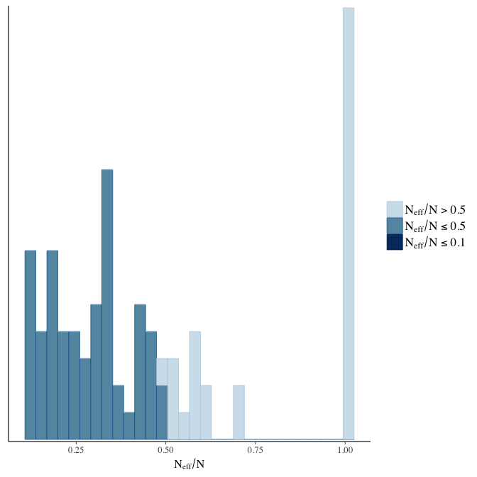
Trace plots
Trace plots are only shown in the case of nonconvergence.
if(any( summary(model)$fixed[,"Rhat"] > 1.1)) { # only do traceplots if not converged
plot(model, N = 3, ask = FALSE)
}File/cluster script name
This model was stored in the file: coefs/rpqa/r6_no_birth_order_control.rds.
Click the following link to see the script used to generate this model:
opts_chunk$set(echo = FALSE)
clusterscript = str_replace(basename(model_filename), "\\.rds",".html")
cat("[Cluster script](" , clusterscript, ")", sep = "")r7: Less control for parental loss
We adjusted for parental loss very stringently, including covariates for parental loss up to age 45. Here we show what happens, when we only control for parental loss in the first, and the first five years of life.
Model summary
Full summary
model_summary = summary(model, use_cache = FALSE, priors = TRUE)
print(model_summary)## Family: hurdle_poisson(log)
## Formula: children ~ paternalage + birth_cohort + male + maternalage.factor + paternalage.mean + paternal_loss + maternal_loss + older_siblings + nr.siblings + last_born + (1 | idParents)
## hu ~ paternalage + birth_cohort + male + maternalage.factor + paternalage.mean + paternal_loss + maternal_loss + older_siblings + nr.siblings + last_born + (1 | idParents)
## Data: model_data (Number of observations: 68724)
## Samples: 6 chains, each with iter = 1000; warmup = 500; thin = 1;
## total post-warmup samples = 3000
## WAIC: Not computed
##
## Priors:
## b ~ normal(0,5)
## sd ~ student_t(3, 0, 5)
## b_hu ~ normal(0,5)
## sd_hu ~ student_t(3, 0, 10)
##
## Group-Level Effects:
## ~idParents (Number of levels: 12205)
## Estimate Est.Error l-95% CI u-95% CI Eff.Sample Rhat
## sd(Intercept) 0.27 0.00 0.27 0.28 1114 1.01
## sd(hu_Intercept) 0.64 0.01 0.61 0.67 1409 1.00
##
## Population-Level Effects:
## Estimate Est.Error l-95% CI u-95% CI Eff.Sample
## Intercept 2.08 0.03 2.02 2.14 1408
## paternalage 0.01 0.01 -0.01 0.03 1459
## birth_cohort1675M1680 0.02 0.02 -0.01 0.05 1341
## birth_cohort1680M1685 0.05 0.02 0.02 0.08 1184
## birth_cohort1685M1690 0.05 0.02 0.02 0.08 932
## birth_cohort1690M1695 0.05 0.02 0.02 0.08 874
## birth_cohort1695M1700 0.04 0.02 0.01 0.07 775
## birth_cohort1700M1705 0.02 0.02 -0.01 0.05 794
## birth_cohort1705M1710 0.00 0.02 -0.03 0.03 707
## birth_cohort1710M1715 -0.01 0.02 -0.04 0.02 725
## birth_cohort1715M1720 -0.04 0.02 -0.07 -0.01 725
## birth_cohort1720M1725 -0.04 0.02 -0.07 -0.01 703
## birth_cohort1725M1730 -0.07 0.02 -0.10 -0.04 688
## birth_cohort1730M1735 -0.05 0.02 -0.08 -0.02 676
## birth_cohort1735M1740 -0.06 0.02 -0.09 -0.03 711
## male1 0.11 0.00 0.10 0.12 3000
## maternalage.factor1420 -0.01 0.01 -0.03 0.01 3000
## maternalage.factor3550 0.00 0.01 -0.02 0.02 3000
## paternalage.mean -0.03 0.01 -0.05 -0.01 1408
## paternal_loss01 -0.02 0.02 -0.06 0.02 3000
## paternal_losslater 0.00 0.01 -0.02 0.03 2932
## paternal_lossunclear -0.04 0.02 -0.07 -0.01 2068
## maternal_loss01 -0.02 0.02 -0.07 0.02 3000
## maternal_losslater 0.03 0.01 0.00 0.05 3000
## maternal_lossunclear 0.01 0.02 -0.02 0.04 2232
## older_siblings1 -0.02 0.01 -0.04 -0.01 3000
## older_siblings2 -0.03 0.01 -0.04 -0.01 1727
## older_siblings3 -0.03 0.01 -0.05 -0.02 1502
## older_siblings4 -0.02 0.01 -0.04 0.00 1503
## older_siblings5P -0.04 0.01 -0.06 -0.01 1289
## nr.siblings 0.01 0.00 0.00 0.01 1549
## last_born1 0.00 0.01 -0.01 0.02 3000
## hu_Intercept -0.24 0.10 -0.44 -0.04 1150
## hu_paternalage 0.24 0.04 0.16 0.31 1265
## hu_birth_cohort1675M1680 0.08 0.07 -0.06 0.21 934
## hu_birth_cohort1680M1685 0.23 0.07 0.10 0.36 904
## hu_birth_cohort1685M1690 0.33 0.07 0.20 0.47 857
## hu_birth_cohort1690M1695 0.10 0.07 -0.03 0.23 783
## hu_birth_cohort1695M1700 0.11 0.06 -0.01 0.24 697
## hu_birth_cohort1700M1705 0.26 0.06 0.14 0.38 703
## hu_birth_cohort1705M1710 0.15 0.06 0.03 0.28 668
## hu_birth_cohort1710M1715 0.43 0.06 0.31 0.56 620
## hu_birth_cohort1715M1720 0.29 0.06 0.17 0.41 598
## hu_birth_cohort1720M1725 0.31 0.06 0.20 0.43 548
## hu_birth_cohort1725M1730 0.67 0.06 0.55 0.79 566
## hu_birth_cohort1730M1735 0.73 0.06 0.62 0.85 593
## hu_birth_cohort1735M1740 0.58 0.06 0.46 0.69 581
## hu_male1 0.43 0.02 0.40 0.47 3000
## hu_maternalage.factor1420 0.07 0.04 0.00 0.14 3000
## hu_maternalage.factor3550 0.01 0.03 -0.05 0.07 3000
## hu_paternalage.mean -0.23 0.04 -0.31 -0.15 1283
## hu_paternal_loss01 0.24 0.07 0.10 0.39 3000
## hu_paternal_losslater -0.10 0.05 -0.19 -0.01 2520
## hu_paternal_lossunclear 0.11 0.06 0.00 0.22 2432
## hu_maternal_loss01 0.66 0.08 0.50 0.81 3000
## hu_maternal_losslater -0.24 0.04 -0.33 -0.15 2611
## hu_maternal_lossunclear -0.11 0.05 -0.21 -0.01 2814
## hu_older_siblings1 -0.06 0.03 -0.13 0.00 3000
## hu_older_siblings2 -0.11 0.03 -0.18 -0.05 1615
## hu_older_siblings3 -0.18 0.04 -0.25 -0.09 1459
## hu_older_siblings4 -0.20 0.04 -0.29 -0.11 1328
## hu_older_siblings5P -0.29 0.05 -0.39 -0.19 1138
## hu_nr.siblings 0.01 0.00 0.01 0.02 1788
## hu_last_born1 -0.01 0.03 -0.07 0.04 3000
## Rhat
## Intercept 1.00
## paternalage 1.00
## birth_cohort1675M1680 1.00
## birth_cohort1680M1685 1.00
## birth_cohort1685M1690 1.01
## birth_cohort1690M1695 1.01
## birth_cohort1695M1700 1.01
## birth_cohort1700M1705 1.01
## birth_cohort1705M1710 1.01
## birth_cohort1710M1715 1.01
## birth_cohort1715M1720 1.01
## birth_cohort1720M1725 1.01
## birth_cohort1725M1730 1.01
## birth_cohort1730M1735 1.01
## birth_cohort1735M1740 1.01
## male1 1.00
## maternalage.factor1420 1.00
## maternalage.factor3550 1.00
## paternalage.mean 1.00
## paternal_loss01 1.00
## paternal_losslater 1.00
## paternal_lossunclear 1.00
## maternal_loss01 1.00
## maternal_losslater 1.00
## maternal_lossunclear 1.00
## older_siblings1 1.00
## older_siblings2 1.00
## older_siblings3 1.00
## older_siblings4 1.00
## older_siblings5P 1.00
## nr.siblings 1.00
## last_born1 1.00
## hu_Intercept 1.00
## hu_paternalage 1.00
## hu_birth_cohort1675M1680 1.01
## hu_birth_cohort1680M1685 1.01
## hu_birth_cohort1685M1690 1.00
## hu_birth_cohort1690M1695 1.01
## hu_birth_cohort1695M1700 1.01
## hu_birth_cohort1700M1705 1.01
## hu_birth_cohort1705M1710 1.01
## hu_birth_cohort1710M1715 1.01
## hu_birth_cohort1715M1720 1.01
## hu_birth_cohort1720M1725 1.01
## hu_birth_cohort1725M1730 1.01
## hu_birth_cohort1730M1735 1.01
## hu_birth_cohort1735M1740 1.01
## hu_male1 1.00
## hu_maternalage.factor1420 1.00
## hu_maternalage.factor3550 1.00
## hu_paternalage.mean 1.00
## hu_paternal_loss01 1.00
## hu_paternal_losslater 1.00
## hu_paternal_lossunclear 1.00
## hu_maternal_loss01 1.00
## hu_maternal_losslater 1.00
## hu_maternal_lossunclear 1.00
## hu_older_siblings1 1.00
## hu_older_siblings2 1.00
## hu_older_siblings3 1.00
## hu_older_siblings4 1.00
## hu_older_siblings5P 1.00
## hu_nr.siblings 1.00
## hu_last_born1 1.00
##
## Samples were drawn using sampling(NUTS). For each parameter, Eff.Sample
## is a crude measure of effective sample size, and Rhat is the potential
## scale reduction factor on split chains (at convergence, Rhat = 1).Table of fixed effects
Estimates are exp(b). When they are referring to the hurdle (hu) component, or a dichotomous outcome, they are odds ratios, when they are referring to a Poisson component, they are hazard ratios. In both cases, they are presented with 95% credibility intervals. To see the effects on the response scale (probability or number of children), consult the marginal effect plots.
fixed_eff = data.frame(model_summary$fixed, check.names = F)
fixed_eff$Est.Error = fixed_eff$Eff.Sample = fixed_eff$Rhat = NULL
fixed_eff$`Odds/hazard ratio` = exp(fixed_eff$Estimate)
fixed_eff$`OR/HR low 95%` = exp(fixed_eff$`l-95% CI`)
fixed_eff$`OR/HR high 95%` = exp(fixed_eff$`u-95% CI`)
fixed_eff = fixed_eff %>% select(`Odds/hazard ratio`, `OR/HR low 95%`, `OR/HR high 95%`)
pander::pander(fixed_eff)| Odds/hazard ratio | OR/HR low 95% | OR/HR high 95% | |
|---|---|---|---|
| Intercept | 7.996 | 7.534 | 8.478 |
| paternalage | 1.008 | 0.9887 | 1.028 |
| birth_cohort1675M1680 | 1.021 | 0.9895 | 1.051 |
| birth_cohort1680M1685 | 1.05 | 1.015 | 1.082 |
| birth_cohort1685M1690 | 1.052 | 1.02 | 1.086 |
| birth_cohort1690M1695 | 1.05 | 1.017 | 1.085 |
| birth_cohort1695M1700 | 1.038 | 1.007 | 1.072 |
| birth_cohort1700M1705 | 1.024 | 0.9919 | 1.055 |
| birth_cohort1705M1710 | 1.001 | 0.9706 | 1.032 |
| birth_cohort1710M1715 | 0.9893 | 0.9599 | 1.021 |
| birth_cohort1715M1720 | 0.9612 | 0.9316 | 0.9908 |
| birth_cohort1720M1725 | 0.9593 | 0.9297 | 0.9886 |
| birth_cohort1725M1730 | 0.9364 | 0.9076 | 0.9653 |
| birth_cohort1730M1735 | 0.9529 | 0.9249 | 0.9822 |
| birth_cohort1735M1740 | 0.9422 | 0.9142 | 0.9711 |
| male1 | 1.117 | 1.108 | 1.127 |
| maternalage.factor1420 | 0.9916 | 0.9734 | 1.011 |
| maternalage.factor3550 | 1 | 0.9847 | 1.016 |
| paternalage.mean | 0.9713 | 0.9507 | 0.9927 |
| paternal_loss01 | 0.98 | 0.942 | 1.022 |
| paternal_losslater | 1.002 | 0.9769 | 1.026 |
| paternal_lossunclear | 0.9624 | 0.9326 | 0.9933 |
| maternal_loss01 | 0.9778 | 0.9326 | 1.024 |
| maternal_losslater | 1.028 | 1.002 | 1.055 |
| maternal_lossunclear | 1.011 | 0.9789 | 1.044 |
| older_siblings1 | 0.978 | 0.9626 | 0.9939 |
| older_siblings2 | 0.9741 | 0.9575 | 0.9907 |
| older_siblings3 | 0.9658 | 0.9482 | 0.985 |
| older_siblings4 | 0.9767 | 0.9565 | 0.9979 |
| older_siblings5P | 0.9613 | 0.9372 | 0.9871 |
| nr.siblings | 1.007 | 1.005 | 1.01 |
| last_born1 | 1.001 | 0.9865 | 1.017 |
| hu_Intercept | 0.7873 | 0.6409 | 0.9577 |
| hu_paternalage | 1.268 | 1.178 | 1.37 |
| hu_birth_cohort1675M1680 | 1.08 | 0.9434 | 1.231 |
| hu_birth_cohort1680M1685 | 1.265 | 1.109 | 1.435 |
| hu_birth_cohort1685M1690 | 1.398 | 1.227 | 1.601 |
| hu_birth_cohort1690M1695 | 1.1 | 0.9658 | 1.254 |
| hu_birth_cohort1695M1700 | 1.114 | 0.9884 | 1.268 |
| hu_birth_cohort1700M1705 | 1.292 | 1.145 | 1.461 |
| hu_birth_cohort1705M1710 | 1.165 | 1.034 | 1.318 |
| hu_birth_cohort1710M1715 | 1.538 | 1.366 | 1.743 |
| hu_birth_cohort1715M1720 | 1.335 | 1.189 | 1.502 |
| hu_birth_cohort1720M1725 | 1.369 | 1.221 | 1.542 |
| hu_birth_cohort1725M1730 | 1.956 | 1.738 | 2.196 |
| hu_birth_cohort1730M1735 | 2.082 | 1.863 | 2.335 |
| hu_birth_cohort1735M1740 | 1.778 | 1.588 | 1.987 |
| hu_male1 | 1.544 | 1.493 | 1.595 |
| hu_maternalage.factor1420 | 1.067 | 0.9952 | 1.146 |
| hu_maternalage.factor3550 | 1.013 | 0.9534 | 1.071 |
| hu_paternalage.mean | 0.7937 | 0.7317 | 0.8579 |
| hu_paternal_loss01 | 1.276 | 1.104 | 1.481 |
| hu_paternal_losslater | 0.9026 | 0.8248 | 0.993 |
| hu_paternal_lossunclear | 1.119 | 1.004 | 1.251 |
| hu_maternal_loss01 | 1.927 | 1.654 | 2.247 |
| hu_maternal_losslater | 0.7867 | 0.7217 | 0.858 |
| hu_maternal_lossunclear | 0.8974 | 0.81 | 0.9936 |
| hu_older_siblings1 | 0.938 | 0.8797 | 0.9954 |
| hu_older_siblings2 | 0.8929 | 0.8345 | 0.9556 |
| hu_older_siblings3 | 0.8394 | 0.7757 | 0.9103 |
| hu_older_siblings4 | 0.819 | 0.7508 | 0.8916 |
| hu_older_siblings5P | 0.7481 | 0.6783 | 0.8304 |
| hu_nr.siblings | 1.015 | 1.007 | 1.023 |
| hu_last_born1 | 0.9864 | 0.9323 | 1.044 |
Paternal age effect
pander::pander(paternal_age_10y_effect(model))| effect | median_estimate | ci_95 | ci_80 |
|---|---|---|---|
| estimate father 25y | 5.39 | [5.14;5.67] | [5.23;5.57] |
| estimate father 35y | 4.99 | [4.72;5.29] | [4.81;5.18] |
| percentage change | -7.42 | [-10.47;-4.22] | [-9.47;-5.31] |
| OR/IRR | 1.01 | [0.99;1.03] | [1;1.02] |
| OR hurdle | 1.27 | [1.18;1.37] | [1.21;1.33] |
Marginal effect plots
In these marginal effect plots, we set all predictors except the one shown on the X axis to their mean and in the case of factors to their reference level. We then plot the estimated association between the X axis predictor and the outcome on the response scale (e.g. probability of survival/marriage or number of children).
plot.brmsMarginalEffects_shades(
x = marginal_effects(model, re_formula = NA, probs = c(0.025,0.975)),
y = marginal_effects(model, re_formula = NA, probs = c(0.1,0.9)),
ask = FALSE)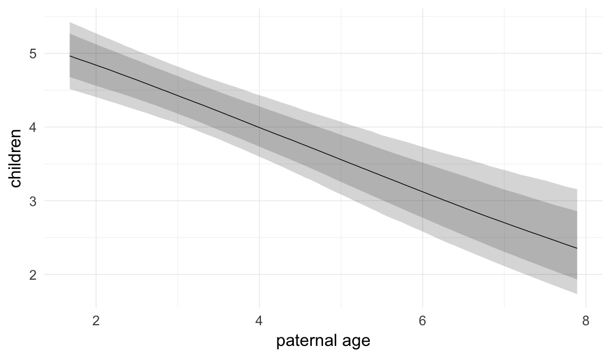
Coefficient plot
Here, we plotted the 95% posterior densities for the unexponentiated model coefficients (b_). The darkly shaded area represents the 50% credibility interval, the dark line represent the posterior mean estimate.
mcmc_areas(as.matrix(model$fit), regex_pars = "b_[^I]", point_est = "mean", prob = 0.50, prob_outer = 0.95) + ggtitle("Posterior densities with means and 50% intervals") + analysis_theme + theme(axis.text = element_text(size = 12), panel.grid = element_blank()) + xlab("Coefficient size")Diagnostics
These plots were made to diagnose misfit and nonconvergence.
Posterior predictive checks
In posterior predictive checks, we test whether we can approximately reproduce the real data distribution from our model.
brms::pp_check(model, re_formula = NA, type = "dens_overlay")brms::pp_check(model, re_formula = NA, type = "hist")Rhat
Did the 6 chains converge?
stanplot(model, pars = "^b_[^I]", type = 'rhat')
Effective sample size over average sample size
stanplot(model, pars = "^b", type = 'neff_hist')Trace plots
Trace plots are only shown in the case of nonconvergence.
if(any( summary(model)$fixed[,"Rhat"] > 1.1)) { # only do traceplots if not converged
plot(model, N = 3, ask = FALSE)
}File/cluster script name
This model was stored in the file: coefs/rpqa/r7_less_parental_loss_control.rds.
Click the following link to see the script used to generate this model:
opts_chunk$set(echo = FALSE)
clusterscript = str_replace(basename(model_filename), "\\.rds",".html")
cat("[Cluster script](" , clusterscript, ")", sep = "")r8: Adjust for being first-/last-born adult son
Inheritance is linked to birth order and being male in several of the historical populations. Here, we adjust for the anchor being the first or last born adult son in a family. This implies that we control for our outcome to a certain extent, as “adult sons” cannot have died before adulthood, but a paternal age effect on mortality could still be detected for siblings other than the first- and last-born adults.
Model summary
Full summary
model_summary = summary(model, use_cache = FALSE, priors = TRUE)
print(model_summary)## Family: hurdle_poisson(log)
## Formula: children ~ paternalage + birth.cohort + first_born_adult_male + last_born_adult_male + male + maternalage.factor + paternalage.mean + paternal_loss + maternal_loss + older_siblings + nr.siblings + last_born + (1 | idParents)
## hu ~ paternalage + birth.cohort + first_born_adult_male + last_born_adult_male + male + maternalage.factor + paternalage.mean + paternal_loss + maternal_loss + older_siblings + nr.siblings + last_born + (1 | idParents)
## Data: model_data (Number of observations: 68724)
## Samples: 6 chains, each with iter = 800; warmup = 300; thin = 1;
## total post-warmup samples = 3000
## WAIC: Not computed
##
## Priors:
## b ~ normal(0,5)
## sd ~ student_t(3, 0, 5)
## b_hu ~ normal(0,5)
## sd_hu ~ student_t(3, 0, 10)
##
## Group-Level Effects:
## ~idParents (Number of levels: 12205)
## Estimate Est.Error l-95% CI u-95% CI Eff.Sample Rhat
## sd(Intercept) 0.27 0.00 0.27 0.28 1095 1
## sd(hu_Intercept) 0.71 0.01 0.68 0.74 1287 1
##
## Population-Level Effects:
## Estimate Est.Error l-95% CI u-95% CI Eff.Sample
## Intercept 2.12 0.03 2.07 2.18 1186
## paternalage 0.01 0.01 -0.01 0.03 1720
## birth.cohort1675M1680 0.02 0.02 -0.01 0.05 1662
## birth.cohort1680M1685 0.05 0.02 0.01 0.08 1404
## birth.cohort1685M1690 0.05 0.02 0.02 0.08 1268
## birth.cohort1690M1695 0.04 0.02 0.01 0.08 1038
## birth.cohort1695M1700 0.03 0.02 0.00 0.06 885
## birth.cohort1700M1705 0.02 0.02 -0.01 0.05 916
## birth.cohort1705M1710 0.00 0.02 -0.04 0.03 862
## birth.cohort1710M1715 -0.01 0.02 -0.05 0.02 901
## birth.cohort1715M1720 -0.04 0.02 -0.07 -0.01 926
## birth.cohort1720M1725 -0.05 0.02 -0.08 -0.01 913
## birth.cohort1725M1730 -0.07 0.02 -0.10 -0.04 890
## birth.cohort1730M1735 -0.05 0.02 -0.08 -0.02 816
## birth.cohort1735M1740 -0.06 0.02 -0.09 -0.03 855
## first_born_adult_male -0.02 0.01 -0.04 -0.01 3000
## last_born_adult_male 0.00 0.01 -0.02 0.01 3000
## male1 0.12 0.01 0.11 0.14 3000
## maternalage.factor1420 -0.01 0.01 -0.03 0.01 3000
## maternalage.factor3550 0.00 0.01 -0.01 0.02 3000
## paternalage.mean -0.03 0.01 -0.05 0.00 1680
## paternal_loss01 -0.04 0.02 -0.08 0.01 1606
## paternal_loss15 -0.02 0.02 -0.05 0.02 1496
## paternal_loss510 -0.01 0.01 -0.04 0.02 1435
## paternal_loss1015 -0.01 0.01 -0.04 0.01 1439
## paternal_loss1520 -0.02 0.01 -0.05 0.00 1397
## paternal_loss2025 -0.02 0.01 -0.05 0.00 1436
## paternal_loss2530 -0.01 0.01 -0.03 0.01 1722
## paternal_loss3035 -0.02 0.01 -0.04 0.00 1655
## paternal_loss3540 -0.02 0.01 -0.04 0.00 1807
## paternal_loss4045 0.00 0.01 -0.02 0.02 3000
## paternal_lossunclear -0.05 0.01 -0.08 -0.03 1321
## maternal_loss01 -0.05 0.02 -0.10 -0.01 3000
## maternal_loss15 -0.03 0.02 -0.06 0.00 2004
## maternal_loss510 0.01 0.01 -0.01 0.04 2004
## maternal_loss1015 -0.01 0.01 -0.03 0.02 1668
## maternal_loss1520 0.01 0.01 -0.02 0.03 1919
## maternal_loss2025 -0.02 0.01 -0.04 0.00 2265
## maternal_loss2530 -0.01 0.01 -0.03 0.01 2103
## maternal_loss3035 -0.01 0.01 -0.03 0.01 2102
## maternal_loss3540 0.00 0.01 -0.02 0.02 2537
## maternal_loss4045 0.00 0.01 -0.01 0.02 3000
## maternal_lossunclear -0.02 0.01 -0.05 0.00 1849
## older_siblings1 -0.03 0.01 -0.04 -0.01 3000
## older_siblings2 -0.03 0.01 -0.05 -0.01 3000
## older_siblings3 -0.04 0.01 -0.06 -0.02 2154
## older_siblings4 -0.03 0.01 -0.05 -0.01 1854
## older_siblings5P -0.05 0.01 -0.07 -0.02 1772
## nr.siblings 0.01 0.00 0.00 0.01 1804
## last_born1 0.00 0.01 -0.01 0.02 3000
## hu_Intercept -0.27 0.10 -0.46 -0.08 1080
## hu_paternalage 0.25 0.04 0.17 0.34 1255
## hu_birth.cohort1675M1680 -0.08 0.07 -0.22 0.07 1081
## hu_birth.cohort1680M1685 0.12 0.07 -0.03 0.25 1019
## hu_birth.cohort1685M1690 0.17 0.07 0.03 0.32 991
## hu_birth.cohort1690M1695 -0.04 0.07 -0.17 0.10 868
## hu_birth.cohort1695M1700 -0.05 0.07 -0.18 0.09 865
## hu_birth.cohort1700M1705 0.11 0.07 -0.02 0.24 822
## hu_birth.cohort1705M1710 0.02 0.06 -0.11 0.15 766
## hu_birth.cohort1710M1715 0.28 0.06 0.15 0.41 757
## hu_birth.cohort1715M1720 0.17 0.06 0.05 0.30 737
## hu_birth.cohort1720M1725 0.19 0.06 0.06 0.31 706
## hu_birth.cohort1725M1730 0.54 0.06 0.41 0.66 728
## hu_birth.cohort1730M1735 0.62 0.06 0.50 0.74 720
## hu_birth.cohort1735M1740 0.48 0.06 0.36 0.60 697
## hu_first_born_adult_male -2.02 0.03 -2.09 -1.96 3000
## hu_last_born_adult_male -1.85 0.03 -1.92 -1.79 3000
## hu_male1 1.39 0.02 1.34 1.43 3000
## hu_maternalage.factor1420 0.09 0.04 0.02 0.18 3000
## hu_maternalage.factor3550 0.11 0.03 0.05 0.18 3000
## hu_paternalage.mean -0.27 0.05 -0.36 -0.18 1315
## hu_paternal_loss01 0.69 0.08 0.53 0.85 3000
## hu_paternal_loss15 0.33 0.06 0.21 0.44 1729
## hu_paternal_loss510 0.29 0.05 0.19 0.40 1599
## hu_paternal_loss1015 0.16 0.05 0.07 0.25 1524
## hu_paternal_loss1520 0.25 0.05 0.16 0.34 1577
## hu_paternal_loss2025 0.16 0.04 0.08 0.25 1452
## hu_paternal_loss2530 0.15 0.04 0.07 0.24 1600
## hu_paternal_loss3035 0.12 0.04 0.04 0.20 1549
## hu_paternal_loss3540 0.09 0.04 0.01 0.16 1727
## hu_paternal_loss4045 0.08 0.04 -0.01 0.17 3000
## hu_paternal_lossunclear 0.36 0.04 0.27 0.44 1561
## hu_maternal_loss01 1.07 0.08 0.92 1.23 3000
## hu_maternal_loss15 0.46 0.05 0.35 0.56 3000
## hu_maternal_loss510 0.25 0.05 0.16 0.35 3000
## hu_maternal_loss1015 0.22 0.05 0.13 0.32 3000
## hu_maternal_loss1520 0.18 0.05 0.09 0.27 3000
## hu_maternal_loss2025 0.17 0.04 0.08 0.25 3000
## hu_maternal_loss2530 0.04 0.04 -0.04 0.12 3000
## hu_maternal_loss3035 0.08 0.04 0.01 0.15 3000
## hu_maternal_loss3540 0.06 0.03 -0.01 0.13 3000
## hu_maternal_loss4045 -0.05 0.04 -0.12 0.03 3000
## hu_maternal_lossunclear 0.21 0.04 0.12 0.29 2568
## hu_older_siblings1 -0.19 0.03 -0.25 -0.12 3000
## hu_older_siblings2 -0.36 0.04 -0.44 -0.29 1965
## hu_older_siblings3 -0.47 0.04 -0.56 -0.39 1695
## hu_older_siblings4 -0.57 0.05 -0.66 -0.47 1318
## hu_older_siblings5P -0.70 0.06 -0.81 -0.60 1221
## hu_nr.siblings 0.00 0.00 0.00 0.01 2224
## hu_last_born1 0.03 0.03 -0.04 0.09 3000
## Rhat
## Intercept 1.00
## paternalage 1.00
## birth.cohort1675M1680 1.00
## birth.cohort1680M1685 1.00
## birth.cohort1685M1690 1.00
## birth.cohort1690M1695 1.01
## birth.cohort1695M1700 1.01
## birth.cohort1700M1705 1.01
## birth.cohort1705M1710 1.01
## birth.cohort1710M1715 1.01
## birth.cohort1715M1720 1.01
## birth.cohort1720M1725 1.01
## birth.cohort1725M1730 1.01
## birth.cohort1730M1735 1.01
## birth.cohort1735M1740 1.01
## first_born_adult_male 1.00
## last_born_adult_male 1.00
## male1 1.00
## maternalage.factor1420 1.00
## maternalage.factor3550 1.00
## paternalage.mean 1.00
## paternal_loss01 1.00
## paternal_loss15 1.00
## paternal_loss510 1.00
## paternal_loss1015 1.00
## paternal_loss1520 1.00
## paternal_loss2025 1.00
## paternal_loss2530 1.00
## paternal_loss3035 1.00
## paternal_loss3540 1.00
## paternal_loss4045 1.00
## paternal_lossunclear 1.01
## maternal_loss01 1.00
## maternal_loss15 1.00
## maternal_loss510 1.00
## maternal_loss1015 1.00
## maternal_loss1520 1.00
## maternal_loss2025 1.00
## maternal_loss2530 1.00
## maternal_loss3035 1.00
## maternal_loss3540 1.00
## maternal_loss4045 1.00
## maternal_lossunclear 1.00
## older_siblings1 1.00
## older_siblings2 1.00
## older_siblings3 1.00
## older_siblings4 1.00
## older_siblings5P 1.00
## nr.siblings 1.00
## last_born1 1.00
## hu_Intercept 1.00
## hu_paternalage 1.00
## hu_birth.cohort1675M1680 1.00
## hu_birth.cohort1680M1685 1.00
## hu_birth.cohort1685M1690 1.00
## hu_birth.cohort1690M1695 1.00
## hu_birth.cohort1695M1700 1.00
## hu_birth.cohort1700M1705 1.00
## hu_birth.cohort1705M1710 1.01
## hu_birth.cohort1710M1715 1.00
## hu_birth.cohort1715M1720 1.01
## hu_birth.cohort1720M1725 1.00
## hu_birth.cohort1725M1730 1.00
## hu_birth.cohort1730M1735 1.00
## hu_birth.cohort1735M1740 1.00
## hu_first_born_adult_male 1.00
## hu_last_born_adult_male 1.00
## hu_male1 1.00
## hu_maternalage.factor1420 1.00
## hu_maternalage.factor3550 1.00
## hu_paternalage.mean 1.00
## hu_paternal_loss01 1.00
## hu_paternal_loss15 1.00
## hu_paternal_loss510 1.00
## hu_paternal_loss1015 1.00
## hu_paternal_loss1520 1.00
## hu_paternal_loss2025 1.00
## hu_paternal_loss2530 1.00
## hu_paternal_loss3035 1.00
## hu_paternal_loss3540 1.00
## hu_paternal_loss4045 1.00
## hu_paternal_lossunclear 1.00
## hu_maternal_loss01 1.00
## hu_maternal_loss15 1.00
## hu_maternal_loss510 1.00
## hu_maternal_loss1015 1.00
## hu_maternal_loss1520 1.00
## hu_maternal_loss2025 1.00
## hu_maternal_loss2530 1.00
## hu_maternal_loss3035 1.00
## hu_maternal_loss3540 1.00
## hu_maternal_loss4045 1.00
## hu_maternal_lossunclear 1.00
## hu_older_siblings1 1.00
## hu_older_siblings2 1.00
## hu_older_siblings3 1.00
## hu_older_siblings4 1.00
## hu_older_siblings5P 1.00
## hu_nr.siblings 1.00
## hu_last_born1 1.00
##
## Samples were drawn using sampling(NUTS). For each parameter, Eff.Sample
## is a crude measure of effective sample size, and Rhat is the potential
## scale reduction factor on split chains (at convergence, Rhat = 1).Table of fixed effects
Estimates are exp(b). When they are referring to the hurdle (hu) component, or a dichotomous outcome, they are odds ratios, when they are referring to a Poisson component, they are hazard ratios. In both cases, they are presented with 95% credibility intervals. To see the effects on the response scale (probability or number of children), consult the marginal effect plots.
fixed_eff = data.frame(model_summary$fixed, check.names = F)
fixed_eff$Est.Error = fixed_eff$Eff.Sample = fixed_eff$Rhat = NULL
fixed_eff$`Odds/hazard ratio` = exp(fixed_eff$Estimate)
fixed_eff$`OR/HR low 95%` = exp(fixed_eff$`l-95% CI`)
fixed_eff$`OR/HR high 95%` = exp(fixed_eff$`u-95% CI`)
fixed_eff = fixed_eff %>% select(`Odds/hazard ratio`, `OR/HR low 95%`, `OR/HR high 95%`)
pander::pander(fixed_eff)| Odds/hazard ratio | OR/HR low 95% | OR/HR high 95% | |
|---|---|---|---|
| Intercept | 8.373 | 7.928 | 8.845 |
| paternalage | 1.01 | 0.988 | 1.031 |
| birth.cohort1675M1680 | 1.019 | 0.9885 | 1.051 |
| birth.cohort1680M1685 | 1.047 | 1.015 | 1.08 |
| birth.cohort1685M1690 | 1.049 | 1.015 | 1.085 |
| birth.cohort1690M1695 | 1.046 | 1.012 | 1.081 |
| birth.cohort1695M1700 | 1.033 | 1.002 | 1.065 |
| birth.cohort1700M1705 | 1.018 | 0.9881 | 1.052 |
| birth.cohort1705M1710 | 0.9953 | 0.9652 | 1.027 |
| birth.cohort1710M1715 | 0.9854 | 0.9545 | 1.016 |
| birth.cohort1715M1720 | 0.9579 | 0.9299 | 0.9885 |
| birth.cohort1720M1725 | 0.9558 | 0.9274 | 0.9854 |
| birth.cohort1725M1730 | 0.9334 | 0.9054 | 0.9638 |
| birth.cohort1730M1735 | 0.9496 | 0.9221 | 0.9791 |
| birth.cohort1735M1740 | 0.9388 | 0.9108 | 0.9682 |
| first_born_adult_male | 0.9758 | 0.9632 | 0.9892 |
| last_born_adult_male | 0.9965 | 0.9828 | 1.01 |
| male1 | 1.132 | 1.119 | 1.146 |
| maternalage.factor1420 | 0.9917 | 0.9729 | 1.01 |
| maternalage.factor3550 | 1.002 | 0.9862 | 1.019 |
| paternalage.mean | 0.9716 | 0.949 | 0.9956 |
| paternal_loss01 | 0.9639 | 0.9239 | 1.005 |
| paternal_loss15 | 0.9839 | 0.9514 | 1.016 |
| paternal_loss510 | 0.9912 | 0.963 | 1.019 |
| paternal_loss1015 | 0.9852 | 0.9594 | 1.01 |
| paternal_loss1520 | 0.9768 | 0.9536 | 1 |
| paternal_loss2025 | 0.9781 | 0.9559 | 0.9999 |
| paternal_loss2530 | 0.988 | 0.9669 | 1.009 |
| paternal_loss3035 | 0.9775 | 0.9587 | 0.9969 |
| paternal_loss3540 | 0.9784 | 0.9599 | 0.9967 |
| paternal_loss4045 | 0.9971 | 0.9782 | 1.017 |
| paternal_lossunclear | 0.9483 | 0.9236 | 0.9728 |
| maternal_loss01 | 0.9488 | 0.9075 | 0.9928 |
| maternal_loss15 | 0.9724 | 0.9442 | 1.001 |
| maternal_loss510 | 1.012 | 0.9859 | 1.037 |
| maternal_loss1015 | 0.9919 | 0.9678 | 1.016 |
| maternal_loss1520 | 1.005 | 0.9834 | 1.029 |
| maternal_loss2025 | 0.9804 | 0.9582 | 1.003 |
| maternal_loss2530 | 0.9868 | 0.9663 | 1.007 |
| maternal_loss3035 | 0.9914 | 0.9725 | 1.01 |
| maternal_loss3540 | 1 | 0.9832 | 1.017 |
| maternal_loss4045 | 1.004 | 0.9869 | 1.02 |
| maternal_lossunclear | 0.9805 | 0.9551 | 1.004 |
| older_siblings1 | 0.9752 | 0.9602 | 0.9908 |
| older_siblings2 | 0.9692 | 0.9517 | 0.9868 |
| older_siblings3 | 0.9604 | 0.9409 | 0.9806 |
| older_siblings4 | 0.9704 | 0.9481 | 0.9932 |
| older_siblings5P | 0.9544 | 0.9287 | 0.9812 |
| nr.siblings | 1.007 | 1.005 | 1.01 |
| last_born1 | 1.002 | 0.9874 | 1.016 |
| hu_Intercept | 0.767 | 0.634 | 0.9258 |
| hu_paternalage | 1.29 | 1.183 | 1.399 |
| hu_birth.cohort1675M1680 | 0.9251 | 0.8042 | 1.068 |
| hu_birth.cohort1680M1685 | 1.122 | 0.9725 | 1.289 |
| hu_birth.cohort1685M1690 | 1.19 | 1.029 | 1.373 |
| hu_birth.cohort1690M1695 | 0.963 | 0.8408 | 1.105 |
| hu_birth.cohort1695M1700 | 0.9538 | 0.8315 | 1.092 |
| hu_birth.cohort1700M1705 | 1.112 | 0.9787 | 1.266 |
| hu_birth.cohort1705M1710 | 1.021 | 0.9002 | 1.159 |
| hu_birth.cohort1710M1715 | 1.322 | 1.166 | 1.5 |
| hu_birth.cohort1715M1720 | 1.191 | 1.053 | 1.348 |
| hu_birth.cohort1720M1725 | 1.206 | 1.066 | 1.37 |
| hu_birth.cohort1725M1730 | 1.713 | 1.512 | 1.939 |
| hu_birth.cohort1730M1735 | 1.859 | 1.648 | 2.091 |
| hu_birth.cohort1735M1740 | 1.618 | 1.435 | 1.823 |
| hu_first_born_adult_male | 0.1321 | 0.1241 | 0.1409 |
| hu_last_born_adult_male | 0.1566 | 0.1468 | 0.1674 |
| hu_male1 | 3.995 | 3.834 | 4.161 |
| hu_maternalage.factor1420 | 1.1 | 1.016 | 1.193 |
| hu_maternalage.factor3550 | 1.121 | 1.053 | 1.192 |
| hu_paternalage.mean | 0.7625 | 0.6977 | 0.834 |
| hu_paternal_loss01 | 1.996 | 1.705 | 2.336 |
| hu_paternal_loss15 | 1.386 | 1.228 | 1.556 |
| hu_paternal_loss510 | 1.342 | 1.214 | 1.493 |
| hu_paternal_loss1015 | 1.174 | 1.07 | 1.288 |
| hu_paternal_loss1520 | 1.285 | 1.177 | 1.408 |
| hu_paternal_loss2025 | 1.177 | 1.083 | 1.284 |
| hu_paternal_loss2530 | 1.165 | 1.072 | 1.266 |
| hu_paternal_loss3035 | 1.13 | 1.045 | 1.223 |
| hu_paternal_loss3540 | 1.091 | 1.011 | 1.179 |
| hu_paternal_loss4045 | 1.084 | 0.9947 | 1.18 |
| hu_paternal_lossunclear | 1.429 | 1.315 | 1.553 |
| hu_maternal_loss01 | 2.92 | 2.503 | 3.408 |
| hu_maternal_loss15 | 1.578 | 1.421 | 1.757 |
| hu_maternal_loss510 | 1.289 | 1.171 | 1.413 |
| hu_maternal_loss1015 | 1.249 | 1.142 | 1.373 |
| hu_maternal_loss1520 | 1.2 | 1.099 | 1.309 |
| hu_maternal_loss2025 | 1.183 | 1.087 | 1.286 |
| hu_maternal_loss2530 | 1.038 | 0.9604 | 1.123 |
| hu_maternal_loss3035 | 1.083 | 1.006 | 1.163 |
| hu_maternal_loss3540 | 1.061 | 0.9934 | 1.136 |
| hu_maternal_loss4045 | 0.9553 | 0.8908 | 1.026 |
| hu_maternal_lossunclear | 1.229 | 1.132 | 1.335 |
| hu_older_siblings1 | 0.8263 | 0.7756 | 0.8842 |
| hu_older_siblings2 | 0.695 | 0.646 | 0.7471 |
| hu_older_siblings3 | 0.6228 | 0.574 | 0.6761 |
| hu_older_siblings4 | 0.5681 | 0.5188 | 0.622 |
| hu_older_siblings5P | 0.4949 | 0.4446 | 0.551 |
| hu_nr.siblings | 1.004 | 0.9951 | 1.013 |
| hu_last_born1 | 1.027 | 0.9653 | 1.092 |
Paternal age effect
pander::pander(paternal_age_10y_effect(model))| effect | median_estimate | ci_95 | ci_80 |
|---|---|---|---|
| estimate father 25y | 4.91 | [4.71;5.12] | [4.78;5.04] |
| estimate father 35y | 4.49 | [4.25;4.74] | [4.33;4.65] |
| percentage change | -8.63 | [-12.34;-4.75] | [-10.95;-6.22] |
| OR/IRR | 1.01 | [0.99;1.03] | [1;1.02] |
| OR hurdle | 1.29 | [1.18;1.4] | [1.22;1.36] |
Marginal effect plots
In these marginal effect plots, we set all predictors except the one shown on the X axis to their mean and in the case of factors to their reference level. We then plot the estimated association between the X axis predictor and the outcome on the response scale (e.g. probability of survival/marriage or number of children).
plot.brmsMarginalEffects_shades(
x = marginal_effects(model, re_formula = NA, probs = c(0.025,0.975)),
y = marginal_effects(model, re_formula = NA, probs = c(0.1,0.9)),
ask = FALSE)
 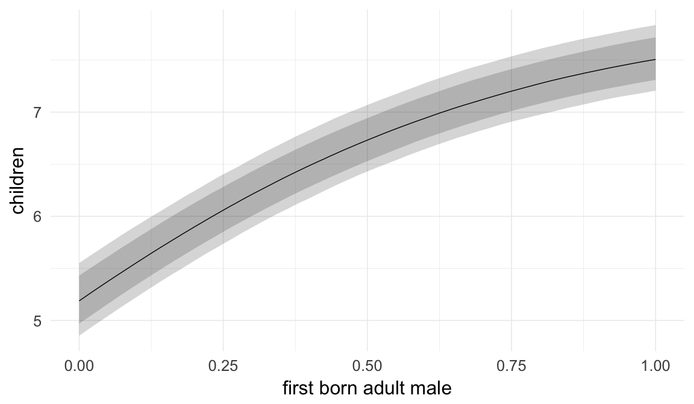
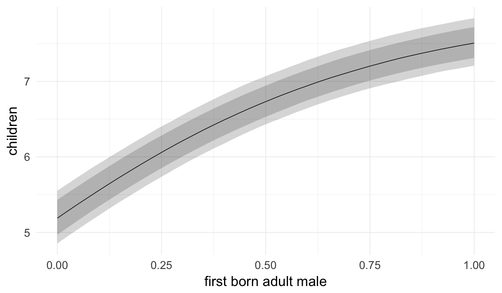


Coefficient plot
Here, we plotted the 95% posterior densities for the unexponentiated model coefficients (b_). The darkly shaded area represents the 50% credibility interval, the dark line represent the posterior mean estimate.
mcmc_areas(as.matrix(model$fit), regex_pars = "b_[^I]", point_est = "mean", prob = 0.50, prob_outer = 0.95) + ggtitle("Posterior densities with means and 50% intervals") + analysis_theme + theme(axis.text = element_text(size = 12), panel.grid = element_blank()) + xlab("Coefficient size")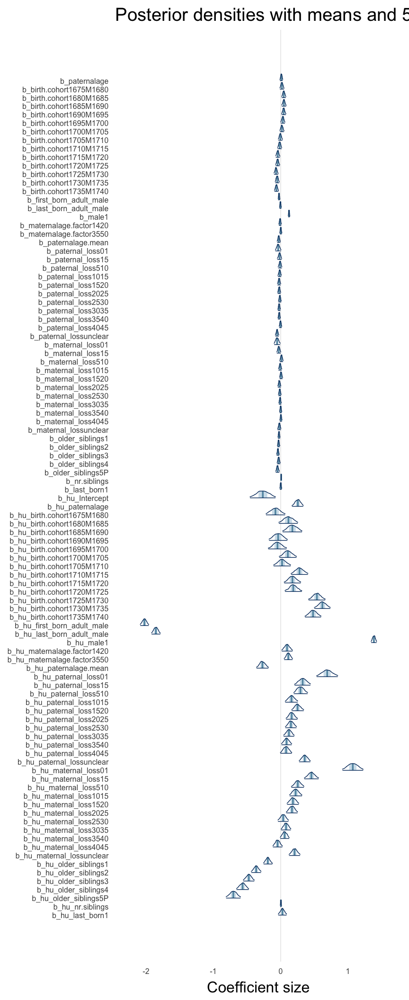
Diagnostics
These plots were made to diagnose misfit and nonconvergence.
Posterior predictive checks
In posterior predictive checks, we test whether we can approximately reproduce the real data distribution from our model.
brms::pp_check(model, re_formula = NA, type = "dens_overlay")
brms::pp_check(model, re_formula = NA, type = "hist")Rhat
Did the 6 chains converge?
stanplot(model, pars = "^b_[^I]", type = 'rhat')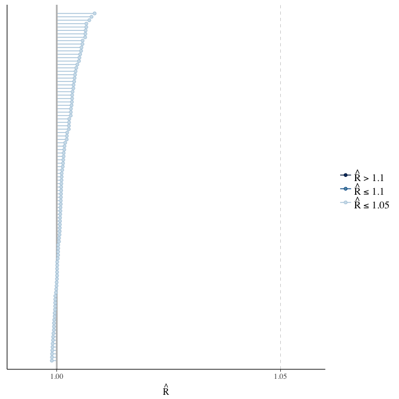
Effective sample size over average sample size
stanplot(model, pars = "^b", type = 'neff_hist')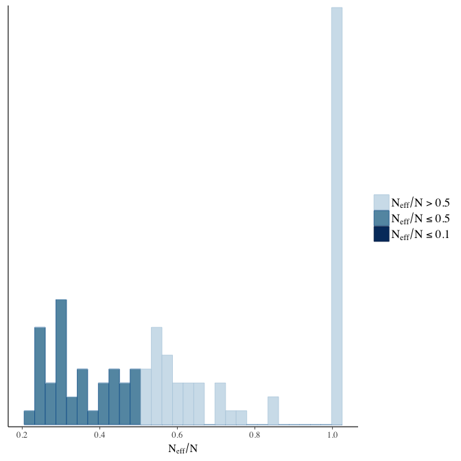
Trace plots
Trace plots are only shown in the case of nonconvergence.
if(any( summary(model)$fixed[,"Rhat"] > 1.1)) { # only do traceplots if not converged
plot(model, N = 3, ask = FALSE)
}File/cluster script name
This model was stored in the file: coefs/rpqa/r8_adjust_for_first_born_adult.rds.
Click the following link to see the script used to generate this model:
opts_chunk$set(echo = FALSE)
clusterscript = str_replace(basename(model_filename), "\\.rds",".html")
cat("[Cluster script](" , clusterscript, ")", sep = "")r9: Continuous birth year adjustment
In our main model, we control for birth cohort in 5-year-bins (lumping small bins). We chose to do so, because nonlinear and even sharply spiking effects of birth cohort are plausible (due to e.g. epidemics). This decision may be disputed, as it summarises 5-year-bins. Here, we instead allow for a thin-splate spline on the continuous birth year variable. This allows for smooth nonlinear (but not spiking) birth cohort effects.
Model summary
Full summary
model_summary = summary(model, use_cache = FALSE, priors = TRUE)## Warning: There were 11 divergent transitions after warmup. Increasing
## adapt_delta above 0.8 may help. See http://mc-stan.org/misc/
## warnings.html#divergent-transitions-after-warmupprint(model_summary)## Family: hurdle_poisson(log)
## Formula: children ~ paternalage + s(byear) + male + maternalage.factor + paternalage.mean + paternal_loss + maternal_loss + older_siblings + nr.siblings + last_born + (1 | idParents)
## hu ~ paternalage + s(byear) + male + maternalage.factor + paternalage.mean + paternal_loss + maternal_loss + older_siblings + nr.siblings + last_born + (1 | idParents)
## Data: model_data (Number of observations: 68724)
## Samples: 6 chains, each with iter = 800; warmup = 300; thin = 1;
## total post-warmup samples = 3000
## WAIC: Not computed
##
## Priors:
## b ~ normal(0,5)
## sd ~ student_t(3, 0, 5)
## sds ~ student_t(3, 0, 10)
## b_hu ~ normal(0,5)
## sd_hu ~ student_t(3, 0, 10)
## sds_hu ~ student_t(3, 0, 10)
##
## Smooth Terms:
## Estimate Est.Error l-95% CI u-95% CI Eff.Sample Rhat
## sds(sbyear_1) 0.15 0.06 0.07 0.31 1513 1.00
## sds(hu_sbyear_1) 3.07 1.00 1.71 5.63 847 1.01
##
## Group-Level Effects:
## ~idParents (Number of levels: 12205)
## Estimate Est.Error l-95% CI u-95% CI Eff.Sample Rhat
## sd(Intercept) 0.27 0.00 0.27 0.28 1080 1
## sd(hu_Intercept) 0.63 0.01 0.60 0.66 1111 1
##
## Population-Level Effects:
## Estimate Est.Error l-95% CI u-95% CI Eff.Sample
## Intercept 2.09 0.02 2.05 2.14 1987
## paternalage 0.01 0.01 -0.01 0.03 1756
## male1 0.11 0.00 0.10 0.12 3000
## maternalage.factor1420 -0.01 0.01 -0.03 0.01 3000
## maternalage.factor3550 0.00 0.01 -0.01 0.02 3000
## paternalage.mean -0.03 0.01 -0.05 -0.01 1774
## paternal_loss01 -0.04 0.02 -0.08 0.00 2038
## paternal_loss15 -0.02 0.02 -0.05 0.01 1515
## paternal_loss510 -0.01 0.01 -0.04 0.02 1445
## paternal_loss1015 -0.02 0.01 -0.04 0.01 1378
## paternal_loss1520 -0.02 0.01 -0.05 0.00 1422
## paternal_loss2025 -0.02 0.01 -0.05 0.00 1439
## paternal_loss2530 -0.01 0.01 -0.03 0.01 1432
## paternal_loss3035 -0.02 0.01 -0.04 0.00 1484
## paternal_loss3540 -0.02 0.01 -0.04 0.00 1788
## paternal_loss4045 0.00 0.01 -0.02 0.02 2398
## paternal_lossunclear -0.05 0.01 -0.08 -0.03 1360
## maternal_loss01 -0.05 0.02 -0.10 -0.01 3000
## maternal_loss15 -0.03 0.02 -0.06 0.00 1929
## maternal_loss510 0.01 0.01 -0.01 0.04 1780
## maternal_loss1015 -0.01 0.01 -0.03 0.02 1586
## maternal_loss1520 0.01 0.01 -0.02 0.03 1913
## maternal_loss2025 -0.02 0.01 -0.04 0.00 1871
## maternal_loss2530 -0.01 0.01 -0.03 0.01 2069
## maternal_loss3035 -0.01 0.01 -0.03 0.01 2180
## maternal_loss3540 0.00 0.01 -0.02 0.02 2279
## maternal_loss4045 0.00 0.01 -0.01 0.02 3000
## maternal_lossunclear -0.02 0.01 -0.05 0.00 1622
## older_siblings1 -0.02 0.01 -0.04 -0.01 3000
## older_siblings2 -0.03 0.01 -0.04 -0.01 2495
## older_siblings3 -0.03 0.01 -0.05 -0.01 2201
## older_siblings4 -0.02 0.01 -0.05 0.00 2127
## older_siblings5P -0.04 0.01 -0.07 -0.01 2036
## nr.siblings 0.01 0.00 0.00 0.01 1704
## last_born1 0.00 0.01 -0.01 0.02 3000
## sbyear_1 0.05 0.03 0.00 0.11 2522
## hu_Intercept -0.41 0.07 -0.55 -0.26 2441
## hu_paternalage 0.13 0.04 0.05 0.21 1541
## hu_male1 0.44 0.02 0.40 0.47 3000
## hu_maternalage.factor1420 0.05 0.04 -0.02 0.13 3000
## hu_maternalage.factor3550 0.03 0.03 -0.03 0.08 3000
## hu_paternalage.mean -0.14 0.04 -0.23 -0.06 1625
## hu_paternal_loss01 0.57 0.07 0.43 0.71 3000
## hu_paternal_loss15 0.32 0.06 0.21 0.43 1930
## hu_paternal_loss510 0.29 0.05 0.19 0.38 1762
## hu_paternal_loss1015 0.17 0.04 0.09 0.26 1736
## hu_paternal_loss1520 0.28 0.04 0.20 0.37 1754
## hu_paternal_loss2025 0.17 0.04 0.10 0.25 1603
## hu_paternal_loss2530 0.18 0.04 0.10 0.25 1593
## hu_paternal_loss3035 0.14 0.04 0.07 0.22 1630
## hu_paternal_loss3540 0.11 0.04 0.03 0.18 1740
## hu_paternal_loss4045 0.07 0.04 -0.01 0.14 3000
## hu_paternal_lossunclear 0.37 0.04 0.29 0.45 1485
## hu_maternal_loss01 1.06 0.07 0.92 1.21 3000
## hu_maternal_loss15 0.40 0.05 0.30 0.50 3000
## hu_maternal_loss510 0.25 0.04 0.17 0.34 3000
## hu_maternal_loss1015 0.25 0.04 0.17 0.34 3000
## hu_maternal_loss1520 0.20 0.04 0.11 0.28 3000
## hu_maternal_loss2025 0.17 0.04 0.08 0.25 3000
## hu_maternal_loss2530 0.05 0.04 -0.03 0.13 3000
## hu_maternal_loss3035 0.09 0.04 0.02 0.16 3000
## hu_maternal_loss3540 0.08 0.03 0.02 0.14 3000
## hu_maternal_loss4045 -0.01 0.03 -0.08 0.05 3000
## hu_maternal_lossunclear 0.22 0.04 0.15 0.30 2591
## hu_older_siblings1 -0.06 0.03 -0.12 0.00 3000
## hu_older_siblings2 -0.11 0.03 -0.18 -0.04 2135
## hu_older_siblings3 -0.16 0.04 -0.24 -0.09 1924
## hu_older_siblings4 -0.18 0.04 -0.27 -0.10 1852
## hu_older_siblings5P -0.26 0.05 -0.36 -0.16 1597
## hu_nr.siblings 0.02 0.00 0.01 0.03 3000
## hu_last_born1 0.00 0.03 -0.06 0.06 3000
## hu_sbyear_1 -0.66 0.19 -1.03 -0.30 3000
## Rhat
## Intercept 1.01
## paternalage 1.00
## male1 1.00
## maternalage.factor1420 1.00
## maternalage.factor3550 1.00
## paternalage.mean 1.00
## paternal_loss01 1.00
## paternal_loss15 1.00
## paternal_loss510 1.00
## paternal_loss1015 1.00
## paternal_loss1520 1.00
## paternal_loss2025 1.00
## paternal_loss2530 1.00
## paternal_loss3035 1.00
## paternal_loss3540 1.00
## paternal_loss4045 1.00
## paternal_lossunclear 1.00
## maternal_loss01 1.00
## maternal_loss15 1.00
## maternal_loss510 1.01
## maternal_loss1015 1.00
## maternal_loss1520 1.00
## maternal_loss2025 1.00
## maternal_loss2530 1.00
## maternal_loss3035 1.00
## maternal_loss3540 1.00
## maternal_loss4045 1.00
## maternal_lossunclear 1.00
## older_siblings1 1.00
## older_siblings2 1.00
## older_siblings3 1.00
## older_siblings4 1.00
## older_siblings5P 1.00
## nr.siblings 1.00
## last_born1 1.00
## sbyear_1 1.00
## hu_Intercept 1.00
## hu_paternalage 1.00
## hu_male1 1.00
## hu_maternalage.factor1420 1.00
## hu_maternalage.factor3550 1.00
## hu_paternalage.mean 1.00
## hu_paternal_loss01 1.00
## hu_paternal_loss15 1.00
## hu_paternal_loss510 1.00
## hu_paternal_loss1015 1.00
## hu_paternal_loss1520 1.00
## hu_paternal_loss2025 1.00
## hu_paternal_loss2530 1.00
## hu_paternal_loss3035 1.00
## hu_paternal_loss3540 1.00
## hu_paternal_loss4045 1.00
## hu_paternal_lossunclear 1.00
## hu_maternal_loss01 1.00
## hu_maternal_loss15 1.00
## hu_maternal_loss510 1.00
## hu_maternal_loss1015 1.00
## hu_maternal_loss1520 1.00
## hu_maternal_loss2025 1.00
## hu_maternal_loss2530 1.00
## hu_maternal_loss3035 1.00
## hu_maternal_loss3540 1.00
## hu_maternal_loss4045 1.00
## hu_maternal_lossunclear 1.00
## hu_older_siblings1 1.00
## hu_older_siblings2 1.00
## hu_older_siblings3 1.00
## hu_older_siblings4 1.00
## hu_older_siblings5P 1.00
## hu_nr.siblings 1.00
## hu_last_born1 1.00
## hu_sbyear_1 1.00
##
## Samples were drawn using sampling(NUTS). For each parameter, Eff.Sample
## is a crude measure of effective sample size, and Rhat is the potential
## scale reduction factor on split chains (at convergence, Rhat = 1).Table of fixed effects
Estimates are exp(b). When they are referring to the hurdle (hu) component, or a dichotomous outcome, they are odds ratios, when they are referring to a Poisson component, they are hazard ratios. In both cases, they are presented with 95% credibility intervals. To see the effects on the response scale (probability or number of children), consult the marginal effect plots.
fixed_eff = data.frame(model_summary$fixed, check.names = F)
fixed_eff$Est.Error = fixed_eff$Eff.Sample = fixed_eff$Rhat = NULL
fixed_eff$`Odds/hazard ratio` = exp(fixed_eff$Estimate)
fixed_eff$`OR/HR low 95%` = exp(fixed_eff$`l-95% CI`)
fixed_eff$`OR/HR high 95%` = exp(fixed_eff$`u-95% CI`)
fixed_eff = fixed_eff %>% select(`Odds/hazard ratio`, `OR/HR low 95%`, `OR/HR high 95%`)
pander::pander(fixed_eff)| Odds/hazard ratio | OR/HR low 95% | OR/HR high 95% | |
|---|---|---|---|
| Intercept | 8.12 | 7.775 | 8.506 |
| paternalage | 1.012 | 0.9901 | 1.034 |
| male1 | 1.117 | 1.108 | 1.126 |
| maternalage.factor1420 | 0.9915 | 0.9726 | 1.01 |
| maternalage.factor3550 | 1.002 | 0.9852 | 1.018 |
| paternalage.mean | 0.9698 | 0.9479 | 0.9918 |
| paternal_loss01 | 0.9628 | 0.9227 | 1.005 |
| paternal_loss15 | 0.9819 | 0.9501 | 1.014 |
| paternal_loss510 | 0.9898 | 0.9618 | 1.018 |
| paternal_loss1015 | 0.9838 | 0.9589 | 1.008 |
| paternal_loss1520 | 0.9765 | 0.9526 | 0.9997 |
| paternal_loss2025 | 0.9771 | 0.9554 | 0.999 |
| paternal_loss2530 | 0.9878 | 0.9671 | 1.009 |
| paternal_loss3035 | 0.9767 | 0.9574 | 0.9953 |
| paternal_loss3540 | 0.978 | 0.9595 | 0.9965 |
| paternal_loss4045 | 0.9966 | 0.9771 | 1.015 |
| paternal_lossunclear | 0.9476 | 0.9235 | 0.9724 |
| maternal_loss01 | 0.9487 | 0.9045 | 0.9936 |
| maternal_loss15 | 0.9721 | 0.9434 | 1.001 |
| maternal_loss510 | 1.011 | 0.9854 | 1.038 |
| maternal_loss1015 | 0.9917 | 0.968 | 1.016 |
| maternal_loss1520 | 1.007 | 0.9829 | 1.03 |
| maternal_loss2025 | 0.9812 | 0.9596 | 1.004 |
| maternal_loss2530 | 0.9872 | 0.9669 | 1.009 |
| maternal_loss3035 | 0.9914 | 0.9732 | 1.011 |
| maternal_loss3540 | 1.001 | 0.9839 | 1.018 |
| maternal_loss4045 | 1.004 | 0.987 | 1.021 |
| maternal_lossunclear | 0.9802 | 0.9556 | 1.005 |
| older_siblings1 | 0.9782 | 0.9627 | 0.9938 |
| older_siblings2 | 0.9742 | 0.9574 | 0.9911 |
| older_siblings3 | 0.9664 | 0.9475 | 0.9852 |
| older_siblings4 | 0.9776 | 0.9556 | 1.001 |
| older_siblings5P | 0.9624 | 0.9365 | 0.9882 |
| nr.siblings | 1.007 | 1.005 | 1.01 |
| last_born1 | 1.001 | 0.9861 | 1.016 |
| sbyear_1 | 1.054 | 1.002 | 1.114 |
| hu_Intercept | 0.666 | 0.5792 | 0.7681 |
| hu_paternalage | 1.14 | 1.054 | 1.232 |
| hu_male1 | 1.547 | 1.499 | 1.597 |
| hu_maternalage.factor1420 | 1.05 | 0.9769 | 1.135 |
| hu_maternalage.factor3550 | 1.027 | 0.9701 | 1.088 |
| hu_paternalage.mean | 0.8662 | 0.7967 | 0.9374 |
| hu_paternal_loss01 | 1.775 | 1.535 | 2.042 |
| hu_paternal_loss15 | 1.372 | 1.233 | 1.532 |
| hu_paternal_loss510 | 1.334 | 1.214 | 1.469 |
| hu_paternal_loss1015 | 1.188 | 1.092 | 1.295 |
| hu_paternal_loss1520 | 1.324 | 1.22 | 1.443 |
| hu_paternal_loss2025 | 1.19 | 1.102 | 1.287 |
| hu_paternal_loss2530 | 1.191 | 1.107 | 1.284 |
| hu_paternal_loss3035 | 1.154 | 1.076 | 1.242 |
| hu_paternal_loss3540 | 1.111 | 1.035 | 1.197 |
| hu_paternal_loss4045 | 1.069 | 0.9891 | 1.153 |
| hu_paternal_lossunclear | 1.448 | 1.34 | 1.563 |
| hu_maternal_loss01 | 2.9 | 2.508 | 3.344 |
| hu_maternal_loss15 | 1.488 | 1.35 | 1.641 |
| hu_maternal_loss510 | 1.289 | 1.18 | 1.41 |
| hu_maternal_loss1015 | 1.29 | 1.184 | 1.404 |
| hu_maternal_loss1520 | 1.218 | 1.119 | 1.319 |
| hu_maternal_loss2025 | 1.18 | 1.088 | 1.28 |
| hu_maternal_loss2530 | 1.051 | 0.9728 | 1.135 |
| hu_maternal_loss3035 | 1.092 | 1.02 | 1.17 |
| hu_maternal_loss3540 | 1.083 | 1.016 | 1.153 |
| hu_maternal_loss4045 | 0.9875 | 0.9222 | 1.056 |
| hu_maternal_lossunclear | 1.248 | 1.161 | 1.347 |
| hu_older_siblings1 | 0.9416 | 0.8846 | 1.002 |
| hu_older_siblings2 | 0.8984 | 0.8384 | 0.9614 |
| hu_older_siblings3 | 0.8495 | 0.786 | 0.9165 |
| hu_older_siblings4 | 0.833 | 0.7646 | 0.9063 |
| hu_older_siblings5P | 0.7686 | 0.6946 | 0.8495 |
| hu_nr.siblings | 1.019 | 1.012 | 1.028 |
| hu_last_born1 | 1.001 | 0.9407 | 1.065 |
| hu_sbyear_1 | 0.5165 | 0.358 | 0.7404 |
Paternal age effect
pander::pander(paternal_age_10y_effect(model))| effect | median_estimate | ci_95 | ci_80 |
|---|---|---|---|
| estimate father 25y | 4.9 | [4.72;5.08] | [4.78;5.02] |
| estimate father 35y | 4.72 | [4.49;4.93] | [4.57;4.85] |
| percentage change | -3.86 | [-7.35;-0.26] | [-6.12;-1.55] |
| OR/IRR | 1.01 | [0.99;1.03] | [1;1.03] |
| OR hurdle | 1.14 | [1.05;1.23] | [1.09;1.2] |
Marginal effect plots
In these marginal effect plots, we set all predictors except the one shown on the X axis to their mean and in the case of factors to their reference level. We then plot the estimated association between the X axis predictor and the outcome on the response scale (e.g. probability of survival/marriage or number of children).
plot.brmsMarginalEffects_shades(
x = marginal_effects(model, re_formula = NA, probs = c(0.025,0.975)),
y = marginal_effects(model, re_formula = NA, probs = c(0.1,0.9)),
ask = FALSE)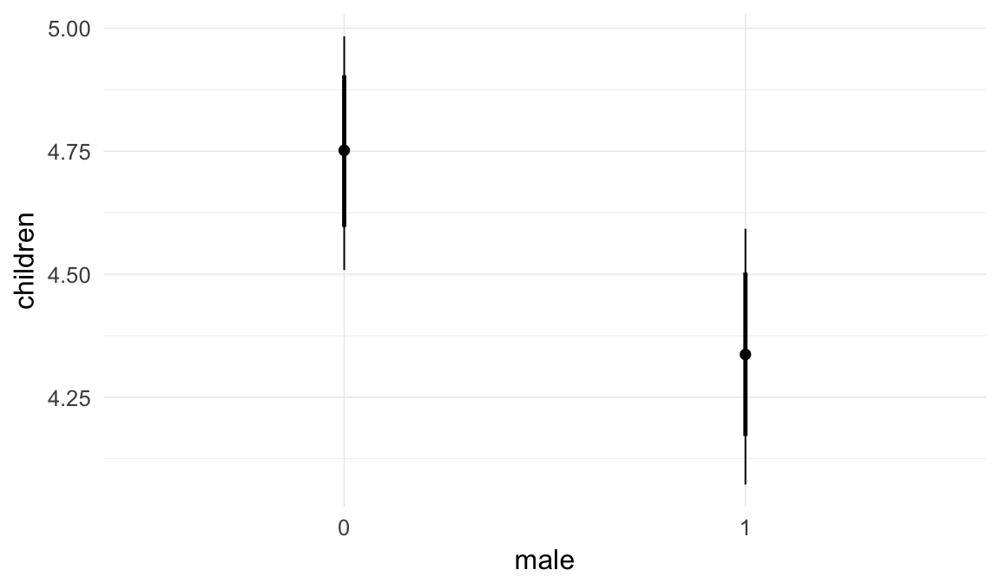
Coefficient plot
Here, we plotted the 95% posterior densities for the unexponentiated model coefficients (b_). The darkly shaded area represents the 50% credibility interval, the dark line represent the posterior mean estimate.
mcmc_areas(as.matrix(model$fit), regex_pars = "b_[^I]", point_est = "mean", prob = 0.50, prob_outer = 0.95) + ggtitle("Posterior densities with means and 50% intervals") + analysis_theme + theme(axis.text = element_text(size = 12), panel.grid = element_blank()) + xlab("Coefficient size")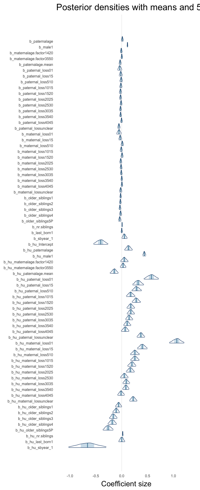
Diagnostics
These plots were made to diagnose misfit and nonconvergence.
Posterior predictive checks
In posterior predictive checks, we test whether we can approximately reproduce the real data distribution from our model.
brms::pp_check(model, re_formula = NA, type = "dens_overlay")
brms::pp_check(model, re_formula = NA, type = "hist")
Rhat
Did the 6 chains converge?
stanplot(model, pars = "^b_[^I]", type = 'rhat')
Effective sample size over average sample size
stanplot(model, pars = "^b", type = 'neff_hist')
Trace plots
Trace plots are only shown in the case of nonconvergence.
if(any( summary(model)$fixed[,"Rhat"] > 1.1)) { # only do traceplots if not converged
plot(model, N = 3, ask = FALSE)
}File/cluster script name
This model was stored in the file: coefs/rpqa/r9_continuous_byear_adjustment.rds.
Click the following link to see the script used to generate this model:
opts_chunk$set(echo = FALSE)
clusterscript = str_replace(basename(model_filename), "\\.rds",".html")
cat("[Cluster script](" , clusterscript, ")", sep = "")r10: Group-level slope added
Paternal age effects may vary between different families. Although we did not explore between-family moderators of paternal age effects in our study, we tested whether modelling an additional group-level slope for paternal age differences within the family, would change the results by allowing for shrinkage and to examine the amount of inter-family differences to be explained for potential future moderator analysis.
Model summary
Full summary
model_summary = summary(model, use_cache = FALSE, priors = TRUE)## Warning: The model has not converged (some Rhats are > 1.1). Do not analyse the results!
## We recommend running more iterations and/or setting stronger priors.## Warning: There were 400 divergent transitions after warmup. Increasing
## adapt_delta above 0.8 may help. See http://mc-stan.org/misc/
## warnings.html#divergent-transitions-after-warmupprint(model_summary)## Family: hurdle_poisson(log)
## Formula: children ~ paternalage + birth_cohort + male + maternalage.factor + paternalage.mean + paternal_loss + maternal_loss + older_siblings + nr.siblings + last_born + (1 + paternalage | idParents)
## hu ~ paternalage + birth_cohort + male + maternalage.factor + paternalage.mean + paternal_loss + maternal_loss + older_siblings + nr.siblings + last_born + (1 + paternalage | idParents)
## Data: model_data (Number of observations: 68724)
## Samples: 6 chains, each with iter = 3500; warmup = 1500; thin = 5;
## total post-warmup samples = 2400
## WAIC: Not computed
##
## Priors:
## b ~ normal(0,5)
## L ~ lkj_corr_cholesky(1)
## sd ~ student_t(3, 0, 5)
## b_hu ~ normal(0,5)
## sd_hu ~ student_t(3, 0, 10)
##
## Group-Level Effects:
## ~idParents (Number of levels: 12205)
## Estimate Est.Error l-95% CI u-95% CI
## sd(Intercept) 0.76 0.25 0.20 0.91
## sd(paternalage) 0.20 0.05 0.09 0.24
## sd(hu_Intercept) 0.81 0.25 0.01 1.18
## sd(hu_paternalage) 0.16 0.07 0.03 0.27
## cor(Intercept,paternalage) -0.89 0.15 -0.96 -0.60
## cor(hu_Intercept,hu_paternalage) -0.58 0.34 -0.87 0.60
## Eff.Sample Rhat
## sd(Intercept) 3 9.52
## sd(paternalage) 3 9.96
## sd(hu_Intercept) 21 1.36
## sd(hu_paternalage) 7 1.71
## cor(Intercept,paternalage) 3 3.88
## cor(hu_Intercept,hu_paternalage) 18 1.40
##
## Population-Level Effects:
## Estimate Est.Error l-95% CI u-95% CI Eff.Sample
## Intercept 2.11 0.03 2.05 2.17 9
## paternalage 0.00 0.01 -0.03 0.02 110
## birth_cohort1675M1680 0.02 0.02 -0.01 0.05 438
## birth_cohort1680M1685 0.05 0.02 0.02 0.08 384
## birth_cohort1685M1690 0.05 0.02 0.01 0.08 65
## birth_cohort1690M1695 0.05 0.02 0.01 0.08 146
## birth_cohort1695M1700 0.03 0.02 0.00 0.07 131
## birth_cohort1700M1705 0.02 0.02 -0.01 0.05 246
## birth_cohort1705M1710 -0.01 0.02 -0.04 0.03 162
## birth_cohort1710M1715 -0.01 0.02 -0.05 0.02 239
## birth_cohort1715M1720 -0.04 0.02 -0.07 -0.01 342
## birth_cohort1720M1725 -0.04 0.02 -0.07 -0.01 254
## birth_cohort1725M1730 -0.07 0.02 -0.10 -0.04 357
## birth_cohort1730M1735 -0.05 0.02 -0.08 -0.02 239
## birth_cohort1735M1740 -0.06 0.01 -0.09 -0.03 240
## male1 0.11 0.00 0.10 0.12 1299
## maternalage.factor1420 -0.01 0.01 -0.03 0.01 29
## maternalage.factor3550 0.00 0.01 -0.02 0.01 40
## paternalage.mean -0.02 0.01 -0.05 0.01 160
## paternal_loss01 -0.04 0.02 -0.08 0.00 104
## paternal_loss15 -0.02 0.02 -0.05 0.01 118
## paternal_loss510 -0.02 0.01 -0.04 0.01 106
## paternal_loss1015 -0.02 0.01 -0.05 0.01 136
## paternal_loss1520 -0.03 0.01 -0.05 0.00 92
## paternal_loss2025 -0.02 0.01 -0.05 0.00 174
## paternal_loss2530 -0.01 0.01 -0.03 0.01 116
## paternal_loss3035 -0.02 0.01 -0.04 0.00 33
## paternal_loss3540 -0.02 0.01 -0.04 0.00 8
## paternal_loss4045 0.00 0.01 -0.02 0.02 7
## paternal_lossunclear -0.05 0.01 -0.08 -0.03 138
## maternal_loss01 -0.05 0.03 -0.10 -0.01 10
## maternal_loss15 -0.02 0.02 -0.05 0.02 6
## maternal_loss510 0.01 0.01 -0.01 0.04 422
## maternal_loss1015 -0.01 0.01 -0.04 0.01 211
## maternal_loss1520 0.01 0.01 -0.02 0.03 1064
## maternal_loss2025 -0.02 0.01 -0.05 0.00 21
## maternal_loss2530 -0.01 0.01 -0.03 0.01 433
## maternal_loss3035 0.00 0.01 -0.03 0.01 13
## maternal_loss3540 0.00 0.01 -0.02 0.02 577
## maternal_loss4045 0.00 0.01 -0.02 0.02 734
## maternal_lossunclear -0.02 0.01 -0.05 0.00 382
## older_siblings1 -0.02 0.01 -0.03 0.00 477
## older_siblings2 -0.01 0.01 -0.03 0.01 14
## older_siblings3 -0.02 0.02 -0.05 0.01 5
## older_siblings4 0.00 0.01 -0.02 0.03 10
## older_siblings5P -0.01 0.02 -0.05 0.02 7
## nr.siblings 0.01 0.00 0.00 0.01 13
## last_born1 0.00 0.01 -0.02 0.01 967
## hu_Intercept -0.81 0.09 -0.99 -0.63 170
## hu_paternalage 0.15 0.04 0.07 0.22 58
## hu_birth_cohort1675M1680 0.08 0.07 -0.05 0.22 318
## hu_birth_cohort1680M1685 0.23 0.07 0.10 0.36 560
## hu_birth_cohort1685M1690 0.33 0.07 0.20 0.47 543
## hu_birth_cohort1690M1695 0.08 0.06 -0.05 0.22 474
## hu_birth_cohort1695M1700 0.10 0.06 -0.02 0.24 239
## hu_birth_cohort1700M1705 0.26 0.06 0.14 0.38 450
## hu_birth_cohort1705M1710 0.15 0.06 0.03 0.28 417
## hu_birth_cohort1710M1715 0.43 0.06 0.31 0.55 479
## hu_birth_cohort1715M1720 0.28 0.06 0.17 0.41 189
## hu_birth_cohort1720M1725 0.31 0.06 0.18 0.43 455
## hu_birth_cohort1725M1730 0.67 0.06 0.55 0.79 371
## hu_birth_cohort1730M1735 0.73 0.06 0.61 0.84 352
## hu_birth_cohort1735M1740 0.57 0.06 0.45 0.68 385
## hu_male1 0.44 0.02 0.40 0.47 27
## hu_maternalage.factor1420 0.06 0.04 -0.03 0.12 11
## hu_maternalage.factor3550 0.03 0.03 -0.03 0.08 575
## hu_paternalage.mean -0.16 0.04 -0.24 -0.08 71
## hu_paternal_loss01 0.57 0.07 0.43 0.70 1130
## hu_paternal_loss15 0.31 0.05 0.20 0.41 40
## hu_paternal_loss510 0.30 0.05 0.20 0.38 19
## hu_paternal_loss1015 0.17 0.04 0.09 0.26 654
## hu_paternal_loss1520 0.28 0.04 0.20 0.36 207
## hu_paternal_loss2025 0.18 0.04 0.10 0.25 15
## hu_paternal_loss2530 0.18 0.04 0.10 0.24 707
## hu_paternal_loss3035 0.15 0.04 0.08 0.21 11
## hu_paternal_loss3540 0.11 0.04 0.03 0.18 10
## hu_paternal_loss4045 0.07 0.04 -0.01 0.14 723
## hu_paternal_lossunclear 0.37 0.04 0.30 0.45 921
## hu_maternal_loss01 1.05 0.07 0.91 1.20 136
## hu_maternal_loss15 0.39 0.05 0.30 0.49 1272
## hu_maternal_loss510 0.26 0.04 0.17 0.33 51
## hu_maternal_loss1015 0.26 0.04 0.17 0.34 365
## hu_maternal_loss1520 0.21 0.04 0.12 0.27 13
## hu_maternal_loss2025 0.18 0.05 0.09 0.25 10
## hu_maternal_loss2530 0.06 0.04 -0.02 0.12 26
## hu_maternal_loss3035 0.09 0.03 0.02 0.15 878
## hu_maternal_loss3540 0.08 0.03 0.02 0.14 18
## hu_maternal_loss4045 0.00 0.04 -0.07 0.07 10
## hu_maternal_lossunclear 0.23 0.04 0.15 0.29 17
## hu_older_siblings1 -0.06 0.03 -0.12 0.00 472
## hu_older_siblings2 -0.11 0.03 -0.18 -0.04 333
## hu_older_siblings3 -0.17 0.04 -0.24 -0.09 522
## hu_older_siblings4 -0.19 0.04 -0.27 -0.11 131
## hu_older_siblings5P -0.29 0.05 -0.38 -0.18 46
## hu_nr.siblings 0.02 0.00 0.01 0.03 926
## hu_last_born1 0.00 0.03 -0.06 0.05 1170
## Rhat
## Intercept 1.22
## paternalage 1.05
## birth_cohort1675M1680 1.02
## birth_cohort1680M1685 1.01
## birth_cohort1685M1690 1.06
## birth_cohort1690M1695 1.04
## birth_cohort1695M1700 1.04
## birth_cohort1700M1705 1.02
## birth_cohort1705M1710 1.03
## birth_cohort1710M1715 1.03
## birth_cohort1715M1720 1.02
## birth_cohort1720M1725 1.03
## birth_cohort1725M1730 1.02
## birth_cohort1730M1735 1.03
## birth_cohort1735M1740 1.03
## male1 1.00
## maternalage.factor1420 1.06
## maternalage.factor3550 1.05
## paternalage.mean 1.03
## paternal_loss01 1.05
## paternal_loss15 1.04
## paternal_loss510 1.05
## paternal_loss1015 1.05
## paternal_loss1520 1.06
## paternal_loss2025 1.04
## paternal_loss2530 1.05
## paternal_loss3035 1.08
## paternal_loss3540 1.23
## paternal_loss4045 1.33
## paternal_lossunclear 1.05
## maternal_loss01 1.17
## maternal_loss15 1.34
## maternal_loss510 1.02
## maternal_loss1015 1.03
## maternal_loss1520 1.01
## maternal_loss2025 1.09
## maternal_loss2530 1.02
## maternal_loss3035 1.13
## maternal_loss3540 1.02
## maternal_loss4045 1.01
## maternal_lossunclear 1.03
## older_siblings1 1.02
## older_siblings2 1.12
## older_siblings3 1.60
## older_siblings4 1.18
## older_siblings5P 1.34
## nr.siblings 1.13
## last_born1 1.01
## hu_Intercept 1.05
## hu_paternalage 1.06
## hu_birth_cohort1675M1680 1.02
## hu_birth_cohort1680M1685 1.02
## hu_birth_cohort1685M1690 1.01
## hu_birth_cohort1690M1695 1.01
## hu_birth_cohort1695M1700 1.03
## hu_birth_cohort1700M1705 1.02
## hu_birth_cohort1705M1710 1.01
## hu_birth_cohort1710M1715 1.01
## hu_birth_cohort1715M1720 1.04
## hu_birth_cohort1720M1725 1.01
## hu_birth_cohort1725M1730 1.03
## hu_birth_cohort1730M1735 1.03
## hu_birth_cohort1735M1740 1.02
## hu_male1 1.07
## hu_maternalage.factor1420 1.19
## hu_maternalage.factor3550 1.01
## hu_paternalage.mean 1.06
## hu_paternal_loss01 1.01
## hu_paternal_loss15 1.06
## hu_paternal_loss510 1.09
## hu_paternal_loss1015 1.02
## hu_paternal_loss1520 1.03
## hu_paternal_loss2025 1.11
## hu_paternal_loss2530 1.00
## hu_paternal_loss3035 1.17
## hu_paternal_loss3540 1.21
## hu_paternal_loss4045 1.00
## hu_paternal_lossunclear 1.00
## hu_maternal_loss01 1.03
## hu_maternal_loss15 1.01
## hu_maternal_loss510 1.05
## hu_maternal_loss1015 1.02
## hu_maternal_loss1520 1.14
## hu_maternal_loss2025 1.19
## hu_maternal_loss2530 1.07
## hu_maternal_loss3035 1.01
## hu_maternal_loss3540 1.10
## hu_maternal_loss4045 1.17
## hu_maternal_lossunclear 1.10
## hu_older_siblings1 1.02
## hu_older_siblings2 1.03
## hu_older_siblings3 1.02
## hu_older_siblings4 1.04
## hu_older_siblings5P 1.07
## hu_nr.siblings 1.01
## hu_last_born1 1.00
##
## Samples were drawn using sampling(NUTS). For each parameter, Eff.Sample
## is a crude measure of effective sample size, and Rhat is the potential
## scale reduction factor on split chains (at convergence, Rhat = 1).Table of fixed effects
Estimates are exp(b). When they are referring to the hurdle (hu) component, or a dichotomous outcome, they are odds ratios, when they are referring to a Poisson component, they are hazard ratios. In both cases, they are presented with 95% credibility intervals. To see the effects on the response scale (probability or number of children), consult the marginal effect plots.
fixed_eff = data.frame(model_summary$fixed, check.names = F)
fixed_eff$Est.Error = fixed_eff$Eff.Sample = fixed_eff$Rhat = NULL
fixed_eff$`Odds/hazard ratio` = exp(fixed_eff$Estimate)
fixed_eff$`OR/HR low 95%` = exp(fixed_eff$`l-95% CI`)
fixed_eff$`OR/HR high 95%` = exp(fixed_eff$`u-95% CI`)
fixed_eff = fixed_eff %>% select(`Odds/hazard ratio`, `OR/HR low 95%`, `OR/HR high 95%`)
pander::pander(fixed_eff)| Odds/hazard ratio | OR/HR low 95% | OR/HR high 95% | |
|---|---|---|---|
| Intercept | 8.264 | 7.738 | 8.741 |
| paternalage | 0.9967 | 0.9733 | 1.024 |
| birth_cohort1675M1680 | 1.02 | 0.9884 | 1.052 |
| birth_cohort1680M1685 | 1.052 | 1.018 | 1.087 |
| birth_cohort1685M1690 | 1.052 | 1.014 | 1.086 |
| birth_cohort1690M1695 | 1.051 | 1.013 | 1.085 |
| birth_cohort1695M1700 | 1.035 | 0.9993 | 1.068 |
| birth_cohort1700M1705 | 1.021 | 0.9872 | 1.053 |
| birth_cohort1705M1710 | 0.995 | 0.9621 | 1.026 |
| birth_cohort1710M1715 | 0.9871 | 0.956 | 1.018 |
| birth_cohort1715M1720 | 0.9618 | 0.9311 | 0.9909 |
| birth_cohort1720M1725 | 0.9618 | 0.9309 | 0.9915 |
| birth_cohort1725M1730 | 0.9352 | 0.9065 | 0.9648 |
| birth_cohort1730M1735 | 0.952 | 0.9216 | 0.9809 |
| birth_cohort1735M1740 | 0.9417 | 0.9107 | 0.969 |
| male1 | 1.119 | 1.11 | 1.129 |
| maternalage.factor1420 | 0.9914 | 0.9734 | 1.013 |
| maternalage.factor3550 | 0.997 | 0.9802 | 1.013 |
| paternalage.mean | 0.9817 | 0.9554 | 1.008 |
| paternal_loss01 | 0.9611 | 0.9228 | 1.004 |
| paternal_loss15 | 0.9798 | 0.9475 | 1.011 |
| paternal_loss510 | 0.9843 | 0.9578 | 1.013 |
| paternal_loss1015 | 0.9808 | 0.9559 | 1.006 |
| paternal_loss1520 | 0.9734 | 0.9499 | 0.9977 |
| paternal_loss2025 | 0.9771 | 0.955 | 0.9984 |
| paternal_loss2530 | 0.9891 | 0.9674 | 1.011 |
| paternal_loss3035 | 0.9812 | 0.9617 | 1.003 |
| paternal_loss3540 | 0.9827 | 0.9632 | 1.005 |
| paternal_loss4045 | 0.9999 | 0.9768 | 1.023 |
| paternal_lossunclear | 0.9479 | 0.9242 | 0.9713 |
| maternal_loss01 | 0.9497 | 0.9027 | 0.9902 |
| maternal_loss15 | 0.9813 | 0.9473 | 1.017 |
| maternal_loss510 | 1.014 | 0.9869 | 1.041 |
| maternal_loss1015 | 0.9896 | 0.9643 | 1.014 |
| maternal_loss1520 | 1.007 | 0.9822 | 1.032 |
| maternal_loss2025 | 0.9807 | 0.9551 | 1.004 |
| maternal_loss2530 | 0.9881 | 0.9658 | 1.009 |
| maternal_loss3035 | 0.9951 | 0.9738 | 1.013 |
| maternal_loss3540 | 0.9991 | 0.9816 | 1.017 |
| maternal_loss4045 | 1.002 | 0.9844 | 1.019 |
| maternal_lossunclear | 0.9772 | 0.9521 | 1.001 |
| older_siblings1 | 0.9835 | 0.9684 | 0.9989 |
| older_siblings2 | 0.9874 | 0.9704 | 1.007 |
| older_siblings3 | 0.9808 | 0.9484 | 1.006 |
| older_siblings4 | 0.9995 | 0.9765 | 1.026 |
| older_siblings5P | 0.9862 | 0.9551 | 1.021 |
| nr.siblings | 1.007 | 1.004 | 1.009 |
| last_born1 | 0.9984 | 0.9833 | 1.014 |
| hu_Intercept | 0.4448 | 0.372 | 0.5331 |
| hu_paternalage | 1.161 | 1.071 | 1.249 |
| hu_birth_cohort1675M1680 | 1.085 | 0.9471 | 1.243 |
| hu_birth_cohort1680M1685 | 1.254 | 1.109 | 1.44 |
| hu_birth_cohort1685M1690 | 1.397 | 1.224 | 1.603 |
| hu_birth_cohort1690M1695 | 1.084 | 0.9555 | 1.242 |
| hu_birth_cohort1695M1700 | 1.111 | 0.9768 | 1.265 |
| hu_birth_cohort1700M1705 | 1.293 | 1.145 | 1.462 |
| hu_birth_cohort1705M1710 | 1.166 | 1.028 | 1.327 |
| hu_birth_cohort1710M1715 | 1.534 | 1.362 | 1.74 |
| hu_birth_cohort1715M1720 | 1.324 | 1.181 | 1.5 |
| hu_birth_cohort1720M1725 | 1.363 | 1.203 | 1.543 |
| hu_birth_cohort1725M1730 | 1.959 | 1.738 | 2.202 |
| hu_birth_cohort1730M1735 | 2.074 | 1.84 | 2.32 |
| hu_birth_cohort1735M1740 | 1.76 | 1.563 | 1.975 |
| hu_male1 | 1.551 | 1.497 | 1.597 |
| hu_maternalage.factor1420 | 1.057 | 0.9748 | 1.127 |
| hu_maternalage.factor3550 | 1.025 | 0.9727 | 1.084 |
| hu_paternalage.mean | 0.8516 | 0.7896 | 0.9247 |
| hu_paternal_loss01 | 1.769 | 1.544 | 2.016 |
| hu_paternal_loss15 | 1.369 | 1.226 | 1.506 |
| hu_paternal_loss510 | 1.345 | 1.216 | 1.459 |
| hu_paternal_loss1015 | 1.183 | 1.09 | 1.292 |
| hu_paternal_loss1520 | 1.329 | 1.224 | 1.431 |
| hu_paternal_loss2025 | 1.2 | 1.107 | 1.282 |
| hu_paternal_loss2530 | 1.193 | 1.105 | 1.275 |
| hu_paternal_loss3035 | 1.161 | 1.078 | 1.232 |
| hu_paternal_loss3540 | 1.119 | 1.035 | 1.199 |
| hu_paternal_loss4045 | 1.074 | 0.9924 | 1.154 |
| hu_paternal_lossunclear | 1.448 | 1.349 | 1.563 |
| hu_maternal_loss01 | 2.855 | 2.497 | 3.31 |
| hu_maternal_loss15 | 1.478 | 1.345 | 1.632 |
| hu_maternal_loss510 | 1.298 | 1.191 | 1.396 |
| hu_maternal_loss1015 | 1.294 | 1.19 | 1.407 |
| hu_maternal_loss1520 | 1.228 | 1.128 | 1.314 |
| hu_maternal_loss2025 | 1.194 | 1.093 | 1.286 |
| hu_maternal_loss2530 | 1.058 | 0.9772 | 1.132 |
| hu_maternal_loss3035 | 1.089 | 1.017 | 1.166 |
| hu_maternal_loss3540 | 1.088 | 1.02 | 1.151 |
| hu_maternal_loss4045 | 0.9987 | 0.9283 | 1.069 |
| hu_maternal_lossunclear | 1.253 | 1.159 | 1.34 |
| hu_older_siblings1 | 0.9385 | 0.8848 | 0.9996 |
| hu_older_siblings2 | 0.8926 | 0.838 | 0.9597 |
| hu_older_siblings3 | 0.8418 | 0.7836 | 0.9097 |
| hu_older_siblings4 | 0.823 | 0.761 | 0.8953 |
| hu_older_siblings5P | 0.7508 | 0.6854 | 0.8322 |
| hu_nr.siblings | 1.02 | 1.012 | 1.027 |
| hu_last_born1 | 0.9965 | 0.941 | 1.052 |
Paternal age effect
pander::pander(paternal_age_10y_effect(model))| effect | median_estimate | ci_95 | ci_80 |
|---|---|---|---|
| estimate father 25y | 5.68 | [5.38;6.05] | [5.46;5.97] |
| estimate father 35y | 5.41 | [5.07;5.7] | [5.18;5.66] |
| percentage change | -5.17 | [-7.98;-1.3] | [-6.77;-2.54] |
| OR/IRR | 0.99 | [0.97;1.02] | [0.98;1.01] |
| OR hurdle | 1.16 | [1.07;1.25] | [1.1;1.22] |
Marginal effect plots
In these marginal effect plots, we set all predictors except the one shown on the X axis to their mean and in the case of factors to their reference level. We then plot the estimated association between the X axis predictor and the outcome on the response scale (e.g. probability of survival/marriage or number of children).
plot.brmsMarginalEffects_shades(
x = marginal_effects(model, re_formula = NA, probs = c(0.025,0.975)),
y = marginal_effects(model, re_formula = NA, probs = c(0.1,0.9)),
ask = FALSE)Coefficient plot
Here, we plotted the 95% posterior densities for the unexponentiated model coefficients (b_). The darkly shaded area represents the 50% credibility interval, the dark line represent the posterior mean estimate.
mcmc_areas(as.matrix(model$fit), regex_pars = "b_[^I]", point_est = "mean", prob = 0.50, prob_outer = 0.95) + ggtitle("Posterior densities with means and 50% intervals") + analysis_theme + theme(axis.text = element_text(size = 12), panel.grid = element_blank()) + xlab("Coefficient size")Diagnostics
These plots were made to diagnose misfit and nonconvergence.
Posterior predictive checks
In posterior predictive checks, we test whether we can approximately reproduce the real data distribution from our model.
brms::pp_check(model, re_formula = NA, type = "dens_overlay")
brms::pp_check(model, re_formula = NA, type = "hist")
Rhat
Did the 6 chains converge?
stanplot(model, pars = "^b_[^I]", type = 'rhat')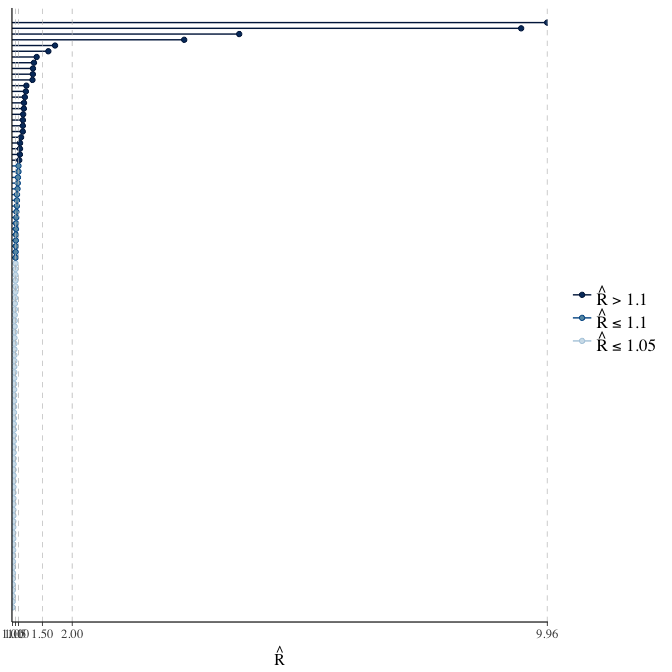
Effective sample size over average sample size
stanplot(model, pars = "^b", type = 'neff_hist')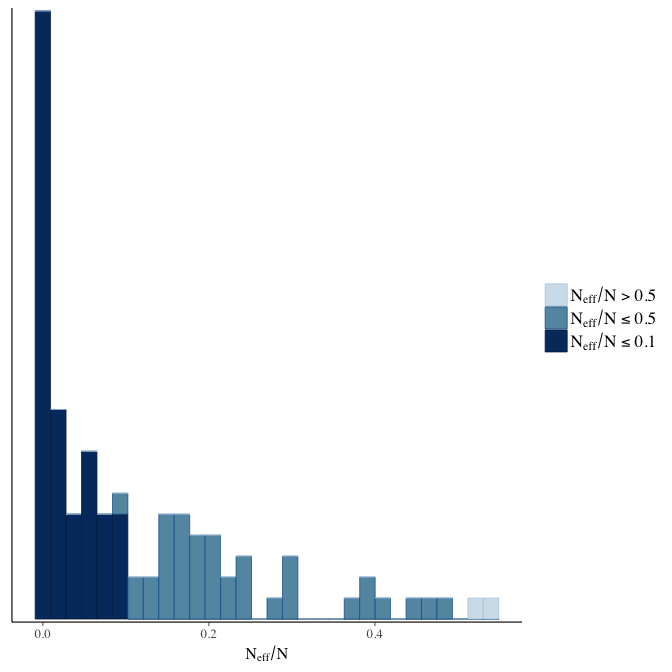
Trace plots
Trace plots are only shown in the case of nonconvergence.
if(any( summary(model)$fixed[,"Rhat"] > 1.1)) { # only do traceplots if not converged
plot(model, N = 3, ask = FALSE)
}


File/cluster script name
This model was stored in the file: coefs/rpqa/r10_add_random_slope.rds.
Click the following link to see the script used to generate this model:
opts_chunk$set(echo = FALSE)
clusterscript = str_replace(basename(model_filename), "\\.rds",".html")
cat("[Cluster script](" , clusterscript, ")", sep = "")r11: Separate group-level effects for each parent
Most anchors in our sample are full biological siblings and especially in the historical populations, divorce and remarriage was rare. Therefore, we chose to include only one group-level effect, for the parent couple (i.e. one group-level effect per father-mother-dyad). Including one intercept per parent is potentially a better way to adjust for genetic propensities inherited from either parent and allows estimating this propensity also from half-siblings, while half-sibling relationships were ignored in our main models. This comes at the cost of modelling complexity.
Model summary
Full summary
model_summary = summary(model, use_cache = FALSE, priors = TRUE)
print(model_summary)## Family: hurdle_poisson(log)
## Formula: children ~ paternalage + birth_cohort + male + maternalage.factor + paternalage.mean + paternal_loss + maternal_loss + older_siblings + nr.siblings + last_born + (1 | idMere) + (1 | idPere)
## hu ~ paternalage + birth_cohort + male + maternalage.factor + paternalage.mean + paternal_loss + maternal_loss + older_siblings + nr.siblings + last_born + (1 | idMere) + (1 | idPere)
## Data: model_data (Number of observations: 68724)
## Samples: 6 chains, each with iter = 10000; warmup = 4000; thin = 5;
## total post-warmup samples = 7200
## WAIC: Not computed
##
## Priors:
## b ~ normal(0,5)
## sd ~ student_t(3, 0, 5)
## b_hu ~ normal(0,5)
## sd_hu ~ student_t(3, 0, 10)
##
## Group-Level Effects:
## ~idMere (Number of levels: 11249)
## Estimate Est.Error l-95% CI u-95% CI Eff.Sample Rhat
## sd(Intercept) 0.20 0.01 0.18 0.21 2093 1
## sd(hu_Intercept) 0.46 0.04 0.37 0.54 888 1
##
## ~idPere (Number of levels: 11098)
## Estimate Est.Error l-95% CI u-95% CI Eff.Sample Rhat
## sd(Intercept) 0.19 0.01 0.17 0.21 2111 1
## sd(hu_Intercept) 0.43 0.04 0.34 0.51 901 1
##
## Population-Level Effects:
## Estimate Est.Error l-95% CI u-95% CI Eff.Sample
## Intercept 2.12 0.03 2.06 2.17 6703
## paternalage 0.01 0.01 -0.01 0.04 7200
## birth_cohort1675M1680 0.02 0.02 -0.01 0.05 6418
## birth_cohort1680M1685 0.05 0.02 0.02 0.08 6125
## birth_cohort1685M1690 0.05 0.02 0.02 0.08 6452
## birth_cohort1690M1695 0.05 0.02 0.02 0.08 5937
## birth_cohort1695M1700 0.03 0.02 0.00 0.07 5882
## birth_cohort1700M1705 0.02 0.02 -0.01 0.05 5709
## birth_cohort1705M1710 0.00 0.02 -0.03 0.03 5625
## birth_cohort1710M1715 -0.01 0.02 -0.04 0.02 5386
## birth_cohort1715M1720 -0.04 0.02 -0.07 -0.01 5665
## birth_cohort1720M1725 -0.04 0.02 -0.07 -0.01 5561
## birth_cohort1725M1730 -0.07 0.02 -0.10 -0.03 5815
## birth_cohort1730M1735 -0.05 0.02 -0.08 -0.02 5616
## birth_cohort1735M1740 -0.06 0.02 -0.09 -0.03 5551
## male1 0.11 0.00 0.10 0.12 7200
## maternalage.factor1420 -0.01 0.01 -0.03 0.01 7200
## maternalage.factor3550 0.00 0.01 -0.02 0.01 7200
## paternalage.mean -0.03 0.01 -0.06 -0.01 7184
## paternal_loss01 -0.04 0.02 -0.08 0.00 7024
## paternal_loss15 -0.02 0.02 -0.05 0.01 7118
## paternal_loss510 -0.01 0.01 -0.04 0.02 6718
## paternal_loss1015 -0.02 0.01 -0.04 0.01 6980
## paternal_loss1520 -0.02 0.01 -0.05 0.00 6857
## paternal_loss2025 -0.02 0.01 -0.04 0.00 6815
## paternal_loss2530 -0.01 0.01 -0.03 0.01 6498
## paternal_loss3035 -0.02 0.01 -0.04 0.00 7200
## paternal_loss3540 -0.02 0.01 -0.04 0.00 6972
## paternal_loss4045 0.00 0.01 -0.02 0.02 7200
## paternal_lossunclear -0.05 0.01 -0.08 -0.03 7023
## maternal_loss01 -0.05 0.02 -0.10 -0.01 7200
## maternal_loss15 -0.03 0.02 -0.06 0.00 6666
## maternal_loss510 0.01 0.01 -0.02 0.03 7200
## maternal_loss1015 -0.01 0.01 -0.04 0.01 6999
## maternal_loss1520 0.01 0.01 -0.02 0.03 7200
## maternal_loss2025 -0.02 0.01 -0.04 0.00 7041
## maternal_loss2530 -0.01 0.01 -0.03 0.01 7142
## maternal_loss3035 -0.01 0.01 -0.03 0.01 7200
## maternal_loss3540 0.00 0.01 -0.02 0.02 7200
## maternal_loss4045 0.00 0.01 -0.01 0.02 7200
## maternal_lossunclear -0.02 0.01 -0.05 0.00 7200
## older_siblings1 -0.02 0.01 -0.04 -0.01 7200
## older_siblings2 -0.03 0.01 -0.04 -0.01 7200
## older_siblings3 -0.04 0.01 -0.06 -0.02 7200
## older_siblings4 -0.02 0.01 -0.05 0.00 7037
## older_siblings5P -0.04 0.01 -0.07 -0.01 7200
## nr.siblings 0.01 0.00 0.01 0.01 7187
## last_born1 0.00 0.01 -0.01 0.02 7200
## hu_Intercept -0.79 0.09 -0.97 -0.61 6383
## hu_paternalage 0.13 0.04 0.05 0.21 7066
## hu_birth_cohort1675M1680 0.08 0.07 -0.06 0.21 6026
## hu_birth_cohort1680M1685 0.23 0.07 0.10 0.36 6145
## hu_birth_cohort1685M1690 0.33 0.07 0.20 0.47 6305
## hu_birth_cohort1690M1695 0.08 0.07 -0.05 0.21 5872
## hu_birth_cohort1695M1700 0.10 0.06 -0.03 0.22 5929
## hu_birth_cohort1700M1705 0.25 0.06 0.13 0.37 5885
## hu_birth_cohort1705M1710 0.15 0.06 0.03 0.27 5840
## hu_birth_cohort1710M1715 0.43 0.06 0.31 0.55 5765
## hu_birth_cohort1715M1720 0.28 0.06 0.16 0.40 5799
## hu_birth_cohort1720M1725 0.30 0.06 0.19 0.42 5814
## hu_birth_cohort1725M1730 0.66 0.06 0.55 0.78 5838
## hu_birth_cohort1730M1735 0.72 0.06 0.61 0.84 5747
## hu_birth_cohort1735M1740 0.56 0.06 0.45 0.68 5687
## hu_male1 0.44 0.02 0.40 0.47 7200
## hu_maternalage.factor1420 0.05 0.04 -0.03 0.12 7200
## hu_maternalage.factor3550 0.03 0.03 -0.02 0.09 7200
## hu_paternalage.mean -0.15 0.04 -0.23 -0.06 7200
## hu_paternal_loss01 0.56 0.07 0.42 0.70 6716
## hu_paternal_loss15 0.30 0.06 0.19 0.41 7200
## hu_paternal_loss510 0.29 0.05 0.19 0.38 6665
## hu_paternal_loss1015 0.17 0.05 0.08 0.26 6816
## hu_paternal_loss1520 0.28 0.04 0.20 0.36 6948
## hu_paternal_loss2025 0.17 0.04 0.10 0.25 6650
## hu_paternal_loss2530 0.18 0.04 0.10 0.25 6475
## hu_paternal_loss3035 0.14 0.04 0.06 0.21 6831
## hu_paternal_loss3540 0.10 0.04 0.03 0.18 7043
## hu_paternal_loss4045 0.07 0.04 -0.01 0.15 6929
## hu_paternal_lossunclear 0.37 0.04 0.29 0.45 6768
## hu_maternal_loss01 1.06 0.07 0.91 1.20 7200
## hu_maternal_loss15 0.39 0.05 0.29 0.48 7136
## hu_maternal_loss510 0.26 0.04 0.17 0.35 7200
## hu_maternal_loss1015 0.25 0.04 0.17 0.34 7200
## hu_maternal_loss1520 0.20 0.04 0.12 0.28 7200
## hu_maternal_loss2025 0.17 0.04 0.09 0.25 7200
## hu_maternal_loss2530 0.05 0.04 -0.02 0.13 7200
## hu_maternal_loss3035 0.09 0.04 0.02 0.16 7200
## hu_maternal_loss3540 0.08 0.03 0.01 0.14 7200
## hu_maternal_loss4045 -0.01 0.03 -0.08 0.05 7200
## hu_maternal_lossunclear 0.22 0.04 0.15 0.30 7164
## hu_older_siblings1 -0.06 0.03 -0.12 0.00 7200
## hu_older_siblings2 -0.11 0.03 -0.18 -0.04 7032
## hu_older_siblings3 -0.16 0.04 -0.24 -0.09 7042
## hu_older_siblings4 -0.18 0.04 -0.27 -0.09 6824
## hu_older_siblings5P -0.27 0.05 -0.37 -0.17 6916
## hu_nr.siblings 0.02 0.00 0.01 0.03 7110
## hu_last_born1 0.00 0.03 -0.06 0.06 7200
## Rhat
## Intercept 1
## paternalage 1
## birth_cohort1675M1680 1
## birth_cohort1680M1685 1
## birth_cohort1685M1690 1
## birth_cohort1690M1695 1
## birth_cohort1695M1700 1
## birth_cohort1700M1705 1
## birth_cohort1705M1710 1
## birth_cohort1710M1715 1
## birth_cohort1715M1720 1
## birth_cohort1720M1725 1
## birth_cohort1725M1730 1
## birth_cohort1730M1735 1
## birth_cohort1735M1740 1
## male1 1
## maternalage.factor1420 1
## maternalage.factor3550 1
## paternalage.mean 1
## paternal_loss01 1
## paternal_loss15 1
## paternal_loss510 1
## paternal_loss1015 1
## paternal_loss1520 1
## paternal_loss2025 1
## paternal_loss2530 1
## paternal_loss3035 1
## paternal_loss3540 1
## paternal_loss4045 1
## paternal_lossunclear 1
## maternal_loss01 1
## maternal_loss15 1
## maternal_loss510 1
## maternal_loss1015 1
## maternal_loss1520 1
## maternal_loss2025 1
## maternal_loss2530 1
## maternal_loss3035 1
## maternal_loss3540 1
## maternal_loss4045 1
## maternal_lossunclear 1
## older_siblings1 1
## older_siblings2 1
## older_siblings3 1
## older_siblings4 1
## older_siblings5P 1
## nr.siblings 1
## last_born1 1
## hu_Intercept 1
## hu_paternalage 1
## hu_birth_cohort1675M1680 1
## hu_birth_cohort1680M1685 1
## hu_birth_cohort1685M1690 1
## hu_birth_cohort1690M1695 1
## hu_birth_cohort1695M1700 1
## hu_birth_cohort1700M1705 1
## hu_birth_cohort1705M1710 1
## hu_birth_cohort1710M1715 1
## hu_birth_cohort1715M1720 1
## hu_birth_cohort1720M1725 1
## hu_birth_cohort1725M1730 1
## hu_birth_cohort1730M1735 1
## hu_birth_cohort1735M1740 1
## hu_male1 1
## hu_maternalage.factor1420 1
## hu_maternalage.factor3550 1
## hu_paternalage.mean 1
## hu_paternal_loss01 1
## hu_paternal_loss15 1
## hu_paternal_loss510 1
## hu_paternal_loss1015 1
## hu_paternal_loss1520 1
## hu_paternal_loss2025 1
## hu_paternal_loss2530 1
## hu_paternal_loss3035 1
## hu_paternal_loss3540 1
## hu_paternal_loss4045 1
## hu_paternal_lossunclear 1
## hu_maternal_loss01 1
## hu_maternal_loss15 1
## hu_maternal_loss510 1
## hu_maternal_loss1015 1
## hu_maternal_loss1520 1
## hu_maternal_loss2025 1
## hu_maternal_loss2530 1
## hu_maternal_loss3035 1
## hu_maternal_loss3540 1
## hu_maternal_loss4045 1
## hu_maternal_lossunclear 1
## hu_older_siblings1 1
## hu_older_siblings2 1
## hu_older_siblings3 1
## hu_older_siblings4 1
## hu_older_siblings5P 1
## hu_nr.siblings 1
## hu_last_born1 1
##
## Samples were drawn using sampling(NUTS). For each parameter, Eff.Sample
## is a crude measure of effective sample size, and Rhat is the potential
## scale reduction factor on split chains (at convergence, Rhat = 1).Table of fixed effects
Estimates are exp(b). When they are referring to the hurdle (hu) component, or a dichotomous outcome, they are odds ratios, when they are referring to a Poisson component, they are hazard ratios. In both cases, they are presented with 95% credibility intervals. To see the effects on the response scale (probability or number of children), consult the marginal effect plots.
fixed_eff = data.frame(model_summary$fixed, check.names = F)
fixed_eff$Est.Error = fixed_eff$Eff.Sample = fixed_eff$Rhat = NULL
fixed_eff$`Odds/hazard ratio` = exp(fixed_eff$Estimate)
fixed_eff$`OR/HR low 95%` = exp(fixed_eff$`l-95% CI`)
fixed_eff$`OR/HR high 95%` = exp(fixed_eff$`u-95% CI`)
fixed_eff = fixed_eff %>% select(`Odds/hazard ratio`, `OR/HR low 95%`, `OR/HR high 95%`)
pander::pander(fixed_eff)| Odds/hazard ratio | OR/HR low 95% | OR/HR high 95% | |
|---|---|---|---|
| Intercept | 8.291 | 7.87 | 8.723 |
| paternalage | 1.015 | 0.9937 | 1.036 |
| birth_cohort1675M1680 | 1.02 | 0.9894 | 1.053 |
| birth_cohort1680M1685 | 1.048 | 1.015 | 1.081 |
| birth_cohort1685M1690 | 1.05 | 1.016 | 1.086 |
| birth_cohort1690M1695 | 1.048 | 1.016 | 1.082 |
| birth_cohort1695M1700 | 1.035 | 1.003 | 1.069 |
| birth_cohort1700M1705 | 1.021 | 0.9886 | 1.055 |
| birth_cohort1705M1710 | 0.9983 | 0.9678 | 1.03 |
| birth_cohort1710M1715 | 0.9882 | 0.9581 | 1.02 |
| birth_cohort1715M1720 | 0.9611 | 0.9313 | 0.9916 |
| birth_cohort1720M1725 | 0.9587 | 0.93 | 0.9897 |
| birth_cohort1725M1730 | 0.9363 | 0.9078 | 0.9669 |
| birth_cohort1730M1735 | 0.9518 | 0.9229 | 0.9819 |
| birth_cohort1735M1740 | 0.9411 | 0.9131 | 0.9707 |
| male1 | 1.117 | 1.108 | 1.127 |
| maternalage.factor1420 | 0.9929 | 0.9745 | 1.012 |
| maternalage.factor3550 | 0.9982 | 0.9826 | 1.014 |
| paternalage.mean | 0.9672 | 0.9455 | 0.9891 |
| paternal_loss01 | 0.9606 | 0.922 | 1.001 |
| paternal_loss15 | 0.9826 | 0.9514 | 1.015 |
| paternal_loss510 | 0.9906 | 0.9624 | 1.019 |
| paternal_loss1015 | 0.9843 | 0.9591 | 1.01 |
| paternal_loss1520 | 0.976 | 0.9525 | 1 |
| paternal_loss2025 | 0.9781 | 0.9566 | 0.9999 |
| paternal_loss2530 | 0.9891 | 0.969 | 1.01 |
| paternal_loss3035 | 0.9786 | 0.9591 | 0.998 |
| paternal_loss3540 | 0.9789 | 0.9609 | 0.997 |
| paternal_loss4045 | 0.9973 | 0.9773 | 1.017 |
| paternal_lossunclear | 0.9499 | 0.9262 | 0.9746 |
| maternal_loss01 | 0.9471 | 0.9043 | 0.9902 |
| maternal_loss15 | 0.9694 | 0.9411 | 0.9983 |
| maternal_loss510 | 1.008 | 0.9822 | 1.035 |
| maternal_loss1015 | 0.989 | 0.9646 | 1.013 |
| maternal_loss1520 | 1.006 | 0.9819 | 1.029 |
| maternal_loss2025 | 0.9788 | 0.957 | 1.001 |
| maternal_loss2530 | 0.9863 | 0.9664 | 1.007 |
| maternal_loss3035 | 0.9912 | 0.9728 | 1.009 |
| maternal_loss3540 | 1 | 0.9837 | 1.017 |
| maternal_loss4045 | 1.003 | 0.9868 | 1.02 |
| maternal_lossunclear | 0.9785 | 0.9548 | 1.003 |
| older_siblings1 | 0.9775 | 0.9625 | 0.9928 |
| older_siblings2 | 0.9738 | 0.9572 | 0.9907 |
| older_siblings3 | 0.9653 | 0.9462 | 0.9844 |
| older_siblings4 | 0.9762 | 0.9554 | 0.998 |
| older_siblings5P | 0.9607 | 0.9355 | 0.9869 |
| nr.siblings | 1.008 | 1.005 | 1.01 |
| last_born1 | 1.001 | 0.9859 | 1.016 |
| hu_Intercept | 0.4534 | 0.3789 | 0.5415 |
| hu_paternalage | 1.14 | 1.055 | 1.232 |
| hu_birth_cohort1675M1680 | 1.079 | 0.9441 | 1.235 |
| hu_birth_cohort1680M1685 | 1.259 | 1.102 | 1.44 |
| hu_birth_cohort1685M1690 | 1.396 | 1.219 | 1.593 |
| hu_birth_cohort1690M1695 | 1.083 | 0.9497 | 1.235 |
| hu_birth_cohort1695M1700 | 1.101 | 0.9709 | 1.248 |
| hu_birth_cohort1700M1705 | 1.284 | 1.138 | 1.451 |
| hu_birth_cohort1705M1710 | 1.162 | 1.027 | 1.316 |
| hu_birth_cohort1710M1715 | 1.539 | 1.362 | 1.733 |
| hu_birth_cohort1715M1720 | 1.324 | 1.173 | 1.495 |
| hu_birth_cohort1720M1725 | 1.353 | 1.204 | 1.524 |
| hu_birth_cohort1725M1730 | 1.944 | 1.728 | 2.183 |
| hu_birth_cohort1730M1735 | 2.061 | 1.841 | 2.313 |
| hu_birth_cohort1735M1740 | 1.756 | 1.568 | 1.97 |
| hu_male1 | 1.546 | 1.498 | 1.597 |
| hu_maternalage.factor1420 | 1.048 | 0.9726 | 1.129 |
| hu_maternalage.factor3550 | 1.033 | 0.9756 | 1.096 |
| hu_paternalage.mean | 0.8636 | 0.7952 | 0.938 |
| hu_paternal_loss01 | 1.755 | 1.518 | 2.022 |
| hu_paternal_loss15 | 1.352 | 1.214 | 1.505 |
| hu_paternal_loss510 | 1.33 | 1.208 | 1.463 |
| hu_paternal_loss1015 | 1.184 | 1.085 | 1.291 |
| hu_paternal_loss1520 | 1.323 | 1.219 | 1.437 |
| hu_paternal_loss2025 | 1.19 | 1.102 | 1.289 |
| hu_paternal_loss2530 | 1.191 | 1.103 | 1.284 |
| hu_paternal_loss3035 | 1.148 | 1.066 | 1.237 |
| hu_paternal_loss3540 | 1.108 | 1.029 | 1.193 |
| hu_paternal_loss4045 | 1.071 | 0.9887 | 1.159 |
| hu_paternal_lossunclear | 1.453 | 1.342 | 1.57 |
| hu_maternal_loss01 | 2.876 | 2.489 | 3.326 |
| hu_maternal_loss15 | 1.47 | 1.331 | 1.621 |
| hu_maternal_loss510 | 1.295 | 1.188 | 1.413 |
| hu_maternal_loss1015 | 1.29 | 1.188 | 1.405 |
| hu_maternal_loss1520 | 1.216 | 1.123 | 1.32 |
| hu_maternal_loss2025 | 1.181 | 1.091 | 1.282 |
| hu_maternal_loss2530 | 1.053 | 0.9792 | 1.137 |
| hu_maternal_loss3035 | 1.09 | 1.017 | 1.169 |
| hu_maternal_loss3540 | 1.082 | 1.014 | 1.154 |
| hu_maternal_loss4045 | 0.9877 | 0.9241 | 1.054 |
| hu_maternal_lossunclear | 1.249 | 1.158 | 1.346 |
| hu_older_siblings1 | 0.9404 | 0.8851 | 0.9991 |
| hu_older_siblings2 | 0.8979 | 0.8384 | 0.9607 |
| hu_older_siblings3 | 0.8485 | 0.7846 | 0.9172 |
| hu_older_siblings4 | 0.832 | 0.7625 | 0.9094 |
| hu_older_siblings5P | 0.7648 | 0.6902 | 0.8473 |
| hu_nr.siblings | 1.019 | 1.011 | 1.028 |
| hu_last_born1 | 0.9986 | 0.9427 | 1.059 |
Paternal age effect
pander::pander(paternal_age_10y_effect(model))| effect | median_estimate | ci_95 | ci_80 |
|---|---|---|---|
| estimate father 25y | 5.67 | [5.38;5.95] | [5.48;5.85] |
| estimate father 35y | 5.52 | [5.19;5.85] | [5.3;5.73] |
| percentage change | -2.68 | [-5.95;0.52] | [-4.83;-0.54] |
| OR/IRR | 1.01 | [0.99;1.04] | [1;1.03] |
| OR hurdle | 1.14 | [1.06;1.23] | [1.08;1.2] |
Marginal effect plots
In these marginal effect plots, we set all predictors except the one shown on the X axis to their mean and in the case of factors to their reference level. We then plot the estimated association between the X axis predictor and the outcome on the response scale (e.g. probability of survival/marriage or number of children).
plot.brmsMarginalEffects_shades(
x = marginal_effects(model, re_formula = NA, probs = c(0.025,0.975)),
y = marginal_effects(model, re_formula = NA, probs = c(0.1,0.9)),
ask = FALSE)
 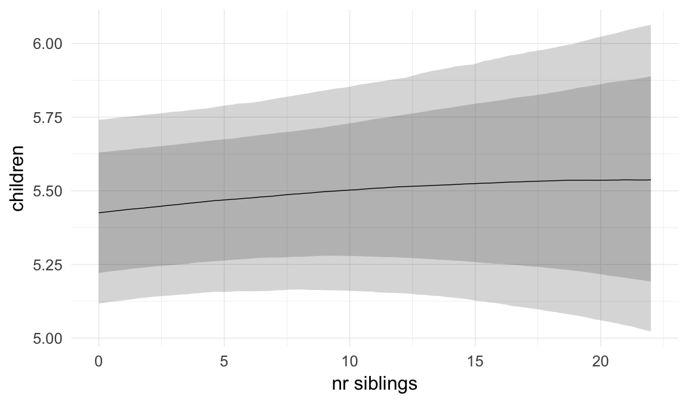
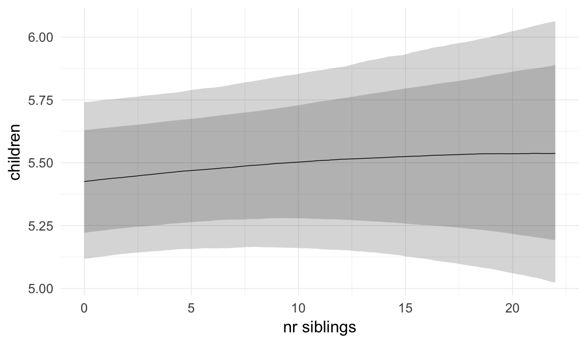
Coefficient plot
Here, we plotted the 95% posterior densities for the unexponentiated model coefficients (b_). The darkly shaded area represents the 50% credibility interval, the dark line represent the posterior mean estimate.
mcmc_areas(as.matrix(model$fit), regex_pars = "b_[^I]", point_est = "mean", prob = 0.50, prob_outer = 0.95) + ggtitle("Posterior densities with means and 50% intervals") + analysis_theme + theme(axis.text = element_text(size = 12), panel.grid = element_blank()) + xlab("Coefficient size")Diagnostics
These plots were made to diagnose misfit and nonconvergence.
Posterior predictive checks
In posterior predictive checks, we test whether we can approximately reproduce the real data distribution from our model.
brms::pp_check(model, re_formula = NA, type = "dens_overlay")brms::pp_check(model, re_formula = NA, type = "hist")Rhat
Did the 6 chains converge?
stanplot(model, pars = "^b_[^I]", type = 'rhat')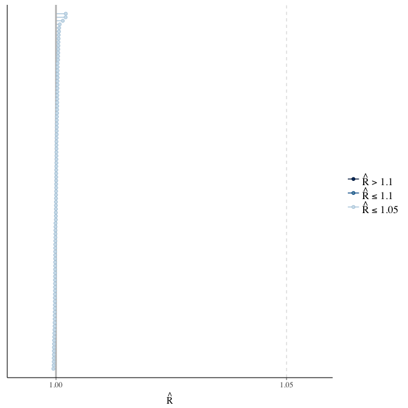
Effective sample size over average sample size
stanplot(model, pars = "^b", type = 'neff_hist')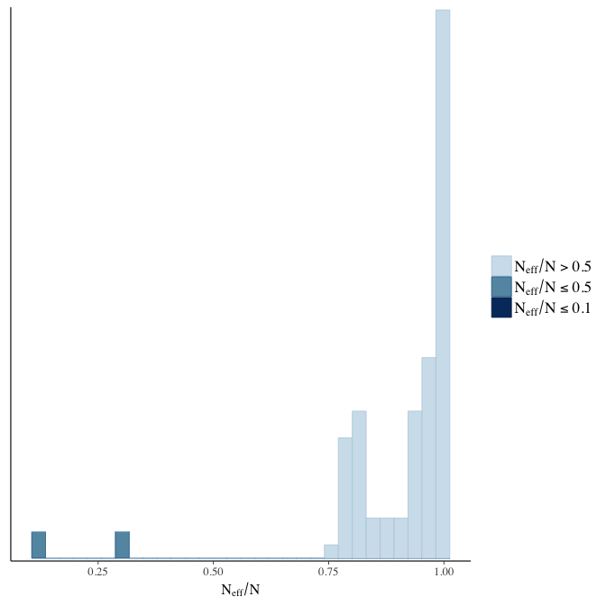
Trace plots
Trace plots are only shown in the case of nonconvergence.
if(any( summary(model)$fixed[,"Rhat"] > 1.1)) { # only do traceplots if not converged
plot(model, N = 3, ask = FALSE)
}File/cluster script name
This model was stored in the file: coefs/rpqa/r11_separate_random_effects_for_parents.rds.
Click the following link to see the script used to generate this model:
opts_chunk$set(echo = FALSE)
clusterscript = str_replace(basename(model_filename), "\\.rds",".html")
cat("[Cluster script](" , clusterscript, ")", sep = "")r12: Sex moderation
It need not be the case that paternal age has the same effect on male and female children. For example, male children inherit only the small Y chromosome from the father, but female children inherit the larger X chromosome, so that paternal age predicts X-chromosomal de novo mutations in females but not in males (Francioli et al., 2016). At the same time, the autism literature suggests that males are less robust to heritable and de novo autism risk variants and that these effects are not simply due to having only one X chromosome (Werling & Geschwind, 2015). Here we let a dummy variable for being male moderate the paternal age effect.
Model summary
Full summary
model_summary = summary(model, use_cache = FALSE, priors = TRUE)
print(model_summary)## Family: hurdle_poisson(log)
## Formula: children ~ paternalage * male + birth_cohort + maternalage.factor + paternalage.mean + paternal_loss + maternal_loss + older_siblings + nr.siblings + last_born + (1 | idParents)
## hu ~ paternalage + male + birth_cohort + maternalage.factor + paternalage.mean + paternal_loss + maternal_loss + older_siblings + nr.siblings + last_born + (1 | idParents) + paternalage:male
## Data: model_data (Number of observations: 68724)
## Samples: 6 chains, each with iter = 800; warmup = 300; thin = 1;
## total post-warmup samples = 3000
## WAIC: Not computed
##
## Priors:
## b ~ normal(0,5)
## sd ~ student_t(3, 0, 5)
## b_hu ~ normal(0,5)
## sd_hu ~ student_t(3, 0, 10)
##
## Group-Level Effects:
## ~idParents (Number of levels: 12205)
## Estimate Est.Error l-95% CI u-95% CI Eff.Sample Rhat
## sd(Intercept) 0.27 0.00 0.27 0.28 945 1.01
## sd(hu_Intercept) 0.63 0.01 0.60 0.66 1040 1.01
##
## Population-Level Effects:
## Estimate Est.Error l-95% CI u-95% CI Eff.Sample
## Intercept 2.12 0.03 2.07 2.18 967
## paternalage 0.01 0.01 -0.01 0.03 1526
## male1 0.09 0.02 0.06 0.13 3000
## birth_cohort1675M1680 0.02 0.02 -0.01 0.05 969
## birth_cohort1680M1685 0.05 0.02 0.02 0.08 701
## birth_cohort1685M1690 0.05 0.02 0.02 0.08 721
## birth_cohort1690M1695 0.05 0.02 0.01 0.08 610
## birth_cohort1695M1700 0.04 0.02 0.00 0.07 574
## birth_cohort1700M1705 0.02 0.02 -0.01 0.05 527
## birth_cohort1705M1710 0.00 0.02 -0.03 0.03 571
## birth_cohort1710M1715 -0.01 0.02 -0.04 0.02 532
## birth_cohort1715M1720 -0.04 0.02 -0.07 -0.01 566
## birth_cohort1720M1725 -0.04 0.02 -0.07 -0.01 521
## birth_cohort1725M1730 -0.07 0.02 -0.10 -0.03 523
## birth_cohort1730M1735 -0.05 0.02 -0.08 -0.02 476
## birth_cohort1735M1740 -0.06 0.02 -0.09 -0.03 487
## maternalage.factor1420 -0.01 0.01 -0.03 0.01 3000
## maternalage.factor3550 0.00 0.01 -0.01 0.02 2445
## paternalage.mean -0.03 0.01 -0.05 -0.01 1543
## paternal_loss01 -0.04 0.02 -0.08 0.00 1387
## paternal_loss15 -0.02 0.02 -0.05 0.02 1129
## paternal_loss510 -0.01 0.01 -0.04 0.02 1054
## paternal_loss1015 -0.02 0.01 -0.04 0.01 1053
## paternal_loss1520 -0.02 0.01 -0.05 0.00 1028
## paternal_loss2025 -0.02 0.01 -0.04 0.00 1131
## paternal_loss2530 -0.01 0.01 -0.03 0.01 1102
## paternal_loss3035 -0.02 0.01 -0.04 0.00 1278
## paternal_loss3540 -0.02 0.01 -0.04 0.00 1481
## paternal_loss4045 0.00 0.01 -0.02 0.02 3000
## paternal_lossunclear -0.05 0.01 -0.08 -0.03 1132
## maternal_loss01 -0.05 0.02 -0.10 -0.01 3000
## maternal_loss15 -0.03 0.02 -0.06 0.00 1417
## maternal_loss510 0.01 0.01 -0.01 0.04 1446
## maternal_loss1015 -0.01 0.01 -0.03 0.02 1414
## maternal_loss1520 0.01 0.01 -0.02 0.03 1560
## maternal_loss2025 -0.02 0.01 -0.04 0.00 1519
## maternal_loss2530 -0.01 0.01 -0.04 0.01 1514
## maternal_loss3035 -0.01 0.01 -0.03 0.01 1664
## maternal_loss3540 0.00 0.01 -0.02 0.02 1932
## maternal_loss4045 0.00 0.01 -0.01 0.02 3000
## maternal_lossunclear -0.02 0.01 -0.05 0.01 1224
## older_siblings1 -0.02 0.01 -0.04 -0.01 3000
## older_siblings2 -0.03 0.01 -0.04 -0.01 2288
## older_siblings3 -0.03 0.01 -0.05 -0.01 1820
## older_siblings4 -0.02 0.01 -0.04 0.00 1780
## older_siblings5P -0.04 0.01 -0.06 -0.01 1842
## nr.siblings 0.01 0.00 0.00 0.01 1441
## last_born1 0.00 0.01 -0.01 0.02 3000
## paternalage:male1 0.00 0.00 0.00 0.01 3000
## hu_Intercept -0.79 0.10 -0.98 -0.60 886
## hu_paternalage 0.13 0.04 0.05 0.21 1380
## hu_male1 0.42 0.07 0.28 0.55 2485
## hu_birth_cohort1675M1680 0.07 0.07 -0.06 0.21 810
## hu_birth_cohort1680M1685 0.23 0.07 0.09 0.37 782
## hu_birth_cohort1685M1690 0.33 0.07 0.20 0.47 739
## hu_birth_cohort1690M1695 0.08 0.07 -0.06 0.22 696
## hu_birth_cohort1695M1700 0.10 0.07 -0.03 0.23 647
## hu_birth_cohort1700M1705 0.25 0.06 0.13 0.38 521
## hu_birth_cohort1705M1710 0.15 0.07 0.03 0.28 576
## hu_birth_cohort1710M1715 0.43 0.06 0.31 0.56 544
## hu_birth_cohort1715M1720 0.28 0.06 0.16 0.41 569
## hu_birth_cohort1720M1725 0.30 0.06 0.19 0.43 556
## hu_birth_cohort1725M1730 0.66 0.06 0.55 0.79 489
## hu_birth_cohort1730M1735 0.72 0.06 0.61 0.84 513
## hu_birth_cohort1735M1740 0.56 0.06 0.45 0.68 468
## hu_maternalage.factor1420 0.05 0.04 -0.03 0.12 3000
## hu_maternalage.factor3550 0.03 0.03 -0.03 0.09 3000
## hu_paternalage.mean -0.14 0.04 -0.23 -0.06 1355
## hu_paternal_loss01 0.57 0.07 0.44 0.71 3000
## hu_paternal_loss15 0.31 0.06 0.21 0.42 1931
## hu_paternal_loss510 0.29 0.05 0.20 0.39 1552
## hu_paternal_loss1015 0.17 0.05 0.08 0.27 1520
## hu_paternal_loss1520 0.28 0.04 0.20 0.37 1374
## hu_paternal_loss2025 0.18 0.04 0.10 0.26 1502
## hu_paternal_loss2530 0.18 0.04 0.10 0.25 1339
## hu_paternal_loss3035 0.14 0.04 0.06 0.22 1391
## hu_paternal_loss3540 0.10 0.04 0.03 0.18 1598
## hu_paternal_loss4045 0.07 0.04 -0.01 0.15 3000
## hu_paternal_lossunclear 0.37 0.04 0.29 0.45 1385
## hu_maternal_loss01 1.06 0.07 0.92 1.20 3000
## hu_maternal_loss15 0.39 0.05 0.29 0.49 3000
## hu_maternal_loss510 0.26 0.04 0.17 0.35 3000
## hu_maternal_loss1015 0.26 0.04 0.17 0.34 3000
## hu_maternal_loss1520 0.20 0.04 0.12 0.28 3000
## hu_maternal_loss2025 0.17 0.04 0.09 0.25 3000
## hu_maternal_loss2530 0.05 0.04 -0.02 0.12 3000
## hu_maternal_loss3035 0.08 0.04 0.02 0.15 3000
## hu_maternal_loss3540 0.08 0.03 0.02 0.14 3000
## hu_maternal_loss4045 -0.01 0.03 -0.08 0.05 3000
## hu_maternal_lossunclear 0.22 0.04 0.14 0.30 2421
## hu_older_siblings1 -0.06 0.03 -0.12 0.00 3000
## hu_older_siblings2 -0.11 0.03 -0.17 -0.04 1887
## hu_older_siblings3 -0.17 0.04 -0.24 -0.09 1584
## hu_older_siblings4 -0.18 0.04 -0.27 -0.10 1337
## hu_older_siblings5P -0.27 0.05 -0.37 -0.17 1266
## hu_nr.siblings 0.02 0.00 0.01 0.03 1921
## hu_last_born1 0.00 0.03 -0.06 0.06 3000
## hu_paternalage:male1 0.00 0.02 -0.03 0.04 2525
## Rhat
## Intercept 1.00
## paternalage 1.00
## male1 1.00
## birth_cohort1675M1680 1.00
## birth_cohort1680M1685 1.00
## birth_cohort1685M1690 1.00
## birth_cohort1690M1695 1.00
## birth_cohort1695M1700 1.00
## birth_cohort1700M1705 1.00
## birth_cohort1705M1710 1.00
## birth_cohort1710M1715 1.01
## birth_cohort1715M1720 1.01
## birth_cohort1720M1725 1.01
## birth_cohort1725M1730 1.01
## birth_cohort1730M1735 1.01
## birth_cohort1735M1740 1.01
## maternalage.factor1420 1.00
## maternalage.factor3550 1.00
## paternalage.mean 1.00
## paternal_loss01 1.00
## paternal_loss15 1.00
## paternal_loss510 1.00
## paternal_loss1015 1.00
## paternal_loss1520 1.00
## paternal_loss2025 1.00
## paternal_loss2530 1.00
## paternal_loss3035 1.00
## paternal_loss3540 1.00
## paternal_loss4045 1.00
## paternal_lossunclear 1.00
## maternal_loss01 1.00
## maternal_loss15 1.00
## maternal_loss510 1.01
## maternal_loss1015 1.01
## maternal_loss1520 1.00
## maternal_loss2025 1.00
## maternal_loss2530 1.00
## maternal_loss3035 1.00
## maternal_loss3540 1.00
## maternal_loss4045 1.00
## maternal_lossunclear 1.01
## older_siblings1 1.00
## older_siblings2 1.00
## older_siblings3 1.00
## older_siblings4 1.00
## older_siblings5P 1.00
## nr.siblings 1.00
## last_born1 1.00
## paternalage:male1 1.00
## hu_Intercept 1.01
## hu_paternalage 1.01
## hu_male1 1.00
## hu_birth_cohort1675M1680 1.01
## hu_birth_cohort1680M1685 1.01
## hu_birth_cohort1685M1690 1.01
## hu_birth_cohort1690M1695 1.01
## hu_birth_cohort1695M1700 1.00
## hu_birth_cohort1700M1705 1.01
## hu_birth_cohort1705M1710 1.01
## hu_birth_cohort1710M1715 1.01
## hu_birth_cohort1715M1720 1.01
## hu_birth_cohort1720M1725 1.01
## hu_birth_cohort1725M1730 1.01
## hu_birth_cohort1730M1735 1.01
## hu_birth_cohort1735M1740 1.01
## hu_maternalage.factor1420 1.00
## hu_maternalage.factor3550 1.00
## hu_paternalage.mean 1.01
## hu_paternal_loss01 1.00
## hu_paternal_loss15 1.00
## hu_paternal_loss510 1.00
## hu_paternal_loss1015 1.00
## hu_paternal_loss1520 1.00
## hu_paternal_loss2025 1.00
## hu_paternal_loss2530 1.00
## hu_paternal_loss3035 1.00
## hu_paternal_loss3540 1.00
## hu_paternal_loss4045 1.00
## hu_paternal_lossunclear 1.00
## hu_maternal_loss01 1.00
## hu_maternal_loss15 1.00
## hu_maternal_loss510 1.00
## hu_maternal_loss1015 1.00
## hu_maternal_loss1520 1.00
## hu_maternal_loss2025 1.00
## hu_maternal_loss2530 1.00
## hu_maternal_loss3035 1.00
## hu_maternal_loss3540 1.00
## hu_maternal_loss4045 1.00
## hu_maternal_lossunclear 1.00
## hu_older_siblings1 1.00
## hu_older_siblings2 1.00
## hu_older_siblings3 1.00
## hu_older_siblings4 1.01
## hu_older_siblings5P 1.01
## hu_nr.siblings 1.00
## hu_last_born1 1.00
## hu_paternalage:male1 1.00
##
## Samples were drawn using sampling(NUTS). For each parameter, Eff.Sample
## is a crude measure of effective sample size, and Rhat is the potential
## scale reduction factor on split chains (at convergence, Rhat = 1).Table of fixed effects
Estimates are exp(b). When they are referring to the hurdle (hu) component, or a dichotomous outcome, they are odds ratios, when they are referring to a Poisson component, they are hazard ratios. In both cases, they are presented with 95% credibility intervals. To see the effects on the response scale (probability or number of children), consult the marginal effect plots.
fixed_eff = data.frame(model_summary$fixed, check.names = F)
fixed_eff$Est.Error = fixed_eff$Eff.Sample = fixed_eff$Rhat = NULL
fixed_eff$`Odds/hazard ratio` = exp(fixed_eff$Estimate)
fixed_eff$`OR/HR low 95%` = exp(fixed_eff$`l-95% CI`)
fixed_eff$`OR/HR high 95%` = exp(fixed_eff$`u-95% CI`)
fixed_eff = fixed_eff %>% select(`Odds/hazard ratio`, `OR/HR low 95%`, `OR/HR high 95%`)
pander::pander(fixed_eff)| Odds/hazard ratio | OR/HR low 95% | OR/HR high 95% | |
|---|---|---|---|
| Intercept | 8.358 | 7.902 | 8.842 |
| paternalage | 1.009 | 0.987 | 1.031 |
| male1 | 1.098 | 1.061 | 1.136 |
| birth_cohort1675M1680 | 1.022 | 0.9897 | 1.054 |
| birth_cohort1680M1685 | 1.049 | 1.015 | 1.082 |
| birth_cohort1685M1690 | 1.052 | 1.018 | 1.088 |
| birth_cohort1690M1695 | 1.049 | 1.015 | 1.084 |
| birth_cohort1695M1700 | 1.036 | 1.003 | 1.07 |
| birth_cohort1700M1705 | 1.022 | 0.99 | 1.054 |
| birth_cohort1705M1710 | 0.9982 | 0.9669 | 1.03 |
| birth_cohort1710M1715 | 0.9886 | 0.957 | 1.02 |
| birth_cohort1715M1720 | 0.9608 | 0.9309 | 0.9928 |
| birth_cohort1720M1725 | 0.959 | 0.9297 | 0.9888 |
| birth_cohort1725M1730 | 0.9365 | 0.9062 | 0.9671 |
| birth_cohort1730M1735 | 0.9523 | 0.9223 | 0.9823 |
| birth_cohort1735M1740 | 0.9416 | 0.9117 | 0.9718 |
| maternalage.factor1420 | 0.9922 | 0.9739 | 1.011 |
| maternalage.factor3550 | 1.002 | 0.986 | 1.018 |
| paternalage.mean | 0.9709 | 0.9479 | 0.9939 |
| paternal_loss01 | 0.9636 | 0.9224 | 1.004 |
| paternal_loss15 | 0.9836 | 0.952 | 1.017 |
| paternal_loss510 | 0.9906 | 0.9626 | 1.02 |
| paternal_loss1015 | 0.9848 | 0.9602 | 1.01 |
| paternal_loss1520 | 0.9764 | 0.9533 | 0.9998 |
| paternal_loss2025 | 0.9779 | 0.9564 | 1 |
| paternal_loss2530 | 0.9879 | 0.9677 | 1.009 |
| paternal_loss3035 | 0.9774 | 0.9585 | 0.9972 |
| paternal_loss3540 | 0.9781 | 0.9598 | 0.9968 |
| paternal_loss4045 | 0.9971 | 0.9778 | 1.017 |
| paternal_lossunclear | 0.9482 | 0.9247 | 0.9729 |
| maternal_loss01 | 0.9489 | 0.9053 | 0.992 |
| maternal_loss15 | 0.972 | 0.9432 | 1.002 |
| maternal_loss510 | 1.012 | 0.9862 | 1.038 |
| maternal_loss1015 | 0.9916 | 0.9674 | 1.016 |
| maternal_loss1520 | 1.006 | 0.9827 | 1.03 |
| maternal_loss2025 | 0.9802 | 0.9574 | 1.003 |
| maternal_loss2530 | 0.9867 | 0.9649 | 1.007 |
| maternal_loss3035 | 0.9915 | 0.9728 | 1.01 |
| maternal_loss3540 | 1.001 | 0.9841 | 1.018 |
| maternal_loss4045 | 1.004 | 0.9879 | 1.02 |
| maternal_lossunclear | 0.9812 | 0.9559 | 1.006 |
| older_siblings1 | 0.9785 | 0.9641 | 0.9937 |
| older_siblings2 | 0.9748 | 0.9584 | 0.9915 |
| older_siblings3 | 0.9671 | 0.948 | 0.987 |
| older_siblings4 | 0.9781 | 0.9571 | 1 |
| older_siblings5P | 0.9631 | 0.9383 | 0.989 |
| nr.siblings | 1.007 | 1.005 | 1.01 |
| last_born1 | 1.002 | 0.9856 | 1.018 |
| paternalage:male1 | 1.005 | 0.9955 | 1.014 |
| hu_Intercept | 0.4539 | 0.3756 | 0.5491 |
| hu_paternalage | 1.137 | 1.052 | 1.233 |
| hu_male1 | 1.522 | 1.321 | 1.74 |
| hu_birth_cohort1675M1680 | 1.078 | 0.9379 | 1.233 |
| hu_birth_cohort1680M1685 | 1.256 | 1.097 | 1.445 |
| hu_birth_cohort1685M1690 | 1.395 | 1.22 | 1.595 |
| hu_birth_cohort1690M1695 | 1.082 | 0.9455 | 1.246 |
| hu_birth_cohort1695M1700 | 1.1 | 0.9704 | 1.259 |
| hu_birth_cohort1700M1705 | 1.285 | 1.136 | 1.459 |
| hu_birth_cohort1705M1710 | 1.163 | 1.029 | 1.322 |
| hu_birth_cohort1710M1715 | 1.536 | 1.363 | 1.742 |
| hu_birth_cohort1715M1720 | 1.328 | 1.179 | 1.507 |
| hu_birth_cohort1720M1725 | 1.356 | 1.207 | 1.536 |
| hu_birth_cohort1725M1730 | 1.942 | 1.731 | 2.196 |
| hu_birth_cohort1730M1735 | 2.06 | 1.833 | 2.321 |
| hu_birth_cohort1735M1740 | 1.755 | 1.569 | 1.972 |
| hu_maternalage.factor1420 | 1.049 | 0.9745 | 1.126 |
| hu_maternalage.factor3550 | 1.03 | 0.9721 | 1.093 |
| hu_paternalage.mean | 0.8656 | 0.7942 | 0.9377 |
| hu_paternal_loss01 | 1.776 | 1.548 | 2.041 |
| hu_paternal_loss15 | 1.369 | 1.229 | 1.526 |
| hu_paternal_loss510 | 1.34 | 1.222 | 1.479 |
| hu_paternal_loss1015 | 1.19 | 1.084 | 1.304 |
| hu_paternal_loss1520 | 1.327 | 1.223 | 1.444 |
| hu_paternal_loss2025 | 1.193 | 1.103 | 1.292 |
| hu_paternal_loss2530 | 1.194 | 1.107 | 1.287 |
| hu_paternal_loss3035 | 1.152 | 1.065 | 1.244 |
| hu_paternal_loss3540 | 1.109 | 1.028 | 1.192 |
| hu_paternal_loss4045 | 1.072 | 0.9879 | 1.158 |
| hu_paternal_lossunclear | 1.448 | 1.338 | 1.566 |
| hu_maternal_loss01 | 2.885 | 2.515 | 3.32 |
| hu_maternal_loss15 | 1.479 | 1.338 | 1.634 |
| hu_maternal_loss510 | 1.294 | 1.185 | 1.412 |
| hu_maternal_loss1015 | 1.291 | 1.185 | 1.403 |
| hu_maternal_loss1520 | 1.218 | 1.122 | 1.317 |
| hu_maternal_loss2025 | 1.184 | 1.091 | 1.283 |
| hu_maternal_loss2530 | 1.054 | 0.9775 | 1.133 |
| hu_maternal_loss3035 | 1.089 | 1.018 | 1.166 |
| hu_maternal_loss3540 | 1.084 | 1.017 | 1.155 |
| hu_maternal_loss4045 | 0.9886 | 0.9263 | 1.056 |
| hu_maternal_lossunclear | 1.246 | 1.155 | 1.343 |
| hu_older_siblings1 | 0.9405 | 0.8856 | 1.001 |
| hu_older_siblings2 | 0.8985 | 0.8418 | 0.9587 |
| hu_older_siblings3 | 0.8478 | 0.7856 | 0.9165 |
| hu_older_siblings4 | 0.8322 | 0.7663 | 0.9045 |
| hu_older_siblings5P | 0.7653 | 0.6929 | 0.8415 |
| hu_nr.siblings | 1.02 | 1.012 | 1.028 |
| hu_last_born1 | 0.9975 | 0.9418 | 1.057 |
| hu_paternalage:male1 | 1.004 | 0.9689 | 1.043 |
Paternal age effect
pander::pander(paternal_age_10y_effect(model))| effect | median_estimate | ci_95 | ci_80 |
|---|---|---|---|
| estimate father 25y | 5.69 | [5.4;6] | [5.5;5.88] |
| estimate father 35y | 5.51 | [5.19;5.85] | [5.29;5.74] |
| percentage change | -3.24 | [-6.43;0.31] | [-5.26;-0.93] |
| OR/IRR | 1.01 | [0.99;1.03] | [0.99;1.02] |
| OR hurdle | 1.14 | [1.05;1.23] | [1.08;1.2] |
Marginal effect plots
In these marginal effect plots, we set all predictors except the one shown on the X axis to their mean and in the case of factors to their reference level. We then plot the estimated association between the X axis predictor and the outcome on the response scale (e.g. probability of survival/marriage or number of children).
plot.brmsMarginalEffects_shades(
x = marginal_effects(model, re_formula = NA, probs = c(0.025,0.975)),
y = marginal_effects(model, re_formula = NA, probs = c(0.1,0.9)),
ask = FALSE)
Coefficient plot
Here, we plotted the 95% posterior densities for the unexponentiated model coefficients (b_). The darkly shaded area represents the 50% credibility interval, the dark line represent the posterior mean estimate.
mcmc_areas(as.matrix(model$fit), regex_pars = "b_[^I]", point_est = "mean", prob = 0.50, prob_outer = 0.95) + ggtitle("Posterior densities with means and 50% intervals") + analysis_theme + theme(axis.text = element_text(size = 12), panel.grid = element_blank()) + xlab("Coefficient size")Diagnostics
These plots were made to diagnose misfit and nonconvergence.
Posterior predictive checks
In posterior predictive checks, we test whether we can approximately reproduce the real data distribution from our model.
brms::pp_check(model, re_formula = NA, type = "dens_overlay")brms::pp_check(model, re_formula = NA, type = "hist")Rhat
Did the 6 chains converge?
stanplot(model, pars = "^b_[^I]", type = 'rhat')Effective sample size over average sample size
stanplot(model, pars = "^b", type = 'neff_hist')Trace plots
Trace plots are only shown in the case of nonconvergence.
if(any( summary(model)$fixed[,"Rhat"] > 1.1)) { # only do traceplots if not converged
plot(model, N = 3, ask = FALSE)
}File/cluster script name
This model was stored in the file: coefs/rpqa/r12_sex_moderation.rds.
Click the following link to see the script used to generate this model:
opts_chunk$set(echo = FALSE)
clusterscript = str_replace(basename(model_filename), "\\.rds",".html")
cat("[Cluster script](" , clusterscript, ")", sep = "")r13: Control paternal age at first birth
We already control for the average paternal age at which the children in a family were born. The mean is a more complete summary of the reproductive timing of the father than the age at first birth. However, far more literature has examined age at first birth and it has the advantage of never being censored (although we of course try to rule out censoring by choosing appropriate subsets). Therefore, we added age at first birth as a covariate in this model.
Model summary
Full summary
model_summary = summary(model, use_cache = FALSE, priors = TRUE)
print(model_summary)## Family: hurdle_poisson(log)
## Formula: children ~ paternalage + birth_cohort + male + maternalage.factor + paternalage_at_1st_sib + paternalage.mean + paternal_loss + maternal_loss + older_siblings + nr.siblings + last_born + (1 | idParents)
## hu ~ paternalage + birth_cohort + male + maternalage.factor + paternalage_at_1st_sib + paternalage.mean + paternal_loss + maternal_loss + older_siblings + nr.siblings + last_born + (1 | idParents)
## Data: model_data (Number of observations: 68724)
## Samples: 6 chains, each with iter = 800; warmup = 300; thin = 1;
## total post-warmup samples = 3000
## WAIC: Not computed
##
## Priors:
## b ~ normal(0,5)
## sd ~ student_t(3, 0, 5)
## b_hu ~ normal(0,5)
## sd_hu ~ student_t(3, 0, 10)
##
## Group-Level Effects:
## ~idParents (Number of levels: 12205)
## Estimate Est.Error l-95% CI u-95% CI Eff.Sample Rhat
## sd(Intercept) 0.27 0.00 0.27 0.28 984 1
## sd(hu_Intercept) 0.62 0.01 0.59 0.65 1069 1
##
## Population-Level Effects:
## Estimate Est.Error l-95% CI u-95% CI Eff.Sample
## Intercept 2.13 0.03 2.08 2.19 841
## paternalage 0.01 0.01 -0.01 0.03 1287
## birth_cohort1675M1680 0.02 0.02 -0.01 0.05 1145
## birth_cohort1680M1685 0.05 0.02 0.01 0.08 843
## birth_cohort1685M1690 0.05 0.02 0.02 0.08 739
## birth_cohort1690M1695 0.05 0.02 0.01 0.08 692
## birth_cohort1695M1700 0.03 0.02 0.00 0.07 604
## birth_cohort1700M1705 0.02 0.02 -0.01 0.05 585
## birth_cohort1705M1710 0.00 0.02 -0.04 0.03 554
## birth_cohort1710M1715 -0.01 0.02 -0.04 0.02 448
## birth_cohort1715M1720 -0.04 0.02 -0.07 -0.01 551
## birth_cohort1720M1725 -0.04 0.02 -0.08 -0.01 514
## birth_cohort1725M1730 -0.07 0.02 -0.10 -0.03 525
## birth_cohort1730M1735 -0.05 0.02 -0.08 -0.02 417
## birth_cohort1735M1740 -0.06 0.02 -0.09 -0.03 541
## male1 0.11 0.00 0.10 0.12 3000
## maternalage.factor1420 -0.01 0.01 -0.03 0.01 3000
## maternalage.factor3550 0.00 0.01 -0.02 0.02 3000
## paternalage_at_1st_sib -0.02 0.01 -0.04 0.00 1560
## paternalage.mean -0.02 0.01 -0.04 0.01 1352
## paternal_loss01 -0.04 0.02 -0.08 0.00 1777
## paternal_loss15 -0.02 0.02 -0.05 0.01 1208
## paternal_loss510 -0.01 0.01 -0.04 0.02 933
## paternal_loss1015 -0.02 0.01 -0.04 0.01 1011
## paternal_loss1520 -0.02 0.01 -0.05 0.00 1084
## paternal_loss2025 -0.02 0.01 -0.05 0.00 1091
## paternal_loss2530 -0.01 0.01 -0.03 0.01 1034
## paternal_loss3035 -0.02 0.01 -0.04 0.00 1224
## paternal_loss3540 -0.02 0.01 -0.04 0.00 1249
## paternal_loss4045 0.00 0.01 -0.02 0.02 3000
## paternal_lossunclear -0.05 0.01 -0.08 -0.03 980
## maternal_loss01 -0.05 0.02 -0.10 0.00 3000
## maternal_loss15 -0.03 0.02 -0.06 0.00 1234
## maternal_loss510 0.01 0.01 -0.01 0.04 1146
## maternal_loss1015 -0.01 0.01 -0.03 0.02 1243
## maternal_loss1520 0.01 0.01 -0.02 0.03 1372
## maternal_loss2025 -0.02 0.01 -0.04 0.00 1519
## maternal_loss2530 -0.01 0.01 -0.03 0.01 1734
## maternal_loss3035 -0.01 0.01 -0.03 0.01 1559
## maternal_loss3540 0.00 0.01 -0.02 0.02 2094
## maternal_loss4045 0.00 0.01 -0.01 0.02 3000
## maternal_lossunclear -0.02 0.01 -0.04 0.01 1204
## older_siblings1 -0.02 0.01 -0.04 -0.01 3000
## older_siblings2 -0.03 0.01 -0.04 -0.01 2141
## older_siblings3 -0.03 0.01 -0.05 -0.01 1804
## older_siblings4 -0.02 0.01 -0.05 0.00 1704
## older_siblings5P -0.04 0.01 -0.06 -0.01 1498
## nr.siblings 0.01 0.00 0.00 0.01 1581
## last_born1 0.00 0.01 -0.01 0.02 3000
## hu_Intercept -1.03 0.09 -1.21 -0.85 684
## hu_paternalage 0.11 0.04 0.03 0.19 1252
## hu_birth_cohort1675M1680 0.08 0.07 -0.06 0.21 585
## hu_birth_cohort1680M1685 0.23 0.07 0.10 0.37 576
## hu_birth_cohort1685M1690 0.34 0.07 0.20 0.48 563
## hu_birth_cohort1690M1695 0.09 0.07 -0.04 0.22 496
## hu_birth_cohort1695M1700 0.11 0.07 -0.02 0.24 416
## hu_birth_cohort1700M1705 0.27 0.06 0.15 0.39 439
## hu_birth_cohort1705M1710 0.18 0.06 0.05 0.30 387
## hu_birth_cohort1710M1715 0.45 0.06 0.32 0.57 365
## hu_birth_cohort1715M1720 0.31 0.06 0.18 0.42 387
## hu_birth_cohort1720M1725 0.33 0.06 0.21 0.44 372
## hu_birth_cohort1725M1730 0.69 0.06 0.57 0.80 399
## hu_birth_cohort1730M1735 0.74 0.06 0.63 0.86 390
## hu_birth_cohort1735M1740 0.59 0.06 0.47 0.70 369
## hu_male1 0.44 0.02 0.40 0.47 3000
## hu_maternalage.factor1420 0.05 0.04 -0.03 0.12 3000
## hu_maternalage.factor3550 0.05 0.03 -0.01 0.11 3000
## hu_paternalage_at_1st_sib 0.27 0.03 0.20 0.33 3000
## hu_paternalage.mean -0.30 0.05 -0.39 -0.21 1282
## hu_paternal_loss01 0.56 0.07 0.42 0.71 3000
## hu_paternal_loss15 0.31 0.06 0.20 0.41 1429
## hu_paternal_loss510 0.29 0.05 0.19 0.38 1449
## hu_paternal_loss1015 0.17 0.04 0.08 0.26 1339
## hu_paternal_loss1520 0.28 0.04 0.20 0.36 1351
## hu_paternal_loss2025 0.17 0.04 0.09 0.25 1195
## hu_paternal_loss2530 0.17 0.04 0.10 0.25 1363
## hu_paternal_loss3035 0.13 0.04 0.06 0.21 1396
## hu_paternal_loss3540 0.10 0.04 0.03 0.17 1438
## hu_paternal_loss4045 0.06 0.04 -0.02 0.14 1637
## hu_paternal_lossunclear 0.36 0.04 0.28 0.44 1283
## hu_maternal_loss01 1.04 0.07 0.90 1.18 3000
## hu_maternal_loss15 0.38 0.05 0.28 0.48 3000
## hu_maternal_loss510 0.25 0.04 0.16 0.33 3000
## hu_maternal_loss1015 0.25 0.04 0.17 0.33 3000
## hu_maternal_loss1520 0.19 0.04 0.11 0.28 3000
## hu_maternal_loss2025 0.17 0.04 0.09 0.25 3000
## hu_maternal_loss2530 0.05 0.04 -0.02 0.13 3000
## hu_maternal_loss3035 0.09 0.04 0.02 0.16 3000
## hu_maternal_loss3540 0.08 0.03 0.02 0.15 3000
## hu_maternal_loss4045 -0.01 0.03 -0.08 0.05 3000
## hu_maternal_lossunclear 0.22 0.04 0.14 0.29 2208
## hu_older_siblings1 -0.06 0.03 -0.12 0.00 3000
## hu_older_siblings2 -0.10 0.03 -0.17 -0.03 1690
## hu_older_siblings3 -0.15 0.04 -0.23 -0.08 1530
## hu_older_siblings4 -0.17 0.04 -0.25 -0.08 1359
## hu_older_siblings5P -0.25 0.05 -0.34 -0.14 1071
## hu_nr.siblings 0.03 0.00 0.02 0.04 2035
## hu_last_born1 0.00 0.03 -0.06 0.05 3000
## Rhat
## Intercept 1.00
## paternalage 1.00
## birth_cohort1675M1680 1.00
## birth_cohort1680M1685 1.01
## birth_cohort1685M1690 1.01
## birth_cohort1690M1695 1.01
## birth_cohort1695M1700 1.01
## birth_cohort1700M1705 1.01
## birth_cohort1705M1710 1.01
## birth_cohort1710M1715 1.01
## birth_cohort1715M1720 1.01
## birth_cohort1720M1725 1.01
## birth_cohort1725M1730 1.01
## birth_cohort1730M1735 1.01
## birth_cohort1735M1740 1.01
## male1 1.00
## maternalage.factor1420 1.00
## maternalage.factor3550 1.00
## paternalage_at_1st_sib 1.00
## paternalage.mean 1.00
## paternal_loss01 1.00
## paternal_loss15 1.00
## paternal_loss510 1.00
## paternal_loss1015 1.00
## paternal_loss1520 1.00
## paternal_loss2025 1.00
## paternal_loss2530 1.00
## paternal_loss3035 1.00
## paternal_loss3540 1.00
## paternal_loss4045 1.00
## paternal_lossunclear 1.00
## maternal_loss01 1.00
## maternal_loss15 1.01
## maternal_loss510 1.01
## maternal_loss1015 1.01
## maternal_loss1520 1.01
## maternal_loss2025 1.01
## maternal_loss2530 1.00
## maternal_loss3035 1.01
## maternal_loss3540 1.00
## maternal_loss4045 1.00
## maternal_lossunclear 1.01
## older_siblings1 1.00
## older_siblings2 1.00
## older_siblings3 1.00
## older_siblings4 1.00
## older_siblings5P 1.00
## nr.siblings 1.00
## last_born1 1.00
## hu_Intercept 1.00
## hu_paternalage 1.01
## hu_birth_cohort1675M1680 1.01
## hu_birth_cohort1680M1685 1.01
## hu_birth_cohort1685M1690 1.01
## hu_birth_cohort1690M1695 1.01
## hu_birth_cohort1695M1700 1.01
## hu_birth_cohort1700M1705 1.01
## hu_birth_cohort1705M1710 1.01
## hu_birth_cohort1710M1715 1.01
## hu_birth_cohort1715M1720 1.01
## hu_birth_cohort1720M1725 1.01
## hu_birth_cohort1725M1730 1.01
## hu_birth_cohort1730M1735 1.01
## hu_birth_cohort1735M1740 1.01
## hu_male1 1.00
## hu_maternalage.factor1420 1.00
## hu_maternalage.factor3550 1.01
## hu_paternalage_at_1st_sib 1.00
## hu_paternalage.mean 1.01
## hu_paternal_loss01 1.00
## hu_paternal_loss15 1.00
## hu_paternal_loss510 1.00
## hu_paternal_loss1015 1.00
## hu_paternal_loss1520 1.00
## hu_paternal_loss2025 1.00
## hu_paternal_loss2530 1.00
## hu_paternal_loss3035 1.00
## hu_paternal_loss3540 1.00
## hu_paternal_loss4045 1.00
## hu_paternal_lossunclear 1.00
## hu_maternal_loss01 1.00
## hu_maternal_loss15 1.00
## hu_maternal_loss510 1.00
## hu_maternal_loss1015 1.00
## hu_maternal_loss1520 1.00
## hu_maternal_loss2025 1.00
## hu_maternal_loss2530 1.00
## hu_maternal_loss3035 1.00
## hu_maternal_loss3540 1.00
## hu_maternal_loss4045 1.00
## hu_maternal_lossunclear 1.00
## hu_older_siblings1 1.00
## hu_older_siblings2 1.00
## hu_older_siblings3 1.01
## hu_older_siblings4 1.01
## hu_older_siblings5P 1.01
## hu_nr.siblings 1.00
## hu_last_born1 1.00
##
## Samples were drawn using sampling(NUTS). For each parameter, Eff.Sample
## is a crude measure of effective sample size, and Rhat is the potential
## scale reduction factor on split chains (at convergence, Rhat = 1).Table of fixed effects
Estimates are exp(b). When they are referring to the hurdle (hu) component, or a dichotomous outcome, they are odds ratios, when they are referring to a Poisson component, they are hazard ratios. In both cases, they are presented with 95% credibility intervals. To see the effects on the response scale (probability or number of children), consult the marginal effect plots.
fixed_eff = data.frame(model_summary$fixed, check.names = F)
fixed_eff$Est.Error = fixed_eff$Eff.Sample = fixed_eff$Rhat = NULL
fixed_eff$`Odds/hazard ratio` = exp(fixed_eff$Estimate)
fixed_eff$`OR/HR low 95%` = exp(fixed_eff$`l-95% CI`)
fixed_eff$`OR/HR high 95%` = exp(fixed_eff$`u-95% CI`)
fixed_eff = fixed_eff %>% select(`Odds/hazard ratio`, `OR/HR low 95%`, `OR/HR high 95%`)
pander::pander(fixed_eff)| Odds/hazard ratio | OR/HR low 95% | OR/HR high 95% | |
|---|---|---|---|
| Intercept | 8.445 | 7.979 | 8.923 |
| paternalage | 1.013 | 0.9924 | 1.033 |
| birth_cohort1675M1680 | 1.02 | 0.9893 | 1.052 |
| birth_cohort1680M1685 | 1.047 | 1.014 | 1.083 |
| birth_cohort1685M1690 | 1.051 | 1.016 | 1.087 |
| birth_cohort1690M1695 | 1.048 | 1.012 | 1.083 |
| birth_cohort1695M1700 | 1.034 | 1.003 | 1.069 |
| birth_cohort1700M1705 | 1.02 | 0.9876 | 1.054 |
| birth_cohort1705M1710 | 0.9964 | 0.9653 | 1.03 |
| birth_cohort1710M1715 | 0.9863 | 0.956 | 1.02 |
| birth_cohort1715M1720 | 0.9588 | 0.9288 | 0.9911 |
| birth_cohort1720M1725 | 0.9565 | 0.9272 | 0.9885 |
| birth_cohort1725M1730 | 0.9343 | 0.9049 | 0.9658 |
| birth_cohort1730M1735 | 0.9499 | 0.9207 | 0.9812 |
| birth_cohort1735M1740 | 0.9395 | 0.9107 | 0.9704 |
| male1 | 1.118 | 1.109 | 1.126 |
| maternalage.factor1420 | 0.992 | 0.9728 | 1.011 |
| maternalage.factor3550 | 1.001 | 0.9848 | 1.017 |
| paternalage_at_1st_sib | 0.9805 | 0.961 | 1 |
| paternalage.mean | 0.9818 | 0.9573 | 1.007 |
| paternal_loss01 | 0.9626 | 0.9223 | 1.002 |
| paternal_loss15 | 0.9827 | 0.9532 | 1.014 |
| paternal_loss510 | 0.9899 | 0.9627 | 1.017 |
| paternal_loss1015 | 0.984 | 0.9597 | 1.009 |
| paternal_loss1520 | 0.9764 | 0.953 | 0.9994 |
| paternal_loss2025 | 0.9775 | 0.9554 | 0.9992 |
| paternal_loss2530 | 0.9876 | 0.9668 | 1.009 |
| paternal_loss3035 | 0.9775 | 0.9582 | 0.9972 |
| paternal_loss3540 | 0.9781 | 0.9599 | 0.9976 |
| paternal_loss4045 | 0.9968 | 0.9787 | 1.016 |
| paternal_lossunclear | 0.9479 | 0.9246 | 0.9724 |
| maternal_loss01 | 0.9508 | 0.9082 | 0.9958 |
| maternal_loss15 | 0.9734 | 0.9441 | 1.003 |
| maternal_loss510 | 1.012 | 0.9854 | 1.037 |
| maternal_loss1015 | 0.9921 | 0.9687 | 1.016 |
| maternal_loss1520 | 1.006 | 0.9831 | 1.031 |
| maternal_loss2025 | 0.9813 | 0.9588 | 1.003 |
| maternal_loss2530 | 0.9873 | 0.9667 | 1.009 |
| maternal_loss3035 | 0.9916 | 0.9734 | 1.011 |
| maternal_loss3540 | 1.001 | 0.9836 | 1.018 |
| maternal_loss4045 | 1.004 | 0.9868 | 1.021 |
| maternal_lossunclear | 0.9807 | 0.9564 | 1.006 |
| older_siblings1 | 0.9781 | 0.9626 | 0.9931 |
| older_siblings2 | 0.9744 | 0.9574 | 0.9917 |
| older_siblings3 | 0.9663 | 0.9479 | 0.9856 |
| older_siblings4 | 0.9772 | 0.9556 | 0.9991 |
| older_siblings5P | 0.9618 | 0.9377 | 0.9878 |
| nr.siblings | 1.006 | 1.004 | 1.009 |
| last_born1 | 1.001 | 0.9873 | 1.016 |
| hu_Intercept | 0.3576 | 0.2976 | 0.4263 |
| hu_paternalage | 1.115 | 1.03 | 1.206 |
| hu_birth_cohort1675M1680 | 1.08 | 0.9424 | 1.234 |
| hu_birth_cohort1680M1685 | 1.262 | 1.102 | 1.441 |
| hu_birth_cohort1685M1690 | 1.404 | 1.225 | 1.608 |
| hu_birth_cohort1690M1695 | 1.099 | 0.9634 | 1.248 |
| hu_birth_cohort1695M1700 | 1.118 | 0.9823 | 1.268 |
| hu_birth_cohort1700M1705 | 1.311 | 1.158 | 1.479 |
| hu_birth_cohort1705M1710 | 1.192 | 1.048 | 1.347 |
| hu_birth_cohort1710M1715 | 1.571 | 1.383 | 1.769 |
| hu_birth_cohort1715M1720 | 1.36 | 1.201 | 1.527 |
| hu_birth_cohort1720M1725 | 1.388 | 1.231 | 1.559 |
| hu_birth_cohort1725M1730 | 1.985 | 1.766 | 2.228 |
| hu_birth_cohort1730M1735 | 2.106 | 1.875 | 2.355 |
| hu_birth_cohort1735M1740 | 1.797 | 1.598 | 2.009 |
| hu_male1 | 1.547 | 1.498 | 1.599 |
| hu_maternalage.factor1420 | 1.047 | 0.9735 | 1.126 |
| hu_maternalage.factor3550 | 1.049 | 0.99 | 1.118 |
| hu_paternalage_at_1st_sib | 1.304 | 1.226 | 1.384 |
| hu_paternalage.mean | 0.7427 | 0.6774 | 0.8134 |
| hu_paternal_loss01 | 1.758 | 1.528 | 2.034 |
| hu_paternal_loss15 | 1.359 | 1.218 | 1.513 |
| hu_paternal_loss510 | 1.33 | 1.212 | 1.466 |
| hu_paternal_loss1015 | 1.181 | 1.081 | 1.292 |
| hu_paternal_loss1520 | 1.32 | 1.216 | 1.434 |
| hu_paternal_loss2025 | 1.183 | 1.096 | 1.28 |
| hu_paternal_loss2530 | 1.186 | 1.1 | 1.282 |
| hu_paternal_loss3035 | 1.143 | 1.063 | 1.232 |
| hu_paternal_loss3540 | 1.101 | 1.027 | 1.183 |
| hu_paternal_loss4045 | 1.065 | 0.9827 | 1.152 |
| hu_paternal_lossunclear | 1.435 | 1.327 | 1.557 |
| hu_maternal_loss01 | 2.834 | 2.46 | 3.26 |
| hu_maternal_loss15 | 1.461 | 1.317 | 1.609 |
| hu_maternal_loss510 | 1.282 | 1.179 | 1.395 |
| hu_maternal_loss1015 | 1.285 | 1.184 | 1.395 |
| hu_maternal_loss1520 | 1.214 | 1.115 | 1.318 |
| hu_maternal_loss2025 | 1.182 | 1.09 | 1.279 |
| hu_maternal_loss2530 | 1.054 | 0.9756 | 1.135 |
| hu_maternal_loss3035 | 1.09 | 1.016 | 1.17 |
| hu_maternal_loss3540 | 1.085 | 1.018 | 1.158 |
| hu_maternal_loss4045 | 0.9886 | 0.9259 | 1.056 |
| hu_maternal_lossunclear | 1.243 | 1.154 | 1.342 |
| hu_older_siblings1 | 0.9448 | 0.8912 | 1.001 |
| hu_older_siblings2 | 0.9061 | 0.8476 | 0.9704 |
| hu_older_siblings3 | 0.8583 | 0.797 | 0.9273 |
| hu_older_siblings4 | 0.8463 | 0.7781 | 0.9248 |
| hu_older_siblings5P | 0.7821 | 0.7083 | 0.8686 |
| hu_nr.siblings | 1.031 | 1.022 | 1.04 |
| hu_last_born1 | 0.9972 | 0.9416 | 1.055 |
Paternal age effect
pander::pander(paternal_age_10y_effect(model))| effect | median_estimate | ci_95 | ci_80 |
|---|---|---|---|
| estimate father 25y | 5.72 | [5.42;6.01] | [5.53;5.91] |
| estimate father 35y | 5.6 | [5.26;5.95] | [5.38;5.81] |
| percentage change | -2.19 | [-5.23;1.19] | [-4.22;0] |
| OR/IRR | 1.01 | [0.99;1.03] | [1;1.03] |
| OR hurdle | 1.12 | [1.03;1.21] | [1.06;1.18] |
Marginal effect plots
In these marginal effect plots, we set all predictors except the one shown on the X axis to their mean and in the case of factors to their reference level. We then plot the estimated association between the X axis predictor and the outcome on the response scale (e.g. probability of survival/marriage or number of children).
plot.brmsMarginalEffects_shades(
x = marginal_effects(model, re_formula = NA, probs = c(0.025,0.975)),
y = marginal_effects(model, re_formula = NA, probs = c(0.1,0.9)),
ask = FALSE)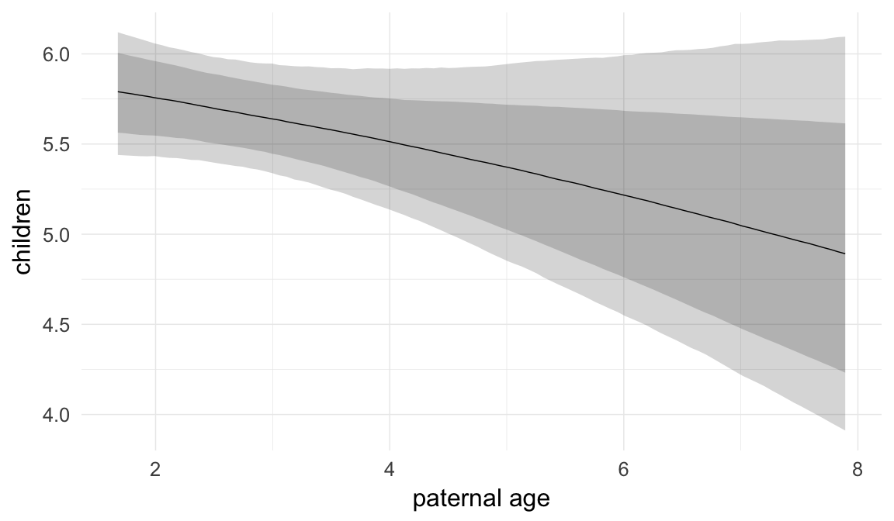
Coefficient plot
Here, we plotted the 95% posterior densities for the unexponentiated model coefficients (b_). The darkly shaded area represents the 50% credibility interval, the dark line represent the posterior mean estimate.
mcmc_areas(as.matrix(model$fit), regex_pars = "b_[^I]", point_est = "mean", prob = 0.50, prob_outer = 0.95) + ggtitle("Posterior densities with means and 50% intervals") + analysis_theme + theme(axis.text = element_text(size = 12), panel.grid = element_blank()) + xlab("Coefficient size")
Diagnostics
These plots were made to diagnose misfit and nonconvergence.
Posterior predictive checks
In posterior predictive checks, we test whether we can approximately reproduce the real data distribution from our model.
brms::pp_check(model, re_formula = NA, type = "dens_overlay")
brms::pp_check(model, re_formula = NA, type = "hist")Rhat
Did the 6 chains converge?
stanplot(model, pars = "^b_[^I]", type = 'rhat')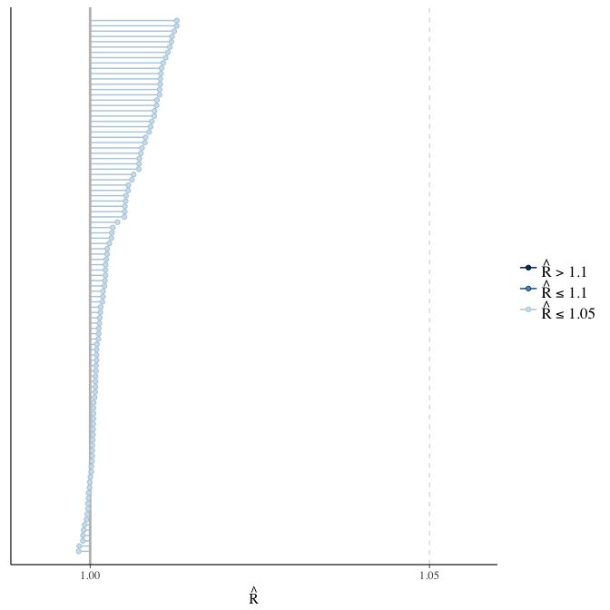
Effective sample size over average sample size
stanplot(model, pars = "^b", type = 'neff_hist')Trace plots
Trace plots are only shown in the case of nonconvergence.
if(any( summary(model)$fixed[,"Rhat"] > 1.1)) { # only do traceplots if not converged
plot(model, N = 3, ask = FALSE)
}File/cluster script name
This model was stored in the file: coefs/rpqa/r13_control_paternal_afb.rds.
Click the following link to see the script used to generate this model:
opts_chunk$set(echo = FALSE)
clusterscript = str_replace(basename(model_filename), "\\.rds",".html")
cat("[Cluster script](" , clusterscript, ")", sep = "")r14: Compare lfe
Most of the previous literature has not used multilevel modelling, but linear group fixed effects (essentially dummy variables on the many thousands of families in the model). We believe our multilevel modelling approach has the advantage of allowing us to examine the effect of including predictors at the level of the family in the same model.
This allows us to
a) appropriately model a zero-inflated outcome such as number of children including those who died young (we’re not aware of a linear group fixed effect approach that handles hurdle or zero-inflated models)
b) examine group-level slopes for paternal age and potentially to examine moderators at the level of the family (though we did not do this)
c) explicitly model confounders at the level of the family (e.g. number of siblings).
Nevertheless, the prevalence of this approach in the literature mandates that we show how our approach compares. We fit this model using the R package “lfe” and the function felm. All covariates that were not estimable in principle were removed (i.e. number of siblings, paternalage.mean).
##
## Call:
## felm(formula = children ~ paternalage + birth_cohort + male + maternalage.factor + paternal_loss + maternal_loss + older_siblings + last_born | idParents, data = model_data)
##
## Residuals:
## Min 1Q Median 3Q Max
## -14.165 -3.140 -0.719 2.817 25.530
##
## Coefficients:
## Estimate Std. Error t value Pr(>|t|)
## paternalage -0.7365 0.1944 -3.79 0.00015 ***
## birth_cohort1675-1680 0.2279 0.1842 1.24 0.21606
## birth_cohort1680-1685 0.2585 0.2263 1.14 0.25332
## birth_cohort1685-1690 0.2069 0.2836 0.73 0.46565
## birth_cohort1690-1695 1.0273 0.3441 2.99 0.00283 **
## birth_cohort1695-1700 1.1908 0.4055 2.94 0.00332 **
## birth_cohort1700-1705 1.0125 0.4661 2.17 0.02984 *
## birth_cohort1705-1710 1.3158 0.5299 2.48 0.01303 *
## birth_cohort1710-1715 0.9449 0.5932 1.59 0.11119
## birth_cohort1715-1720 1.3599 0.6572 2.07 0.03854 *
## birth_cohort1720-1725 1.5347 0.7217 2.13 0.03347 *
## birth_cohort1725-1730 0.9727 0.7865 1.24 0.21621
## birth_cohort1730-1735 1.1231 0.8512 1.32 0.18705
## birth_cohort1735-1740 1.4761 0.9154 1.61 0.10685
## male1 -0.3469 0.0416 -8.33 < 2e-16 ***
## maternalage.factor(14,20] -0.3598 0.1071 -3.36 0.00078 ***
## maternalage.factor(35,50] -0.0990 0.0863 -1.15 0.25105
## paternal_loss[0,1] -1.0886 0.4447 -2.45 0.01438 *
## paternal_loss(1,5] -0.4853 0.4037 -1.20 0.22935
## paternal_loss(5,10] -0.3100 0.3620 -0.86 0.39175
## paternal_loss(10,15] -0.1218 0.3209 -0.38 0.70418
## paternal_loss(15,20] -0.3553 0.2804 -1.27 0.20509
## paternal_loss(20,25] -0.1794 0.2417 -0.74 0.45807
## paternal_loss(25,30] -0.1721 0.2045 -0.84 0.39991
## paternal_loss(30,35] -0.2406 0.1689 -1.42 0.15420
## paternal_loss(35,40] -0.2197 0.1369 -1.60 0.10865
## paternal_loss(40,45] -0.1599 0.1176 -1.36 0.17389
## paternal_lossunclear NA NA NA NA
## maternal_loss[0,1] -1.4286 0.4069 -3.51 0.00045 ***
## maternal_loss(1,5] -0.2695 0.3675 -0.73 0.46338
## maternal_loss(5,10] 0.1955 0.3333 0.59 0.55746
## maternal_loss(10,15] 0.0448 0.2992 0.15 0.88107
## maternal_loss(15,20] 0.1143 0.2634 0.43 0.66431
## maternal_loss(20,25] 0.0105 0.2262 0.05 0.96298
## maternal_loss(25,30] 0.2211 0.1891 1.17 0.24228
## maternal_loss(30,35] 0.1034 0.1527 0.68 0.49864
## maternal_loss(35,40] 0.0936 0.1210 0.77 0.43913
## maternal_loss(40,45] 0.2322 0.1021 2.28 0.02289 *
## maternal_lossunclear NA NA NA NA
## older_siblings1 0.0448 0.0763 0.59 0.55736
## older_siblings2 0.1153 0.0871 1.32 0.18580
## older_siblings3 0.1817 0.0991 1.83 0.06669 .
## older_siblings4 0.2558 0.1121 2.28 0.02246 *
## older_siblings5+ 0.3170 0.1342 2.36 0.01819 *
## last_born1 0.0527 0.0702 0.75 0.45229
## ---
## Signif. codes: 0 '***' 0.001 '**' 0.01 '*' 0.05 '.' 0.1 ' ' 1
##
## Residual standard error: 4.94 on 56476 degrees of freedom
## Multiple R-squared(full model): 0.262 Adjusted R-squared: 0.102
## Multiple R-squared(proj model): 0.00933 Adjusted R-squared: -0.205
## F-statistic(full model):1.64 on 12247 and 56476 DF, p-value: <2e-16
## F-statistic(proj model): 11.8 on 45 and 56476 DF, p-value: <2e-16r15: Using a moderator by region, group-level effects by parish
In this model we attempted allow for regional variation in paternal age effects and attempted to better control residual variation. Our approach was two-fold: to moderate paternal age by region and to add a random effect for the church parish in which the individual was born. However, for the modern Swedish data, we had no geographic data and no regional information, so this model was not fit.
Model summary
Full summary
model_summary = summary(model, use_cache = FALSE, priors = TRUE)
print(model_summary)## Family: hurdle_poisson(log)
## Formula: children ~ paternalage * urban + birth_cohort + male + maternalage.factor + paternalage.mean + paternal_loss + maternal_loss + older_siblings + nr.siblings + last_born + (1 | idParents) + (1 | codeLieuNaiss)
## hu ~ paternalage + urban + birth_cohort + male + maternalage.factor + paternalage.mean + paternal_loss + maternal_loss + older_siblings + nr.siblings + last_born + (1 | idParents) + (1 | codeLieuNaiss) + paternalage:urban
## Data: model_data (Number of observations: 68378)
## Samples: 6 chains, each with iter = 800; warmup = 300; thin = 1;
## total post-warmup samples = 3000
## WAIC: Not computed
##
## Priors:
## b ~ normal(0,5)
## sd ~ student_t(3, 0, 5)
## b_hu ~ normal(0,5)
## sd_hu ~ student_t(3, 0, 10)
##
## Group-Level Effects:
## ~codeLieuNaiss (Number of levels: 152)
## Estimate Est.Error l-95% CI u-95% CI Eff.Sample Rhat
## sd(Intercept) 0.07 0.01 0.05 0.09 855 1.00
## sd(hu_Intercept) 0.23 0.03 0.19 0.30 554 1.01
##
## ~idParents (Number of levels: 12176)
## Estimate Est.Error l-95% CI u-95% CI Eff.Sample Rhat
## sd(Intercept) 0.27 0.00 0.26 0.27 902 1.01
## sd(hu_Intercept) 0.50 0.02 0.47 0.53 875 1.00
##
## Population-Level Effects:
## Estimate Est.Error l-95% CI u-95% CI Eff.Sample
## Intercept 2.13 0.03 2.08 2.19 1105
## paternalage 0.01 0.01 -0.01 0.03 1215
## urban1 -0.04 0.06 -0.15 0.07 1622
## birth_cohort1675M1680 0.01 0.02 -0.02 0.04 1252
## birth_cohort1680M1685 0.03 0.02 0.00 0.07 1050
## birth_cohort1685M1690 0.03 0.02 0.00 0.07 963
## birth_cohort1690M1695 0.03 0.02 0.00 0.06 861
## birth_cohort1695M1700 0.02 0.02 -0.01 0.05 646
## birth_cohort1700M1705 0.00 0.02 -0.03 0.03 612
## birth_cohort1705M1710 -0.02 0.02 -0.06 0.01 559
## birth_cohort1710M1715 -0.03 0.02 -0.06 0.00 595
## birth_cohort1715M1720 -0.06 0.02 -0.09 -0.03 584
## birth_cohort1720M1725 -0.07 0.02 -0.10 -0.03 557
## birth_cohort1725M1730 -0.10 0.02 -0.13 -0.06 503
## birth_cohort1730M1735 -0.08 0.02 -0.11 -0.04 531
## birth_cohort1735M1740 -0.09 0.02 -0.12 -0.06 585
## male1 0.11 0.00 0.10 0.12 3000
## maternalage.factor1420 -0.01 0.01 -0.03 0.01 3000
## maternalage.factor3550 0.00 0.01 -0.01 0.02 3000
## paternalage.mean -0.02 0.01 -0.05 0.00 1561
## paternal_loss01 -0.03 0.02 -0.07 0.01 1680
## paternal_loss15 -0.01 0.02 -0.04 0.02 1074
## paternal_loss510 -0.01 0.01 -0.03 0.02 979
## paternal_loss1015 -0.01 0.01 -0.04 0.02 984
## paternal_loss1520 -0.02 0.01 -0.04 0.01 1068
## paternal_loss2025 -0.02 0.01 -0.04 0.00 955
## paternal_loss2530 -0.01 0.01 -0.03 0.01 1089
## paternal_loss3035 -0.02 0.01 -0.04 0.00 1172
## paternal_loss3540 -0.02 0.01 -0.04 0.00 1461
## paternal_loss4045 0.00 0.01 -0.02 0.02 1937
## paternal_lossunclear -0.04 0.01 -0.07 -0.01 1106
## maternal_loss01 -0.05 0.02 -0.10 0.00 3000
## maternal_loss15 -0.03 0.02 -0.05 0.00 1866
## maternal_loss510 0.01 0.01 -0.01 0.04 1757
## maternal_loss1015 -0.01 0.01 -0.03 0.02 1580
## maternal_loss1520 0.01 0.01 -0.01 0.03 1688
## maternal_loss2025 -0.02 0.01 -0.04 0.01 1675
## maternal_loss2530 -0.01 0.01 -0.03 0.01 1385
## maternal_loss3035 -0.01 0.01 -0.03 0.01 1790
## maternal_loss3540 0.00 0.01 -0.02 0.02 2004
## maternal_loss4045 0.00 0.01 -0.01 0.02 3000
## maternal_lossunclear -0.02 0.01 -0.04 0.01 1333
## older_siblings1 -0.02 0.01 -0.04 0.00 3000
## older_siblings2 -0.03 0.01 -0.04 -0.01 2010
## older_siblings3 -0.03 0.01 -0.05 -0.01 1693
## older_siblings4 -0.02 0.01 -0.04 0.00 1486
## older_siblings5P -0.04 0.01 -0.06 -0.01 1398
## nr.siblings 0.01 0.00 0.00 0.01 1660
## last_born1 0.00 0.01 -0.01 0.02 3000
## paternalage:urban1 0.00 0.01 -0.02 0.01 3000
## hu_Intercept -1.00 0.10 -1.19 -0.82 724
## hu_paternalage 0.12 0.04 0.04 0.20 1130
## hu_urban1 0.53 0.19 0.15 0.92 2087
## hu_birth_cohort1675M1680 0.15 0.07 0.01 0.29 682
## hu_birth_cohort1680M1685 0.40 0.07 0.26 0.54 641
## hu_birth_cohort1685M1690 0.51 0.07 0.37 0.65 589
## hu_birth_cohort1690M1695 0.22 0.07 0.08 0.35 565
## hu_birth_cohort1695M1700 0.24 0.07 0.11 0.37 414
## hu_birth_cohort1700M1705 0.41 0.06 0.28 0.54 478
## hu_birth_cohort1705M1710 0.32 0.06 0.19 0.44 488
## hu_birth_cohort1710M1715 0.60 0.06 0.47 0.72 369
## hu_birth_cohort1715M1720 0.47 0.06 0.34 0.59 378
## hu_birth_cohort1720M1725 0.51 0.06 0.39 0.63 375
## hu_birth_cohort1725M1730 0.85 0.06 0.73 0.97 375
## hu_birth_cohort1730M1735 0.90 0.06 0.78 1.02 386
## hu_birth_cohort1735M1740 0.77 0.06 0.64 0.88 370
## hu_male1 0.43 0.02 0.40 0.47 3000
## hu_maternalage.factor1420 0.05 0.04 -0.02 0.13 3000
## hu_maternalage.factor3550 0.04 0.03 -0.02 0.09 3000
## hu_paternalage.mean -0.15 0.04 -0.23 -0.06 1043
## hu_paternal_loss01 0.46 0.07 0.32 0.59 3000
## hu_paternal_loss15 0.21 0.05 0.11 0.32 1712
## hu_paternal_loss510 0.21 0.05 0.12 0.30 1591
## hu_paternal_loss1015 0.10 0.04 0.02 0.19 1448
## hu_paternal_loss1520 0.23 0.04 0.15 0.30 1445
## hu_paternal_loss2025 0.12 0.04 0.04 0.19 1358
## hu_paternal_loss2530 0.12 0.04 0.05 0.20 1295
## hu_paternal_loss3035 0.10 0.04 0.03 0.17 1278
## hu_paternal_loss3540 0.07 0.04 0.00 0.14 1420
## hu_paternal_loss4045 0.05 0.04 -0.03 0.12 3000
## hu_paternal_lossunclear 0.31 0.04 0.23 0.38 1265
## hu_maternal_loss01 0.96 0.07 0.82 1.10 3000
## hu_maternal_loss15 0.33 0.05 0.23 0.42 3000
## hu_maternal_loss510 0.22 0.04 0.13 0.30 3000
## hu_maternal_loss1015 0.22 0.04 0.14 0.30 3000
## hu_maternal_loss1520 0.17 0.04 0.09 0.25 3000
## hu_maternal_loss2025 0.14 0.04 0.07 0.22 3000
## hu_maternal_loss2530 0.03 0.04 -0.04 0.10 3000
## hu_maternal_loss3035 0.06 0.03 0.00 0.13 3000
## hu_maternal_loss3540 0.06 0.03 -0.01 0.12 3000
## hu_maternal_loss4045 -0.02 0.03 -0.09 0.04 3000
## hu_maternal_lossunclear 0.25 0.04 0.18 0.32 2300
## hu_older_siblings1 -0.06 0.03 -0.12 0.01 3000
## hu_older_siblings2 -0.09 0.04 -0.16 -0.03 1877
## hu_older_siblings3 -0.15 0.04 -0.23 -0.07 1522
## hu_older_siblings4 -0.16 0.04 -0.25 -0.07 1426
## hu_older_siblings5P -0.24 0.05 -0.34 -0.14 1091
## hu_nr.siblings 0.02 0.00 0.01 0.03 1966
## hu_last_born1 0.00 0.03 -0.06 0.05 3000
## hu_paternalage:urban1 0.03 0.02 -0.01 0.08 3000
## Rhat
## Intercept 1.00
## paternalage 1.00
## urban1 1.00
## birth_cohort1675M1680 1.01
## birth_cohort1680M1685 1.01
## birth_cohort1685M1690 1.01
## birth_cohort1690M1695 1.01
## birth_cohort1695M1700 1.01
## birth_cohort1700M1705 1.02
## birth_cohort1705M1710 1.02
## birth_cohort1710M1715 1.01
## birth_cohort1715M1720 1.02
## birth_cohort1720M1725 1.02
## birth_cohort1725M1730 1.02
## birth_cohort1730M1735 1.02
## birth_cohort1735M1740 1.01
## male1 1.00
## maternalage.factor1420 1.00
## maternalage.factor3550 1.00
## paternalage.mean 1.00
## paternal_loss01 1.00
## paternal_loss15 1.00
## paternal_loss510 1.00
## paternal_loss1015 1.00
## paternal_loss1520 1.00
## paternal_loss2025 1.00
## paternal_loss2530 1.00
## paternal_loss3035 1.00
## paternal_loss3540 1.00
## paternal_loss4045 1.00
## paternal_lossunclear 1.00
## maternal_loss01 1.00
## maternal_loss15 1.00
## maternal_loss510 1.00
## maternal_loss1015 1.00
## maternal_loss1520 1.00
## maternal_loss2025 1.01
## maternal_loss2530 1.00
## maternal_loss3035 1.00
## maternal_loss3540 1.00
## maternal_loss4045 1.00
## maternal_lossunclear 1.00
## older_siblings1 1.00
## older_siblings2 1.00
## older_siblings3 1.00
## older_siblings4 1.00
## older_siblings5P 1.00
## nr.siblings 1.00
## last_born1 1.00
## paternalage:urban1 1.00
## hu_Intercept 1.00
## hu_paternalage 1.00
## hu_urban1 1.00
## hu_birth_cohort1675M1680 1.01
## hu_birth_cohort1680M1685 1.01
## hu_birth_cohort1685M1690 1.01
## hu_birth_cohort1690M1695 1.01
## hu_birth_cohort1695M1700 1.01
## hu_birth_cohort1700M1705 1.01
## hu_birth_cohort1705M1710 1.01
## hu_birth_cohort1710M1715 1.01
## hu_birth_cohort1715M1720 1.01
## hu_birth_cohort1720M1725 1.01
## hu_birth_cohort1725M1730 1.01
## hu_birth_cohort1730M1735 1.01
## hu_birth_cohort1735M1740 1.01
## hu_male1 1.00
## hu_maternalage.factor1420 1.00
## hu_maternalage.factor3550 1.00
## hu_paternalage.mean 1.00
## hu_paternal_loss01 1.00
## hu_paternal_loss15 1.00
## hu_paternal_loss510 1.00
## hu_paternal_loss1015 1.00
## hu_paternal_loss1520 1.00
## hu_paternal_loss2025 1.00
## hu_paternal_loss2530 1.00
## hu_paternal_loss3035 1.00
## hu_paternal_loss3540 1.00
## hu_paternal_loss4045 1.00
## hu_paternal_lossunclear 1.00
## hu_maternal_loss01 1.00
## hu_maternal_loss15 1.00
## hu_maternal_loss510 1.00
## hu_maternal_loss1015 1.00
## hu_maternal_loss1520 1.00
## hu_maternal_loss2025 1.00
## hu_maternal_loss2530 1.00
## hu_maternal_loss3035 1.00
## hu_maternal_loss3540 1.00
## hu_maternal_loss4045 1.00
## hu_maternal_lossunclear 1.00
## hu_older_siblings1 1.00
## hu_older_siblings2 1.00
## hu_older_siblings3 1.00
## hu_older_siblings4 1.00
## hu_older_siblings5P 1.00
## hu_nr.siblings 1.00
## hu_last_born1 1.00
## hu_paternalage:urban1 1.00
##
## Samples were drawn using sampling(NUTS). For each parameter, Eff.Sample
## is a crude measure of effective sample size, and Rhat is the potential
## scale reduction factor on split chains (at convergence, Rhat = 1).Table of fixed effects
Estimates are exp(b). When they are referring to the hurdle (hu) component, or a dichotomous outcome, they are odds ratios, when they are referring to a Poisson component, they are hazard ratios. In both cases, they are presented with 95% credibility intervals. To see the effects on the response scale (probability or number of children), consult the marginal effect plots.
fixed_eff = data.frame(model_summary$fixed, check.names = F)
fixed_eff$Est.Error = fixed_eff$Eff.Sample = fixed_eff$Rhat = NULL
fixed_eff$`Odds/hazard ratio` = exp(fixed_eff$Estimate)
fixed_eff$`OR/HR low 95%` = exp(fixed_eff$`l-95% CI`)
fixed_eff$`OR/HR high 95%` = exp(fixed_eff$`u-95% CI`)
fixed_eff = fixed_eff %>% select(`Odds/hazard ratio`, `OR/HR low 95%`, `OR/HR high 95%`)
pander::pander(fixed_eff)| Odds/hazard ratio | OR/HR low 95% | OR/HR high 95% | |
|---|---|---|---|
| Intercept | 8.45 | 7.979 | 8.97 |
| paternalage | 1.01 | 0.9896 | 1.031 |
| urban1 | 0.9637 | 0.8602 | 1.075 |
| birth_cohort1675M1680 | 1.015 | 0.9841 | 1.046 |
| birth_cohort1680M1685 | 1.035 | 1.002 | 1.067 |
| birth_cohort1685M1690 | 1.035 | 1 | 1.069 |
| birth_cohort1690M1695 | 1.032 | 0.999 | 1.066 |
| birth_cohort1695M1700 | 1.02 | 0.9879 | 1.053 |
| birth_cohort1700M1705 | 1.001 | 0.9691 | 1.034 |
| birth_cohort1705M1710 | 0.978 | 0.9464 | 1.009 |
| birth_cohort1710M1715 | 0.969 | 0.9381 | 1 |
| birth_cohort1715M1720 | 0.9415 | 0.9124 | 0.9712 |
| birth_cohort1720M1725 | 0.9353 | 0.906 | 0.966 |
| birth_cohort1725M1730 | 0.9086 | 0.88 | 0.9395 |
| birth_cohort1730M1735 | 0.9256 | 0.8962 | 0.956 |
| birth_cohort1735M1740 | 0.9156 | 0.8866 | 0.9456 |
| male1 | 1.116 | 1.107 | 1.125 |
| maternalage.factor1420 | 0.9937 | 0.9749 | 1.014 |
| maternalage.factor3550 | 1.004 | 0.9884 | 1.02 |
| paternalage.mean | 0.9757 | 0.954 | 0.9981 |
| paternal_loss01 | 0.968 | 0.9293 | 1.008 |
| paternal_loss15 | 0.9885 | 0.9579 | 1.02 |
| paternal_loss510 | 0.9943 | 0.9659 | 1.021 |
| paternal_loss1015 | 0.9909 | 0.9653 | 1.017 |
| paternal_loss1520 | 0.9811 | 0.9576 | 1.005 |
| paternal_loss2025 | 0.9826 | 0.9608 | 1.005 |
| paternal_loss2530 | 0.991 | 0.9711 | 1.013 |
| paternal_loss3035 | 0.98 | 0.9602 | 0.9995 |
| paternal_loss3540 | 0.9812 | 0.9627 | 1 |
| paternal_loss4045 | 0.9985 | 0.9803 | 1.018 |
| paternal_lossunclear | 0.9613 | 0.9367 | 0.9863 |
| maternal_loss01 | 0.9519 | 0.9089 | 0.9976 |
| maternal_loss15 | 0.9753 | 0.9474 | 1.004 |
| maternal_loss510 | 1.013 | 0.9865 | 1.039 |
| maternal_loss1015 | 0.9917 | 0.9667 | 1.016 |
| maternal_loss1520 | 1.009 | 0.9856 | 1.033 |
| maternal_loss2025 | 0.9844 | 0.9615 | 1.007 |
| maternal_loss2530 | 0.9903 | 0.97 | 1.011 |
| maternal_loss3035 | 0.9939 | 0.9752 | 1.013 |
| maternal_loss3540 | 0.9999 | 0.9822 | 1.017 |
| maternal_loss4045 | 1.003 | 0.9868 | 1.02 |
| maternal_lossunclear | 0.9834 | 0.9578 | 1.008 |
| older_siblings1 | 0.9799 | 0.9645 | 0.9952 |
| older_siblings2 | 0.9743 | 0.9569 | 0.9913 |
| older_siblings3 | 0.967 | 0.9484 | 0.9861 |
| older_siblings4 | 0.9788 | 0.9576 | 1.001 |
| older_siblings5P | 0.9631 | 0.9385 | 0.9883 |
| nr.siblings | 1.006 | 1.003 | 1.008 |
| last_born1 | 1.002 | 0.9874 | 1.017 |
| paternalage:urban1 | 0.9977 | 0.9835 | 1.012 |
| hu_Intercept | 0.3662 | 0.3043 | 0.4409 |
| hu_paternalage | 1.125 | 1.041 | 1.218 |
| hu_urban1 | 1.692 | 1.164 | 2.514 |
| hu_birth_cohort1675M1680 | 1.165 | 1.014 | 1.336 |
| hu_birth_cohort1680M1685 | 1.496 | 1.301 | 1.709 |
| hu_birth_cohort1685M1690 | 1.662 | 1.454 | 1.908 |
| hu_birth_cohort1690M1695 | 1.241 | 1.086 | 1.422 |
| hu_birth_cohort1695M1700 | 1.27 | 1.118 | 1.444 |
| hu_birth_cohort1700M1705 | 1.504 | 1.323 | 1.709 |
| hu_birth_cohort1705M1710 | 1.377 | 1.212 | 1.557 |
| hu_birth_cohort1710M1715 | 1.823 | 1.608 | 2.061 |
| hu_birth_cohort1715M1720 | 1.6 | 1.409 | 1.802 |
| hu_birth_cohort1720M1725 | 1.666 | 1.473 | 1.878 |
| hu_birth_cohort1725M1730 | 2.348 | 2.082 | 2.644 |
| hu_birth_cohort1730M1735 | 2.468 | 2.188 | 2.778 |
| hu_birth_cohort1735M1740 | 2.15 | 1.906 | 2.418 |
| hu_male1 | 1.542 | 1.49 | 1.595 |
| hu_maternalage.factor1420 | 1.053 | 0.9789 | 1.135 |
| hu_maternalage.factor3550 | 1.039 | 0.9786 | 1.099 |
| hu_paternalage.mean | 0.864 | 0.796 | 0.9376 |
| hu_paternal_loss01 | 1.578 | 1.378 | 1.812 |
| hu_paternal_loss15 | 1.236 | 1.117 | 1.371 |
| hu_paternal_loss510 | 1.237 | 1.132 | 1.355 |
| hu_paternal_loss1015 | 1.109 | 1.021 | 1.204 |
| hu_paternal_loss1520 | 1.253 | 1.156 | 1.356 |
| hu_paternal_loss2025 | 1.126 | 1.046 | 1.212 |
| hu_paternal_loss2530 | 1.133 | 1.052 | 1.221 |
| hu_paternal_loss3035 | 1.108 | 1.031 | 1.189 |
| hu_paternal_loss3540 | 1.071 | 0.999 | 1.151 |
| hu_paternal_loss4045 | 1.048 | 0.9735 | 1.132 |
| hu_paternal_lossunclear | 1.363 | 1.264 | 1.469 |
| hu_maternal_loss01 | 2.62 | 2.274 | 3.007 |
| hu_maternal_loss15 | 1.385 | 1.254 | 1.529 |
| hu_maternal_loss510 | 1.244 | 1.144 | 1.354 |
| hu_maternal_loss1015 | 1.241 | 1.145 | 1.345 |
| hu_maternal_loss1520 | 1.182 | 1.091 | 1.279 |
| hu_maternal_loss2025 | 1.154 | 1.069 | 1.247 |
| hu_maternal_loss2530 | 1.029 | 0.9568 | 1.108 |
| hu_maternal_loss3035 | 1.063 | 0.9968 | 1.137 |
| hu_maternal_loss3540 | 1.06 | 0.9937 | 1.132 |
| hu_maternal_loss4045 | 0.9761 | 0.9152 | 1.043 |
| hu_maternal_lossunclear | 1.287 | 1.197 | 1.381 |
| hu_older_siblings1 | 0.9448 | 0.8891 | 1.006 |
| hu_older_siblings2 | 0.9109 | 0.8493 | 0.9742 |
| hu_older_siblings3 | 0.8615 | 0.7973 | 0.9332 |
| hu_older_siblings4 | 0.8501 | 0.7774 | 0.9285 |
| hu_older_siblings5P | 0.7882 | 0.7121 | 0.8727 |
| hu_nr.siblings | 1.02 | 1.013 | 1.028 |
| hu_last_born1 | 0.9955 | 0.9403 | 1.053 |
| hu_paternalage:urban1 | 1.033 | 0.9862 | 1.082 |
Paternal age effect
pander::pander(paternal_age_10y_effect(model))| effect | median_estimate | ci_95 | ci_80 |
|---|---|---|---|
| estimate father 25y | 6.21 | [5.89;6.51] | [5.99;6.42] |
| estimate father 35y | 6.07 | [5.72;6.44] | [5.84;6.31] |
| percentage change | -2.17 | [-5.16;0.79] | [-4.09;-0.24] |
| OR/IRR | 1.01 | [0.99;1.03] | [1;1.02] |
| OR hurdle | 1.12 | [1.04;1.22] | [1.07;1.19] |
Marginal effect plots
In these marginal effect plots, we set all predictors except the one shown on the X axis to their mean and in the case of factors to their reference level. We then plot the estimated association between the X axis predictor and the outcome on the response scale (e.g. probability of survival/marriage or number of children).
plot.brmsMarginalEffects_shades(
x = marginal_effects(model, re_formula = NA, probs = c(0.025,0.975)),
y = marginal_effects(model, re_formula = NA, probs = c(0.1,0.9)),
ask = FALSE) 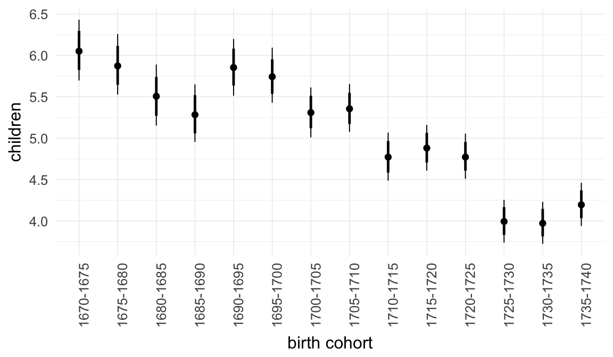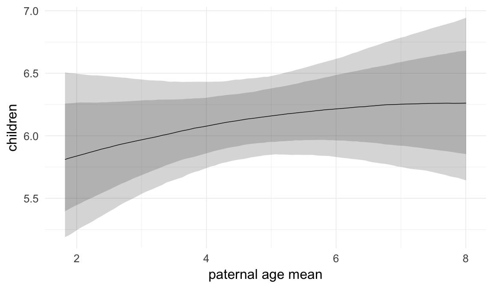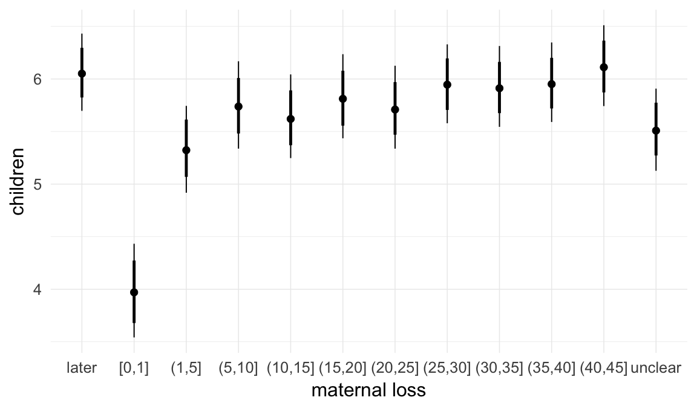
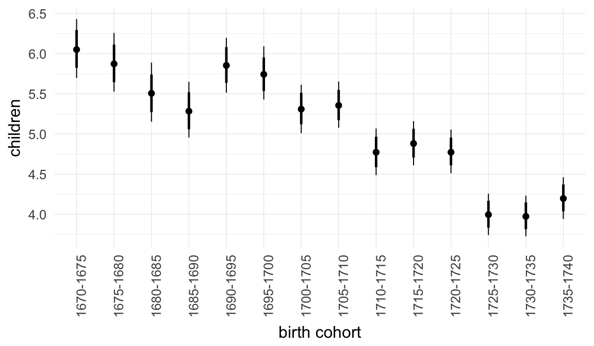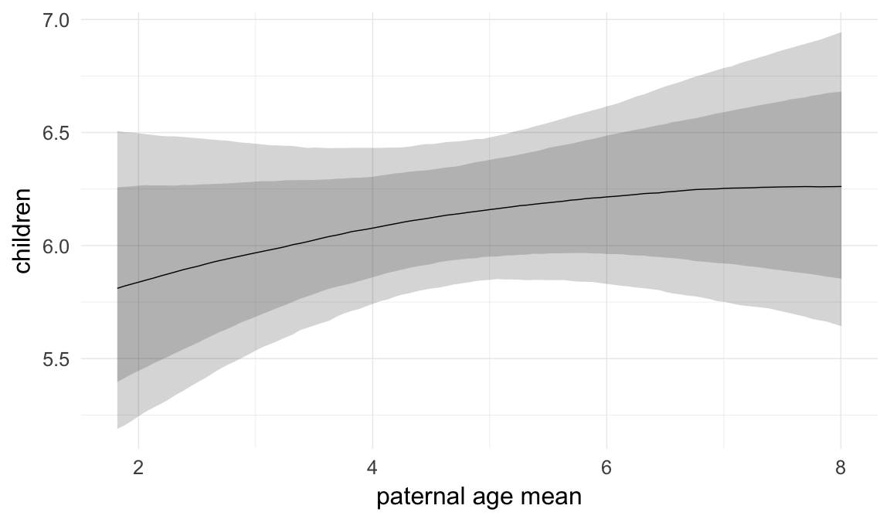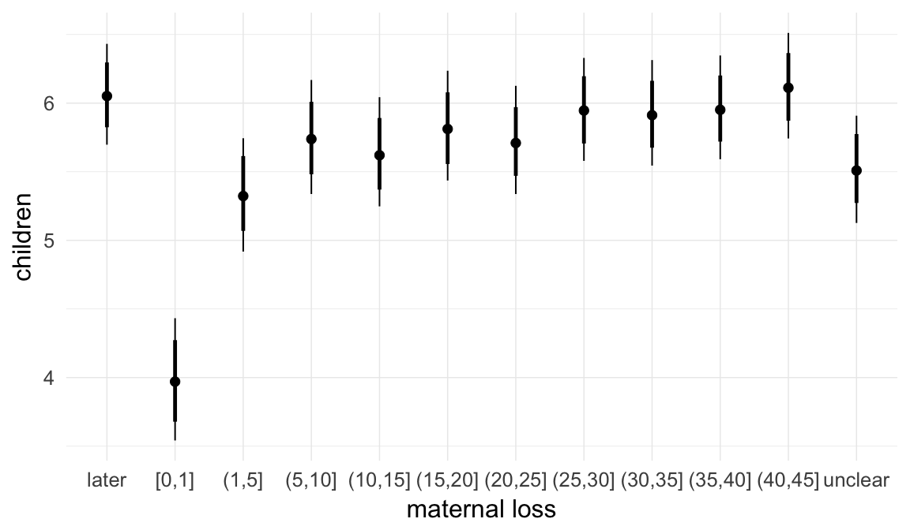
Coefficient plot
Here, we plotted the 95% posterior densities for the unexponentiated model coefficients (b_). The darkly shaded area represents the 50% credibility interval, the dark line represent the posterior mean estimate.
mcmc_areas(as.matrix(model$fit), regex_pars = "b_[^I]", point_est = "mean", prob = 0.50, prob_outer = 0.95) + ggtitle("Posterior densities with means and 50% intervals") + analysis_theme + theme(axis.text = element_text(size = 12), panel.grid = element_blank()) + xlab("Coefficient size")
Diagnostics
These plots were made to diagnose misfit and nonconvergence.
Posterior predictive checks
In posterior predictive checks, we test whether we can approximately reproduce the real data distribution from our model.
brms::pp_check(model, re_formula = NA, type = "dens_overlay")
brms::pp_check(model, re_formula = NA, type = "hist")Rhat
Did the 6 chains converge?
stanplot(model, pars = "^b_[^I]", type = 'rhat')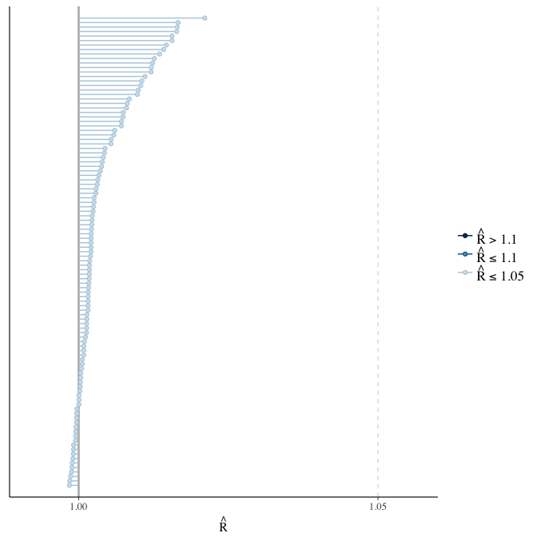
Effective sample size over average sample size
stanplot(model, pars = "^b", type = 'neff_hist')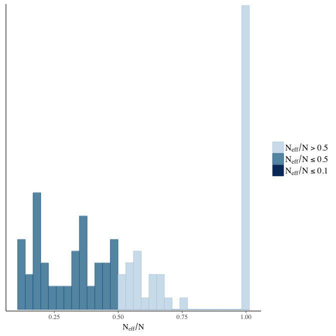
Trace plots
Trace plots are only shown in the case of nonconvergence.
if(any( summary(model)$fixed[,"Rhat"] > 1.1)) { # only do traceplots if not converged
plot(model, N = 3, ask = FALSE)
}File/cluster script name
This model was stored in the file: coefs/rpqa/r15_region_moderator_parish_ranef.rds.
Click the following link to see the script used to generate this model:
opts_chunk$set(echo = FALSE)
clusterscript = str_replace(basename(model_filename), "\\.rds",".html")
cat("[Cluster script](" , clusterscript, ")", sep = "")r16: Restrict to Skellefteå
Only in the DDB (historical Swedish data), parishes in some of the regions were still unlinked. This means that individuals could occur in more than one parish and not be linked. However, the region of Skellefteå was fully linked. Here, we test what happens when we restrict our dataset to Skellefteå.
r17: Simulating Down syndrome cases
- We assume that 4 in 1000 births are children with Down syndrome (four times the actual rate).
- We randomly excluded 33% of all children who had a mother older than 40 and had no children (many times the actual rate at that age).
Model summary
Full summary
model_summary = summary(model, use_cache = FALSE, priors = TRUE)
print(model_summary)## Family: hurdle_poisson(log)
## Formula: children ~ paternalage + birth_cohort + male + maternalage.factor + paternalage.mean + paternal_loss + maternal_loss + older_siblings + nr.siblings + last_born + (1 | idParents)
## hu ~ paternalage + birth_cohort + male + maternalage.factor + paternalage.mean + paternal_loss + maternal_loss + older_siblings + nr.siblings + last_born + (1 | idParents)
## Data: model_data (Number of observations: 67848)
## Samples: 6 chains, each with iter = 800; warmup = 300; thin = 1;
## total post-warmup samples = 3000
## WAIC: Not computed
##
## Priors:
## b ~ normal(0,5)
## sd ~ student_t(3, 0, 5)
## b_hu ~ normal(0,5)
## sd_hu ~ student_t(3, 0, 10)
##
## Group-Level Effects:
## ~idParents (Number of levels: 12188)
## Estimate Est.Error l-95% CI u-95% CI Eff.Sample Rhat
## sd(Intercept) 0.27 0.00 0.27 0.28 1037 1
## sd(hu_Intercept) 0.63 0.01 0.60 0.66 1217 1
##
## Population-Level Effects:
## Estimate Est.Error l-95% CI u-95% CI Eff.Sample
## Intercept 2.12 0.03 2.06 2.17 1230
## paternalage 0.01 0.01 -0.01 0.03 1828
## birth_cohort1675M1680 0.02 0.02 -0.01 0.05 1307
## birth_cohort1680M1685 0.05 0.02 0.02 0.08 1201
## birth_cohort1685M1690 0.05 0.02 0.02 0.08 1062
## birth_cohort1690M1695 0.05 0.02 0.02 0.08 848
## birth_cohort1695M1700 0.03 0.02 0.00 0.07 789
## birth_cohort1700M1705 0.02 0.02 -0.01 0.05 788
## birth_cohort1705M1710 0.00 0.02 -0.03 0.03 747
## birth_cohort1710M1715 -0.01 0.02 -0.04 0.02 745
## birth_cohort1715M1720 -0.04 0.02 -0.07 -0.01 771
## birth_cohort1720M1725 -0.04 0.02 -0.07 -0.01 711
## birth_cohort1725M1730 -0.07 0.02 -0.10 -0.03 736
## birth_cohort1730M1735 -0.05 0.02 -0.08 -0.02 707
## birth_cohort1735M1740 -0.06 0.02 -0.09 -0.03 713
## male1 0.11 0.00 0.10 0.12 3000
## maternalage.factor1420 -0.01 0.01 -0.03 0.01 3000
## maternalage.factor3550 0.00 0.01 -0.01 0.02 3000
## paternalage.mean -0.03 0.01 -0.05 -0.01 1860
## paternal_loss01 -0.04 0.02 -0.08 0.00 2153
## paternal_loss15 -0.02 0.02 -0.05 0.01 1409
## paternal_loss510 -0.01 0.01 -0.04 0.02 1279
## paternal_loss1015 -0.02 0.01 -0.04 0.01 1147
## paternal_loss1520 -0.02 0.01 -0.05 0.00 1318
## paternal_loss2025 -0.02 0.01 -0.04 0.00 1327
## paternal_loss2530 -0.01 0.01 -0.03 0.01 1470
## paternal_loss3035 -0.02 0.01 -0.04 0.00 1646
## paternal_loss3540 -0.02 0.01 -0.04 0.00 1759
## paternal_loss4045 0.00 0.01 -0.02 0.02 3000
## paternal_lossunclear -0.05 0.01 -0.08 -0.03 1156
## maternal_loss01 -0.05 0.02 -0.10 0.00 3000
## maternal_loss15 -0.03 0.01 -0.06 0.00 2172
## maternal_loss510 0.01 0.01 -0.01 0.04 1590
## maternal_loss1015 -0.01 0.01 -0.03 0.02 1601
## maternal_loss1520 0.01 0.01 -0.02 0.03 1665
## maternal_loss2025 -0.02 0.01 -0.04 0.00 1839
## maternal_loss2530 -0.01 0.01 -0.03 0.01 2067
## maternal_loss3035 -0.01 0.01 -0.03 0.01 2277
## maternal_loss3540 0.00 0.01 -0.02 0.02 2270
## maternal_loss4045 0.00 0.01 -0.01 0.02 3000
## maternal_lossunclear -0.02 0.01 -0.04 0.00 1356
## older_siblings1 -0.02 0.01 -0.04 -0.01 3000
## older_siblings2 -0.03 0.01 -0.04 -0.01 2181
## older_siblings3 -0.03 0.01 -0.05 -0.01 1837
## older_siblings4 -0.02 0.01 -0.04 0.00 1945
## older_siblings5P -0.04 0.01 -0.06 -0.01 1897
## nr.siblings 0.01 0.00 0.00 0.01 2009
## last_born1 0.00 0.01 -0.01 0.02 3000
## hu_Intercept -0.83 0.09 -1.01 -0.65 856
## hu_paternalage 0.01 0.04 -0.07 0.09 1438
## hu_birth_cohort1675M1680 0.08 0.07 -0.06 0.21 894
## hu_birth_cohort1680M1685 0.22 0.07 0.09 0.36 832
## hu_birth_cohort1685M1690 0.34 0.07 0.21 0.48 809
## hu_birth_cohort1690M1695 0.08 0.07 -0.05 0.21 740
## hu_birth_cohort1695M1700 0.10 0.06 -0.03 0.23 676
## hu_birth_cohort1700M1705 0.26 0.06 0.13 0.38 633
## hu_birth_cohort1705M1710 0.16 0.06 0.04 0.29 579
## hu_birth_cohort1710M1715 0.43 0.06 0.32 0.56 655
## hu_birth_cohort1715M1720 0.28 0.06 0.16 0.40 607
## hu_birth_cohort1720M1725 0.30 0.06 0.19 0.42 579
## hu_birth_cohort1725M1730 0.66 0.06 0.54 0.78 586
## hu_birth_cohort1730M1735 0.73 0.06 0.61 0.84 623
## hu_birth_cohort1735M1740 0.56 0.06 0.44 0.67 575
## hu_male1 0.44 0.02 0.40 0.47 3000
## hu_maternalage.factor1420 0.03 0.04 -0.04 0.11 3000
## hu_maternalage.factor3550 -0.02 0.03 -0.08 0.04 3000
## hu_paternalage.mean -0.02 0.04 -0.11 0.07 1483
## hu_paternal_loss01 0.60 0.07 0.45 0.74 3000
## hu_paternal_loss15 0.33 0.06 0.23 0.44 2019
## hu_paternal_loss510 0.31 0.05 0.21 0.40 1536
## hu_paternal_loss1015 0.17 0.04 0.08 0.26 1478
## hu_paternal_loss1520 0.29 0.04 0.21 0.37 1468
## hu_paternal_loss2025 0.19 0.04 0.11 0.26 1520
## hu_paternal_loss2530 0.18 0.04 0.11 0.26 1402
## hu_paternal_loss3035 0.14 0.04 0.07 0.22 1489
## hu_paternal_loss3540 0.11 0.04 0.03 0.18 1810
## hu_paternal_loss4045 0.07 0.04 -0.01 0.15 3000
## hu_paternal_lossunclear 0.38 0.04 0.30 0.46 1640
## hu_maternal_loss01 1.08 0.07 0.94 1.22 3000
## hu_maternal_loss15 0.41 0.05 0.31 0.51 3000
## hu_maternal_loss510 0.28 0.04 0.19 0.36 3000
## hu_maternal_loss1015 0.25 0.04 0.17 0.34 3000
## hu_maternal_loss1520 0.19 0.04 0.10 0.27 3000
## hu_maternal_loss2025 0.17 0.04 0.09 0.24 3000
## hu_maternal_loss2530 0.04 0.04 -0.03 0.12 3000
## hu_maternal_loss3035 0.09 0.04 0.02 0.16 3000
## hu_maternal_loss3540 0.09 0.03 0.02 0.15 3000
## hu_maternal_loss4045 -0.01 0.03 -0.08 0.06 3000
## hu_maternal_lossunclear 0.23 0.04 0.15 0.30 2185
## hu_older_siblings1 -0.04 0.03 -0.10 0.01 3000
## hu_older_siblings2 -0.07 0.03 -0.14 0.00 1918
## hu_older_siblings3 -0.11 0.04 -0.19 -0.03 1622
## hu_older_siblings4 -0.11 0.04 -0.20 -0.03 1561
## hu_older_siblings5P -0.15 0.05 -0.25 -0.05 1471
## hu_nr.siblings 0.01 0.00 0.00 0.02 2096
## hu_last_born1 -0.01 0.03 -0.07 0.05 3000
## Rhat
## Intercept 1.00
## paternalage 1.00
## birth_cohort1675M1680 1.00
## birth_cohort1680M1685 1.00
## birth_cohort1685M1690 1.00
## birth_cohort1690M1695 1.00
## birth_cohort1695M1700 1.00
## birth_cohort1700M1705 1.00
## birth_cohort1705M1710 1.00
## birth_cohort1710M1715 1.00
## birth_cohort1715M1720 1.00
## birth_cohort1720M1725 1.00
## birth_cohort1725M1730 1.00
## birth_cohort1730M1735 1.00
## birth_cohort1735M1740 1.00
## male1 1.00
## maternalage.factor1420 1.00
## maternalage.factor3550 1.00
## paternalage.mean 1.00
## paternal_loss01 1.00
## paternal_loss15 1.00
## paternal_loss510 1.00
## paternal_loss1015 1.00
## paternal_loss1520 1.00
## paternal_loss2025 1.00
## paternal_loss2530 1.00
## paternal_loss3035 1.00
## paternal_loss3540 1.00
## paternal_loss4045 1.00
## paternal_lossunclear 1.00
## maternal_loss01 1.00
## maternal_loss15 1.00
## maternal_loss510 1.00
## maternal_loss1015 1.00
## maternal_loss1520 1.00
## maternal_loss2025 1.00
## maternal_loss2530 1.00
## maternal_loss3035 1.00
## maternal_loss3540 1.00
## maternal_loss4045 1.00
## maternal_lossunclear 1.00
## older_siblings1 1.00
## older_siblings2 1.00
## older_siblings3 1.00
## older_siblings4 1.00
## older_siblings5P 1.00
## nr.siblings 1.00
## last_born1 1.00
## hu_Intercept 1.01
## hu_paternalage 1.00
## hu_birth_cohort1675M1680 1.00
## hu_birth_cohort1680M1685 1.00
## hu_birth_cohort1685M1690 1.00
## hu_birth_cohort1690M1695 1.00
## hu_birth_cohort1695M1700 1.00
## hu_birth_cohort1700M1705 1.00
## hu_birth_cohort1705M1710 1.01
## hu_birth_cohort1710M1715 1.00
## hu_birth_cohort1715M1720 1.00
## hu_birth_cohort1720M1725 1.00
## hu_birth_cohort1725M1730 1.00
## hu_birth_cohort1730M1735 1.01
## hu_birth_cohort1735M1740 1.01
## hu_male1 1.00
## hu_maternalage.factor1420 1.00
## hu_maternalage.factor3550 1.00
## hu_paternalage.mean 1.00
## hu_paternal_loss01 1.00
## hu_paternal_loss15 1.00
## hu_paternal_loss510 1.00
## hu_paternal_loss1015 1.00
## hu_paternal_loss1520 1.00
## hu_paternal_loss2025 1.00
## hu_paternal_loss2530 1.00
## hu_paternal_loss3035 1.00
## hu_paternal_loss3540 1.00
## hu_paternal_loss4045 1.00
## hu_paternal_lossunclear 1.00
## hu_maternal_loss01 1.00
## hu_maternal_loss15 1.00
## hu_maternal_loss510 1.00
## hu_maternal_loss1015 1.00
## hu_maternal_loss1520 1.00
## hu_maternal_loss2025 1.00
## hu_maternal_loss2530 1.00
## hu_maternal_loss3035 1.00
## hu_maternal_loss3540 1.00
## hu_maternal_loss4045 1.00
## hu_maternal_lossunclear 1.00
## hu_older_siblings1 1.00
## hu_older_siblings2 1.00
## hu_older_siblings3 1.00
## hu_older_siblings4 1.00
## hu_older_siblings5P 1.00
## hu_nr.siblings 1.00
## hu_last_born1 1.00
##
## Samples were drawn using sampling(NUTS). For each parameter, Eff.Sample
## is a crude measure of effective sample size, and Rhat is the potential
## scale reduction factor on split chains (at convergence, Rhat = 1).Table of fixed effects
Estimates are exp(b). When they are referring to the hurdle (hu) component, or a dichotomous outcome, they are odds ratios, when they are referring to a Poisson component, they are hazard ratios. In both cases, they are presented with 95% credibility intervals. To see the effects on the response scale (probability or number of children), consult the marginal effect plots.
fixed_eff = data.frame(model_summary$fixed, check.names = F)
fixed_eff$Est.Error = fixed_eff$Eff.Sample = fixed_eff$Rhat = NULL
fixed_eff$`Odds/hazard ratio` = exp(fixed_eff$Estimate)
fixed_eff$`OR/HR low 95%` = exp(fixed_eff$`l-95% CI`)
fixed_eff$`OR/HR high 95%` = exp(fixed_eff$`u-95% CI`)
fixed_eff = fixed_eff %>% select(`Odds/hazard ratio`, `OR/HR low 95%`, `OR/HR high 95%`)
pander::pander(fixed_eff)| Odds/hazard ratio | OR/HR low 95% | OR/HR high 95% | |
|---|---|---|---|
| Intercept | 8.304 | 7.866 | 8.741 |
| paternalage | 1.011 | 0.9893 | 1.032 |
| birth_cohort1675M1680 | 1.021 | 0.9911 | 1.052 |
| birth_cohort1680M1685 | 1.049 | 1.017 | 1.081 |
| birth_cohort1685M1690 | 1.052 | 1.019 | 1.086 |
| birth_cohort1690M1695 | 1.049 | 1.017 | 1.083 |
| birth_cohort1695M1700 | 1.036 | 1.005 | 1.07 |
| birth_cohort1700M1705 | 1.021 | 0.9904 | 1.053 |
| birth_cohort1705M1710 | 0.9982 | 0.9674 | 1.031 |
| birth_cohort1710M1715 | 0.9877 | 0.9584 | 1.021 |
| birth_cohort1715M1720 | 0.9605 | 0.932 | 0.9899 |
| birth_cohort1720M1725 | 0.9584 | 0.9296 | 0.9882 |
| birth_cohort1725M1730 | 0.9361 | 0.9082 | 0.9657 |
| birth_cohort1730M1735 | 0.9517 | 0.9237 | 0.982 |
| birth_cohort1735M1740 | 0.9412 | 0.9133 | 0.9702 |
| male1 | 1.117 | 1.108 | 1.127 |
| maternalage.factor1420 | 0.9918 | 0.9738 | 1.011 |
| maternalage.factor3550 | 1.001 | 0.9858 | 1.018 |
| paternalage.mean | 0.9702 | 0.948 | 0.9935 |
| paternal_loss01 | 0.9631 | 0.9243 | 1.003 |
| paternal_loss15 | 0.9834 | 0.9523 | 1.015 |
| paternal_loss510 | 0.9908 | 0.9623 | 1.019 |
| paternal_loss1015 | 0.9847 | 0.9597 | 1.01 |
| paternal_loss1520 | 0.9765 | 0.9532 | 1 |
| paternal_loss2025 | 0.9779 | 0.9565 | 0.9998 |
| paternal_loss2530 | 0.9876 | 0.9674 | 1.008 |
| paternal_loss3035 | 0.9778 | 0.9583 | 0.9969 |
| paternal_loss3540 | 0.9783 | 0.9605 | 0.9978 |
| paternal_loss4045 | 0.9969 | 0.9776 | 1.016 |
| paternal_lossunclear | 0.9479 | 0.9251 | 0.9719 |
| maternal_loss01 | 0.9494 | 0.905 | 0.9951 |
| maternal_loss15 | 0.9725 | 0.9447 | 1 |
| maternal_loss510 | 1.012 | 0.9861 | 1.039 |
| maternal_loss1015 | 0.9916 | 0.968 | 1.016 |
| maternal_loss1520 | 1.006 | 0.9819 | 1.031 |
| maternal_loss2025 | 0.9805 | 0.9575 | 1.003 |
| maternal_loss2530 | 0.9869 | 0.9662 | 1.007 |
| maternal_loss3035 | 0.9917 | 0.9735 | 1.011 |
| maternal_loss3540 | 1.001 | 0.9837 | 1.018 |
| maternal_loss4045 | 1.004 | 0.9872 | 1.021 |
| maternal_lossunclear | 0.9804 | 0.9564 | 1.005 |
| older_siblings1 | 0.9784 | 0.9629 | 0.9934 |
| older_siblings2 | 0.9745 | 0.9576 | 0.9915 |
| older_siblings3 | 0.9666 | 0.9471 | 0.9862 |
| older_siblings4 | 0.9776 | 0.956 | 1 |
| older_siblings5P | 0.9625 | 0.9373 | 0.9889 |
| nr.siblings | 1.007 | 1.005 | 1.01 |
| last_born1 | 1.002 | 0.9874 | 1.016 |
| hu_Intercept | 0.437 | 0.3631 | 0.5243 |
| hu_paternalage | 1.005 | 0.9289 | 1.091 |
| hu_birth_cohort1675M1680 | 1.079 | 0.9422 | 1.237 |
| hu_birth_cohort1680M1685 | 1.25 | 1.092 | 1.431 |
| hu_birth_cohort1685M1690 | 1.406 | 1.228 | 1.613 |
| hu_birth_cohort1690M1695 | 1.086 | 0.9512 | 1.238 |
| hu_birth_cohort1695M1700 | 1.102 | 0.9724 | 1.253 |
| hu_birth_cohort1700M1705 | 1.294 | 1.144 | 1.468 |
| hu_birth_cohort1705M1710 | 1.176 | 1.04 | 1.335 |
| hu_birth_cohort1710M1715 | 1.541 | 1.371 | 1.742 |
| hu_birth_cohort1715M1720 | 1.326 | 1.174 | 1.497 |
| hu_birth_cohort1720M1725 | 1.353 | 1.205 | 1.521 |
| hu_birth_cohort1725M1730 | 1.933 | 1.713 | 2.173 |
| hu_birth_cohort1730M1735 | 2.066 | 1.839 | 2.316 |
| hu_birth_cohort1735M1740 | 1.747 | 1.56 | 1.955 |
| hu_male1 | 1.545 | 1.498 | 1.594 |
| hu_maternalage.factor1420 | 1.033 | 0.9589 | 1.116 |
| hu_maternalage.factor3550 | 0.9807 | 0.9252 | 1.041 |
| hu_paternalage.mean | 0.9782 | 0.8977 | 1.068 |
| hu_paternal_loss01 | 1.816 | 1.568 | 2.097 |
| hu_paternal_loss15 | 1.397 | 1.253 | 1.558 |
| hu_paternal_loss510 | 1.36 | 1.235 | 1.492 |
| hu_paternal_loss1015 | 1.187 | 1.085 | 1.292 |
| hu_paternal_loss1520 | 1.335 | 1.232 | 1.451 |
| hu_paternal_loss2025 | 1.205 | 1.115 | 1.303 |
| hu_paternal_loss2530 | 1.203 | 1.112 | 1.296 |
| hu_paternal_loss3035 | 1.155 | 1.072 | 1.242 |
| hu_paternal_loss3540 | 1.116 | 1.035 | 1.199 |
| hu_paternal_loss4045 | 1.077 | 0.994 | 1.164 |
| hu_paternal_lossunclear | 1.461 | 1.352 | 1.583 |
| hu_maternal_loss01 | 2.944 | 2.553 | 3.403 |
| hu_maternal_loss15 | 1.508 | 1.37 | 1.663 |
| hu_maternal_loss510 | 1.321 | 1.21 | 1.439 |
| hu_maternal_loss1015 | 1.284 | 1.18 | 1.402 |
| hu_maternal_loss1520 | 1.209 | 1.11 | 1.31 |
| hu_maternal_loss2025 | 1.181 | 1.092 | 1.277 |
| hu_maternal_loss2530 | 1.045 | 0.9658 | 1.128 |
| hu_maternal_loss3035 | 1.094 | 1.019 | 1.174 |
| hu_maternal_loss3540 | 1.093 | 1.024 | 1.165 |
| hu_maternal_loss4045 | 0.9919 | 0.9272 | 1.062 |
| hu_maternal_lossunclear | 1.253 | 1.16 | 1.349 |
| hu_older_siblings1 | 0.956 | 0.9005 | 1.015 |
| hu_older_siblings2 | 0.9305 | 0.87 | 0.9958 |
| hu_older_siblings3 | 0.8979 | 0.8305 | 0.9708 |
| hu_older_siblings4 | 0.895 | 0.8212 | 0.9737 |
| hu_older_siblings5P | 0.8623 | 0.7766 | 0.9554 |
| hu_nr.siblings | 1.013 | 1.005 | 1.021 |
| hu_last_born1 | 0.9881 | 0.9338 | 1.049 |
Paternal age effect
pander::pander(paternal_age_10y_effect(model))| effect | median_estimate | ci_95 | ci_80 |
|---|---|---|---|
| estimate father 25y | 5.6 | [5.32;5.89] | [5.42;5.79] |
| estimate father 35y | 5.65 | [5.32;6] | [5.45;5.87] |
| percentage change | 0.96 | [-2.48;4.45] | [-1.31;3.21] |
| OR/IRR | 1.01 | [0.99;1.03] | [1;1.02] |
| OR hurdle | 1.01 | [0.93;1.09] | [0.95;1.06] |
Marginal effect plots
In these marginal effect plots, we set all predictors except the one shown on the X axis to their mean and in the case of factors to their reference level. We then plot the estimated association between the X axis predictor and the outcome on the response scale (e.g. probability of survival/marriage or number of children).
plot.brmsMarginalEffects_shades(
x = marginal_effects(model, re_formula = NA, probs = c(0.025,0.975)),
y = marginal_effects(model, re_formula = NA, probs = c(0.1,0.9)),
ask = FALSE)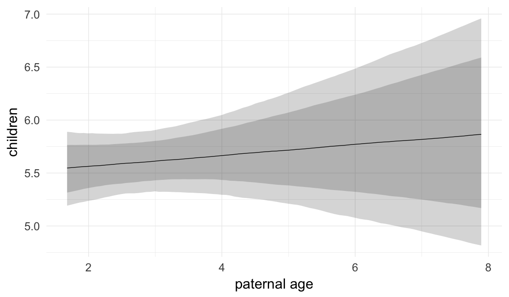
Coefficient plot
Here, we plotted the 95% posterior densities for the unexponentiated model coefficients (b_). The darkly shaded area represents the 50% credibility interval, the dark line represent the posterior mean estimate.
mcmc_areas(as.matrix(model$fit), regex_pars = "b_[^I]", point_est = "mean", prob = 0.50, prob_outer = 0.95) + ggtitle("Posterior densities with means and 50% intervals") + analysis_theme + theme(axis.text = element_text(size = 12), panel.grid = element_blank()) + xlab("Coefficient size")
Diagnostics
These plots were made to diagnose misfit and nonconvergence.
Posterior predictive checks
In posterior predictive checks, we test whether we can approximately reproduce the real data distribution from our model.
brms::pp_check(model, re_formula = NA, type = "dens_overlay")
brms::pp_check(model, re_formula = NA, type = "hist")Rhat
Did the 6 chains converge?
stanplot(model, pars = "^b_[^I]", type = 'rhat')
Effective sample size over average sample size
stanplot(model, pars = "^b", type = 'neff_hist')
Trace plots
Trace plots are only shown in the case of nonconvergence.
if(any( summary(model)$fixed[,"Rhat"] > 1.1)) { # only do traceplots if not converged
plot(model, N = 3, ask = FALSE)
}File/cluster script name
This model was stored in the file: coefs/rpqa/r17_simulate_downs.rds.
Click the following link to see the script used to generate this model:
opts_chunk$set(echo = FALSE)
clusterscript = str_replace(basename(model_filename), "\\.rds",".html")
cat("[Cluster script](" , clusterscript, ")", sep = "")r18: Reversing hurdle_poisson and poisson
To make models computationally feasible and because early mortality was negligible, we fit the very large modern Swedish dataset with a poisson() family distribution. All historical datasets had high early mortality, so we thought a hurdle_poisson() was more appropriate. Here, we show what happens when we reverse this. The hurdle_poisson() model can be fit to the modern Swedish data here, because we only use a subset.
Model summary
Full summary
model_summary = summary(model, use_cache = FALSE, priors = TRUE)
print(model_summary)## Family: poisson(log)
## Formula: children ~ paternalage + birth_cohort + male + maternalage.factor + paternalage.mean + paternal_loss + maternal_loss + older_siblings + nr.siblings + last_born + (1 | idParents)
## Data: model_data (Number of observations: 68724)
## Samples: 6 chains, each with iter = 800; warmup = 300; thin = 1;
## total post-warmup samples = 3000
## WAIC: Not computed
##
## Priors:
## b ~ normal(0,5)
## sd ~ student_t(3, 0, 5)
##
## Group-Level Effects:
## ~idParents (Number of levels: 12205)
## Estimate Est.Error l-95% CI u-95% CI Eff.Sample Rhat
## sd(Intercept) 0.95 0.01 0.94 0.97 424 1.01
##
## Population-Level Effects:
## Estimate Est.Error l-95% CI u-95% CI Eff.Sample
## Intercept 1.33 0.06 1.22 1.45 149
## paternalage -0.03 0.01 -0.05 0.00 340
## birth_cohort1675M1680 0.00 0.02 -0.04 0.03 381
## birth_cohort1680M1685 -0.05 0.02 -0.08 -0.01 207
## birth_cohort1685M1690 -0.11 0.02 -0.15 -0.07 166
## birth_cohort1690M1695 0.01 0.02 -0.03 0.06 134
## birth_cohort1695M1700 0.00 0.02 -0.05 0.04 115
## birth_cohort1700M1705 -0.10 0.02 -0.14 -0.05 101
## birth_cohort1705M1710 -0.08 0.03 -0.13 -0.03 95
## birth_cohort1710M1715 -0.23 0.03 -0.28 -0.17 91
## birth_cohort1715M1720 -0.19 0.03 -0.24 -0.13 88
## birth_cohort1720M1725 -0.21 0.03 -0.27 -0.15 87
## birth_cohort1725M1730 -0.43 0.03 -0.49 -0.37 87
## birth_cohort1730M1735 -0.46 0.03 -0.52 -0.40 85
## birth_cohort1735M1740 -0.43 0.03 -0.50 -0.37 83
## male1 -0.09 0.00 -0.10 -0.08 3000
## maternalage.factor1420 -0.07 0.01 -0.09 -0.05 3000
## maternalage.factor3550 -0.02 0.01 -0.04 -0.01 2228
## paternalage.mean 0.01 0.02 -0.02 0.05 190
## paternal_loss01 -0.34 0.03 -0.40 -0.28 240
## paternal_loss15 -0.16 0.03 -0.21 -0.11 219
## paternal_loss510 -0.11 0.02 -0.16 -0.07 214
## paternal_loss1015 -0.06 0.02 -0.10 -0.02 206
## paternal_loss1520 -0.12 0.02 -0.16 -0.08 224
## paternal_loss2025 -0.07 0.02 -0.10 -0.03 227
## paternal_loss2530 -0.06 0.02 -0.09 -0.03 259
## paternal_loss3035 -0.07 0.01 -0.09 -0.04 286
## paternal_loss3540 -0.06 0.01 -0.08 -0.03 386
## paternal_loss4045 -0.04 0.01 -0.06 -0.02 832
## paternal_lossunclear -0.32 0.03 -0.38 -0.26 227
## maternal_loss01 -0.66 0.03 -0.72 -0.60 341
## maternal_loss15 -0.21 0.02 -0.26 -0.16 237
## maternal_loss510 -0.06 0.02 -0.11 -0.02 211
## maternal_loss1015 -0.09 0.02 -0.13 -0.05 261
## maternal_loss1520 -0.06 0.02 -0.09 -0.02 265
## maternal_loss2025 -0.06 0.02 -0.09 -0.03 406
## maternal_loss2530 0.00 0.01 -0.03 0.03 361
## maternal_loss3035 -0.01 0.01 -0.04 0.01 529
## maternal_loss3540 -0.01 0.01 -0.02 0.01 645
## maternal_loss4045 0.03 0.01 0.02 0.05 1347
## maternal_lossunclear -0.20 0.03 -0.26 -0.14 225
## older_siblings1 0.02 0.01 0.00 0.03 3000
## older_siblings2 0.04 0.01 0.02 0.05 2013
## older_siblings3 0.05 0.01 0.03 0.07 1746
## older_siblings4 0.07 0.01 0.05 0.09 1605
## older_siblings5P 0.08 0.01 0.06 0.11 1490
## nr.siblings 0.02 0.00 0.02 0.03 166
## last_born1 0.01 0.01 0.00 0.02 3000
## Rhat
## Intercept 1.04
## paternalage 1.01
## birth_cohort1675M1680 1.01
## birth_cohort1680M1685 1.02
## birth_cohort1685M1690 1.03
## birth_cohort1690M1695 1.03
## birth_cohort1695M1700 1.03
## birth_cohort1700M1705 1.04
## birth_cohort1705M1710 1.04
## birth_cohort1710M1715 1.04
## birth_cohort1715M1720 1.04
## birth_cohort1720M1725 1.04
## birth_cohort1725M1730 1.04
## birth_cohort1730M1735 1.04
## birth_cohort1735M1740 1.04
## male1 1.00
## maternalage.factor1420 1.00
## maternalage.factor3550 1.00
## paternalage.mean 1.03
## paternal_loss01 1.02
## paternal_loss15 1.02
## paternal_loss510 1.02
## paternal_loss1015 1.02
## paternal_loss1520 1.02
## paternal_loss2025 1.01
## paternal_loss2530 1.02
## paternal_loss3035 1.01
## paternal_loss3540 1.01
## paternal_loss4045 1.00
## paternal_lossunclear 1.02
## maternal_loss01 1.02
## maternal_loss15 1.03
## maternal_loss510 1.03
## maternal_loss1015 1.02
## maternal_loss1520 1.02
## maternal_loss2025 1.02
## maternal_loss2530 1.02
## maternal_loss3035 1.01
## maternal_loss3540 1.01
## maternal_loss4045 1.00
## maternal_lossunclear 1.03
## older_siblings1 1.00
## older_siblings2 1.00
## older_siblings3 1.00
## older_siblings4 1.00
## older_siblings5P 1.00
## nr.siblings 1.01
## last_born1 1.00
##
## Samples were drawn using sampling(NUTS). For each parameter, Eff.Sample
## is a crude measure of effective sample size, and Rhat is the potential
## scale reduction factor on split chains (at convergence, Rhat = 1).Table of fixed effects
Estimates are exp(b). When they are referring to the hurdle (hu) component, or a dichotomous outcome, they are odds ratios, when they are referring to a Poisson component, they are hazard ratios. In both cases, they are presented with 95% credibility intervals. To see the effects on the response scale (probability or number of children), consult the marginal effect plots.
fixed_eff = data.frame(model_summary$fixed, check.names = F)
fixed_eff$Est.Error = fixed_eff$Eff.Sample = fixed_eff$Rhat = NULL
fixed_eff$`Odds/hazard ratio` = exp(fixed_eff$Estimate)
fixed_eff$`OR/HR low 95%` = exp(fixed_eff$`l-95% CI`)
fixed_eff$`OR/HR high 95%` = exp(fixed_eff$`u-95% CI`)
fixed_eff = fixed_eff %>% select(`Odds/hazard ratio`, `OR/HR low 95%`, `OR/HR high 95%`)
pander::pander(fixed_eff)| Odds/hazard ratio | OR/HR low 95% | OR/HR high 95% | |
|---|---|---|---|
| Intercept | 3.8 | 3.397 | 4.267 |
| paternalage | 0.9741 | 0.9494 | 1 |
| birth_cohort1675M1680 | 0.9968 | 0.9645 | 1.031 |
| birth_cohort1680M1685 | 0.954 | 0.9217 | 0.9884 |
| birth_cohort1685M1690 | 0.8964 | 0.8625 | 0.9319 |
| birth_cohort1690M1695 | 1.014 | 0.9731 | 1.058 |
| birth_cohort1695M1700 | 0.999 | 0.9554 | 1.045 |
| birth_cohort1700M1705 | 0.9087 | 0.8661 | 0.9529 |
| birth_cohort1705M1710 | 0.9203 | 0.8746 | 0.9673 |
| birth_cohort1710M1715 | 0.7984 | 0.7566 | 0.8408 |
| birth_cohort1715M1720 | 0.8308 | 0.7853 | 0.8773 |
| birth_cohort1720M1725 | 0.8124 | 0.7661 | 0.861 |
| birth_cohort1725M1730 | 0.6524 | 0.6135 | 0.692 |
| birth_cohort1730M1735 | 0.6314 | 0.5919 | 0.6724 |
| birth_cohort1735M1740 | 0.6483 | 0.6058 | 0.6923 |
| male1 | 0.9154 | 0.9077 | 0.9229 |
| maternalage.factor1420 | 0.9309 | 0.9127 | 0.95 |
| maternalage.factor3550 | 0.9781 | 0.9613 | 0.9946 |
| paternalage.mean | 1.014 | 0.9778 | 1.052 |
| paternal_loss01 | 0.7133 | 0.6694 | 0.7592 |
| paternal_loss15 | 0.8516 | 0.8071 | 0.8979 |
| paternal_loss510 | 0.8925 | 0.8498 | 0.9368 |
| paternal_loss1015 | 0.942 | 0.9009 | 0.9833 |
| paternal_loss1520 | 0.8878 | 0.8535 | 0.9223 |
| paternal_loss2025 | 0.9358 | 0.9044 | 0.9682 |
| paternal_loss2530 | 0.9453 | 0.9174 | 0.9739 |
| paternal_loss3035 | 0.9363 | 0.9117 | 0.9609 |
| paternal_loss3540 | 0.9451 | 0.9242 | 0.9665 |
| paternal_loss4045 | 0.9644 | 0.9444 | 0.9839 |
| paternal_lossunclear | 0.726 | 0.6843 | 0.7721 |
| maternal_loss01 | 0.5171 | 0.4863 | 0.5488 |
| maternal_loss15 | 0.812 | 0.7738 | 0.8527 |
| maternal_loss510 | 0.9371 | 0.8989 | 0.9775 |
| maternal_loss1015 | 0.9127 | 0.8792 | 0.9485 |
| maternal_loss1520 | 0.9462 | 0.9153 | 0.9797 |
| maternal_loss2025 | 0.9394 | 0.9113 | 0.9698 |
| maternal_loss2530 | 1.001 | 0.9741 | 1.028 |
| maternal_loss3035 | 0.9852 | 0.9627 | 1.009 |
| maternal_loss3540 | 0.9942 | 0.9753 | 1.014 |
| maternal_loss4045 | 1.035 | 1.017 | 1.054 |
| maternal_lossunclear | 0.8181 | 0.7696 | 0.8686 |
| older_siblings1 | 1.015 | 1.001 | 1.03 |
| older_siblings2 | 1.036 | 1.019 | 1.054 |
| older_siblings3 | 1.052 | 1.032 | 1.073 |
| older_siblings4 | 1.072 | 1.048 | 1.097 |
| older_siblings5P | 1.088 | 1.058 | 1.116 |
| nr.siblings | 1.025 | 1.02 | 1.031 |
| last_born1 | 1.01 | 0.9953 | 1.024 |
Paternal age effect
pander::pander(paternal_age_10y_effect(model))| effect | median_estimate | ci_95 | ci_80 |
|---|---|---|---|
| estimate father 25y | 4.68 | [4.43;4.96] | [4.51;4.86] |
| estimate father 35y | 4.56 | [4.27;4.89] | [4.36;4.77] |
| percentage change | -2.61 | [-5.06;0.01] | [-4.22;-0.92] |
| OR/IRR | 0.97 | [0.95;1] | [0.96;0.99] |
Marginal effect plots
In these marginal effect plots, we set all predictors except the one shown on the X axis to their mean and in the case of factors to their reference level. We then plot the estimated association between the X axis predictor and the outcome on the response scale (e.g. probability of survival/marriage or number of children).
plot.brmsMarginalEffects_shades(
x = marginal_effects(model, re_formula = NA, probs = c(0.025,0.975)),
y = marginal_effects(model, re_formula = NA, probs = c(0.1,0.9)),
ask = FALSE)
Coefficient plot
Here, we plotted the 95% posterior densities for the unexponentiated model coefficients (b_). The darkly shaded area represents the 50% credibility interval, the dark line represent the posterior mean estimate.
mcmc_areas(as.matrix(model$fit), regex_pars = "b_[^I]", point_est = "mean", prob = 0.50, prob_outer = 0.95) + ggtitle("Posterior densities with means and 50% intervals") + analysis_theme + theme(axis.text = element_text(size = 12), panel.grid = element_blank()) + xlab("Coefficient size")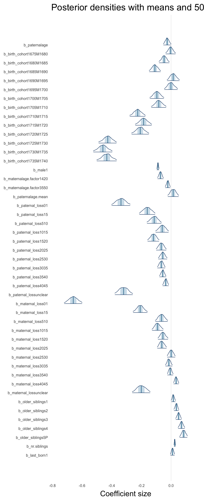
Diagnostics
These plots were made to diagnose misfit and nonconvergence.
Posterior predictive checks
In posterior predictive checks, we test whether we can approximately reproduce the real data distribution from our model.
brms::pp_check(model, re_formula = NA, type = "dens_overlay")brms::pp_check(model, re_formula = NA, type = "hist")Rhat
Did the 6 chains converge?
stanplot(model, pars = "^b_[^I]", type = 'rhat')
Effective sample size over average sample size
stanplot(model, pars = "^b", type = 'neff_hist')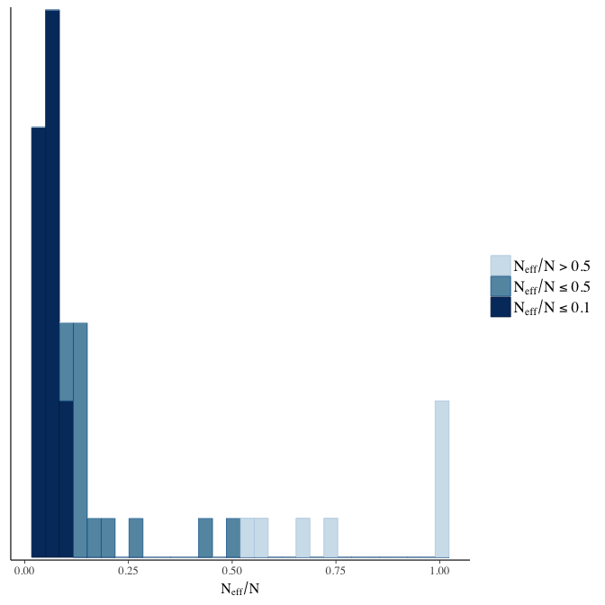
Trace plots
Trace plots are only shown in the case of nonconvergence.
if(any( summary(model)$fixed[,"Rhat"] > 1.1)) { # only do traceplots if not converged
plot(model, N = 3, ask = FALSE)
}File/cluster script name
This model was stored in the file: coefs/rpqa/r18_hurdle_poisson.rds.
Click the following link to see the script used to generate this model:
opts_chunk$set(echo = FALSE)
clusterscript = str_replace(basename(model_filename), "\\.rds",".html")
cat("[Cluster script](" , clusterscript, ")", sep = "")r19: Normal distribution
Previous analysts sometimes decided to use the normal distribution to predict (potentially zero-inflated) count data. Here, we refit our models using a normal distribution for the outcome. We show that estimates for the paternal age effect can be estimated to have a substantially different magnitude, because of this, but did not change direction.
Model summary
Full summary
model_summary = summary(model, use_cache = FALSE, priors = TRUE)
print(model_summary)## Family: gaussian(identity)
## Formula: children ~ paternalage + birth_cohort + male + maternalage.factor + paternalage.mean + paternal_loss + maternal_loss + older_siblings + nr.siblings + last_born + (1 | idParents)
## Data: model_data (Number of observations: 68724)
## Samples: 6 chains, each with iter = 800; warmup = 300; thin = 1;
## total post-warmup samples = 3000
## WAIC: Not computed
##
## Priors:
## b ~ normal(0,5)
## sd ~ student_t(3, 0, 5)
## sigma ~ student_t(3, 0, 10)
##
## Group-Level Effects:
## ~idParents (Number of levels: 12205)
## Estimate Est.Error l-95% CI u-95% CI Eff.Sample Rhat
## sd(Intercept) 1.51 0.03 1.45 1.56 945 1
##
## Population-Level Effects:
## Estimate Est.Error l-95% CI u-95% CI Eff.Sample
## Intercept 5.75 0.21 5.34 6.17 622
## paternalage -0.25 0.09 -0.43 -0.06 1132
## birth_cohort1675M1680 -0.03 0.16 -0.35 0.29 691
## birth_cohort1680M1685 -0.23 0.16 -0.53 0.08 666
## birth_cohort1685M1690 -0.43 0.16 -0.75 -0.13 640
## birth_cohort1690M1695 0.08 0.16 -0.22 0.39 610
## birth_cohort1695M1700 0.01 0.15 -0.28 0.32 528
## birth_cohort1700M1705 -0.37 0.15 -0.66 -0.09 463
## birth_cohort1705M1710 -0.26 0.15 -0.54 0.03 456
## birth_cohort1710M1715 -0.83 0.14 -1.10 -0.54 469
## birth_cohort1715M1720 -0.68 0.14 -0.95 -0.39 447
## birth_cohort1720M1725 -0.72 0.14 -0.98 -0.44 431
## birth_cohort1725M1730 -1.47 0.14 -1.72 -1.19 426
## birth_cohort1730M1735 -1.51 0.13 -1.76 -1.24 423
## birth_cohort1735M1740 -1.25 0.13 -1.50 -0.98 423
## male1 -0.37 0.04 -0.45 -0.30 3000
## maternalage.factor1420 -0.13 0.09 -0.31 0.04 3000
## maternalage.factor3550 -0.04 0.07 -0.17 0.09 2208
## paternalage.mean 0.21 0.10 0.01 0.40 1036
## paternal_loss01 -1.13 0.16 -1.46 -0.82 1668
## paternal_loss15 -0.63 0.13 -0.88 -0.37 1242
## paternal_loss510 -0.57 0.11 -0.79 -0.35 1180
## paternal_loss1015 -0.40 0.11 -0.60 -0.19 1158
## paternal_loss1520 -0.63 0.10 -0.83 -0.44 1221
## paternal_loss2025 -0.42 0.09 -0.61 -0.24 1050
## paternal_loss2530 -0.38 0.09 -0.56 -0.21 1116
## paternal_loss3035 -0.37 0.09 -0.54 -0.20 1125
## paternal_loss3540 -0.29 0.09 -0.46 -0.12 1235
## paternal_loss4045 -0.15 0.09 -0.33 0.04 1609
## paternal_lossunclear -0.86 0.09 -1.05 -0.68 1098
## maternal_loss01 -1.94 0.16 -2.24 -1.62 3000
## maternal_loss15 -0.82 0.12 -1.05 -0.59 1836
## maternal_loss510 -0.47 0.10 -0.67 -0.27 2067
## maternal_loss1015 -0.53 0.10 -0.73 -0.33 2005
## maternal_loss1520 -0.38 0.10 -0.58 -0.18 1842
## maternal_loss2025 -0.42 0.10 -0.61 -0.23 2000
## maternal_loss2530 -0.18 0.09 -0.36 -0.01 1771
## maternal_loss3035 -0.22 0.08 -0.39 -0.06 1808
## maternal_loss3540 -0.17 0.08 -0.33 -0.02 1996
## maternal_loss4045 0.04 0.08 -0.12 0.19 3000
## maternal_lossunclear -0.51 0.09 -0.68 -0.33 1617
## older_siblings1 0.04 0.07 -0.10 0.19 2310
## older_siblings2 0.13 0.08 -0.03 0.28 1687
## older_siblings3 0.20 0.09 0.02 0.38 1582
## older_siblings4 0.30 0.10 0.11 0.50 1304
## older_siblings5P 0.39 0.12 0.15 0.62 1124
## nr.siblings -0.01 0.01 -0.03 0.01 1613
## last_born1 0.02 0.07 -0.11 0.15 3000
## Rhat
## Intercept 1.01
## paternalage 1.01
## birth_cohort1675M1680 1.00
## birth_cohort1680M1685 1.01
## birth_cohort1685M1690 1.01
## birth_cohort1690M1695 1.01
## birth_cohort1695M1700 1.01
## birth_cohort1700M1705 1.01
## birth_cohort1705M1710 1.01
## birth_cohort1710M1715 1.01
## birth_cohort1715M1720 1.01
## birth_cohort1720M1725 1.01
## birth_cohort1725M1730 1.01
## birth_cohort1730M1735 1.01
## birth_cohort1735M1740 1.01
## male1 1.00
## maternalage.factor1420 1.00
## maternalage.factor3550 1.00
## paternalage.mean 1.01
## paternal_loss01 1.00
## paternal_loss15 1.00
## paternal_loss510 1.01
## paternal_loss1015 1.00
## paternal_loss1520 1.00
## paternal_loss2025 1.00
## paternal_loss2530 1.00
## paternal_loss3035 1.01
## paternal_loss3540 1.00
## paternal_loss4045 1.00
## paternal_lossunclear 1.00
## maternal_loss01 1.00
## maternal_loss15 1.00
## maternal_loss510 1.00
## maternal_loss1015 1.00
## maternal_loss1520 1.00
## maternal_loss2025 1.00
## maternal_loss2530 1.00
## maternal_loss3035 1.00
## maternal_loss3540 1.00
## maternal_loss4045 1.00
## maternal_lossunclear 1.00
## older_siblings1 1.00
## older_siblings2 1.00
## older_siblings3 1.01
## older_siblings4 1.01
## older_siblings5P 1.01
## nr.siblings 1.00
## last_born1 1.00
##
## Family Specific Parameters:
## Estimate Est.Error l-95% CI u-95% CI Eff.Sample Rhat
## sigma 4.93 0.01 4.9 4.96 3000 1
##
## Samples were drawn using sampling(NUTS). For each parameter, Eff.Sample
## is a crude measure of effective sample size, and Rhat is the potential
## scale reduction factor on split chains (at convergence, Rhat = 1).Table of fixed effects
Estimates are exp(b). When they are referring to the hurdle (hu) component, or a dichotomous outcome, they are odds ratios, when they are referring to a Poisson component, they are hazard ratios. In both cases, they are presented with 95% credibility intervals. To see the effects on the response scale (probability or number of children), consult the marginal effect plots.
fixed_eff = data.frame(model_summary$fixed, check.names = F)
fixed_eff$Est.Error = fixed_eff$Eff.Sample = fixed_eff$Rhat = NULL
fixed_eff$`Odds/hazard ratio` = exp(fixed_eff$Estimate)
fixed_eff$`OR/HR low 95%` = exp(fixed_eff$`l-95% CI`)
fixed_eff$`OR/HR high 95%` = exp(fixed_eff$`u-95% CI`)
fixed_eff = fixed_eff %>% select(`Odds/hazard ratio`, `OR/HR low 95%`, `OR/HR high 95%`)
pander::pander(fixed_eff)| Odds/hazard ratio | OR/HR low 95% | OR/HR high 95% | |
|---|---|---|---|
| Intercept | 315.5 | 207.6 | 477.6 |
| paternalage | 0.7787 | 0.6499 | 0.9384 |
| birth_cohort1675M1680 | 0.9668 | 0.7069 | 1.33 |
| birth_cohort1680M1685 | 0.7947 | 0.5859 | 1.084 |
| birth_cohort1685M1690 | 0.6476 | 0.4747 | 0.8816 |
| birth_cohort1690M1695 | 1.083 | 0.8017 | 1.471 |
| birth_cohort1695M1700 | 1.015 | 0.7594 | 1.373 |
| birth_cohort1700M1705 | 0.6897 | 0.5192 | 0.918 |
| birth_cohort1705M1710 | 0.7736 | 0.5814 | 1.035 |
| birth_cohort1710M1715 | 0.4369 | 0.3343 | 0.5823 |
| birth_cohort1715M1720 | 0.5068 | 0.3872 | 0.6761 |
| birth_cohort1720M1725 | 0.4891 | 0.3743 | 0.6424 |
| birth_cohort1725M1730 | 0.2294 | 0.1783 | 0.3028 |
| birth_cohort1730M1735 | 0.2219 | 0.1714 | 0.2908 |
| birth_cohort1735M1740 | 0.2873 | 0.2233 | 0.3769 |
| male1 | 0.6895 | 0.6401 | 0.7438 |
| maternalage.factor1420 | 0.8738 | 0.734 | 1.044 |
| maternalage.factor3550 | 0.965 | 0.8444 | 1.097 |
| paternalage.mean | 1.23 | 1.014 | 1.489 |
| paternal_loss01 | 0.3217 | 0.2334 | 0.4402 |
| paternal_loss15 | 0.5331 | 0.4151 | 0.6904 |
| paternal_loss510 | 0.5657 | 0.4538 | 0.7018 |
| paternal_loss1015 | 0.673 | 0.549 | 0.829 |
| paternal_loss1520 | 0.5313 | 0.4365 | 0.6413 |
| paternal_loss2025 | 0.6572 | 0.544 | 0.7864 |
| paternal_loss2530 | 0.6809 | 0.5702 | 0.8116 |
| paternal_loss3035 | 0.6907 | 0.5805 | 0.822 |
| paternal_loss3540 | 0.7477 | 0.63 | 0.8847 |
| paternal_loss4045 | 0.8646 | 0.7169 | 1.04 |
| paternal_lossunclear | 0.4213 | 0.3484 | 0.5063 |
| maternal_loss01 | 0.1439 | 0.1064 | 0.1975 |
| maternal_loss15 | 0.4386 | 0.3494 | 0.5545 |
| maternal_loss510 | 0.6234 | 0.5121 | 0.7605 |
| maternal_loss1015 | 0.5905 | 0.4835 | 0.7164 |
| maternal_loss1520 | 0.6826 | 0.5601 | 0.8313 |
| maternal_loss2025 | 0.657 | 0.5433 | 0.7963 |
| maternal_loss2530 | 0.8315 | 0.6974 | 0.992 |
| maternal_loss3035 | 0.803 | 0.6803 | 0.9422 |
| maternal_loss3540 | 0.8407 | 0.7225 | 0.9775 |
| maternal_loss4045 | 1.037 | 0.8874 | 1.213 |
| maternal_lossunclear | 0.6026 | 0.5074 | 0.7198 |
| older_siblings1 | 1.041 | 0.9079 | 1.206 |
| older_siblings2 | 1.136 | 0.9749 | 1.326 |
| older_siblings3 | 1.218 | 1.024 | 1.456 |
| older_siblings4 | 1.352 | 1.113 | 1.647 |
| older_siblings5P | 1.479 | 1.163 | 1.868 |
| nr.siblings | 0.9927 | 0.975 | 1.011 |
| last_born1 | 1.02 | 0.8957 | 1.16 |
Paternal age effect
pander::pander(paternal_age_10y_effect(model))| effect | median_estimate | ci_95 | ci_80 |
|---|---|---|---|
| estimate father 25y | 5.83 | [5.52;6.1] | [5.63;6.01] |
| estimate father 35y | 5.58 | [5.24;5.88] | [5.36;5.78] |
| percentage change | -4.32 | [-7.39;-1.11] | [-6.29;-2.25] |
| OR/IRR | 0.78 | [0.65;0.94] | [0.69;0.88] |
Marginal effect plots
In these marginal effect plots, we set all predictors except the one shown on the X axis to their mean and in the case of factors to their reference level. We then plot the estimated association between the X axis predictor and the outcome on the response scale (e.g. probability of survival/marriage or number of children).
plot.brmsMarginalEffects_shades(
x = marginal_effects(model, re_formula = NA, probs = c(0.025,0.975)),
y = marginal_effects(model, re_formula = NA, probs = c(0.1,0.9)),
ask = FALSE)Coefficient plot
Here, we plotted the 95% posterior densities for the unexponentiated model coefficients (b_). The darkly shaded area represents the 50% credibility interval, the dark line represent the posterior mean estimate.
mcmc_areas(as.matrix(model$fit), regex_pars = "b_[^I]", point_est = "mean", prob = 0.50, prob_outer = 0.95) + ggtitle("Posterior densities with means and 50% intervals") + analysis_theme + theme(axis.text = element_text(size = 12), panel.grid = element_blank()) + xlab("Coefficient size")Diagnostics
These plots were made to diagnose misfit and nonconvergence.
Posterior predictive checks
In posterior predictive checks, we test whether we can approximately reproduce the real data distribution from our model.
brms::pp_check(model, re_formula = NA, type = "dens_overlay")brms::pp_check(model, re_formula = NA, type = "hist")Rhat
Did the 6 chains converge?
stanplot(model, pars = "^b_[^I]", type = 'rhat')Effective sample size over average sample size
stanplot(model, pars = "^b", type = 'neff_hist')Trace plots
Trace plots are only shown in the case of nonconvergence.
if(any( summary(model)$fixed[,"Rhat"] > 1.1)) { # only do traceplots if not converged
plot(model, N = 3, ask = FALSE)
}File/cluster script name
This model was stored in the file: coefs/rpqa/r19_normal_distribution.rds.
Click the following link to see the script used to generate this model:
opts_chunk$set(echo = FALSE)
clusterscript = str_replace(basename(model_filename), "\\.rds",".html")
cat("[Cluster script](" , clusterscript, ")", sep = "")r20: No adjustment for maternal age
In this model, we test what happens when we do not adjust for maternal age, because it is highly collinear with paternal age.
Model summary
Full summary
model_summary = summary(model, use_cache = FALSE, priors = TRUE)
print(model_summary)## Family: hurdle_poisson(log)
## Formula: children ~ paternalage + birth_cohort + male + paternalage.mean + paternal_loss + maternal_loss + older_siblings + nr.siblings + last_born + (1 | idParents)
## hu ~ paternalage + birth_cohort + male + paternalage.mean + paternal_loss + maternal_loss + older_siblings + nr.siblings + last_born + (1 | idParents)
## Data: model_data (Number of observations: 68724)
## Samples: 6 chains, each with iter = 1000; warmup = 500; thin = 1;
## total post-warmup samples = 3000
## WAIC: Not computed
##
## Priors:
## b ~ normal(0,5)
## sd ~ student_t(3, 0, 5)
## b_hu ~ normal(0,5)
## sd_hu ~ student_t(3, 0, 10)
##
## Group-Level Effects:
## ~idParents (Number of levels: 12205)
## Estimate Est.Error l-95% CI u-95% CI Eff.Sample Rhat
## sd(Intercept) 0.27 0.00 0.27 0.28 1086 1
## sd(hu_Intercept) 0.63 0.01 0.60 0.66 1161 1
##
## Population-Level Effects:
## Estimate Est.Error l-95% CI u-95% CI Eff.Sample
## Intercept 2.12 0.03 2.06 2.17 1300
## paternalage 0.01 0.01 0.00 0.03 2170
## birth_cohort1675M1680 0.02 0.02 -0.01 0.05 1555
## birth_cohort1680M1685 0.05 0.02 0.02 0.08 1289
## birth_cohort1685M1690 0.05 0.02 0.02 0.08 1320
## birth_cohort1690M1695 0.05 0.02 0.01 0.08 1091
## birth_cohort1695M1700 0.03 0.02 0.00 0.07 978
## birth_cohort1700M1705 0.02 0.02 -0.01 0.05 966
## birth_cohort1705M1710 0.00 0.02 -0.03 0.03 1002
## birth_cohort1710M1715 -0.01 0.02 -0.04 0.02 968
## birth_cohort1715M1720 -0.04 0.02 -0.07 -0.01 927
## birth_cohort1720M1725 -0.04 0.02 -0.07 -0.01 896
## birth_cohort1725M1730 -0.07 0.02 -0.10 -0.03 908
## birth_cohort1730M1735 -0.05 0.02 -0.08 -0.02 927
## birth_cohort1735M1740 -0.06 0.02 -0.09 -0.03 925
## male1 0.11 0.00 0.10 0.12 3000
## paternalage.mean -0.03 0.01 -0.05 -0.01 2122
## paternal_loss01 -0.04 0.02 -0.08 0.01 1846
## paternal_loss15 -0.02 0.02 -0.05 0.02 1599
## paternal_loss510 -0.01 0.01 -0.04 0.02 1193
## paternal_loss1015 -0.02 0.01 -0.04 0.01 1205
## paternal_loss1520 -0.02 0.01 -0.05 0.00 1068
## paternal_loss2025 -0.02 0.01 -0.05 0.00 1316
## paternal_loss2530 -0.01 0.01 -0.03 0.01 1279
## paternal_loss3035 -0.02 0.01 -0.04 0.00 1336
## paternal_loss3540 -0.02 0.01 -0.04 0.00 1793
## paternal_loss4045 0.00 0.01 -0.02 0.02 3000
## paternal_lossunclear -0.05 0.01 -0.08 -0.03 1616
## maternal_loss01 -0.05 0.02 -0.10 -0.01 3000
## maternal_loss15 -0.03 0.02 -0.06 0.00 2271
## maternal_loss510 0.01 0.01 -0.01 0.04 1904
## maternal_loss1015 -0.01 0.01 -0.03 0.02 1757
## maternal_loss1520 0.01 0.01 -0.02 0.03 1989
## maternal_loss2025 -0.02 0.01 -0.04 0.00 2052
## maternal_loss2530 -0.01 0.01 -0.03 0.01 1893
## maternal_loss3035 -0.01 0.01 -0.03 0.01 2411
## maternal_loss3540 0.00 0.01 -0.02 0.02 3000
## maternal_loss4045 0.00 0.01 -0.01 0.02 3000
## maternal_lossunclear -0.02 0.01 -0.05 0.00 1492
## older_siblings1 -0.02 0.01 -0.04 -0.01 3000
## older_siblings2 -0.02 0.01 -0.04 -0.01 3000
## older_siblings3 -0.03 0.01 -0.05 -0.01 2261
## older_siblings4 -0.02 0.01 -0.04 0.00 2314
## older_siblings5P -0.04 0.01 -0.06 -0.01 2106
## nr.siblings 0.01 0.00 0.00 0.01 2204
## last_born1 0.00 0.01 -0.01 0.02 3000
## hu_Intercept -0.78 0.09 -0.95 -0.60 932
## hu_paternalage 0.15 0.03 0.08 0.22 1911
## hu_birth_cohort1675M1680 0.08 0.07 -0.06 0.21 897
## hu_birth_cohort1680M1685 0.23 0.07 0.09 0.37 775
## hu_birth_cohort1685M1690 0.33 0.07 0.20 0.47 828
## hu_birth_cohort1690M1695 0.08 0.07 -0.05 0.21 819
## hu_birth_cohort1695M1700 0.09 0.07 -0.04 0.23 647
## hu_birth_cohort1700M1705 0.25 0.06 0.12 0.38 711
## hu_birth_cohort1705M1710 0.15 0.07 0.02 0.28 570
## hu_birth_cohort1710M1715 0.43 0.06 0.30 0.55 659
## hu_birth_cohort1715M1720 0.28 0.06 0.16 0.40 561
## hu_birth_cohort1720M1725 0.30 0.06 0.18 0.42 622
## hu_birth_cohort1725M1730 0.66 0.06 0.54 0.78 618
## hu_birth_cohort1730M1735 0.72 0.06 0.60 0.84 665
## hu_birth_cohort1735M1740 0.56 0.06 0.44 0.68 580
## hu_male1 0.44 0.02 0.40 0.47 3000
## hu_paternalage.mean -0.16 0.04 -0.24 -0.09 1995
## hu_paternal_loss01 0.57 0.07 0.42 0.71 3000
## hu_paternal_loss15 0.31 0.06 0.20 0.42 3000
## hu_paternal_loss510 0.29 0.05 0.20 0.38 2043
## hu_paternal_loss1015 0.17 0.04 0.08 0.26 1862
## hu_paternal_loss1520 0.28 0.04 0.20 0.36 1894
## hu_paternal_loss2025 0.17 0.04 0.10 0.25 1748
## hu_paternal_loss2530 0.17 0.04 0.10 0.25 1871
## hu_paternal_loss3035 0.14 0.04 0.07 0.21 1858
## hu_paternal_loss3540 0.10 0.04 0.03 0.17 2189
## hu_paternal_loss4045 0.07 0.04 -0.01 0.14 3000
## hu_paternal_lossunclear 0.37 0.04 0.29 0.44 1801
## hu_maternal_loss01 1.06 0.07 0.92 1.20 3000
## hu_maternal_loss15 0.39 0.05 0.30 0.49 3000
## hu_maternal_loss510 0.26 0.04 0.18 0.35 3000
## hu_maternal_loss1015 0.26 0.04 0.18 0.34 3000
## hu_maternal_loss1520 0.20 0.04 0.12 0.28 3000
## hu_maternal_loss2025 0.17 0.04 0.09 0.25 3000
## hu_maternal_loss2530 0.06 0.04 -0.02 0.14 3000
## hu_maternal_loss3035 0.09 0.04 0.02 0.16 3000
## hu_maternal_loss3540 0.08 0.03 0.02 0.14 3000
## hu_maternal_loss4045 -0.01 0.03 -0.08 0.06 3000
## hu_maternal_lossunclear 0.22 0.04 0.14 0.30 3000
## hu_older_siblings1 -0.07 0.03 -0.13 -0.01 3000
## hu_older_siblings2 -0.13 0.03 -0.19 -0.06 3000
## hu_older_siblings3 -0.19 0.04 -0.26 -0.12 2050
## hu_older_siblings4 -0.21 0.04 -0.29 -0.13 1814
## hu_older_siblings5P -0.29 0.05 -0.39 -0.20 1615
## hu_nr.siblings 0.02 0.00 0.01 0.03 3000
## hu_last_born1 0.00 0.03 -0.06 0.06 3000
## Rhat
## Intercept 1.01
## paternalage 1.00
## birth_cohort1675M1680 1.00
## birth_cohort1680M1685 1.00
## birth_cohort1685M1690 1.00
## birth_cohort1690M1695 1.00
## birth_cohort1695M1700 1.00
## birth_cohort1700M1705 1.00
## birth_cohort1705M1710 1.00
## birth_cohort1710M1715 1.00
## birth_cohort1715M1720 1.00
## birth_cohort1720M1725 1.00
## birth_cohort1725M1730 1.00
## birth_cohort1730M1735 1.00
## birth_cohort1735M1740 1.00
## male1 1.00
## paternalage.mean 1.00
## paternal_loss01 1.00
## paternal_loss15 1.00
## paternal_loss510 1.00
## paternal_loss1015 1.01
## paternal_loss1520 1.01
## paternal_loss2025 1.00
## paternal_loss2530 1.01
## paternal_loss3035 1.00
## paternal_loss3540 1.00
## paternal_loss4045 1.00
## paternal_lossunclear 1.01
## maternal_loss01 1.00
## maternal_loss15 1.00
## maternal_loss510 1.00
## maternal_loss1015 1.00
## maternal_loss1520 1.00
## maternal_loss2025 1.00
## maternal_loss2530 1.00
## maternal_loss3035 1.00
## maternal_loss3540 1.00
## maternal_loss4045 1.00
## maternal_lossunclear 1.01
## older_siblings1 1.00
## older_siblings2 1.00
## older_siblings3 1.00
## older_siblings4 1.00
## older_siblings5P 1.00
## nr.siblings 1.00
## last_born1 1.00
## hu_Intercept 1.00
## hu_paternalage 1.00
## hu_birth_cohort1675M1680 1.00
## hu_birth_cohort1680M1685 1.01
## hu_birth_cohort1685M1690 1.00
## hu_birth_cohort1690M1695 1.01
## hu_birth_cohort1695M1700 1.01
## hu_birth_cohort1700M1705 1.01
## hu_birth_cohort1705M1710 1.01
## hu_birth_cohort1710M1715 1.01
## hu_birth_cohort1715M1720 1.01
## hu_birth_cohort1720M1725 1.01
## hu_birth_cohort1725M1730 1.01
## hu_birth_cohort1730M1735 1.01
## hu_birth_cohort1735M1740 1.01
## hu_male1 1.00
## hu_paternalage.mean 1.00
## hu_paternal_loss01 1.00
## hu_paternal_loss15 1.00
## hu_paternal_loss510 1.00
## hu_paternal_loss1015 1.00
## hu_paternal_loss1520 1.00
## hu_paternal_loss2025 1.00
## hu_paternal_loss2530 1.00
## hu_paternal_loss3035 1.00
## hu_paternal_loss3540 1.00
## hu_paternal_loss4045 1.00
## hu_paternal_lossunclear 1.00
## hu_maternal_loss01 1.00
## hu_maternal_loss15 1.00
## hu_maternal_loss510 1.00
## hu_maternal_loss1015 1.00
## hu_maternal_loss1520 1.00
## hu_maternal_loss2025 1.00
## hu_maternal_loss2530 1.00
## hu_maternal_loss3035 1.00
## hu_maternal_loss3540 1.00
## hu_maternal_loss4045 1.00
## hu_maternal_lossunclear 1.00
## hu_older_siblings1 1.00
## hu_older_siblings2 1.00
## hu_older_siblings3 1.00
## hu_older_siblings4 1.00
## hu_older_siblings5P 1.00
## hu_nr.siblings 1.00
## hu_last_born1 1.00
##
## Samples were drawn using sampling(NUTS). For each parameter, Eff.Sample
## is a crude measure of effective sample size, and Rhat is the potential
## scale reduction factor on split chains (at convergence, Rhat = 1).Table of fixed effects
Estimates are exp(b). When they are referring to the hurdle (hu) component, or a dichotomous outcome, they are odds ratios, when they are referring to a Poisson component, they are hazard ratios. In both cases, they are presented with 95% credibility intervals. To see the effects on the response scale (probability or number of children), consult the marginal effect plots.
fixed_eff = data.frame(model_summary$fixed, check.names = F)
fixed_eff$Est.Error = fixed_eff$Eff.Sample = fixed_eff$Rhat = NULL
fixed_eff$`Odds/hazard ratio` = exp(fixed_eff$Estimate)
fixed_eff$`OR/HR low 95%` = exp(fixed_eff$`l-95% CI`)
fixed_eff$`OR/HR high 95%` = exp(fixed_eff$`u-95% CI`)
fixed_eff = fixed_eff %>% select(`Odds/hazard ratio`, `OR/HR low 95%`, `OR/HR high 95%`)
pander::pander(fixed_eff)| Odds/hazard ratio | OR/HR low 95% | OR/HR high 95% | |
|---|---|---|---|
| Intercept | 8.293 | 7.85 | 8.726 |
| paternalage | 1.013 | 0.9959 | 1.031 |
| birth_cohort1675M1680 | 1.02 | 0.9903 | 1.053 |
| birth_cohort1680M1685 | 1.048 | 1.015 | 1.081 |
| birth_cohort1685M1690 | 1.051 | 1.016 | 1.087 |
| birth_cohort1690M1695 | 1.048 | 1.014 | 1.083 |
| birth_cohort1695M1700 | 1.035 | 1.003 | 1.069 |
| birth_cohort1700M1705 | 1.021 | 0.9893 | 1.054 |
| birth_cohort1705M1710 | 0.9978 | 0.9664 | 1.029 |
| birth_cohort1710M1715 | 0.9877 | 0.9582 | 1.019 |
| birth_cohort1715M1720 | 0.9604 | 0.931 | 0.9912 |
| birth_cohort1720M1725 | 0.9582 | 0.9283 | 0.9887 |
| birth_cohort1725M1730 | 0.9358 | 0.9078 | 0.9659 |
| birth_cohort1730M1735 | 0.9516 | 0.9225 | 0.9816 |
| birth_cohort1735M1740 | 0.9411 | 0.9128 | 0.9705 |
| male1 | 1.117 | 1.108 | 1.127 |
| paternalage.mean | 0.9689 | 0.9496 | 0.9885 |
| paternal_loss01 | 0.9627 | 0.921 | 1.005 |
| paternal_loss15 | 0.9828 | 0.952 | 1.015 |
| paternal_loss510 | 0.99 | 0.9628 | 1.018 |
| paternal_loss1015 | 0.9842 | 0.958 | 1.01 |
| paternal_loss1520 | 0.9763 | 0.9514 | 0.9997 |
| paternal_loss2025 | 0.9774 | 0.9548 | 0.999 |
| paternal_loss2530 | 0.9875 | 0.967 | 1.009 |
| paternal_loss3035 | 0.9772 | 0.9578 | 0.996 |
| paternal_loss3540 | 0.9782 | 0.9603 | 0.9965 |
| paternal_loss4045 | 0.9969 | 0.9776 | 1.017 |
| paternal_lossunclear | 0.9479 | 0.9241 | 0.9725 |
| maternal_loss01 | 0.9477 | 0.9044 | 0.9934 |
| maternal_loss15 | 0.9716 | 0.9436 | 1.001 |
| maternal_loss510 | 1.011 | 0.9856 | 1.038 |
| maternal_loss1015 | 0.9914 | 0.9682 | 1.016 |
| maternal_loss1520 | 1.006 | 0.983 | 1.029 |
| maternal_loss2025 | 0.9803 | 0.9583 | 1.002 |
| maternal_loss2530 | 0.9866 | 0.9657 | 1.007 |
| maternal_loss3035 | 0.9915 | 0.9729 | 1.01 |
| maternal_loss3540 | 1.001 | 0.9844 | 1.018 |
| maternal_loss4045 | 1.004 | 0.9868 | 1.021 |
| maternal_lossunclear | 0.9799 | 0.9556 | 1.005 |
| older_siblings1 | 0.9795 | 0.9648 | 0.9944 |
| older_siblings2 | 0.9764 | 0.96 | 0.9924 |
| older_siblings3 | 0.9684 | 0.9502 | 0.9864 |
| older_siblings4 | 0.9794 | 0.9585 | 0.9999 |
| older_siblings5P | 0.9642 | 0.9396 | 0.9878 |
| nr.siblings | 1.007 | 1.005 | 1.01 |
| last_born1 | 1.001 | 0.9865 | 1.017 |
| hu_Intercept | 0.4598 | 0.3858 | 0.5479 |
| hu_paternalage | 1.161 | 1.087 | 1.242 |
| hu_birth_cohort1675M1680 | 1.08 | 0.9463 | 1.236 |
| hu_birth_cohort1680M1685 | 1.259 | 1.098 | 1.444 |
| hu_birth_cohort1685M1690 | 1.395 | 1.219 | 1.606 |
| hu_birth_cohort1690M1695 | 1.082 | 0.947 | 1.238 |
| hu_birth_cohort1695M1700 | 1.098 | 0.9626 | 1.254 |
| hu_birth_cohort1700M1705 | 1.279 | 1.131 | 1.457 |
| hu_birth_cohort1705M1710 | 1.159 | 1.023 | 1.323 |
| hu_birth_cohort1710M1715 | 1.531 | 1.356 | 1.738 |
| hu_birth_cohort1715M1720 | 1.323 | 1.173 | 1.497 |
| hu_birth_cohort1720M1725 | 1.35 | 1.197 | 1.528 |
| hu_birth_cohort1725M1730 | 1.935 | 1.717 | 2.183 |
| hu_birth_cohort1730M1735 | 2.053 | 1.821 | 2.311 |
| hu_birth_cohort1735M1740 | 1.751 | 1.553 | 1.979 |
| hu_male1 | 1.546 | 1.495 | 1.596 |
| hu_paternalage.mean | 0.8499 | 0.7879 | 0.9137 |
| hu_paternal_loss01 | 1.762 | 1.528 | 2.027 |
| hu_paternal_loss15 | 1.361 | 1.218 | 1.515 |
| hu_paternal_loss510 | 1.332 | 1.218 | 1.459 |
| hu_paternal_loss1015 | 1.185 | 1.088 | 1.292 |
| hu_paternal_loss1520 | 1.324 | 1.221 | 1.437 |
| hu_paternal_loss2025 | 1.189 | 1.101 | 1.282 |
| hu_paternal_loss2530 | 1.191 | 1.106 | 1.283 |
| hu_paternal_loss3035 | 1.15 | 1.068 | 1.235 |
| hu_paternal_loss3540 | 1.107 | 1.029 | 1.19 |
| hu_paternal_loss4045 | 1.069 | 0.9902 | 1.153 |
| hu_paternal_lossunclear | 1.443 | 1.333 | 1.56 |
| hu_maternal_loss01 | 2.881 | 2.509 | 3.313 |
| hu_maternal_loss15 | 1.48 | 1.344 | 1.64 |
| hu_maternal_loss510 | 1.296 | 1.192 | 1.413 |
| hu_maternal_loss1015 | 1.294 | 1.192 | 1.402 |
| hu_maternal_loss1520 | 1.221 | 1.125 | 1.326 |
| hu_maternal_loss2025 | 1.187 | 1.096 | 1.286 |
| hu_maternal_loss2530 | 1.057 | 0.9795 | 1.146 |
| hu_maternal_loss3035 | 1.091 | 1.016 | 1.169 |
| hu_maternal_loss3540 | 1.085 | 1.018 | 1.155 |
| hu_maternal_loss4045 | 0.9891 | 0.9255 | 1.059 |
| hu_maternal_lossunclear | 1.246 | 1.156 | 1.344 |
| hu_older_siblings1 | 0.9298 | 0.8765 | 0.9865 |
| hu_older_siblings2 | 0.8818 | 0.8282 | 0.9388 |
| hu_older_siblings3 | 0.8291 | 0.7729 | 0.89 |
| hu_older_siblings4 | 0.811 | 0.7491 | 0.8805 |
| hu_older_siblings5P | 0.7451 | 0.6761 | 0.8212 |
| hu_nr.siblings | 1.021 | 1.013 | 1.029 |
| hu_last_born1 | 1.002 | 0.9462 | 1.061 |
Paternal age effect
pander::pander(paternal_age_10y_effect(model))| effect | median_estimate | ci_95 | ci_80 |
|---|---|---|---|
| estimate father 25y | 5.64 | [5.37;5.93] | [5.47;5.84] |
| estimate father 35y | 5.45 | [5.13;5.78] | [5.24;5.67] |
| percentage change | -3.49 | [-6.27;-0.66] | [-5.3;-1.64] |
| OR/IRR | 1.01 | [1;1.03] | [1;1.02] |
| OR hurdle | 1.16 | [1.09;1.24] | [1.11;1.21] |
Marginal effect plots
In these marginal effect plots, we set all predictors except the one shown on the X axis to their mean and in the case of factors to their reference level. We then plot the estimated association between the X axis predictor and the outcome on the response scale (e.g. probability of survival/marriage or number of children).
plot.brmsMarginalEffects_shades(
x = marginal_effects(model, re_formula = NA, probs = c(0.025,0.975)),
y = marginal_effects(model, re_formula = NA, probs = c(0.1,0.9)),
ask = FALSE)Coefficient plot
Here, we plotted the 95% posterior densities for the unexponentiated model coefficients (b_). The darkly shaded area represents the 50% credibility interval, the dark line represent the posterior mean estimate.
mcmc_areas(as.matrix(model$fit), regex_pars = "b_[^I]", point_est = "mean", prob = 0.50, prob_outer = 0.95) + ggtitle("Posterior densities with means and 50% intervals") + analysis_theme + theme(axis.text = element_text(size = 12), panel.grid = element_blank()) + xlab("Coefficient size")
Diagnostics
These plots were made to diagnose misfit and nonconvergence.
Posterior predictive checks
In posterior predictive checks, we test whether we can approximately reproduce the real data distribution from our model.
brms::pp_check(model, re_formula = NA, type = "dens_overlay")brms::pp_check(model, re_formula = NA, type = "hist")Rhat
Did the 6 chains converge?
stanplot(model, pars = "^b_[^I]", type = 'rhat')Effective sample size over average sample size
stanplot(model, pars = "^b", type = 'neff_hist')Trace plots
Trace plots are only shown in the case of nonconvergence.
if(any( summary(model)$fixed[,"Rhat"] > 1.1)) { # only do traceplots if not converged
plot(model, N = 3, ask = FALSE)
}File/cluster script name
This model was stored in the file: coefs/rpqa/r20_no_maternalage_control.rds.
Click the following link to see the script used to generate this model:
opts_chunk$set(echo = FALSE)
clusterscript = str_replace(basename(model_filename), "\\.rds",".html")
cat("[Cluster script](" , clusterscript, ")", sep = "")r21: Continuous adjustment for maternal age
In this model, we adjust for maternal age using a continuous variable instead of three bins. This does not allow for nonlinear effects, but also does not aggregate the predictor. We cannot compare full siblings, test the effects of maternal and paternal age and adjust for average maternal and paternal age in the family (because the predictors are redundant), so that it is not perfectly possible to disentangle the contribution of maternal and paternal age and compare full siblings.
Model summary
Full summary
model_summary = summary(model, use_cache = FALSE, priors = TRUE)
print(model_summary)## Family: hurdle_poisson(log)
## Formula: children ~ paternalage + maternalage + birth_cohort + male + paternalage.mean + paternal_loss + maternal_loss + older_siblings + nr.siblings + last_born + (1 | idParents)
## hu ~ paternalage + maternalage + birth_cohort + male + paternalage.mean + paternal_loss + maternal_loss + older_siblings + nr.siblings + last_born + (1 | idParents)
## Data: model_data (Number of observations: 68734)
## Samples: 6 chains, each with iter = 1000; warmup = 500; thin = 1;
## total post-warmup samples = 3000
## WAIC: Not computed
##
## Priors:
## b ~ normal(0,5)
## sd ~ student_t(3, 0, 5)
## b_hu ~ normal(0,5)
## sd_hu ~ student_t(3, 0, 10)
##
## Group-Level Effects:
## ~idParents (Number of levels: 12206)
## Estimate Est.Error l-95% CI u-95% CI Eff.Sample Rhat
## sd(Intercept) 0.27 0.00 0.27 0.28 1027 1.01
## sd(hu_Intercept) 0.63 0.01 0.60 0.65 1198 1.00
##
## Population-Level Effects:
## Estimate Est.Error l-95% CI u-95% CI Eff.Sample
## Intercept 2.14 0.04 2.06 2.21 976
## paternalage 0.02 0.01 0.00 0.05 1024
## maternalage -0.01 0.01 -0.03 0.01 1335
## birth_cohort1675M1680 0.02 0.02 -0.01 0.05 697
## birth_cohort1680M1685 0.05 0.02 0.02 0.08 627
## birth_cohort1685M1690 0.05 0.02 0.02 0.08 779
## birth_cohort1690M1695 0.05 0.02 0.02 0.08 641
## birth_cohort1695M1700 0.04 0.02 0.01 0.07 647
## birth_cohort1700M1705 0.02 0.02 -0.01 0.05 611
## birth_cohort1705M1710 0.00 0.02 -0.03 0.03 434
## birth_cohort1710M1715 -0.01 0.02 -0.04 0.02 604
## birth_cohort1715M1720 -0.04 0.02 -0.07 -0.01 409
## birth_cohort1720M1725 -0.04 0.02 -0.07 -0.01 399
## birth_cohort1725M1730 -0.06 0.02 -0.09 -0.03 583
## birth_cohort1730M1735 -0.05 0.02 -0.08 -0.02 422
## birth_cohort1735M1740 -0.06 0.02 -0.09 -0.03 566
## male1 0.11 0.00 0.10 0.12 3000
## paternalage.mean -0.04 0.01 -0.06 -0.01 1107
## paternal_loss01 -0.04 0.02 -0.08 0.00 1151
## paternal_loss15 -0.02 0.02 -0.05 0.01 867
## paternal_loss510 -0.01 0.01 -0.04 0.02 775
## paternal_loss1015 -0.02 0.01 -0.04 0.01 733
## paternal_loss1520 -0.02 0.01 -0.05 0.00 754
## paternal_loss2025 -0.02 0.01 -0.05 0.00 728
## paternal_loss2530 -0.01 0.01 -0.03 0.01 861
## paternal_loss3035 -0.02 0.01 -0.04 0.00 888
## paternal_loss3540 -0.02 0.01 -0.04 0.00 1190
## paternal_loss4045 0.00 0.01 -0.02 0.02 1372
## paternal_lossunclear -0.05 0.01 -0.08 -0.03 824
## maternal_loss01 -0.06 0.02 -0.10 -0.01 3000
## maternal_loss15 -0.03 0.02 -0.06 0.00 1227
## maternal_loss510 0.01 0.01 -0.02 0.04 1294
## maternal_loss1015 -0.01 0.01 -0.03 0.02 1313
## maternal_loss1520 0.01 0.01 -0.02 0.03 1303
## maternal_loss2025 -0.02 0.01 -0.04 0.00 1492
## maternal_loss2530 -0.01 0.01 -0.03 0.01 1453
## maternal_loss3035 -0.01 0.01 -0.03 0.01 1638
## maternal_loss3540 0.00 0.01 -0.02 0.02 1888
## maternal_loss4045 0.00 0.01 -0.01 0.02 3000
## maternal_lossunclear -0.02 0.01 -0.04 0.01 1117
## older_siblings1 -0.02 0.01 -0.04 -0.01 3000
## older_siblings2 -0.02 0.01 -0.04 -0.01 2180
## older_siblings3 -0.03 0.01 -0.05 -0.01 1802
## older_siblings4 -0.02 0.01 -0.04 0.00 1749
## older_siblings5P -0.04 0.01 -0.06 -0.01 1518
## nr.siblings 0.01 0.00 0.00 0.01 1486
## last_born1 0.00 0.01 -0.01 0.02 3000
## hu_Intercept -0.85 0.11 -1.08 -0.62 821
## hu_paternalage 0.12 0.04 0.04 0.21 851
## hu_maternalage 0.03 0.03 -0.03 0.08 1686
## hu_birth_cohort1675M1680 0.08 0.07 -0.06 0.21 1000
## hu_birth_cohort1680M1685 0.24 0.07 0.10 0.36 856
## hu_birth_cohort1685M1690 0.34 0.07 0.21 0.47 802
## hu_birth_cohort1690M1695 0.08 0.07 -0.05 0.21 750
## hu_birth_cohort1695M1700 0.10 0.06 -0.03 0.22 686
## hu_birth_cohort1700M1705 0.25 0.06 0.13 0.37 679
## hu_birth_cohort1705M1710 0.15 0.06 0.02 0.27 671
## hu_birth_cohort1710M1715 0.43 0.06 0.30 0.54 652
## hu_birth_cohort1715M1720 0.28 0.06 0.16 0.40 671
## hu_birth_cohort1720M1725 0.30 0.06 0.18 0.41 640
## hu_birth_cohort1725M1730 0.66 0.06 0.55 0.77 625
## hu_birth_cohort1730M1735 0.72 0.06 0.60 0.83 602
## hu_birth_cohort1735M1740 0.56 0.06 0.44 0.67 601
## hu_male1 0.44 0.02 0.40 0.47 3000
## hu_paternalage.mean -0.14 0.04 -0.23 -0.05 901
## hu_paternal_loss01 0.58 0.08 0.44 0.73 3000
## hu_paternal_loss15 0.32 0.06 0.21 0.44 1080
## hu_paternal_loss510 0.30 0.05 0.20 0.39 1026
## hu_paternal_loss1015 0.18 0.04 0.09 0.26 1175
## hu_paternal_loss1520 0.29 0.04 0.20 0.37 1043
## hu_paternal_loss2025 0.18 0.04 0.10 0.26 1170
## hu_paternal_loss2530 0.18 0.04 0.10 0.25 1210
## hu_paternal_loss3035 0.14 0.04 0.07 0.22 1033
## hu_paternal_loss3540 0.11 0.04 0.03 0.18 1649
## hu_paternal_loss4045 0.07 0.04 -0.01 0.15 3000
## hu_paternal_lossunclear 0.37 0.04 0.30 0.45 1204
## hu_maternal_loss01 1.07 0.07 0.93 1.21 3000
## hu_maternal_loss15 0.40 0.05 0.29 0.50 3000
## hu_maternal_loss510 0.26 0.05 0.17 0.35 3000
## hu_maternal_loss1015 0.26 0.04 0.17 0.34 3000
## hu_maternal_loss1520 0.20 0.04 0.12 0.28 3000
## hu_maternal_loss2025 0.17 0.04 0.09 0.25 3000
## hu_maternal_loss2530 0.05 0.04 -0.02 0.13 3000
## hu_maternal_loss3035 0.08 0.04 0.01 0.15 3000
## hu_maternal_loss3540 0.08 0.03 0.01 0.14 3000
## hu_maternal_loss4045 -0.01 0.03 -0.08 0.05 3000
## hu_maternal_lossunclear 0.22 0.04 0.15 0.29 1833
## hu_older_siblings1 -0.07 0.03 -0.13 -0.01 3000
## hu_older_siblings2 -0.13 0.03 -0.19 -0.06 1945
## hu_older_siblings3 -0.19 0.04 -0.26 -0.12 1745
## hu_older_siblings4 -0.21 0.04 -0.29 -0.13 1475
## hu_older_siblings5P -0.30 0.05 -0.39 -0.20 1357
## hu_nr.siblings 0.02 0.00 0.01 0.03 1899
## hu_last_born1 0.00 0.03 -0.06 0.05 3000
## Rhat
## Intercept 1.01
## paternalage 1.01
## maternalage 1.01
## birth_cohort1675M1680 1.00
## birth_cohort1680M1685 1.01
## birth_cohort1685M1690 1.01
## birth_cohort1690M1695 1.01
## birth_cohort1695M1700 1.01
## birth_cohort1700M1705 1.01
## birth_cohort1705M1710 1.01
## birth_cohort1710M1715 1.01
## birth_cohort1715M1720 1.01
## birth_cohort1720M1725 1.01
## birth_cohort1725M1730 1.01
## birth_cohort1730M1735 1.01
## birth_cohort1735M1740 1.01
## male1 1.00
## paternalage.mean 1.01
## paternal_loss01 1.01
## paternal_loss15 1.01
## paternal_loss510 1.01
## paternal_loss1015 1.01
## paternal_loss1520 1.01
## paternal_loss2025 1.01
## paternal_loss2530 1.00
## paternal_loss3035 1.00
## paternal_loss3540 1.00
## paternal_loss4045 1.00
## paternal_lossunclear 1.01
## maternal_loss01 1.00
## maternal_loss15 1.00
## maternal_loss510 1.00
## maternal_loss1015 1.00
## maternal_loss1520 1.00
## maternal_loss2025 1.00
## maternal_loss2530 1.00
## maternal_loss3035 1.00
## maternal_loss3540 1.00
## maternal_loss4045 1.00
## maternal_lossunclear 1.00
## older_siblings1 1.00
## older_siblings2 1.00
## older_siblings3 1.00
## older_siblings4 1.00
## older_siblings5P 1.00
## nr.siblings 1.00
## last_born1 1.00
## hu_Intercept 1.00
## hu_paternalage 1.00
## hu_maternalage 1.00
## hu_birth_cohort1675M1680 1.01
## hu_birth_cohort1680M1685 1.01
## hu_birth_cohort1685M1690 1.01
## hu_birth_cohort1690M1695 1.01
## hu_birth_cohort1695M1700 1.01
## hu_birth_cohort1700M1705 1.01
## hu_birth_cohort1705M1710 1.01
## hu_birth_cohort1710M1715 1.01
## hu_birth_cohort1715M1720 1.01
## hu_birth_cohort1720M1725 1.01
## hu_birth_cohort1725M1730 1.01
## hu_birth_cohort1730M1735 1.01
## hu_birth_cohort1735M1740 1.01
## hu_male1 1.00
## hu_paternalage.mean 1.00
## hu_paternal_loss01 1.00
## hu_paternal_loss15 1.00
## hu_paternal_loss510 1.00
## hu_paternal_loss1015 1.01
## hu_paternal_loss1520 1.01
## hu_paternal_loss2025 1.00
## hu_paternal_loss2530 1.01
## hu_paternal_loss3035 1.01
## hu_paternal_loss3540 1.00
## hu_paternal_loss4045 1.00
## hu_paternal_lossunclear 1.00
## hu_maternal_loss01 1.00
## hu_maternal_loss15 1.00
## hu_maternal_loss510 1.00
## hu_maternal_loss1015 1.00
## hu_maternal_loss1520 1.00
## hu_maternal_loss2025 1.00
## hu_maternal_loss2530 1.00
## hu_maternal_loss3035 1.00
## hu_maternal_loss3540 1.00
## hu_maternal_loss4045 1.00
## hu_maternal_lossunclear 1.00
## hu_older_siblings1 1.00
## hu_older_siblings2 1.00
## hu_older_siblings3 1.00
## hu_older_siblings4 1.00
## hu_older_siblings5P 1.00
## hu_nr.siblings 1.00
## hu_last_born1 1.00
##
## Samples were drawn using sampling(NUTS). For each parameter, Eff.Sample
## is a crude measure of effective sample size, and Rhat is the potential
## scale reduction factor on split chains (at convergence, Rhat = 1).Table of fixed effects
Estimates are exp(b). When they are referring to the hurdle (hu) component, or a dichotomous outcome, they are odds ratios, when they are referring to a Poisson component, they are hazard ratios. In both cases, they are presented with 95% credibility intervals. To see the effects on the response scale (probability or number of children), consult the marginal effect plots.
fixed_eff = data.frame(model_summary$fixed, check.names = F)
fixed_eff$Est.Error = fixed_eff$Eff.Sample = fixed_eff$Rhat = NULL
fixed_eff$`Odds/hazard ratio` = exp(fixed_eff$Estimate)
fixed_eff$`OR/HR low 95%` = exp(fixed_eff$`l-95% CI`)
fixed_eff$`OR/HR high 95%` = exp(fixed_eff$`u-95% CI`)
fixed_eff = fixed_eff %>% select(`Odds/hazard ratio`, `OR/HR low 95%`, `OR/HR high 95%`)
pander::pander(fixed_eff)| Odds/hazard ratio | OR/HR low 95% | OR/HR high 95% | |
|---|---|---|---|
| Intercept | 8.463 | 7.874 | 9.093 |
| paternalage | 1.022 | 0.9975 | 1.048 |
| maternalage | 0.9909 | 0.9728 | 1.009 |
| birth_cohort1675M1680 | 1.021 | 0.9901 | 1.052 |
| birth_cohort1680M1685 | 1.048 | 1.016 | 1.082 |
| birth_cohort1685M1690 | 1.051 | 1.018 | 1.085 |
| birth_cohort1690M1695 | 1.048 | 1.016 | 1.083 |
| birth_cohort1695M1700 | 1.036 | 1.005 | 1.068 |
| birth_cohort1700M1705 | 1.022 | 0.9912 | 1.055 |
| birth_cohort1705M1710 | 0.9992 | 0.9679 | 1.032 |
| birth_cohort1710M1715 | 0.9893 | 0.9584 | 1.021 |
| birth_cohort1715M1720 | 0.9625 | 0.934 | 0.9943 |
| birth_cohort1720M1725 | 0.9601 | 0.9317 | 0.9899 |
| birth_cohort1725M1730 | 0.9379 | 0.9098 | 0.9676 |
| birth_cohort1730M1735 | 0.9541 | 0.9254 | 0.9844 |
| birth_cohort1735M1740 | 0.9435 | 0.9155 | 0.974 |
| male1 | 1.118 | 1.109 | 1.127 |
| paternalage.mean | 0.9617 | 0.9374 | 0.9861 |
| paternal_loss01 | 0.9592 | 0.9201 | 1.001 |
| paternal_loss15 | 0.9799 | 0.949 | 1.013 |
| paternal_loss510 | 0.9878 | 0.9601 | 1.017 |
| paternal_loss1015 | 0.9831 | 0.9589 | 1.009 |
| paternal_loss1520 | 0.9754 | 0.9513 | 0.9992 |
| paternal_loss2025 | 0.977 | 0.9553 | 0.9991 |
| paternal_loss2530 | 0.9872 | 0.9666 | 1.008 |
| paternal_loss3035 | 0.9774 | 0.9578 | 0.997 |
| paternal_loss3540 | 0.9781 | 0.9603 | 0.9963 |
| paternal_loss4045 | 0.9967 | 0.9779 | 1.015 |
| paternal_lossunclear | 0.9468 | 0.9235 | 0.9709 |
| maternal_loss01 | 0.946 | 0.9027 | 0.9932 |
| maternal_loss15 | 0.9702 | 0.9413 | 0.9997 |
| maternal_loss510 | 1.01 | 0.984 | 1.037 |
| maternal_loss1015 | 0.9911 | 0.9663 | 1.016 |
| maternal_loss1520 | 1.006 | 0.9825 | 1.03 |
| maternal_loss2025 | 0.9811 | 0.9584 | 1.004 |
| maternal_loss2530 | 0.9878 | 0.9668 | 1.009 |
| maternal_loss3035 | 0.9927 | 0.9739 | 1.013 |
| maternal_loss3540 | 1.002 | 0.9846 | 1.019 |
| maternal_loss4045 | 1.005 | 0.9881 | 1.022 |
| maternal_lossunclear | 0.9805 | 0.9562 | 1.006 |
| older_siblings1 | 0.9797 | 0.965 | 0.9946 |
| older_siblings2 | 0.9768 | 0.9608 | 0.993 |
| older_siblings3 | 0.9685 | 0.9508 | 0.986 |
| older_siblings4 | 0.9801 | 0.96 | 1 |
| older_siblings5P | 0.9646 | 0.9408 | 0.9883 |
| nr.siblings | 1.007 | 1.005 | 1.01 |
| last_born1 | 1.002 | 0.9864 | 1.017 |
| hu_Intercept | 0.4259 | 0.34 | 0.5368 |
| hu_paternalage | 1.128 | 1.039 | 1.229 |
| hu_maternalage | 1.029 | 0.9726 | 1.089 |
| hu_birth_cohort1675M1680 | 1.085 | 0.9438 | 1.239 |
| hu_birth_cohort1680M1685 | 1.266 | 1.109 | 1.44 |
| hu_birth_cohort1685M1690 | 1.403 | 1.231 | 1.596 |
| hu_birth_cohort1690M1695 | 1.088 | 0.9507 | 1.24 |
| hu_birth_cohort1695M1700 | 1.102 | 0.9727 | 1.247 |
| hu_birth_cohort1700M1705 | 1.284 | 1.136 | 1.453 |
| hu_birth_cohort1705M1710 | 1.16 | 1.022 | 1.308 |
| hu_birth_cohort1710M1715 | 1.532 | 1.354 | 1.723 |
| hu_birth_cohort1715M1720 | 1.322 | 1.172 | 1.485 |
| hu_birth_cohort1720M1725 | 1.349 | 1.199 | 1.51 |
| hu_birth_cohort1725M1730 | 1.937 | 1.726 | 2.169 |
| hu_birth_cohort1730M1735 | 2.05 | 1.825 | 2.283 |
| hu_birth_cohort1735M1740 | 1.749 | 1.558 | 1.956 |
| hu_male1 | 1.546 | 1.496 | 1.599 |
| hu_paternalage.mean | 0.8717 | 0.7971 | 0.9482 |
| hu_paternal_loss01 | 1.789 | 1.548 | 2.073 |
| hu_paternal_loss15 | 1.379 | 1.236 | 1.547 |
| hu_paternal_loss510 | 1.345 | 1.22 | 1.48 |
| hu_paternal_loss1015 | 1.193 | 1.095 | 1.299 |
| hu_paternal_loss1520 | 1.332 | 1.227 | 1.449 |
| hu_paternal_loss2025 | 1.194 | 1.105 | 1.292 |
| hu_paternal_loss2530 | 1.195 | 1.109 | 1.286 |
| hu_paternal_loss3035 | 1.153 | 1.075 | 1.247 |
| hu_paternal_loss3540 | 1.111 | 1.032 | 1.195 |
| hu_paternal_loss4045 | 1.073 | 0.9936 | 1.161 |
| hu_paternal_lossunclear | 1.453 | 1.344 | 1.572 |
| hu_maternal_loss01 | 2.909 | 2.526 | 3.365 |
| hu_maternal_loss15 | 1.486 | 1.341 | 1.648 |
| hu_maternal_loss510 | 1.298 | 1.191 | 1.419 |
| hu_maternal_loss1015 | 1.293 | 1.19 | 1.408 |
| hu_maternal_loss1520 | 1.218 | 1.123 | 1.327 |
| hu_maternal_loss2025 | 1.184 | 1.094 | 1.284 |
| hu_maternal_loss2530 | 1.053 | 0.9772 | 1.136 |
| hu_maternal_loss3035 | 1.088 | 1.014 | 1.164 |
| hu_maternal_loss3540 | 1.081 | 1.015 | 1.155 |
| hu_maternal_loss4045 | 0.9859 | 0.923 | 1.056 |
| hu_maternal_lossunclear | 1.247 | 1.159 | 1.342 |
| hu_older_siblings1 | 0.9288 | 0.8754 | 0.9855 |
| hu_older_siblings2 | 0.8806 | 0.8252 | 0.9396 |
| hu_older_siblings3 | 0.8271 | 0.7704 | 0.8875 |
| hu_older_siblings4 | 0.8089 | 0.7492 | 0.8739 |
| hu_older_siblings5P | 0.7433 | 0.6745 | 0.8191 |
| hu_nr.siblings | 1.021 | 1.013 | 1.028 |
| hu_last_born1 | 1.001 | 0.9457 | 1.056 |
Paternal age effect
pander::pander(paternal_age_10y_effect(model))| effect | median_estimate | ci_95 | ci_80 |
|---|---|---|---|
| estimate father 25y | 5.54 | [5.24;5.84] | [5.35;5.74] |
| estimate father 35y | 5.44 | [5.14;5.76] | [5.25;5.65] |
| percentage change | -1.75 | [-5.37;1.84] | [-4.05;0.6] |
| OR/IRR | 1.02 | [1;1.05] | [1.01;1.04] |
| OR hurdle | 1.13 | [1.04;1.23] | [1.07;1.19] |
Marginal effect plots
In these marginal effect plots, we set all predictors except the one shown on the X axis to their mean and in the case of factors to their reference level. We then plot the estimated association between the X axis predictor and the outcome on the response scale (e.g. probability of survival/marriage or number of children).
plot.brmsMarginalEffects_shades(
x = marginal_effects(model, re_formula = NA, probs = c(0.025,0.975)),
y = marginal_effects(model, re_formula = NA, probs = c(0.1,0.9)),
ask = FALSE)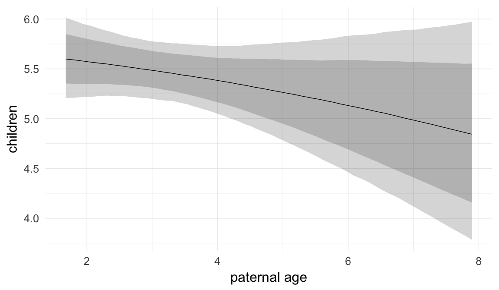
Coefficient plot
Here, we plotted the 95% posterior densities for the unexponentiated model coefficients (b_). The darkly shaded area represents the 50% credibility interval, the dark line represent the posterior mean estimate.
mcmc_areas(as.matrix(model$fit), regex_pars = "b_[^I]", point_est = "mean", prob = 0.50, prob_outer = 0.95) + ggtitle("Posterior densities with means and 50% intervals") + analysis_theme + theme(axis.text = element_text(size = 12), panel.grid = element_blank()) + xlab("Coefficient size")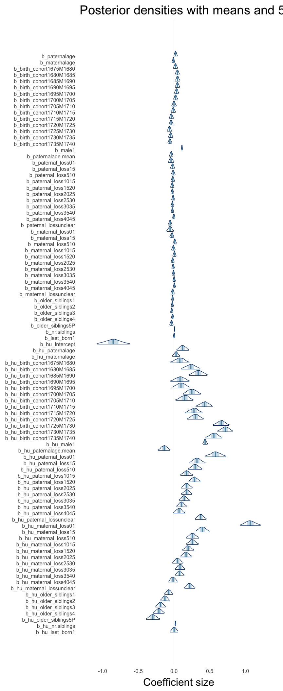
Diagnostics
These plots were made to diagnose misfit and nonconvergence.
Posterior predictive checks
In posterior predictive checks, we test whether we can approximately reproduce the real data distribution from our model.
brms::pp_check(model, re_formula = NA, type = "dens_overlay")brms::pp_check(model, re_formula = NA, type = "hist")Rhat
Did the 6 chains converge?
stanplot(model, pars = "^b_[^I]", type = 'rhat')
Effective sample size over average sample size
stanplot(model, pars = "^b", type = 'neff_hist')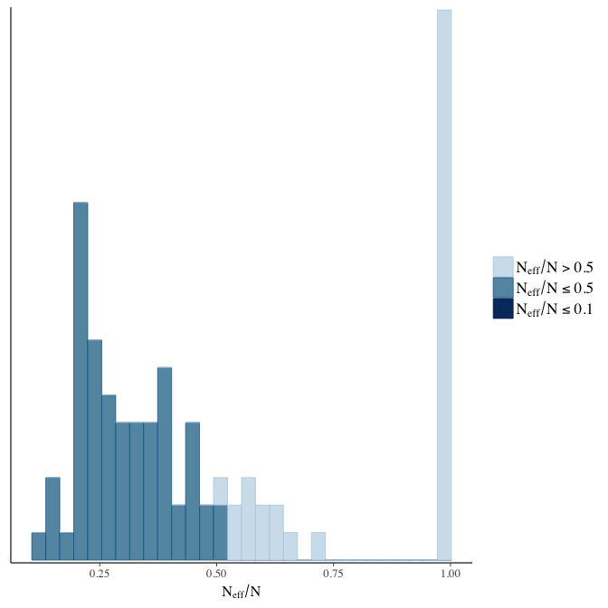
Trace plots
Trace plots are only shown in the case of nonconvergence.
if(any( summary(model)$fixed[,"Rhat"] > 1.1)) { # only do traceplots if not converged
plot(model, N = 3, ask = FALSE)
}File/cluster script name
This model was stored in the file: coefs/rpqa/r21_continuous_maternalage.rds.
Click the following link to see the script used to generate this model:
opts_chunk$set(echo = FALSE)
clusterscript = str_replace(basename(model_filename), "\\.rds",".html")
cat("[Cluster script](" , clusterscript, ")", sep = "")r22: Relaxed exclusion and censoring criteria
Like r1, but we use a 30-years-later cutoff year for our birth cohorts, relaxing our censoring requirements.
Model summary
Full summary
model_summary = summary(model, use_cache = FALSE, priors = TRUE)
print(model_summary)## Family: hurdle_poisson(log)
## Formula: children ~ paternalage + birth_cohort + male + maternalage.factor + paternalage.mean + paternal_loss + maternal_loss + older_siblings + nr.siblings + last_born + (1 | idParents)
## hu ~ paternalage + birth_cohort + male + maternalage.factor + paternalage.mean + paternal_loss + maternal_loss + older_siblings + nr.siblings + last_born + (1 | idParents)
## Data: model_data (Number of observations: 186562)
## Samples: 6 chains, each with iter = 1300; warmup = 400; thin = 1;
## total post-warmup samples = 5400
## WAIC: Not computed
##
## Priors:
## b ~ normal(0,5)
## sd ~ student_t(3, 0, 5)
## b_hu ~ normal(0,5)
## sd_hu ~ student_t(3, 0, 10)
##
## Group-Level Effects:
## ~idParents (Number of levels: 30213)
## Estimate Est.Error l-95% CI u-95% CI Eff.Sample Rhat
## sd(Intercept) 0.24 0.00 0.23 0.24 1979 1
## sd(hu_Intercept) 0.62 0.01 0.61 0.64 2324 1
##
## Population-Level Effects:
## Estimate Est.Error l-95% CI u-95% CI Eff.Sample
## Intercept 2.22 0.08 2.06 2.38 60
## paternalage 0.02 0.01 0.00 0.03 3904
## birth_cohort1635M1640 0.15 0.10 -0.05 0.33 166
## birth_cohort1640M1645 0.16 0.09 -0.01 0.34 101
## birth_cohort1645M1650 0.04 0.09 -0.13 0.22 99
## birth_cohort1650M1655 0.05 0.08 -0.11 0.22 77
## birth_cohort1655M1660 0.06 0.08 -0.09 0.22 64
## birth_cohort1660M1665 0.04 0.08 -0.12 0.20 62
## birth_cohort1665M1670 0.02 0.08 -0.13 0.18 62
## birth_cohort1670M1675 -0.03 0.08 -0.19 0.13 60
## birth_cohort1675M1680 0.00 0.08 -0.16 0.15 59
## birth_cohort1680M1685 0.03 0.08 -0.13 0.18 60
## birth_cohort1685M1690 0.03 0.08 -0.13 0.18 61
## birth_cohort1690M1695 0.03 0.08 -0.13 0.18 61
## birth_cohort1695M1700 0.01 0.08 -0.15 0.16 60
## birth_cohort1700M1705 0.00 0.08 -0.16 0.15 60
## birth_cohort1705M1710 -0.02 0.08 -0.18 0.13 60
## birth_cohort1710M1715 -0.03 0.08 -0.18 0.13 60
## birth_cohort1715M1720 -0.04 0.08 -0.20 0.11 60
## birth_cohort1720M1725 -0.04 0.08 -0.19 0.12 60
## birth_cohort1725M1730 -0.04 0.08 -0.20 0.11 60
## birth_cohort1730M1735 -0.02 0.08 -0.17 0.13 59
## birth_cohort1735M1740 -0.02 0.08 -0.18 0.13 59
## birth_cohort1740M1745 0.00 0.08 -0.16 0.15 59
## birth_cohort1745M1750 -0.01 0.08 -0.16 0.15 59
## birth_cohort1750M1755 -0.05 0.08 -0.20 0.11 59
## birth_cohort1755M1760 -0.14 0.08 -0.29 0.02 59
## birth_cohort1760M1765 -0.33 0.08 -0.48 -0.17 59
## birth_cohort1765M1770 -0.64 0.08 -0.80 -0.49 60
## male1 0.03 0.00 0.03 0.04 5400
## maternalage.factor1420 -0.01 0.01 -0.02 0.01 5400
## maternalage.factor3550 0.00 0.00 -0.01 0.01 5400
## paternalage.mean -0.04 0.01 -0.06 -0.03 4099
## paternal_loss01 -0.01 0.01 -0.03 0.02 5400
## paternal_loss15 -0.01 0.01 -0.03 0.01 3773
## paternal_loss510 0.00 0.01 -0.02 0.02 3452
## paternal_loss1015 0.00 0.01 -0.01 0.02 3400
## paternal_loss1520 0.00 0.01 -0.01 0.02 3461
## paternal_loss2025 -0.01 0.01 -0.02 0.00 3829
## paternal_loss2530 -0.01 0.01 -0.03 0.00 3837
## paternal_loss3035 -0.01 0.01 -0.02 0.00 4177
## paternal_loss3540 -0.01 0.01 -0.02 0.00 5400
## paternal_loss4045 0.00 0.01 -0.01 0.01 5400
## paternal_lossunclear -0.04 0.01 -0.06 -0.03 3569
## maternal_loss01 -0.04 0.01 -0.07 -0.01 5400
## maternal_loss15 -0.02 0.01 -0.04 0.00 4358
## maternal_loss510 0.00 0.01 -0.01 0.02 3983
## maternal_loss1015 -0.02 0.01 -0.03 -0.01 3900
## maternal_loss1520 -0.01 0.01 -0.02 0.01 4280
## maternal_loss2025 -0.02 0.01 -0.04 -0.01 4414
## maternal_loss2530 -0.01 0.01 -0.02 0.00 4652
## maternal_loss3035 -0.01 0.01 -0.02 0.00 4563
## maternal_loss3540 -0.01 0.01 -0.02 0.00 5400
## maternal_loss4045 0.00 0.01 -0.01 0.01 5400
## maternal_lossunclear -0.03 0.01 -0.05 -0.01 3750
## older_siblings1 -0.02 0.00 -0.03 -0.01 5400
## older_siblings2 -0.03 0.01 -0.04 -0.02 5400
## older_siblings3 -0.04 0.01 -0.05 -0.03 5400
## older_siblings4 -0.04 0.01 -0.05 -0.02 5400
## older_siblings5P -0.05 0.01 -0.07 -0.04 5400
## nr.siblings 0.01 0.00 0.01 0.01 4666
## last_born1 0.00 0.00 -0.01 0.01 5400
## hu_Intercept -1.88 0.35 -2.61 -1.23 173
## hu_paternalage 0.21 0.02 0.17 0.26 3067
## hu_birth_cohort1635M1640 0.07 0.51 -0.92 1.09 419
## hu_birth_cohort1640M1645 0.26 0.42 -0.54 1.11 264
## hu_birth_cohort1645M1650 0.60 0.40 -0.17 1.40 240
## hu_birth_cohort1650M1655 0.51 0.38 -0.20 1.25 202
## hu_birth_cohort1655M1660 0.60 0.36 -0.08 1.34 185
## hu_birth_cohort1660M1665 0.66 0.35 -0.01 1.41 177
## hu_birth_cohort1665M1670 0.89 0.35 0.22 1.62 177
## hu_birth_cohort1670M1675 0.90 0.35 0.26 1.64 173
## hu_birth_cohort1675M1680 0.96 0.35 0.31 1.67 175
## hu_birth_cohort1680M1685 1.11 0.35 0.48 1.85 173
## hu_birth_cohort1685M1690 1.20 0.35 0.56 1.92 174
## hu_birth_cohort1690M1695 0.95 0.34 0.31 1.69 172
## hu_birth_cohort1695M1700 0.96 0.34 0.31 1.69 172
## hu_birth_cohort1700M1705 1.11 0.34 0.48 1.83 171
## hu_birth_cohort1705M1710 0.99 0.34 0.35 1.72 171
## hu_birth_cohort1710M1715 1.23 0.34 0.60 1.95 171
## hu_birth_cohort1715M1720 1.05 0.34 0.42 1.78 172
## hu_birth_cohort1720M1725 1.04 0.34 0.40 1.76 170
## hu_birth_cohort1725M1730 1.33 0.34 0.70 2.06 170
## hu_birth_cohort1730M1735 1.36 0.34 0.73 2.09 170
## hu_birth_cohort1735M1740 1.21 0.34 0.58 1.94 171
## hu_birth_cohort1740M1745 1.34 0.34 0.71 2.06 171
## hu_birth_cohort1745M1750 1.55 0.34 0.92 2.26 171
## hu_birth_cohort1750M1755 1.44 0.34 0.81 2.16 170
## hu_birth_cohort1755M1760 1.76 0.34 1.13 2.49 170
## hu_birth_cohort1760M1765 1.60 0.34 0.98 2.33 171
## hu_birth_cohort1765M1770 1.79 0.34 1.15 2.52 170
## hu_male1 0.30 0.01 0.29 0.32 5400
## hu_maternalage.factor1420 0.04 0.02 -0.01 0.09 5400
## hu_maternalage.factor3550 -0.03 0.02 -0.06 0.01 5400
## hu_paternalage.mean -0.20 0.03 -0.25 -0.15 3183
## hu_paternal_loss01 0.56 0.04 0.47 0.65 5400
## hu_paternal_loss15 0.39 0.03 0.33 0.46 5400
## hu_paternal_loss510 0.32 0.03 0.26 0.38 4072
## hu_paternal_loss1015 0.24 0.03 0.19 0.30 4069
## hu_paternal_loss1520 0.28 0.03 0.23 0.33 3594
## hu_paternal_loss2025 0.20 0.02 0.16 0.25 3804
## hu_paternal_loss2530 0.20 0.02 0.15 0.24 3510
## hu_paternal_loss3035 0.16 0.02 0.12 0.20 3583
## hu_paternal_loss3540 0.13 0.02 0.09 0.17 4099
## hu_paternal_loss4045 0.12 0.02 0.07 0.16 5400
## hu_paternal_lossunclear 0.44 0.02 0.39 0.48 3479
## hu_maternal_loss01 1.26 0.04 1.17 1.35 5400
## hu_maternal_loss15 0.45 0.03 0.39 0.51 5400
## hu_maternal_loss510 0.32 0.03 0.27 0.37 5400
## hu_maternal_loss1015 0.29 0.03 0.24 0.34 5400
## hu_maternal_loss1520 0.19 0.03 0.14 0.24 5400
## hu_maternal_loss2025 0.15 0.02 0.10 0.20 5400
## hu_maternal_loss2530 0.14 0.02 0.10 0.19 5400
## hu_maternal_loss3035 0.09 0.02 0.05 0.14 5400
## hu_maternal_loss3540 0.08 0.02 0.04 0.12 5400
## hu_maternal_loss4045 0.04 0.02 0.00 0.08 5400
## hu_maternal_lossunclear 0.33 0.03 0.28 0.38 5400
## hu_older_siblings1 -0.08 0.02 -0.11 -0.04 5400
## hu_older_siblings2 -0.16 0.02 -0.20 -0.11 3922
## hu_older_siblings3 -0.18 0.02 -0.22 -0.13 3492
## hu_older_siblings4 -0.19 0.03 -0.25 -0.14 3384
## hu_older_siblings5P -0.29 0.03 -0.35 -0.23 2955
## hu_nr.siblings 0.03 0.00 0.03 0.04 4418
## hu_last_born1 0.01 0.02 -0.02 0.04 5400
## Rhat
## Intercept 1.09
## paternalage 1.00
## birth_cohort1635M1640 1.04
## birth_cohort1640M1645 1.06
## birth_cohort1645M1650 1.06
## birth_cohort1650M1655 1.07
## birth_cohort1655M1660 1.08
## birth_cohort1660M1665 1.09
## birth_cohort1665M1670 1.09
## birth_cohort1670M1675 1.09
## birth_cohort1675M1680 1.09
## birth_cohort1680M1685 1.09
## birth_cohort1685M1690 1.09
## birth_cohort1690M1695 1.09
## birth_cohort1695M1700 1.09
## birth_cohort1700M1705 1.09
## birth_cohort1705M1710 1.09
## birth_cohort1710M1715 1.09
## birth_cohort1715M1720 1.09
## birth_cohort1720M1725 1.09
## birth_cohort1725M1730 1.09
## birth_cohort1730M1735 1.09
## birth_cohort1735M1740 1.09
## birth_cohort1740M1745 1.09
## birth_cohort1745M1750 1.09
## birth_cohort1750M1755 1.09
## birth_cohort1755M1760 1.09
## birth_cohort1760M1765 1.09
## birth_cohort1765M1770 1.09
## male1 1.00
## maternalage.factor1420 1.00
## maternalage.factor3550 1.00
## paternalage.mean 1.00
## paternal_loss01 1.00
## paternal_loss15 1.00
## paternal_loss510 1.00
## paternal_loss1015 1.00
## paternal_loss1520 1.00
## paternal_loss2025 1.00
## paternal_loss2530 1.00
## paternal_loss3035 1.00
## paternal_loss3540 1.00
## paternal_loss4045 1.00
## paternal_lossunclear 1.00
## maternal_loss01 1.00
## maternal_loss15 1.00
## maternal_loss510 1.00
## maternal_loss1015 1.00
## maternal_loss1520 1.00
## maternal_loss2025 1.00
## maternal_loss2530 1.00
## maternal_loss3035 1.00
## maternal_loss3540 1.00
## maternal_loss4045 1.00
## maternal_lossunclear 1.00
## older_siblings1 1.00
## older_siblings2 1.00
## older_siblings3 1.00
## older_siblings4 1.00
## older_siblings5P 1.00
## nr.siblings 1.00
## last_born1 1.00
## hu_Intercept 1.02
## hu_paternalage 1.00
## hu_birth_cohort1635M1640 1.01
## hu_birth_cohort1640M1645 1.01
## hu_birth_cohort1645M1650 1.01
## hu_birth_cohort1650M1655 1.02
## hu_birth_cohort1655M1660 1.02
## hu_birth_cohort1660M1665 1.02
## hu_birth_cohort1665M1670 1.02
## hu_birth_cohort1670M1675 1.02
## hu_birth_cohort1675M1680 1.02
## hu_birth_cohort1680M1685 1.02
## hu_birth_cohort1685M1690 1.02
## hu_birth_cohort1690M1695 1.02
## hu_birth_cohort1695M1700 1.02
## hu_birth_cohort1700M1705 1.02
## hu_birth_cohort1705M1710 1.02
## hu_birth_cohort1710M1715 1.02
## hu_birth_cohort1715M1720 1.02
## hu_birth_cohort1720M1725 1.02
## hu_birth_cohort1725M1730 1.02
## hu_birth_cohort1730M1735 1.02
## hu_birth_cohort1735M1740 1.02
## hu_birth_cohort1740M1745 1.02
## hu_birth_cohort1745M1750 1.02
## hu_birth_cohort1750M1755 1.02
## hu_birth_cohort1755M1760 1.02
## hu_birth_cohort1760M1765 1.02
## hu_birth_cohort1765M1770 1.02
## hu_male1 1.00
## hu_maternalage.factor1420 1.00
## hu_maternalage.factor3550 1.00
## hu_paternalage.mean 1.00
## hu_paternal_loss01 1.00
## hu_paternal_loss15 1.00
## hu_paternal_loss510 1.00
## hu_paternal_loss1015 1.00
## hu_paternal_loss1520 1.00
## hu_paternal_loss2025 1.00
## hu_paternal_loss2530 1.00
## hu_paternal_loss3035 1.00
## hu_paternal_loss3540 1.00
## hu_paternal_loss4045 1.00
## hu_paternal_lossunclear 1.00
## hu_maternal_loss01 1.00
## hu_maternal_loss15 1.00
## hu_maternal_loss510 1.00
## hu_maternal_loss1015 1.00
## hu_maternal_loss1520 1.00
## hu_maternal_loss2025 1.00
## hu_maternal_loss2530 1.00
## hu_maternal_loss3035 1.00
## hu_maternal_loss3540 1.00
## hu_maternal_loss4045 1.00
## hu_maternal_lossunclear 1.00
## hu_older_siblings1 1.00
## hu_older_siblings2 1.00
## hu_older_siblings3 1.00
## hu_older_siblings4 1.00
## hu_older_siblings5P 1.00
## hu_nr.siblings 1.00
## hu_last_born1 1.00
##
## Samples were drawn using sampling(NUTS). For each parameter, Eff.Sample
## is a crude measure of effective sample size, and Rhat is the potential
## scale reduction factor on split chains (at convergence, Rhat = 1).Table of fixed effects
Estimates are exp(b). When they are referring to the hurdle (hu) component, or a dichotomous outcome, they are odds ratios, when they are referring to a Poisson component, they are hazard ratios. In both cases, they are presented with 95% credibility intervals. To see the effects on the response scale (probability or number of children), consult the marginal effect plots.
fixed_eff = data.frame(model_summary$fixed, check.names = F)
fixed_eff$Est.Error = fixed_eff$Eff.Sample = fixed_eff$Rhat = NULL
fixed_eff$`Odds/hazard ratio` = exp(fixed_eff$Estimate)
fixed_eff$`OR/HR low 95%` = exp(fixed_eff$`l-95% CI`)
fixed_eff$`OR/HR high 95%` = exp(fixed_eff$`u-95% CI`)
fixed_eff = fixed_eff %>% select(`Odds/hazard ratio`, `OR/HR low 95%`, `OR/HR high 95%`)
pander::pander(fixed_eff)| Odds/hazard ratio | OR/HR low 95% | OR/HR high 95% | |
|---|---|---|---|
| Intercept | 9.202 | 7.878 | 10.78 |
| paternalage | 1.017 | 1.004 | 1.03 |
| birth_cohort1635M1640 | 1.156 | 0.9538 | 1.395 |
| birth_cohort1640M1645 | 1.177 | 0.9932 | 1.398 |
| birth_cohort1645M1650 | 1.044 | 0.88 | 1.242 |
| birth_cohort1650M1655 | 1.053 | 0.8941 | 1.24 |
| birth_cohort1655M1660 | 1.065 | 0.9094 | 1.248 |
| birth_cohort1660M1665 | 1.039 | 0.8857 | 1.216 |
| birth_cohort1665M1670 | 1.024 | 0.876 | 1.196 |
| birth_cohort1670M1675 | 0.972 | 0.8308 | 1.136 |
| birth_cohort1675M1680 | 0.9993 | 0.8558 | 1.165 |
| birth_cohort1680M1685 | 1.028 | 0.8755 | 1.197 |
| birth_cohort1685M1690 | 1.031 | 0.8817 | 1.203 |
| birth_cohort1690M1695 | 1.025 | 0.875 | 1.198 |
| birth_cohort1695M1700 | 1.01 | 0.8621 | 1.178 |
| birth_cohort1700M1705 | 0.9961 | 0.8499 | 1.161 |
| birth_cohort1705M1710 | 0.9775 | 0.8352 | 1.139 |
| birth_cohort1710M1715 | 0.9729 | 0.8327 | 1.135 |
| birth_cohort1715M1720 | 0.9605 | 0.8215 | 1.12 |
| birth_cohort1720M1725 | 0.9632 | 0.8236 | 1.123 |
| birth_cohort1725M1730 | 0.9598 | 0.8211 | 1.119 |
| birth_cohort1730M1735 | 0.9811 | 0.8397 | 1.142 |
| birth_cohort1735M1740 | 0.9776 | 0.837 | 1.141 |
| birth_cohort1740M1745 | 0.996 | 0.8522 | 1.163 |
| birth_cohort1745M1750 | 0.9944 | 0.8513 | 1.159 |
| birth_cohort1750M1755 | 0.9525 | 0.8148 | 1.112 |
| birth_cohort1755M1760 | 0.872 | 0.7456 | 1.017 |
| birth_cohort1760M1765 | 0.7209 | 0.6172 | 0.8409 |
| birth_cohort1765M1770 | 0.5265 | 0.4503 | 0.6146 |
| male1 | 1.035 | 1.03 | 1.041 |
| maternalage.factor1420 | 0.9944 | 0.9822 | 1.007 |
| maternalage.factor3550 | 0.9968 | 0.9874 | 1.007 |
| paternalage.mean | 0.9587 | 0.9449 | 0.9722 |
| paternal_loss01 | 0.9905 | 0.9659 | 1.015 |
| paternal_loss15 | 0.99 | 0.9709 | 1.009 |
| paternal_loss510 | 1.001 | 0.9848 | 1.018 |
| paternal_loss1015 | 1.001 | 0.9858 | 1.016 |
| paternal_loss1520 | 1.002 | 0.9875 | 1.016 |
| paternal_loss2025 | 0.9889 | 0.9757 | 1.002 |
| paternal_loss2530 | 0.9871 | 0.9749 | 0.9996 |
| paternal_loss3035 | 0.9893 | 0.9779 | 1.001 |
| paternal_loss3540 | 0.9897 | 0.9788 | 1.001 |
| paternal_loss4045 | 0.9972 | 0.9858 | 1.008 |
| paternal_lossunclear | 0.9566 | 0.9416 | 0.9709 |
| maternal_loss01 | 0.9596 | 0.9325 | 0.9864 |
| maternal_loss15 | 0.9796 | 0.9626 | 0.9972 |
| maternal_loss510 | 1.002 | 0.9867 | 1.018 |
| maternal_loss1015 | 0.9801 | 0.9658 | 0.9943 |
| maternal_loss1520 | 0.9935 | 0.9799 | 1.007 |
| maternal_loss2025 | 0.9788 | 0.9652 | 0.9924 |
| maternal_loss2530 | 0.9892 | 0.9762 | 1.002 |
| maternal_loss3035 | 0.9895 | 0.9778 | 1.001 |
| maternal_loss3540 | 0.9942 | 0.9838 | 1.005 |
| maternal_loss4045 | 1.003 | 0.9924 | 1.014 |
| maternal_lossunclear | 0.9702 | 0.9548 | 0.9864 |
| older_siblings1 | 0.9774 | 0.9683 | 0.9865 |
| older_siblings2 | 0.9739 | 0.9634 | 0.9843 |
| older_siblings3 | 0.9628 | 0.9515 | 0.9746 |
| older_siblings4 | 0.9641 | 0.951 | 0.9771 |
| older_siblings5P | 0.949 | 0.9339 | 0.9647 |
| nr.siblings | 1.007 | 1.005 | 1.008 |
| last_born1 | 1 | 0.991 | 1.009 |
| hu_Intercept | 0.1523 | 0.07333 | 0.2909 |
| hu_paternalage | 1.24 | 1.182 | 1.299 |
| hu_birth_cohort1635M1640 | 1.077 | 0.3991 | 2.982 |
| hu_birth_cohort1640M1645 | 1.302 | 0.5851 | 3.02 |
| hu_birth_cohort1645M1650 | 1.815 | 0.8456 | 4.054 |
| hu_birth_cohort1650M1655 | 1.662 | 0.8201 | 3.479 |
| hu_birth_cohort1655M1660 | 1.816 | 0.9188 | 3.821 |
| hu_birth_cohort1660M1665 | 1.943 | 0.9852 | 4.109 |
| hu_birth_cohort1665M1670 | 2.43 | 1.249 | 5.058 |
| hu_birth_cohort1670M1675 | 2.467 | 1.298 | 5.177 |
| hu_birth_cohort1675M1680 | 2.603 | 1.361 | 5.333 |
| hu_birth_cohort1680M1685 | 3.041 | 1.615 | 6.373 |
| hu_birth_cohort1685M1690 | 3.33 | 1.75 | 6.819 |
| hu_birth_cohort1690M1695 | 2.579 | 1.365 | 5.414 |
| hu_birth_cohort1695M1700 | 2.599 | 1.361 | 5.412 |
| hu_birth_cohort1700M1705 | 3.023 | 1.619 | 6.246 |
| hu_birth_cohort1705M1710 | 2.688 | 1.42 | 5.598 |
| hu_birth_cohort1710M1715 | 3.422 | 1.822 | 7.054 |
| hu_birth_cohort1715M1720 | 2.861 | 1.52 | 5.91 |
| hu_birth_cohort1720M1725 | 2.815 | 1.493 | 5.8 |
| hu_birth_cohort1725M1730 | 3.778 | 2.007 | 7.808 |
| hu_birth_cohort1730M1735 | 3.91 | 2.079 | 8.06 |
| hu_birth_cohort1735M1740 | 3.346 | 1.784 | 6.942 |
| hu_birth_cohort1740M1745 | 3.822 | 2.028 | 7.874 |
| hu_birth_cohort1745M1750 | 4.695 | 2.504 | 9.63 |
| hu_birth_cohort1750M1755 | 4.224 | 2.238 | 8.714 |
| hu_birth_cohort1755M1760 | 5.812 | 3.086 | 12.02 |
| hu_birth_cohort1760M1765 | 4.977 | 2.652 | 10.25 |
| hu_birth_cohort1765M1770 | 5.989 | 3.168 | 12.45 |
| hu_male1 | 1.356 | 1.33 | 1.383 |
| hu_maternalage.factor1420 | 1.039 | 0.9905 | 1.09 |
| hu_maternalage.factor3550 | 0.9728 | 0.9392 | 1.007 |
| hu_paternalage.mean | 0.8162 | 0.7765 | 0.8583 |
| hu_paternal_loss01 | 1.753 | 1.603 | 1.911 |
| hu_paternal_loss15 | 1.479 | 1.388 | 1.577 |
| hu_paternal_loss510 | 1.379 | 1.302 | 1.458 |
| hu_paternal_loss1015 | 1.276 | 1.21 | 1.344 |
| hu_paternal_loss1520 | 1.321 | 1.258 | 1.39 |
| hu_paternal_loss2025 | 1.227 | 1.171 | 1.288 |
| hu_paternal_loss2530 | 1.22 | 1.166 | 1.276 |
| hu_paternal_loss3035 | 1.172 | 1.124 | 1.222 |
| hu_paternal_loss3540 | 1.136 | 1.091 | 1.184 |
| hu_paternal_loss4045 | 1.122 | 1.075 | 1.174 |
| hu_paternal_lossunclear | 1.546 | 1.472 | 1.622 |
| hu_maternal_loss01 | 3.519 | 3.224 | 3.841 |
| hu_maternal_loss15 | 1.569 | 1.483 | 1.66 |
| hu_maternal_loss510 | 1.38 | 1.312 | 1.453 |
| hu_maternal_loss1015 | 1.333 | 1.265 | 1.403 |
| hu_maternal_loss1520 | 1.21 | 1.151 | 1.272 |
| hu_maternal_loss2025 | 1.162 | 1.107 | 1.219 |
| hu_maternal_loss2530 | 1.15 | 1.1 | 1.204 |
| hu_maternal_loss3035 | 1.096 | 1.051 | 1.145 |
| hu_maternal_loss3540 | 1.081 | 1.039 | 1.126 |
| hu_maternal_loss4045 | 1.036 | 0.9959 | 1.078 |
| hu_maternal_lossunclear | 1.392 | 1.328 | 1.465 |
| hu_older_siblings1 | 0.9272 | 0.894 | 0.9618 |
| hu_older_siblings2 | 0.8563 | 0.8214 | 0.8928 |
| hu_older_siblings3 | 0.8384 | 0.8005 | 0.8787 |
| hu_older_siblings4 | 0.8238 | 0.7816 | 0.8671 |
| hu_older_siblings5P | 0.7455 | 0.7017 | 0.7923 |
| hu_nr.siblings | 1.032 | 1.027 | 1.037 |
| hu_last_born1 | 1.01 | 0.9763 | 1.044 |
Paternal age effect
pander::pander(paternal_age_10y_effect(model))| effect | median_estimate | ci_95 | ci_80 |
|---|---|---|---|
| estimate father 25y | 7.47 | [6.15;8.92] | [6.64;8.39] |
| estimate father 35y | 7.34 | [5.92;8.86] | [6.48;8.3] |
| percentage change | -1.74 | [-4.43;0.41] | [-3.36;-0.28] |
| OR/IRR | 1.02 | [1;1.03] | [1.01;1.03] |
| OR hurdle | 1.24 | [1.18;1.3] | [1.2;1.28] |
Marginal effect plots
In these marginal effect plots, we set all predictors except the one shown on the X axis to their mean and in the case of factors to their reference level. We then plot the estimated association between the X axis predictor and the outcome on the response scale (e.g. probability of survival/marriage or number of children).
plot.brmsMarginalEffects_shades(
x = marginal_effects(model, re_formula = NA, probs = c(0.025,0.975)),
y = marginal_effects(model, re_formula = NA, probs = c(0.1,0.9)),
ask = FALSE)

Coefficient plot
Here, we plotted the 95% posterior densities for the unexponentiated model coefficients (b_). The darkly shaded area represents the 50% credibility interval, the dark line represent the posterior mean estimate.
mcmc_areas(as.matrix(model$fit), regex_pars = "b_[^I]", point_est = "mean", prob = 0.50, prob_outer = 0.95) + ggtitle("Posterior densities with means and 50% intervals") + analysis_theme + theme(axis.text = element_text(size = 12), panel.grid = element_blank()) + xlab("Coefficient size")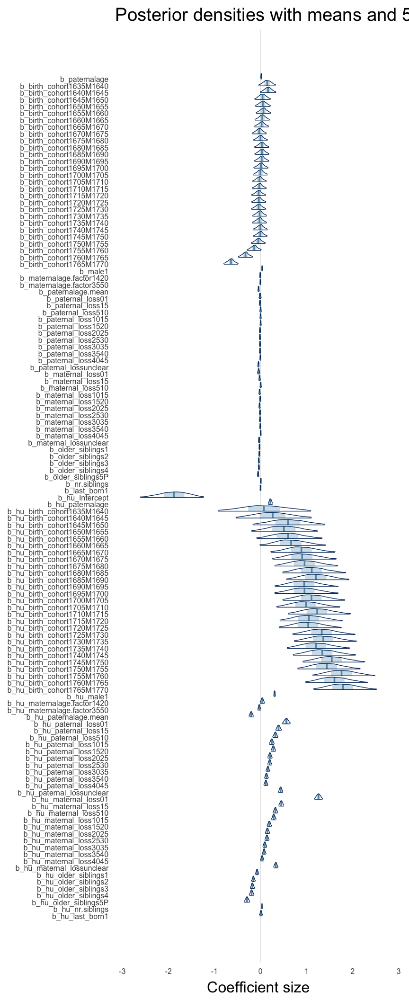
Diagnostics
These plots were made to diagnose misfit and nonconvergence.
Posterior predictive checks
In posterior predictive checks, we test whether we can approximately reproduce the real data distribution from our model.
brms::pp_check(model, re_formula = NA, type = "dens_overlay")brms::pp_check(model, re_formula = NA, type = "hist")Rhat
Did the 6 chains converge?
stanplot(model, pars = "^b_[^I]", type = 'rhat')Effective sample size over average sample size
stanplot(model, pars = "^b", type = 'neff_hist')Trace plots
Trace plots are only shown in the case of nonconvergence.
if(any( summary(model)$fixed[,"Rhat"] > 1.1)) { # only do traceplots if not converged
plot(model, N = 3, ask = FALSE)
}File/cluster script name
This model was stored in the file: coefs/rpqa/r22_relaxed_exclusion_censoring.rds.
Click the following link to see the script used to generate this model:
opts_chunk$set(echo = FALSE)
clusterscript = str_replace(basename(model_filename), "\\.rds",".html")
cat("[Cluster script](" , clusterscript, ")", sep = "")r23: Student’s t and half-Cauchy priors
To demonstrate the robustness of our prior choice we use Student’s t priors (fatter tails than normal priors) for our population-level effects and a half-Cauchy prior for our group-level effect for the family.
Model summary
Full summary
model_summary = summary(model, use_cache = FALSE, priors = TRUE)
print(model_summary)## Family: hurdle_poisson(log)
## Formula: children ~ paternalage + birth_cohort + male + maternalage.factor + paternalage.mean + paternal_loss + maternal_loss + older_siblings + nr.siblings + last_born + (1 | idParents)
## hu ~ paternalage + birth_cohort + male + maternalage.factor + paternalage.mean + paternal_loss + maternal_loss + older_siblings + nr.siblings + last_born + (1 | idParents)
## Data: model_data (Number of observations: 68724)
## Samples: 6 chains, each with iter = 800; warmup = 300; thin = 1;
## total post-warmup samples = 3000
## WAIC: Not computed
##
## Priors:
## b ~ student_t(5,0,10)
## sd ~ cauchy(0,5)
## b_hu ~ student_t(5,0,10)
## sd_hu ~ student_t(3, 0, 10)
##
## Group-Level Effects:
## ~idParents (Number of levels: 12205)
## Estimate Est.Error l-95% CI u-95% CI Eff.Sample Rhat
## sd(Intercept) 0.27 0.00 0.27 0.28 1098 1
## sd(hu_Intercept) 0.63 0.01 0.60 0.66 1206 1
##
## Population-Level Effects:
## Estimate Est.Error l-95% CI u-95% CI Eff.Sample
## Intercept 2.12 0.03 2.06 2.17 1139
## paternalage 0.01 0.01 -0.01 0.03 1233
## birth_cohort1675M1680 0.02 0.02 -0.01 0.05 1366
## birth_cohort1680M1685 0.05 0.02 0.02 0.08 1258
## birth_cohort1685M1690 0.05 0.02 0.02 0.08 1052
## birth_cohort1690M1695 0.05 0.02 0.02 0.08 890
## birth_cohort1695M1700 0.04 0.02 0.00 0.07 817
## birth_cohort1700M1705 0.02 0.02 -0.01 0.05 770
## birth_cohort1705M1710 0.00 0.02 -0.03 0.03 784
## birth_cohort1710M1715 -0.01 0.02 -0.04 0.02 723
## birth_cohort1715M1720 -0.04 0.02 -0.07 -0.01 768
## birth_cohort1720M1725 -0.04 0.02 -0.07 -0.01 671
## birth_cohort1725M1730 -0.07 0.02 -0.10 -0.03 724
## birth_cohort1730M1735 -0.05 0.02 -0.08 -0.02 656
## birth_cohort1735M1740 -0.06 0.02 -0.09 -0.03 685
## male1 0.11 0.00 0.10 0.12 3000
## maternalage.factor1420 -0.01 0.01 -0.03 0.01 3000
## maternalage.factor3550 0.00 0.01 -0.01 0.02 3000
## paternalage.mean -0.03 0.01 -0.05 -0.01 1275
## paternal_loss01 -0.04 0.02 -0.08 0.00 1803
## paternal_loss15 -0.02 0.02 -0.05 0.01 1429
## paternal_loss510 -0.01 0.01 -0.04 0.02 1263
## paternal_loss1015 -0.02 0.01 -0.04 0.01 1239
## paternal_loss1520 -0.02 0.01 -0.05 0.00 1316
## paternal_loss2025 -0.02 0.01 -0.05 0.00 1255
## paternal_loss2530 -0.01 0.01 -0.03 0.01 1455
## paternal_loss3035 -0.02 0.01 -0.04 0.00 1667
## paternal_loss3540 -0.02 0.01 -0.04 0.00 1856
## paternal_loss4045 0.00 0.01 -0.02 0.02 3000
## paternal_lossunclear -0.05 0.01 -0.08 -0.03 1276
## maternal_loss01 -0.05 0.02 -0.10 -0.01 3000
## maternal_loss15 -0.03 0.02 -0.06 0.00 2303
## maternal_loss510 0.01 0.01 -0.01 0.04 1987
## maternal_loss1015 -0.01 0.01 -0.03 0.02 2084
## maternal_loss1520 0.01 0.01 -0.02 0.03 2107
## maternal_loss2025 -0.02 0.01 -0.04 0.00 2128
## maternal_loss2530 -0.01 0.01 -0.03 0.01 2184
## maternal_loss3035 -0.01 0.01 -0.03 0.01 2102
## maternal_loss3540 0.00 0.01 -0.02 0.02 3000
## maternal_loss4045 0.00 0.01 -0.01 0.02 3000
## maternal_lossunclear -0.02 0.01 -0.04 0.01 1918
## older_siblings1 -0.02 0.01 -0.04 -0.01 3000
## older_siblings2 -0.03 0.01 -0.04 -0.01 2350
## older_siblings3 -0.03 0.01 -0.05 -0.01 2094
## older_siblings4 -0.02 0.01 -0.05 0.00 1953
## older_siblings5P -0.04 0.01 -0.07 -0.01 1408
## nr.siblings 0.01 0.00 0.01 0.01 1840
## last_born1 0.00 0.01 -0.01 0.02 3000
## hu_Intercept -0.80 0.09 -0.97 -0.62 1090
## hu_paternalage 0.13 0.04 0.05 0.21 1375
## hu_birth_cohort1675M1680 0.08 0.07 -0.05 0.21 1353
## hu_birth_cohort1680M1685 0.23 0.07 0.10 0.36 1130
## hu_birth_cohort1685M1690 0.33 0.07 0.20 0.47 1089
## hu_birth_cohort1690M1695 0.08 0.07 -0.05 0.21 1022
## hu_birth_cohort1695M1700 0.10 0.06 -0.03 0.23 846
## hu_birth_cohort1700M1705 0.25 0.06 0.13 0.38 841
## hu_birth_cohort1705M1710 0.15 0.06 0.04 0.27 836
## hu_birth_cohort1710M1715 0.43 0.06 0.32 0.56 808
## hu_birth_cohort1715M1720 0.29 0.06 0.17 0.40 829
## hu_birth_cohort1720M1725 0.31 0.06 0.19 0.42 762
## hu_birth_cohort1725M1730 0.67 0.06 0.55 0.78 783
## hu_birth_cohort1730M1735 0.73 0.06 0.62 0.84 753
## hu_birth_cohort1735M1740 0.57 0.06 0.46 0.68 724
## hu_male1 0.44 0.02 0.40 0.47 3000
## hu_maternalage.factor1420 0.05 0.04 -0.02 0.12 3000
## hu_maternalage.factor3550 0.03 0.03 -0.03 0.09 3000
## hu_paternalage.mean -0.15 0.04 -0.23 -0.06 1433
## hu_paternal_loss01 0.57 0.07 0.43 0.71 3000
## hu_paternal_loss15 0.31 0.06 0.20 0.42 1609
## hu_paternal_loss510 0.29 0.05 0.20 0.38 1646
## hu_paternal_loss1015 0.17 0.05 0.08 0.26 1682
## hu_paternal_loss1520 0.28 0.04 0.20 0.37 1542
## hu_paternal_loss2025 0.18 0.04 0.10 0.25 1538
## hu_paternal_loss2530 0.18 0.04 0.10 0.25 1622
## hu_paternal_loss3035 0.14 0.04 0.07 0.21 1724
## hu_paternal_loss3540 0.10 0.04 0.03 0.17 1865
## hu_paternal_loss4045 0.07 0.04 -0.01 0.14 3000
## hu_paternal_lossunclear 0.37 0.04 0.29 0.45 1349
## hu_maternal_loss01 1.06 0.07 0.92 1.20 3000
## hu_maternal_loss15 0.39 0.05 0.29 0.49 3000
## hu_maternal_loss510 0.26 0.04 0.17 0.35 3000
## hu_maternal_loss1015 0.26 0.04 0.17 0.34 3000
## hu_maternal_loss1520 0.20 0.04 0.12 0.28 3000
## hu_maternal_loss2025 0.17 0.04 0.09 0.25 3000
## hu_maternal_loss2530 0.05 0.04 -0.02 0.13 3000
## hu_maternal_loss3035 0.09 0.03 0.02 0.15 3000
## hu_maternal_loss3540 0.08 0.03 0.02 0.15 3000
## hu_maternal_loss4045 -0.01 0.03 -0.08 0.06 3000
## hu_maternal_lossunclear 0.22 0.04 0.15 0.30 2468
## hu_older_siblings1 -0.06 0.03 -0.12 0.00 3000
## hu_older_siblings2 -0.11 0.03 -0.17 -0.04 1625
## hu_older_siblings3 -0.16 0.04 -0.24 -0.09 1475
## hu_older_siblings4 -0.19 0.04 -0.27 -0.09 1473
## hu_older_siblings5P -0.27 0.05 -0.37 -0.17 1206
## hu_nr.siblings 0.02 0.00 0.01 0.03 2228
## hu_last_born1 0.00 0.03 -0.06 0.06 3000
## Rhat
## Intercept 1.01
## paternalage 1.01
## birth_cohort1675M1680 1.00
## birth_cohort1680M1685 1.00
## birth_cohort1685M1690 1.01
## birth_cohort1690M1695 1.00
## birth_cohort1695M1700 1.01
## birth_cohort1700M1705 1.01
## birth_cohort1705M1710 1.00
## birth_cohort1710M1715 1.01
## birth_cohort1715M1720 1.00
## birth_cohort1720M1725 1.01
## birth_cohort1725M1730 1.01
## birth_cohort1730M1735 1.01
## birth_cohort1735M1740 1.01
## male1 1.00
## maternalage.factor1420 1.00
## maternalage.factor3550 1.00
## paternalage.mean 1.01
## paternal_loss01 1.00
## paternal_loss15 1.00
## paternal_loss510 1.00
## paternal_loss1015 1.01
## paternal_loss1520 1.00
## paternal_loss2025 1.00
## paternal_loss2530 1.00
## paternal_loss3035 1.00
## paternal_loss3540 1.00
## paternal_loss4045 1.00
## paternal_lossunclear 1.00
## maternal_loss01 1.00
## maternal_loss15 1.00
## maternal_loss510 1.00
## maternal_loss1015 1.00
## maternal_loss1520 1.00
## maternal_loss2025 1.00
## maternal_loss2530 1.00
## maternal_loss3035 1.00
## maternal_loss3540 1.00
## maternal_loss4045 1.00
## maternal_lossunclear 1.00
## older_siblings1 1.00
## older_siblings2 1.00
## older_siblings3 1.00
## older_siblings4 1.00
## older_siblings5P 1.00
## nr.siblings 1.00
## last_born1 1.00
## hu_Intercept 1.00
## hu_paternalage 1.00
## hu_birth_cohort1675M1680 1.00
## hu_birth_cohort1680M1685 1.00
## hu_birth_cohort1685M1690 1.00
## hu_birth_cohort1690M1695 1.00
## hu_birth_cohort1695M1700 1.00
## hu_birth_cohort1700M1705 1.00
## hu_birth_cohort1705M1710 1.00
## hu_birth_cohort1710M1715 1.00
## hu_birth_cohort1715M1720 1.01
## hu_birth_cohort1720M1725 1.00
## hu_birth_cohort1725M1730 1.00
## hu_birth_cohort1730M1735 1.00
## hu_birth_cohort1735M1740 1.00
## hu_male1 1.00
## hu_maternalage.factor1420 1.00
## hu_maternalage.factor3550 1.00
## hu_paternalage.mean 1.00
## hu_paternal_loss01 1.00
## hu_paternal_loss15 1.00
## hu_paternal_loss510 1.00
## hu_paternal_loss1015 1.00
## hu_paternal_loss1520 1.00
## hu_paternal_loss2025 1.00
## hu_paternal_loss2530 1.00
## hu_paternal_loss3035 1.00
## hu_paternal_loss3540 1.00
## hu_paternal_loss4045 1.00
## hu_paternal_lossunclear 1.01
## hu_maternal_loss01 1.00
## hu_maternal_loss15 1.00
## hu_maternal_loss510 1.00
## hu_maternal_loss1015 1.00
## hu_maternal_loss1520 1.00
## hu_maternal_loss2025 1.00
## hu_maternal_loss2530 1.00
## hu_maternal_loss3035 1.00
## hu_maternal_loss3540 1.00
## hu_maternal_loss4045 1.00
## hu_maternal_lossunclear 1.00
## hu_older_siblings1 1.00
## hu_older_siblings2 1.00
## hu_older_siblings3 1.00
## hu_older_siblings4 1.00
## hu_older_siblings5P 1.00
## hu_nr.siblings 1.00
## hu_last_born1 1.00
##
## Samples were drawn using sampling(NUTS). For each parameter, Eff.Sample
## is a crude measure of effective sample size, and Rhat is the potential
## scale reduction factor on split chains (at convergence, Rhat = 1).Table of fixed effects
Estimates are exp(b). When they are referring to the hurdle (hu) component, or a dichotomous outcome, they are odds ratios, when they are referring to a Poisson component, they are hazard ratios. In both cases, they are presented with 95% credibility intervals. To see the effects on the response scale (probability or number of children), consult the marginal effect plots.
fixed_eff = data.frame(model_summary$fixed, check.names = F)
fixed_eff$Est.Error = fixed_eff$Eff.Sample = fixed_eff$Rhat = NULL
fixed_eff$`Odds/hazard ratio` = exp(fixed_eff$Estimate)
fixed_eff$`OR/HR low 95%` = exp(fixed_eff$`l-95% CI`)
fixed_eff$`OR/HR high 95%` = exp(fixed_eff$`u-95% CI`)
fixed_eff = fixed_eff %>% select(`Odds/hazard ratio`, `OR/HR low 95%`, `OR/HR high 95%`)
pander::pander(fixed_eff)| Odds/hazard ratio | OR/HR low 95% | OR/HR high 95% | |
|---|---|---|---|
| Intercept | 8.294 | 7.872 | 8.752 |
| paternalage | 1.011 | 0.9907 | 1.033 |
| birth_cohort1675M1680 | 1.021 | 0.9897 | 1.054 |
| birth_cohort1680M1685 | 1.049 | 1.017 | 1.083 |
| birth_cohort1685M1690 | 1.052 | 1.019 | 1.089 |
| birth_cohort1690M1695 | 1.049 | 1.016 | 1.084 |
| birth_cohort1695M1700 | 1.036 | 1.003 | 1.07 |
| birth_cohort1700M1705 | 1.022 | 0.9894 | 1.055 |
| birth_cohort1705M1710 | 0.9982 | 0.9668 | 1.03 |
| birth_cohort1710M1715 | 0.9882 | 0.9569 | 1.02 |
| birth_cohort1715M1720 | 0.9611 | 0.93 | 0.9926 |
| birth_cohort1720M1725 | 0.9585 | 0.929 | 0.9886 |
| birth_cohort1725M1730 | 0.9361 | 0.9065 | 0.9658 |
| birth_cohort1730M1735 | 0.9518 | 0.9228 | 0.9818 |
| birth_cohort1735M1740 | 0.9416 | 0.9128 | 0.9712 |
| male1 | 1.118 | 1.108 | 1.127 |
| maternalage.factor1420 | 0.9919 | 0.9731 | 1.012 |
| maternalage.factor3550 | 1.001 | 0.9854 | 1.017 |
| paternalage.mean | 0.9707 | 0.9486 | 0.9931 |
| paternal_loss01 | 0.9625 | 0.9234 | 1.003 |
| paternal_loss15 | 0.9828 | 0.952 | 1.014 |
| paternal_loss510 | 0.9902 | 0.9626 | 1.019 |
| paternal_loss1015 | 0.9842 | 0.9592 | 1.01 |
| paternal_loss1520 | 0.9762 | 0.9521 | 0.9994 |
| paternal_loss2025 | 0.9773 | 0.9553 | 0.9988 |
| paternal_loss2530 | 0.9875 | 0.9671 | 1.008 |
| paternal_loss3035 | 0.9773 | 0.9578 | 0.9966 |
| paternal_loss3540 | 0.9779 | 0.9603 | 0.9958 |
| paternal_loss4045 | 0.9968 | 0.978 | 1.015 |
| paternal_lossunclear | 0.9477 | 0.9244 | 0.9709 |
| maternal_loss01 | 0.9491 | 0.9065 | 0.9937 |
| maternal_loss15 | 0.9726 | 0.9433 | 1.002 |
| maternal_loss510 | 1.012 | 0.9863 | 1.038 |
| maternal_loss1015 | 0.9914 | 0.9676 | 1.015 |
| maternal_loss1520 | 1.006 | 0.983 | 1.03 |
| maternal_loss2025 | 0.9807 | 0.9588 | 1.004 |
| maternal_loss2530 | 0.9869 | 0.9661 | 1.007 |
| maternal_loss3035 | 0.9918 | 0.9736 | 1.011 |
| maternal_loss3540 | 1.001 | 0.9848 | 1.017 |
| maternal_loss4045 | 1.004 | 0.9883 | 1.02 |
| maternal_lossunclear | 0.9808 | 0.9575 | 1.006 |
| older_siblings1 | 0.9782 | 0.9623 | 0.9934 |
| older_siblings2 | 0.9747 | 0.9571 | 0.9919 |
| older_siblings3 | 0.9668 | 0.9475 | 0.9859 |
| older_siblings4 | 0.9778 | 0.9554 | 1 |
| older_siblings5P | 0.9628 | 0.9363 | 0.989 |
| nr.siblings | 1.007 | 1.005 | 1.01 |
| last_born1 | 1.001 | 0.9864 | 1.017 |
| hu_Intercept | 0.4495 | 0.3796 | 0.5354 |
| hu_paternalage | 1.141 | 1.053 | 1.232 |
| hu_birth_cohort1675M1680 | 1.083 | 0.9501 | 1.232 |
| hu_birth_cohort1680M1685 | 1.261 | 1.102 | 1.44 |
| hu_birth_cohort1685M1690 | 1.398 | 1.224 | 1.596 |
| hu_birth_cohort1690M1695 | 1.087 | 0.9516 | 1.239 |
| hu_birth_cohort1695M1700 | 1.104 | 0.9734 | 1.255 |
| hu_birth_cohort1700M1705 | 1.289 | 1.139 | 1.456 |
| hu_birth_cohort1705M1710 | 1.166 | 1.039 | 1.31 |
| hu_birth_cohort1710M1715 | 1.54 | 1.371 | 1.743 |
| hu_birth_cohort1715M1720 | 1.331 | 1.187 | 1.499 |
| hu_birth_cohort1720M1725 | 1.36 | 1.206 | 1.527 |
| hu_birth_cohort1725M1730 | 1.951 | 1.737 | 2.186 |
| hu_birth_cohort1730M1735 | 2.068 | 1.853 | 2.308 |
| hu_birth_cohort1735M1740 | 1.762 | 1.579 | 1.974 |
| hu_male1 | 1.546 | 1.499 | 1.596 |
| hu_maternalage.factor1420 | 1.05 | 0.9765 | 1.13 |
| hu_maternalage.factor3550 | 1.03 | 0.9704 | 1.093 |
| hu_paternalage.mean | 0.864 | 0.7982 | 0.9384 |
| hu_paternal_loss01 | 1.77 | 1.533 | 2.041 |
| hu_paternal_loss15 | 1.365 | 1.225 | 1.518 |
| hu_paternal_loss510 | 1.337 | 1.219 | 1.466 |
| hu_paternal_loss1015 | 1.187 | 1.088 | 1.299 |
| hu_paternal_loss1520 | 1.325 | 1.223 | 1.442 |
| hu_paternal_loss2025 | 1.191 | 1.103 | 1.284 |
| hu_paternal_loss2530 | 1.193 | 1.106 | 1.284 |
| hu_paternal_loss3035 | 1.15 | 1.069 | 1.238 |
| hu_paternal_loss3540 | 1.107 | 1.029 | 1.19 |
| hu_paternal_loss4045 | 1.069 | 0.9909 | 1.153 |
| hu_paternal_lossunclear | 1.446 | 1.337 | 1.561 |
| hu_maternal_loss01 | 2.879 | 2.511 | 3.318 |
| hu_maternal_loss15 | 1.479 | 1.337 | 1.631 |
| hu_maternal_loss510 | 1.295 | 1.185 | 1.413 |
| hu_maternal_loss1015 | 1.291 | 1.189 | 1.405 |
| hu_maternal_loss1520 | 1.219 | 1.125 | 1.321 |
| hu_maternal_loss2025 | 1.185 | 1.094 | 1.281 |
| hu_maternal_loss2530 | 1.055 | 0.9792 | 1.137 |
| hu_maternal_loss3035 | 1.09 | 1.017 | 1.164 |
| hu_maternal_loss3540 | 1.084 | 1.017 | 1.157 |
| hu_maternal_loss4045 | 0.9894 | 0.9252 | 1.058 |
| hu_maternal_lossunclear | 1.248 | 1.159 | 1.344 |
| hu_older_siblings1 | 0.9404 | 0.8872 | 0.9981 |
| hu_older_siblings2 | 0.8982 | 0.8414 | 0.9607 |
| hu_older_siblings3 | 0.8479 | 0.787 | 0.9143 |
| hu_older_siblings4 | 0.8309 | 0.7649 | 0.9096 |
| hu_older_siblings5P | 0.7644 | 0.6931 | 0.8451 |
| hu_nr.siblings | 1.02 | 1.012 | 1.028 |
| hu_last_born1 | 0.9975 | 0.9415 | 1.057 |
Paternal age effect
pander::pander(paternal_age_10y_effect(model))| effect | median_estimate | ci_95 | ci_80 |
|---|---|---|---|
| estimate father 25y | 5.69 | [5.41;5.97] | [5.5;5.88] |
| estimate father 35y | 5.52 | [5.2;5.84] | [5.3;5.73] |
| percentage change | -3.04 | [-6.17;0.21] | [-5.13;-0.94] |
| OR/IRR | 1.01 | [0.99;1.03] | [1;1.03] |
| OR hurdle | 1.14 | [1.05;1.23] | [1.08;1.2] |
Marginal effect plots
In these marginal effect plots, we set all predictors except the one shown on the X axis to their mean and in the case of factors to their reference level. We then plot the estimated association between the X axis predictor and the outcome on the response scale (e.g. probability of survival/marriage or number of children).
plot.brmsMarginalEffects_shades(
x = marginal_effects(model, re_formula = NA, probs = c(0.025,0.975)),
y = marginal_effects(model, re_formula = NA, probs = c(0.1,0.9)),
ask = FALSE)

 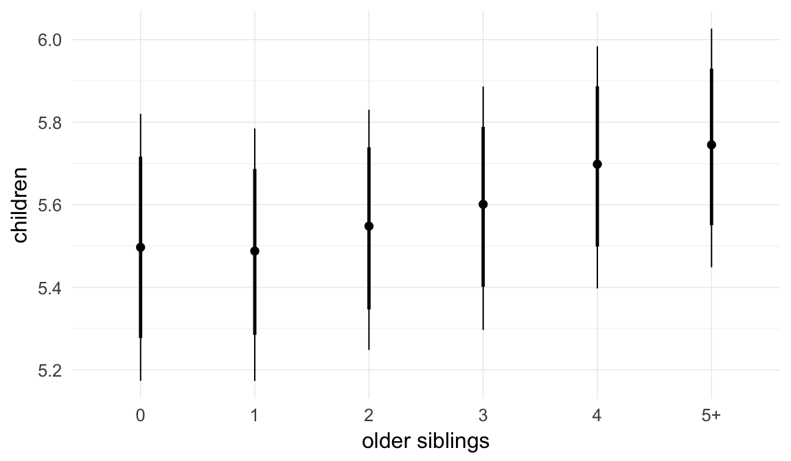
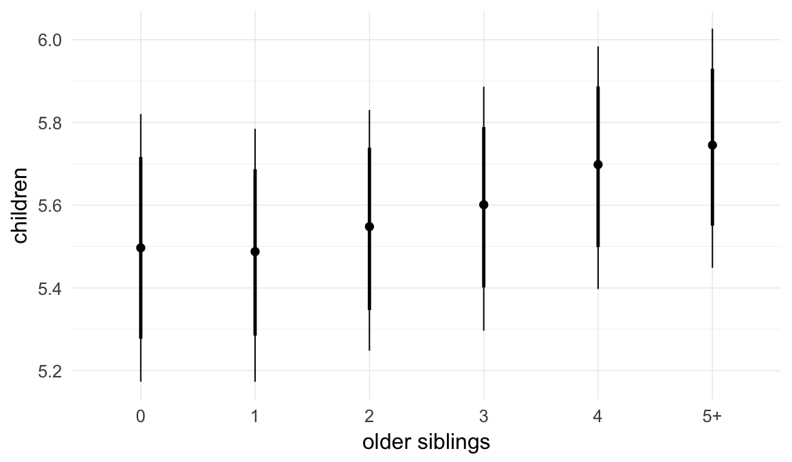
Coefficient plot
Here, we plotted the 95% posterior densities for the unexponentiated model coefficients (b_). The darkly shaded area represents the 50% credibility interval, the dark line represent the posterior mean estimate.
mcmc_areas(as.matrix(model$fit), regex_pars = "b_[^I]", point_est = "mean", prob = 0.50, prob_outer = 0.95) + ggtitle("Posterior densities with means and 50% intervals") + analysis_theme + theme(axis.text = element_text(size = 12), panel.grid = element_blank()) + xlab("Coefficient size")
Diagnostics
These plots were made to diagnose misfit and nonconvergence.
Posterior predictive checks
In posterior predictive checks, we test whether we can approximately reproduce the real data distribution from our model.
brms::pp_check(model, re_formula = NA, type = "dens_overlay")
brms::pp_check(model, re_formula = NA, type = "hist")Rhat
Did the 6 chains converge?
stanplot(model, pars = "^b_[^I]", type = 'rhat')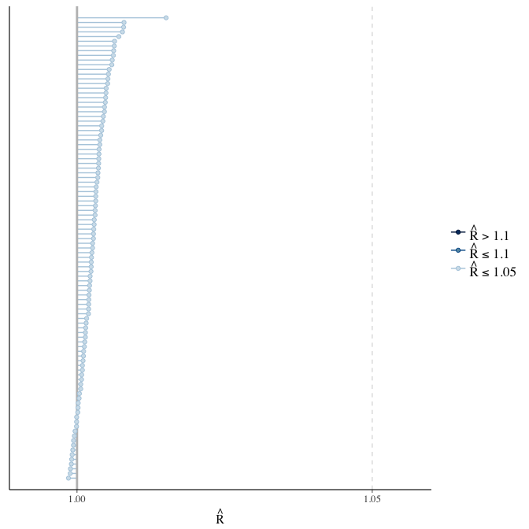
Effective sample size over average sample size
stanplot(model, pars = "^b", type = 'neff_hist')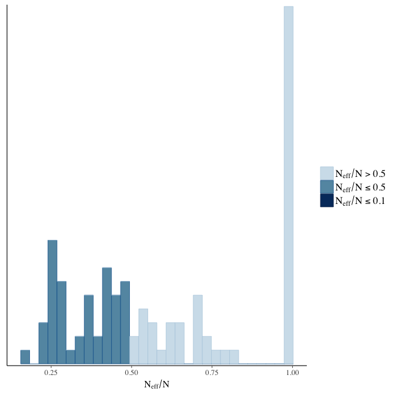
Trace plots
Trace plots are only shown in the case of nonconvergence.
if(any( summary(model)$fixed[,"Rhat"] > 1.1)) { # only do traceplots if not converged
plot(model, N = 3, ask = FALSE)
}File/cluster script name
This model was stored in the file: coefs/rpqa/r23_student_cauchy_priors.rds.
Click the following link to see the script used to generate this model:
opts_chunk$set(echo = FALSE)
clusterscript = str_replace(basename(model_filename), "\\.rds",".html")
cat("[Cluster script](" , clusterscript, ")", sep = "")r24: Improper flat priors
To demonstrate the robustness of our prior choice we use improper flat priors. These priors should make the model’s results comparable to a frequentist maximum likelihood approach.
Model summary
Full summary
model_summary = summary(model, use_cache = FALSE, priors = TRUE)
print(model_summary)## Family: hurdle_poisson(log)
## Formula: children ~ paternalage + birth_cohort + male + maternalage.factor + paternalage.mean + paternal_loss + maternal_loss + older_siblings + nr.siblings + last_born + (1 | idParents)
## hu ~ paternalage + birth_cohort + male + maternalage.factor + paternalage.mean + paternal_loss + maternal_loss + older_siblings + nr.siblings + last_born + (1 | idParents)
## Data: model_data (Number of observations: 68724)
## Samples: 6 chains, each with iter = 800; warmup = 300; thin = 1;
## total post-warmup samples = 3000
## WAIC: Not computed
##
## Priors:
## sd ~ student_t(3, 0, 10)
## sd_hu ~ student_t(3, 0, 10)
##
## Group-Level Effects:
## ~idParents (Number of levels: 12205)
## Estimate Est.Error l-95% CI u-95% CI Eff.Sample Rhat
## sd(Intercept) 0.27 0.00 0.27 0.28 1179 1
## sd(hu_Intercept) 0.63 0.01 0.60 0.66 1269 1
##
## Population-Level Effects:
## Estimate Est.Error l-95% CI u-95% CI Eff.Sample
## Intercept 2.12 0.03 2.06 2.17 1254
## paternalage 0.01 0.01 -0.01 0.03 1940
## birth_cohort1675M1680 0.02 0.02 -0.01 0.05 1344
## birth_cohort1680M1685 0.05 0.02 0.02 0.08 1101
## birth_cohort1685M1690 0.05 0.02 0.02 0.08 1127
## birth_cohort1690M1695 0.05 0.02 0.02 0.08 831
## birth_cohort1695M1700 0.03 0.02 0.00 0.07 823
## birth_cohort1700M1705 0.02 0.02 -0.01 0.05 758
## birth_cohort1705M1710 0.00 0.02 -0.03 0.03 705
## birth_cohort1710M1715 -0.01 0.02 -0.04 0.02 741
## birth_cohort1715M1720 -0.04 0.02 -0.07 -0.01 687
## birth_cohort1720M1725 -0.04 0.02 -0.07 -0.01 694
## birth_cohort1725M1730 -0.07 0.02 -0.10 -0.03 662
## birth_cohort1730M1735 -0.05 0.02 -0.08 -0.02 624
## birth_cohort1735M1740 -0.06 0.02 -0.09 -0.03 618
## male1 0.11 0.00 0.10 0.12 3000
## maternalage.factor1420 -0.01 0.01 -0.03 0.01 3000
## maternalage.factor3550 0.00 0.01 -0.01 0.02 3000
## paternalage.mean -0.03 0.01 -0.05 -0.01 1904
## paternal_loss01 -0.04 0.02 -0.08 0.00 2168
## paternal_loss15 -0.02 0.02 -0.05 0.01 1735
## paternal_loss510 -0.01 0.01 -0.04 0.02 1520
## paternal_loss1015 -0.02 0.01 -0.04 0.01 1479
## paternal_loss1520 -0.02 0.01 -0.05 0.00 1339
## paternal_loss2025 -0.02 0.01 -0.05 0.00 1564
## paternal_loss2530 -0.01 0.01 -0.03 0.01 1844
## paternal_loss3035 -0.02 0.01 -0.04 0.00 2035
## paternal_loss3540 -0.02 0.01 -0.04 0.00 2013
## paternal_loss4045 0.00 0.01 -0.02 0.02 3000
## paternal_lossunclear -0.05 0.01 -0.08 -0.03 1483
## maternal_loss01 -0.05 0.02 -0.10 0.00 3000
## maternal_loss15 -0.03 0.02 -0.06 0.00 1961
## maternal_loss510 0.01 0.01 -0.01 0.04 2065
## maternal_loss1015 -0.01 0.01 -0.03 0.02 1914
## maternal_loss1520 0.01 0.01 -0.02 0.03 1942
## maternal_loss2025 -0.02 0.01 -0.04 0.00 1874
## maternal_loss2530 -0.01 0.01 -0.03 0.01 1910
## maternal_loss3035 -0.01 0.01 -0.03 0.01 1943
## maternal_loss3540 0.00 0.01 -0.02 0.02 3000
## maternal_loss4045 0.00 0.01 -0.01 0.02 3000
## maternal_lossunclear -0.02 0.01 -0.04 0.01 1810
## older_siblings1 -0.02 0.01 -0.04 -0.01 3000
## older_siblings2 -0.03 0.01 -0.04 -0.01 2686
## older_siblings3 -0.03 0.01 -0.05 -0.01 2228
## older_siblings4 -0.02 0.01 -0.04 0.00 2196
## older_siblings5P -0.04 0.01 -0.07 -0.01 2058
## nr.siblings 0.01 0.00 0.00 0.01 1947
## last_born1 0.00 0.01 -0.01 0.02 3000
## hu_Intercept -0.80 0.09 -0.97 -0.62 1181
## hu_paternalage 0.13 0.04 0.05 0.21 1492
## hu_birth_cohort1675M1680 0.07 0.07 -0.07 0.21 1252
## hu_birth_cohort1680M1685 0.23 0.07 0.09 0.36 1087
## hu_birth_cohort1685M1690 0.33 0.07 0.20 0.47 1025
## hu_birth_cohort1690M1695 0.08 0.07 -0.05 0.21 1011
## hu_birth_cohort1695M1700 0.10 0.06 -0.03 0.22 893
## hu_birth_cohort1700M1705 0.25 0.06 0.13 0.37 875
## hu_birth_cohort1705M1710 0.15 0.06 0.03 0.27 841
## hu_birth_cohort1710M1715 0.43 0.06 0.30 0.55 811
## hu_birth_cohort1715M1720 0.28 0.06 0.16 0.40 804
## hu_birth_cohort1720M1725 0.30 0.06 0.18 0.42 791
## hu_birth_cohort1725M1730 0.66 0.06 0.55 0.78 800
## hu_birth_cohort1730M1735 0.72 0.06 0.61 0.84 751
## hu_birth_cohort1735M1740 0.56 0.06 0.45 0.68 769
## hu_male1 0.44 0.02 0.40 0.47 3000
## hu_maternalage.factor1420 0.05 0.04 -0.03 0.13 3000
## hu_maternalage.factor3550 0.03 0.03 -0.03 0.09 3000
## hu_paternalage.mean -0.15 0.04 -0.23 -0.06 1532
## hu_paternal_loss01 0.57 0.07 0.43 0.71 3000
## hu_paternal_loss15 0.31 0.06 0.20 0.42 3000
## hu_paternal_loss510 0.29 0.05 0.20 0.38 1742
## hu_paternal_loss1015 0.17 0.05 0.08 0.26 1853
## hu_paternal_loss1520 0.28 0.04 0.20 0.37 1811
## hu_paternal_loss2025 0.17 0.04 0.09 0.25 1564
## hu_paternal_loss2530 0.18 0.04 0.10 0.25 1601
## hu_paternal_loss3035 0.14 0.04 0.07 0.21 1578
## hu_paternal_loss3540 0.10 0.04 0.03 0.18 1786
## hu_paternal_loss4045 0.07 0.04 -0.01 0.15 3000
## hu_paternal_lossunclear 0.37 0.04 0.29 0.45 1554
## hu_maternal_loss01 1.06 0.07 0.91 1.20 3000
## hu_maternal_loss15 0.39 0.05 0.29 0.49 3000
## hu_maternal_loss510 0.26 0.04 0.17 0.34 3000
## hu_maternal_loss1015 0.26 0.04 0.17 0.34 3000
## hu_maternal_loss1520 0.20 0.04 0.12 0.28 3000
## hu_maternal_loss2025 0.17 0.04 0.09 0.25 3000
## hu_maternal_loss2530 0.05 0.04 -0.02 0.13 3000
## hu_maternal_loss3035 0.09 0.04 0.02 0.16 3000
## hu_maternal_loss3540 0.08 0.03 0.02 0.15 3000
## hu_maternal_loss4045 -0.01 0.04 -0.08 0.06 3000
## hu_maternal_lossunclear 0.22 0.04 0.15 0.30 2593
## hu_older_siblings1 -0.06 0.03 -0.13 0.00 3000
## hu_older_siblings2 -0.11 0.04 -0.18 -0.04 2168
## hu_older_siblings3 -0.17 0.04 -0.25 -0.09 1642
## hu_older_siblings4 -0.19 0.04 -0.27 -0.10 1563
## hu_older_siblings5P -0.27 0.05 -0.38 -0.17 1404
## hu_nr.siblings 0.02 0.00 0.01 0.03 2546
## hu_last_born1 0.00 0.03 -0.06 0.05 3000
## Rhat
## Intercept 1.01
## paternalage 1.00
## birth_cohort1675M1680 1.00
## birth_cohort1680M1685 1.00
## birth_cohort1685M1690 1.00
## birth_cohort1690M1695 1.00
## birth_cohort1695M1700 1.01
## birth_cohort1700M1705 1.00
## birth_cohort1705M1710 1.01
## birth_cohort1710M1715 1.01
## birth_cohort1715M1720 1.01
## birth_cohort1720M1725 1.01
## birth_cohort1725M1730 1.01
## birth_cohort1730M1735 1.01
## birth_cohort1735M1740 1.01
## male1 1.00
## maternalage.factor1420 1.00
## maternalage.factor3550 1.00
## paternalage.mean 1.00
## paternal_loss01 1.00
## paternal_loss15 1.00
## paternal_loss510 1.01
## paternal_loss1015 1.00
## paternal_loss1520 1.01
## paternal_loss2025 1.01
## paternal_loss2530 1.00
## paternal_loss3035 1.00
## paternal_loss3540 1.00
## paternal_loss4045 1.00
## paternal_lossunclear 1.00
## maternal_loss01 1.00
## maternal_loss15 1.01
## maternal_loss510 1.00
## maternal_loss1015 1.00
## maternal_loss1520 1.00
## maternal_loss2025 1.00
## maternal_loss2530 1.00
## maternal_loss3035 1.00
## maternal_loss3540 1.00
## maternal_loss4045 1.00
## maternal_lossunclear 1.00
## older_siblings1 1.00
## older_siblings2 1.00
## older_siblings3 1.00
## older_siblings4 1.00
## older_siblings5P 1.00
## nr.siblings 1.00
## last_born1 1.00
## hu_Intercept 1.00
## hu_paternalage 1.00
## hu_birth_cohort1675M1680 1.00
## hu_birth_cohort1680M1685 1.00
## hu_birth_cohort1685M1690 1.00
## hu_birth_cohort1690M1695 1.00
## hu_birth_cohort1695M1700 1.00
## hu_birth_cohort1700M1705 1.00
## hu_birth_cohort1705M1710 1.00
## hu_birth_cohort1710M1715 1.00
## hu_birth_cohort1715M1720 1.00
## hu_birth_cohort1720M1725 1.00
## hu_birth_cohort1725M1730 1.00
## hu_birth_cohort1730M1735 1.00
## hu_birth_cohort1735M1740 1.00
## hu_male1 1.00
## hu_maternalage.factor1420 1.00
## hu_maternalage.factor3550 1.00
## hu_paternalage.mean 1.00
## hu_paternal_loss01 1.00
## hu_paternal_loss15 1.00
## hu_paternal_loss510 1.00
## hu_paternal_loss1015 1.00
## hu_paternal_loss1520 1.00
## hu_paternal_loss2025 1.00
## hu_paternal_loss2530 1.00
## hu_paternal_loss3035 1.00
## hu_paternal_loss3540 1.00
## hu_paternal_loss4045 1.00
## hu_paternal_lossunclear 1.00
## hu_maternal_loss01 1.00
## hu_maternal_loss15 1.00
## hu_maternal_loss510 1.00
## hu_maternal_loss1015 1.00
## hu_maternal_loss1520 1.00
## hu_maternal_loss2025 1.00
## hu_maternal_loss2530 1.00
## hu_maternal_loss3035 1.00
## hu_maternal_loss3540 1.00
## hu_maternal_loss4045 1.00
## hu_maternal_lossunclear 1.00
## hu_older_siblings1 1.00
## hu_older_siblings2 1.00
## hu_older_siblings3 1.00
## hu_older_siblings4 1.00
## hu_older_siblings5P 1.00
## hu_nr.siblings 1.00
## hu_last_born1 1.00
##
## Samples were drawn using sampling(NUTS). For each parameter, Eff.Sample
## is a crude measure of effective sample size, and Rhat is the potential
## scale reduction factor on split chains (at convergence, Rhat = 1).Table of fixed effects
Estimates are exp(b). When they are referring to the hurdle (hu) component, or a dichotomous outcome, they are odds ratios, when they are referring to a Poisson component, they are hazard ratios. In both cases, they are presented with 95% credibility intervals. To see the effects on the response scale (probability or number of children), consult the marginal effect plots.
fixed_eff = data.frame(model_summary$fixed, check.names = F)
fixed_eff$Est.Error = fixed_eff$Eff.Sample = fixed_eff$Rhat = NULL
fixed_eff$`Odds/hazard ratio` = exp(fixed_eff$Estimate)
fixed_eff$`OR/HR low 95%` = exp(fixed_eff$`l-95% CI`)
fixed_eff$`OR/HR high 95%` = exp(fixed_eff$`u-95% CI`)
fixed_eff = fixed_eff %>% select(`Odds/hazard ratio`, `OR/HR low 95%`, `OR/HR high 95%`)
pander::pander(fixed_eff)| Odds/hazard ratio | OR/HR low 95% | OR/HR high 95% | |
|---|---|---|---|
| Intercept | 8.307 | 7.861 | 8.76 |
| paternalage | 1.012 | 0.9906 | 1.033 |
| birth_cohort1675M1680 | 1.021 | 0.9897 | 1.053 |
| birth_cohort1680M1685 | 1.048 | 1.016 | 1.083 |
| birth_cohort1685M1690 | 1.051 | 1.018 | 1.087 |
| birth_cohort1690M1695 | 1.048 | 1.016 | 1.084 |
| birth_cohort1695M1700 | 1.035 | 1.003 | 1.069 |
| birth_cohort1700M1705 | 1.021 | 0.9905 | 1.055 |
| birth_cohort1705M1710 | 0.9974 | 0.9671 | 1.03 |
| birth_cohort1710M1715 | 0.9875 | 0.9562 | 1.022 |
| birth_cohort1715M1720 | 0.9598 | 0.9316 | 0.9916 |
| birth_cohort1720M1725 | 0.9575 | 0.9279 | 0.9894 |
| birth_cohort1725M1730 | 0.9348 | 0.9075 | 0.9663 |
| birth_cohort1730M1735 | 0.9509 | 0.922 | 0.9824 |
| birth_cohort1735M1740 | 0.9403 | 0.9116 | 0.9712 |
| male1 | 1.118 | 1.108 | 1.127 |
| maternalage.factor1420 | 0.9918 | 0.9727 | 1.011 |
| maternalage.factor3550 | 1.001 | 0.986 | 1.017 |
| paternalage.mean | 0.9701 | 0.9477 | 0.993 |
| paternal_loss01 | 0.9623 | 0.9239 | 1.003 |
| paternal_loss15 | 0.9822 | 0.9517 | 1.012 |
| paternal_loss510 | 0.9894 | 0.9633 | 1.017 |
| paternal_loss1015 | 0.9836 | 0.9591 | 1.009 |
| paternal_loss1520 | 0.9758 | 0.953 | 0.9995 |
| paternal_loss2025 | 0.9772 | 0.9555 | 0.9991 |
| paternal_loss2530 | 0.9871 | 0.9676 | 1.008 |
| paternal_loss3035 | 0.9773 | 0.9582 | 0.997 |
| paternal_loss3540 | 0.978 | 0.9607 | 0.9965 |
| paternal_loss4045 | 0.9969 | 0.9788 | 1.016 |
| paternal_lossunclear | 0.9472 | 0.9236 | 0.9701 |
| maternal_loss01 | 0.9495 | 0.9066 | 0.9955 |
| maternal_loss15 | 0.9723 | 0.9438 | 1.002 |
| maternal_loss510 | 1.012 | 0.9863 | 1.037 |
| maternal_loss1015 | 0.9914 | 0.9685 | 1.016 |
| maternal_loss1520 | 1.006 | 0.9824 | 1.03 |
| maternal_loss2025 | 0.9805 | 0.9597 | 1.002 |
| maternal_loss2530 | 0.987 | 0.9665 | 1.007 |
| maternal_loss3035 | 0.9917 | 0.9732 | 1.01 |
| maternal_loss3540 | 1.001 | 0.9837 | 1.018 |
| maternal_loss4045 | 1.004 | 0.9868 | 1.021 |
| maternal_lossunclear | 0.9807 | 0.9563 | 1.005 |
| older_siblings1 | 0.9781 | 0.9632 | 0.993 |
| older_siblings2 | 0.9744 | 0.958 | 0.9914 |
| older_siblings3 | 0.9666 | 0.9482 | 0.9853 |
| older_siblings4 | 0.9777 | 0.9567 | 0.9996 |
| older_siblings5P | 0.9624 | 0.9367 | 0.9887 |
| nr.siblings | 1.007 | 1.005 | 1.01 |
| last_born1 | 1.001 | 0.9864 | 1.016 |
| hu_Intercept | 0.4502 | 0.379 | 0.5362 |
| hu_paternalage | 1.141 | 1.056 | 1.235 |
| hu_birth_cohort1675M1680 | 1.077 | 0.9356 | 1.233 |
| hu_birth_cohort1680M1685 | 1.256 | 1.099 | 1.434 |
| hu_birth_cohort1685M1690 | 1.394 | 1.22 | 1.6 |
| hu_birth_cohort1690M1695 | 1.081 | 0.9485 | 1.233 |
| hu_birth_cohort1695M1700 | 1.101 | 0.9681 | 1.25 |
| hu_birth_cohort1700M1705 | 1.286 | 1.139 | 1.454 |
| hu_birth_cohort1705M1710 | 1.162 | 1.029 | 1.316 |
| hu_birth_cohort1710M1715 | 1.535 | 1.355 | 1.73 |
| hu_birth_cohort1715M1720 | 1.328 | 1.178 | 1.494 |
| hu_birth_cohort1720M1725 | 1.354 | 1.203 | 1.522 |
| hu_birth_cohort1725M1730 | 1.943 | 1.727 | 2.185 |
| hu_birth_cohort1730M1735 | 2.06 | 1.838 | 2.309 |
| hu_birth_cohort1735M1740 | 1.755 | 1.562 | 1.97 |
| hu_male1 | 1.546 | 1.495 | 1.598 |
| hu_maternalage.factor1420 | 1.048 | 0.9695 | 1.133 |
| hu_maternalage.factor3550 | 1.03 | 0.9715 | 1.09 |
| hu_paternalage.mean | 0.8645 | 0.7951 | 0.9429 |
| hu_paternal_loss01 | 1.772 | 1.542 | 2.043 |
| hu_paternal_loss15 | 1.366 | 1.222 | 1.522 |
| hu_paternal_loss510 | 1.338 | 1.216 | 1.469 |
| hu_paternal_loss1015 | 1.188 | 1.084 | 1.297 |
| hu_paternal_loss1520 | 1.327 | 1.222 | 1.446 |
| hu_paternal_loss2025 | 1.191 | 1.099 | 1.288 |
| hu_paternal_loss2530 | 1.193 | 1.108 | 1.281 |
| hu_paternal_loss3035 | 1.152 | 1.072 | 1.238 |
| hu_paternal_loss3540 | 1.109 | 1.03 | 1.193 |
| hu_paternal_loss4045 | 1.072 | 0.9908 | 1.157 |
| hu_paternal_lossunclear | 1.447 | 1.339 | 1.569 |
| hu_maternal_loss01 | 2.882 | 2.495 | 3.325 |
| hu_maternal_loss15 | 1.483 | 1.342 | 1.637 |
| hu_maternal_loss510 | 1.296 | 1.186 | 1.411 |
| hu_maternal_loss1015 | 1.293 | 1.189 | 1.398 |
| hu_maternal_loss1520 | 1.219 | 1.123 | 1.32 |
| hu_maternal_loss2025 | 1.186 | 1.093 | 1.286 |
| hu_maternal_loss2530 | 1.056 | 0.9818 | 1.138 |
| hu_maternal_loss3035 | 1.092 | 1.02 | 1.173 |
| hu_maternal_loss3540 | 1.085 | 1.017 | 1.157 |
| hu_maternal_loss4045 | 0.9897 | 0.9248 | 1.061 |
| hu_maternal_lossunclear | 1.248 | 1.158 | 1.346 |
| hu_older_siblings1 | 0.9389 | 0.8822 | 0.9995 |
| hu_older_siblings2 | 0.8968 | 0.8372 | 0.9615 |
| hu_older_siblings3 | 0.8465 | 0.7827 | 0.9139 |
| hu_older_siblings4 | 0.8305 | 0.762 | 0.9057 |
| hu_older_siblings5P | 0.7632 | 0.6855 | 0.8476 |
| hu_nr.siblings | 1.02 | 1.012 | 1.028 |
| hu_last_born1 | 0.9973 | 0.9438 | 1.056 |
Paternal age effect
pander::pander(paternal_age_10y_effect(model))| effect | median_estimate | ci_95 | ci_80 |
|---|---|---|---|
| estimate father 25y | 5.69 | [5.39;5.97] | [5.5;5.87] |
| estimate father 35y | 5.52 | [5.19;5.84] | [5.3;5.72] |
| percentage change | -3 | [-6.25;0.18] | [-5.06;-0.9] |
| OR/IRR | 1.01 | [0.99;1.03] | [1;1.03] |
| OR hurdle | 1.14 | [1.06;1.24] | [1.08;1.2] |
Marginal effect plots
In these marginal effect plots, we set all predictors except the one shown on the X axis to their mean and in the case of factors to their reference level. We then plot the estimated association between the X axis predictor and the outcome on the response scale (e.g. probability of survival/marriage or number of children).
plot.brmsMarginalEffects_shades(
x = marginal_effects(model, re_formula = NA, probs = c(0.025,0.975)),
y = marginal_effects(model, re_formula = NA, probs = c(0.1,0.9)),
ask = FALSE)Coefficient plot
Here, we plotted the 95% posterior densities for the unexponentiated model coefficients (b_). The darkly shaded area represents the 50% credibility interval, the dark line represent the posterior mean estimate.
mcmc_areas(as.matrix(model$fit), regex_pars = "b_[^I]", point_est = "mean", prob = 0.50, prob_outer = 0.95) + ggtitle("Posterior densities with means and 50% intervals") + analysis_theme + theme(axis.text = element_text(size = 12), panel.grid = element_blank()) + xlab("Coefficient size")Diagnostics
These plots were made to diagnose misfit and nonconvergence.
Posterior predictive checks
In posterior predictive checks, we test whether we can approximately reproduce the real data distribution from our model.
brms::pp_check(model, re_formula = NA, type = "dens_overlay")brms::pp_check(model, re_formula = NA, type = "hist")Rhat
Did the 6 chains converge?
stanplot(model, pars = "^b_[^I]", type = 'rhat')Effective sample size over average sample size
stanplot(model, pars = "^b", type = 'neff_hist')
Trace plots
Trace plots are only shown in the case of nonconvergence.
if(any( summary(model)$fixed[,"Rhat"] > 1.1)) { # only do traceplots if not converged
plot(model, N = 3, ask = FALSE)
}File/cluster script name
This model was stored in the file: coefs/rpqa/r24_uniform_priors.rds.
Click the following link to see the script used to generate this model:
opts_chunk$set(echo = FALSE)
clusterscript = str_replace(basename(model_filename), "\\.rds",".html")
cat("[Cluster script](" , clusterscript, ")", sep = "")r25: Adjust for migration status
In the three historical populations, records were kept in the parish. Although records were linked between parishes in all populations, except three out of four provinces in historical Sweden, migration might sometimes lead to censoring of records. Adjusting for migration may however constitute a partial adjustment for the outcome, as lower offspring fitness might make them more likely to migrate. Hence, we show the results of doing so as a robustness analysis. In all analyses, we adjusted for a “migrated”-dummy variable. Migration was differently defined depending on the population. In Québec, we had flags denoting immigrants and emigrants. Few immigrants were included in our analyses anyway, as we needed parental information for our analyses. Emigrants were people who left Québec. In historical Sweden, migration was logged as migration from the parish of birth. In the Krummhörn, we set migrated to true, when the parish of death/burial differed from the parish of birth/baptism.
No migration information was available in 20th-century Sweden, but records there weren’t kept in parishes, so this should not pose a problem.
Model summary
Full summary
model_summary = summary(model, use_cache = FALSE, priors = TRUE)
print(model_summary)## Family: hurdle_poisson(log)
## Formula: children ~ paternalage + migrated + maternalage.factor + birth_cohort + male + paternalage.mean + paternal_loss + maternal_loss + older_siblings + nr.siblings + last_born + (1 | idParents)
## hu ~ paternalage + migrated + maternalage.factor + birth_cohort + male + paternalage.mean + paternal_loss + maternal_loss + older_siblings + nr.siblings + last_born + (1 | idParents)
## Data: model_data (Number of observations: 68724)
## Samples: 6 chains, each with iter = 1000; warmup = 500; thin = 1;
## total post-warmup samples = 3000
## WAIC: Not computed
##
## Priors:
## b ~ normal(0,5)
## sd ~ student_t(3, 0, 5)
## b_hu ~ normal(0,5)
## sd_hu ~ student_t(3, 0, 10)
##
## Group-Level Effects:
## ~idParents (Number of levels: 12205)
## Estimate Est.Error l-95% CI u-95% CI Eff.Sample Rhat
## sd(Intercept) 0.27 0.00 0.26 0.28 1120 1.00
## sd(hu_Intercept) 0.62 0.01 0.60 0.65 971 1.01
##
## Population-Level Effects:
## Estimate Est.Error l-95% CI u-95% CI Eff.Sample
## Intercept 2.12 0.03 2.07 2.17 887
## paternalage 0.01 0.01 -0.01 0.03 1272
## migrated -0.47 0.02 -0.51 -0.43 3000
## maternalage.factor1420 -0.01 0.01 -0.03 0.01 3000
## maternalage.factor3550 0.00 0.01 -0.02 0.02 2453
## birth_cohort1675M1680 0.02 0.02 -0.01 0.05 1175
## birth_cohort1680M1685 0.05 0.02 0.02 0.08 861
## birth_cohort1685M1690 0.05 0.02 0.02 0.08 765
## birth_cohort1690M1695 0.05 0.02 0.02 0.09 583
## birth_cohort1695M1700 0.04 0.02 0.01 0.07 560
## birth_cohort1700M1705 0.03 0.02 -0.01 0.06 521
## birth_cohort1705M1710 0.00 0.02 -0.03 0.03 506
## birth_cohort1710M1715 -0.01 0.02 -0.04 0.02 483
## birth_cohort1715M1720 -0.04 0.02 -0.07 -0.01 492
## birth_cohort1720M1725 -0.04 0.02 -0.07 -0.01 495
## birth_cohort1725M1730 -0.06 0.02 -0.09 -0.03 516
## birth_cohort1730M1735 -0.04 0.02 -0.07 -0.01 486
## birth_cohort1735M1740 -0.05 0.02 -0.08 -0.02 598
## male1 0.11 0.00 0.10 0.12 3000
## paternalage.mean -0.03 0.01 -0.05 0.00 1208
## paternal_loss01 -0.04 0.02 -0.08 0.00 1775
## paternal_loss15 -0.02 0.02 -0.05 0.01 1157
## paternal_loss510 -0.01 0.01 -0.04 0.02 966
## paternal_loss1015 -0.01 0.01 -0.04 0.01 886
## paternal_loss1520 -0.02 0.01 -0.05 0.00 931
## paternal_loss2025 -0.02 0.01 -0.04 0.00 837
## paternal_loss2530 -0.01 0.01 -0.03 0.01 1082
## paternal_loss3035 -0.02 0.01 -0.04 0.00 896
## paternal_loss3540 -0.02 0.01 -0.04 0.00 1375
## paternal_loss4045 0.00 0.01 -0.02 0.02 1962
## paternal_lossunclear -0.05 0.01 -0.07 -0.02 967
## maternal_loss01 -0.04 0.02 -0.09 0.00 3000
## maternal_loss15 -0.03 0.02 -0.06 0.00 1535
## maternal_loss510 0.01 0.01 -0.01 0.04 1471
## maternal_loss1015 -0.01 0.01 -0.03 0.01 1618
## maternal_loss1520 0.01 0.01 -0.02 0.03 1773
## maternal_loss2025 -0.02 0.01 -0.04 0.01 1635
## maternal_loss2530 -0.01 0.01 -0.04 0.01 1797
## maternal_loss3035 -0.01 0.01 -0.03 0.01 1703
## maternal_loss3540 0.00 0.01 -0.02 0.02 1956
## maternal_loss4045 0.00 0.01 -0.01 0.02 3000
## maternal_lossunclear -0.02 0.01 -0.04 0.01 1037
## older_siblings1 -0.03 0.01 -0.04 -0.01 3000
## older_siblings2 -0.03 0.01 -0.05 -0.01 1945
## older_siblings3 -0.04 0.01 -0.06 -0.02 1598
## older_siblings4 -0.03 0.01 -0.05 0.00 1640
## older_siblings5P -0.04 0.01 -0.07 -0.02 1458
## nr.siblings 0.01 0.00 0.00 0.01 1693
## last_born1 0.00 0.01 -0.01 0.02 3000
## hu_Intercept -0.80 0.09 -0.98 -0.63 746
## hu_paternalage 0.13 0.04 0.05 0.21 1201
## hu_migrated 0.21 0.05 0.11 0.30 3000
## hu_maternalage.factor1420 0.05 0.04 -0.03 0.12 3000
## hu_maternalage.factor3550 0.03 0.03 -0.03 0.09 3000
## hu_birth_cohort1675M1680 0.08 0.07 -0.05 0.21 723
## hu_birth_cohort1680M1685 0.23 0.07 0.10 0.37 697
## hu_birth_cohort1685M1690 0.33 0.07 0.19 0.48 719
## hu_birth_cohort1690M1695 0.08 0.07 -0.06 0.22 641
## hu_birth_cohort1695M1700 0.10 0.07 -0.03 0.23 588
## hu_birth_cohort1700M1705 0.26 0.07 0.13 0.38 514
## hu_birth_cohort1705M1710 0.15 0.07 0.03 0.28 551
## hu_birth_cohort1710M1715 0.43 0.06 0.31 0.57 575
## hu_birth_cohort1715M1720 0.29 0.06 0.17 0.41 541
## hu_birth_cohort1720M1725 0.31 0.06 0.19 0.44 516
## hu_birth_cohort1725M1730 0.67 0.06 0.55 0.79 517
## hu_birth_cohort1730M1735 0.73 0.06 0.61 0.85 498
## hu_birth_cohort1735M1740 0.56 0.06 0.45 0.68 517
## hu_male1 0.43 0.02 0.40 0.46 3000
## hu_paternalage.mean -0.15 0.04 -0.23 -0.06 1179
## hu_paternal_loss01 0.57 0.07 0.43 0.71 3000
## hu_paternal_loss15 0.31 0.06 0.20 0.42 1469
## hu_paternal_loss510 0.29 0.05 0.20 0.39 1394
## hu_paternal_loss1015 0.17 0.04 0.09 0.26 1445
## hu_paternal_loss1520 0.28 0.04 0.20 0.36 1422
## hu_paternal_loss2025 0.17 0.04 0.09 0.25 1425
## hu_paternal_loss2530 0.18 0.04 0.10 0.25 1243
## hu_paternal_loss3035 0.14 0.04 0.07 0.21 1539
## hu_paternal_loss3540 0.10 0.04 0.03 0.18 1393
## hu_paternal_loss4045 0.07 0.04 -0.01 0.15 3000
## hu_paternal_lossunclear 0.36 0.04 0.29 0.44 1225
## hu_maternal_loss01 1.06 0.07 0.92 1.21 3000
## hu_maternal_loss15 0.39 0.05 0.30 0.49 3000
## hu_maternal_loss510 0.26 0.04 0.17 0.34 3000
## hu_maternal_loss1015 0.26 0.04 0.17 0.34 3000
## hu_maternal_loss1520 0.20 0.04 0.12 0.28 3000
## hu_maternal_loss2025 0.17 0.04 0.09 0.25 3000
## hu_maternal_loss2530 0.05 0.04 -0.02 0.13 3000
## hu_maternal_loss3035 0.09 0.04 0.02 0.16 2226
## hu_maternal_loss3540 0.08 0.03 0.02 0.15 3000
## hu_maternal_loss4045 -0.01 0.03 -0.08 0.05 3000
## hu_maternal_lossunclear 0.22 0.04 0.14 0.29 2242
## hu_older_siblings1 -0.06 0.03 -0.12 0.00 3000
## hu_older_siblings2 -0.11 0.04 -0.17 -0.03 1677
## hu_older_siblings3 -0.16 0.04 -0.24 -0.09 1527
## hu_older_siblings4 -0.18 0.04 -0.27 -0.10 1450
## hu_older_siblings5P -0.27 0.05 -0.37 -0.16 1182
## hu_nr.siblings 0.02 0.00 0.01 0.03 1772
## hu_last_born1 0.00 0.03 -0.06 0.06 3000
## Rhat
## Intercept 1.00
## paternalage 1.00
## migrated 1.00
## maternalage.factor1420 1.00
## maternalage.factor3550 1.00
## birth_cohort1675M1680 1.00
## birth_cohort1680M1685 1.00
## birth_cohort1685M1690 1.00
## birth_cohort1690M1695 1.01
## birth_cohort1695M1700 1.01
## birth_cohort1700M1705 1.01
## birth_cohort1705M1710 1.01
## birth_cohort1710M1715 1.01
## birth_cohort1715M1720 1.01
## birth_cohort1720M1725 1.01
## birth_cohort1725M1730 1.01
## birth_cohort1730M1735 1.01
## birth_cohort1735M1740 1.01
## male1 1.00
## paternalage.mean 1.00
## paternal_loss01 1.00
## paternal_loss15 1.00
## paternal_loss510 1.01
## paternal_loss1015 1.00
## paternal_loss1520 1.01
## paternal_loss2025 1.01
## paternal_loss2530 1.00
## paternal_loss3035 1.00
## paternal_loss3540 1.00
## paternal_loss4045 1.00
## paternal_lossunclear 1.00
## maternal_loss01 1.00
## maternal_loss15 1.00
## maternal_loss510 1.00
## maternal_loss1015 1.00
## maternal_loss1520 1.00
## maternal_loss2025 1.00
## maternal_loss2530 1.00
## maternal_loss3035 1.00
## maternal_loss3540 1.00
## maternal_loss4045 1.00
## maternal_lossunclear 1.00
## older_siblings1 1.00
## older_siblings2 1.00
## older_siblings3 1.00
## older_siblings4 1.00
## older_siblings5P 1.00
## nr.siblings 1.00
## last_born1 1.00
## hu_Intercept 1.00
## hu_paternalage 1.00
## hu_migrated 1.00
## hu_maternalage.factor1420 1.00
## hu_maternalage.factor3550 1.00
## hu_birth_cohort1675M1680 1.00
## hu_birth_cohort1680M1685 1.00
## hu_birth_cohort1685M1690 1.00
## hu_birth_cohort1690M1695 1.00
## hu_birth_cohort1695M1700 1.01
## hu_birth_cohort1700M1705 1.01
## hu_birth_cohort1705M1710 1.01
## hu_birth_cohort1710M1715 1.01
## hu_birth_cohort1715M1720 1.01
## hu_birth_cohort1720M1725 1.01
## hu_birth_cohort1725M1730 1.01
## hu_birth_cohort1730M1735 1.01
## hu_birth_cohort1735M1740 1.01
## hu_male1 1.00
## hu_paternalage.mean 1.00
## hu_paternal_loss01 1.00
## hu_paternal_loss15 1.01
## hu_paternal_loss510 1.00
## hu_paternal_loss1015 1.00
## hu_paternal_loss1520 1.00
## hu_paternal_loss2025 1.00
## hu_paternal_loss2530 1.00
## hu_paternal_loss3035 1.00
## hu_paternal_loss3540 1.01
## hu_paternal_loss4045 1.00
## hu_paternal_lossunclear 1.00
## hu_maternal_loss01 1.00
## hu_maternal_loss15 1.00
## hu_maternal_loss510 1.00
## hu_maternal_loss1015 1.00
## hu_maternal_loss1520 1.00
## hu_maternal_loss2025 1.00
## hu_maternal_loss2530 1.00
## hu_maternal_loss3035 1.00
## hu_maternal_loss3540 1.00
## hu_maternal_loss4045 1.00
## hu_maternal_lossunclear 1.00
## hu_older_siblings1 1.00
## hu_older_siblings2 1.00
## hu_older_siblings3 1.00
## hu_older_siblings4 1.00
## hu_older_siblings5P 1.00
## hu_nr.siblings 1.00
## hu_last_born1 1.00
##
## Samples were drawn using sampling(NUTS). For each parameter, Eff.Sample
## is a crude measure of effective sample size, and Rhat is the potential
## scale reduction factor on split chains (at convergence, Rhat = 1).Table of fixed effects
Estimates are exp(b). When they are referring to the hurdle (hu) component, or a dichotomous outcome, they are odds ratios, when they are referring to a Poisson component, they are hazard ratios. In both cases, they are presented with 95% credibility intervals. To see the effects on the response scale (probability or number of children), consult the marginal effect plots.
fixed_eff = data.frame(model_summary$fixed, check.names = F)
fixed_eff$Est.Error = fixed_eff$Eff.Sample = fixed_eff$Rhat = NULL
fixed_eff$`Odds/hazard ratio` = exp(fixed_eff$Estimate)
fixed_eff$`OR/HR low 95%` = exp(fixed_eff$`l-95% CI`)
fixed_eff$`OR/HR high 95%` = exp(fixed_eff$`u-95% CI`)
fixed_eff = fixed_eff %>% select(`Odds/hazard ratio`, `OR/HR low 95%`, `OR/HR high 95%`)
pander::pander(fixed_eff)| Odds/hazard ratio | OR/HR low 95% | OR/HR high 95% | |
|---|---|---|---|
| Intercept | 8.35 | 7.897 | 8.801 |
| paternalage | 1.011 | 0.9906 | 1.032 |
| migrated | 0.6258 | 0.602 | 0.6505 |
| maternalage.factor1420 | 0.9931 | 0.9748 | 1.011 |
| maternalage.factor3550 | 1.001 | 0.9848 | 1.016 |
| birth_cohort1675M1680 | 1.02 | 0.9884 | 1.053 |
| birth_cohort1680M1685 | 1.051 | 1.018 | 1.085 |
| birth_cohort1685M1690 | 1.051 | 1.016 | 1.086 |
| birth_cohort1690M1695 | 1.054 | 1.021 | 1.089 |
| birth_cohort1695M1700 | 1.038 | 1.006 | 1.071 |
| birth_cohort1700M1705 | 1.026 | 0.995 | 1.06 |
| birth_cohort1705M1710 | 1.002 | 0.9707 | 1.035 |
| birth_cohort1710M1715 | 0.9899 | 0.9592 | 1.023 |
| birth_cohort1715M1720 | 0.9629 | 0.9334 | 0.9937 |
| birth_cohort1720M1725 | 0.9635 | 0.9348 | 0.9945 |
| birth_cohort1725M1730 | 0.941 | 0.914 | 0.9711 |
| birth_cohort1730M1735 | 0.9585 | 0.9296 | 0.9898 |
| birth_cohort1735M1740 | 0.9487 | 0.9215 | 0.9787 |
| male1 | 1.117 | 1.108 | 1.126 |
| paternalage.mean | 0.9738 | 0.9519 | 0.9963 |
| paternal_loss01 | 0.9635 | 0.9253 | 1.003 |
| paternal_loss15 | 0.9827 | 0.9527 | 1.014 |
| paternal_loss510 | 0.9886 | 0.9622 | 1.016 |
| paternal_loss1015 | 0.9854 | 0.9608 | 1.012 |
| paternal_loss1520 | 0.978 | 0.9545 | 1.001 |
| paternal_loss2025 | 0.9811 | 0.9602 | 1.003 |
| paternal_loss2530 | 0.9892 | 0.9685 | 1.01 |
| paternal_loss3035 | 0.98 | 0.9609 | 0.9995 |
| paternal_loss3540 | 0.9793 | 0.9613 | 0.9981 |
| paternal_loss4045 | 0.9989 | 0.9803 | 1.018 |
| paternal_lossunclear | 0.9537 | 0.9295 | 0.9789 |
| maternal_loss01 | 0.9574 | 0.9133 | 1.004 |
| maternal_loss15 | 0.9696 | 0.9419 | 0.9988 |
| maternal_loss510 | 1.011 | 0.9852 | 1.037 |
| maternal_loss1015 | 0.9908 | 0.9668 | 1.015 |
| maternal_loss1520 | 1.006 | 0.9819 | 1.03 |
| maternal_loss2025 | 0.9823 | 0.9599 | 1.005 |
| maternal_loss2530 | 0.9859 | 0.9656 | 1.006 |
| maternal_loss3035 | 0.9924 | 0.9738 | 1.012 |
| maternal_loss3540 | 0.9993 | 0.9827 | 1.016 |
| maternal_loss4045 | 1.004 | 0.9873 | 1.021 |
| maternal_lossunclear | 0.9805 | 0.9564 | 1.006 |
| older_siblings1 | 0.9745 | 0.9602 | 0.9895 |
| older_siblings2 | 0.9695 | 0.9536 | 0.9865 |
| older_siblings3 | 0.9613 | 0.9431 | 0.9811 |
| older_siblings4 | 0.9744 | 0.9536 | 0.9963 |
| older_siblings5P | 0.9588 | 0.9343 | 0.9845 |
| nr.siblings | 1.006 | 1.004 | 1.009 |
| last_born1 | 1.003 | 0.9881 | 1.017 |
| hu_Intercept | 0.4479 | 0.3761 | 0.5316 |
| hu_paternalage | 1.14 | 1.051 | 1.232 |
| hu_migrated | 1.229 | 1.111 | 1.356 |
| hu_maternalage.factor1420 | 1.048 | 0.972 | 1.13 |
| hu_maternalage.factor3550 | 1.031 | 0.9748 | 1.092 |
| hu_birth_cohort1675M1680 | 1.082 | 0.949 | 1.236 |
| hu_birth_cohort1680M1685 | 1.258 | 1.102 | 1.449 |
| hu_birth_cohort1685M1690 | 1.397 | 1.213 | 1.611 |
| hu_birth_cohort1690M1695 | 1.084 | 0.9464 | 1.241 |
| hu_birth_cohort1695M1700 | 1.103 | 0.9705 | 1.26 |
| hu_birth_cohort1700M1705 | 1.292 | 1.138 | 1.462 |
| hu_birth_cohort1705M1710 | 1.167 | 1.03 | 1.326 |
| hu_birth_cohort1710M1715 | 1.545 | 1.368 | 1.761 |
| hu_birth_cohort1715M1720 | 1.335 | 1.185 | 1.512 |
| hu_birth_cohort1720M1725 | 1.361 | 1.21 | 1.546 |
| hu_birth_cohort1725M1730 | 1.953 | 1.736 | 2.2 |
| hu_birth_cohort1730M1735 | 2.067 | 1.839 | 2.337 |
| hu_birth_cohort1735M1740 | 1.758 | 1.568 | 1.982 |
| hu_male1 | 1.542 | 1.493 | 1.59 |
| hu_paternalage.mean | 0.8634 | 0.7958 | 0.9388 |
| hu_paternal_loss01 | 1.771 | 1.545 | 2.036 |
| hu_paternal_loss15 | 1.365 | 1.223 | 1.529 |
| hu_paternal_loss510 | 1.338 | 1.217 | 1.473 |
| hu_paternal_loss1015 | 1.187 | 1.09 | 1.296 |
| hu_paternal_loss1520 | 1.325 | 1.22 | 1.439 |
| hu_paternal_loss2025 | 1.189 | 1.097 | 1.29 |
| hu_paternal_loss2530 | 1.192 | 1.102 | 1.29 |
| hu_paternal_loss3035 | 1.15 | 1.069 | 1.237 |
| hu_paternal_loss3540 | 1.109 | 1.03 | 1.194 |
| hu_paternal_loss4045 | 1.07 | 0.9925 | 1.158 |
| hu_paternal_lossunclear | 1.44 | 1.333 | 1.555 |
| hu_maternal_loss01 | 2.882 | 2.511 | 3.342 |
| hu_maternal_loss15 | 1.482 | 1.347 | 1.634 |
| hu_maternal_loss510 | 1.295 | 1.189 | 1.406 |
| hu_maternal_loss1015 | 1.293 | 1.189 | 1.404 |
| hu_maternal_loss1520 | 1.218 | 1.123 | 1.321 |
| hu_maternal_loss2025 | 1.183 | 1.093 | 1.285 |
| hu_maternal_loss2530 | 1.055 | 0.979 | 1.137 |
| hu_maternal_loss3035 | 1.089 | 1.015 | 1.168 |
| hu_maternal_loss3540 | 1.084 | 1.018 | 1.157 |
| hu_maternal_loss4045 | 0.9893 | 0.9247 | 1.056 |
| hu_maternal_lossunclear | 1.24 | 1.15 | 1.339 |
| hu_older_siblings1 | 0.9414 | 0.8837 | 0.9997 |
| hu_older_siblings2 | 0.8998 | 0.8412 | 0.9658 |
| hu_older_siblings3 | 0.8481 | 0.7865 | 0.9169 |
| hu_older_siblings4 | 0.8313 | 0.7614 | 0.9068 |
| hu_older_siblings5P | 0.7643 | 0.6897 | 0.8509 |
| hu_nr.siblings | 1.02 | 1.012 | 1.029 |
| hu_last_born1 | 0.9981 | 0.9423 | 1.058 |
Paternal age effect
pander::pander(paternal_age_10y_effect(model))| effect | median_estimate | ci_95 | ci_80 |
|---|---|---|---|
| estimate father 25y | 5.66 | [5.38;5.95] | [5.47;5.84] |
| estimate father 35y | 5.49 | [5.17;5.83] | [5.28;5.71] |
| percentage change | -2.98 | [-6.22;0.38] | [-5.17;-0.8] |
| OR/IRR | 1.01 | [0.99;1.03] | [1;1.03] |
| OR hurdle | 1.14 | [1.05;1.23] | [1.08;1.2] |
Marginal effect plots
In these marginal effect plots, we set all predictors except the one shown on the X axis to their mean and in the case of factors to their reference level. We then plot the estimated association between the X axis predictor and the outcome on the response scale (e.g. probability of survival/marriage or number of children).
plot.brmsMarginalEffects_shades(
x = marginal_effects(model, re_formula = NA, probs = c(0.025,0.975)),
y = marginal_effects(model, re_formula = NA, probs = c(0.1,0.9)),
ask = FALSE)
Coefficient plot
Here, we plotted the 95% posterior densities for the unexponentiated model coefficients (b_). The darkly shaded area represents the 50% credibility interval, the dark line represent the posterior mean estimate.
mcmc_areas(as.matrix(model$fit), regex_pars = "b_[^I]", point_est = "mean", prob = 0.50, prob_outer = 0.95) + ggtitle("Posterior densities with means and 50% intervals") + analysis_theme + theme(axis.text = element_text(size = 12), panel.grid = element_blank()) + xlab("Coefficient size")Diagnostics
These plots were made to diagnose misfit and nonconvergence.
Posterior predictive checks
In posterior predictive checks, we test whether we can approximately reproduce the real data distribution from our model.
brms::pp_check(model, re_formula = NA, type = "dens_overlay")brms::pp_check(model, re_formula = NA, type = "hist")Rhat
Did the 6 chains converge?
stanplot(model, pars = "^b_[^I]", type = 'rhat')
Effective sample size over average sample size
stanplot(model, pars = "^b", type = 'neff_hist')
Trace plots
Trace plots are only shown in the case of nonconvergence.
if(any( summary(model)$fixed[,"Rhat"] > 1.1)) { # only do traceplots if not converged
plot(model, N = 3, ask = FALSE)
}File/cluster script name
This model was stored in the file: coefs/rpqa/r25_migration_status.rds.
Click the following link to see the script used to generate this model:
opts_chunk$set(echo = FALSE)
clusterscript = str_replace(basename(model_filename), "\\.rds",".html")
cat("[Cluster script](" , clusterscript, ")", sep = "")r26: Separate parental age contributions
In this model, we adjust for maternal age using a continuous variable. We also adjust for a dummy variable for teenage motherhood, to account for the nonlinearity of the maternal age effect. Moreover, we use separate random intercepts for mothers and fathers and adjust for the mother’s mean age at birth and the father’s mean age at birth. This model only converges in the 20th-century Sweden data, because there are sufficient numbers of divorces and remarriages and enough data to separate the parents’ contributions.
Robustness check comparison
Here we show the effect of paternal age for each episode.
Legend
In reference to m3, the main reported model, the robustness models were implemented as follows: r1 relaxed exclusion criteria (not in 20th-century Sweden), r2 had only birth cohort as a covariate, r3 adjusted for birth order as a continuous variable, r4 adjusted for number of dependent siblings instead of birth order, r5 interacted birth order with number of siblings, r6 did not adjust for birth order, r7 adjusted only for parental loss in the first 5 years, r8 adjusted for being the first-/last-born adult son, r9 adjusted for a continuous nonlinear thin-splate spline for birth year instead of 5-year bins, r10 added a group-level slope for paternal age, r11 included separate group-level effects for each parent instead of one per marriage, r12 added a moderation by anchor sex, r13 adjusted for paternal age at first birth, r14 compared a model with linear group fixed effects, r15 added a moderator by region and group-level effects by church parish (not in 20th-century Sweden), r16 was restricted to Skellefteå (only in historical Sweden), r17 simulated Down syndrome cases, r18 reversed hurdle Poisson and Poisson distribution for the respective populations, r19 used a normal distribution, r20 did not adjust for maternal age, r21 adjusted for maternal age as a continuous variable, r22 relaxed exclusion criteria and included 30 more years of birth cohorts, allowing for more potential censoring, r23 used Student’s t distributions for population-level priors and half-Cauchy priors for the family variance component, r24 used noninformative priors, which should lead to results comparable with maximum likelihood, r25 controlled for migration status (not in 20th-century Sweden), r26 separate parental age contributions (only in 20th-century Sweden).
Points show median estimates, the lines show 80% and 95% credibility intervals respectively.